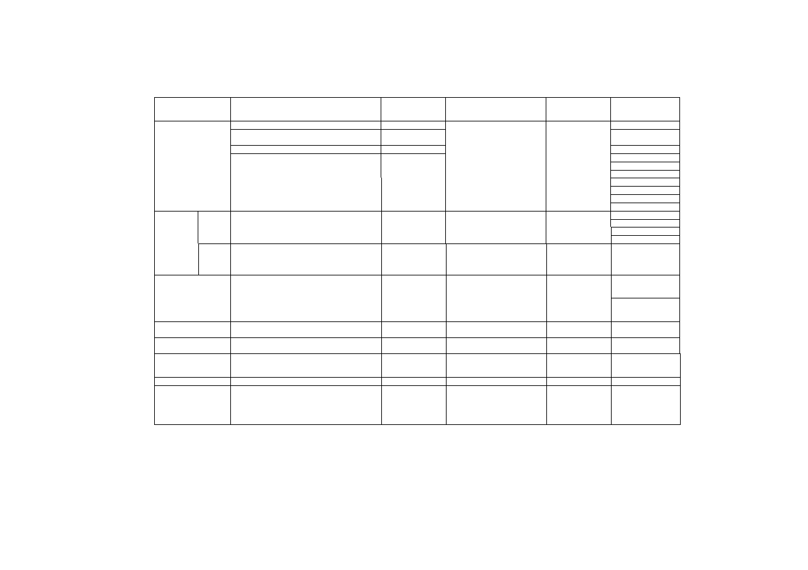
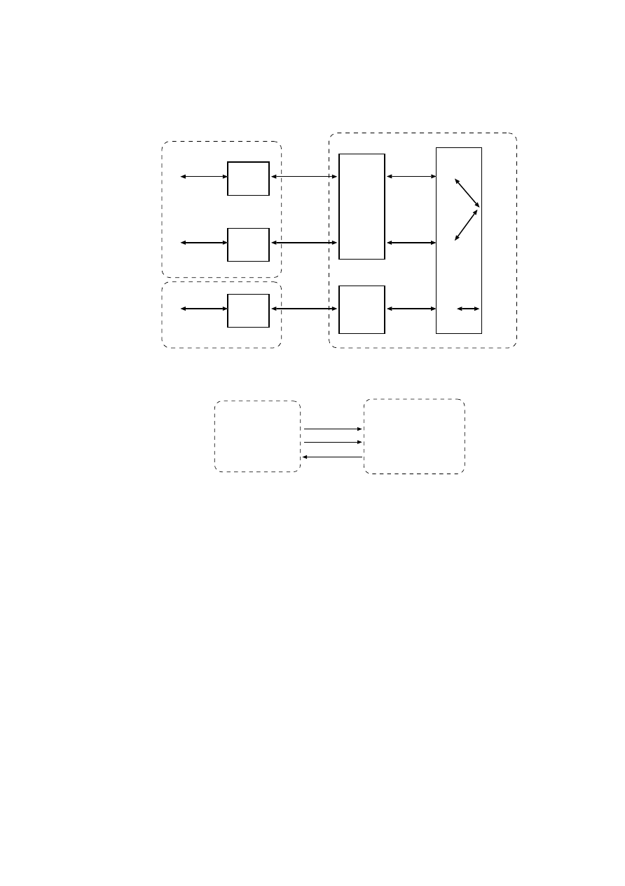
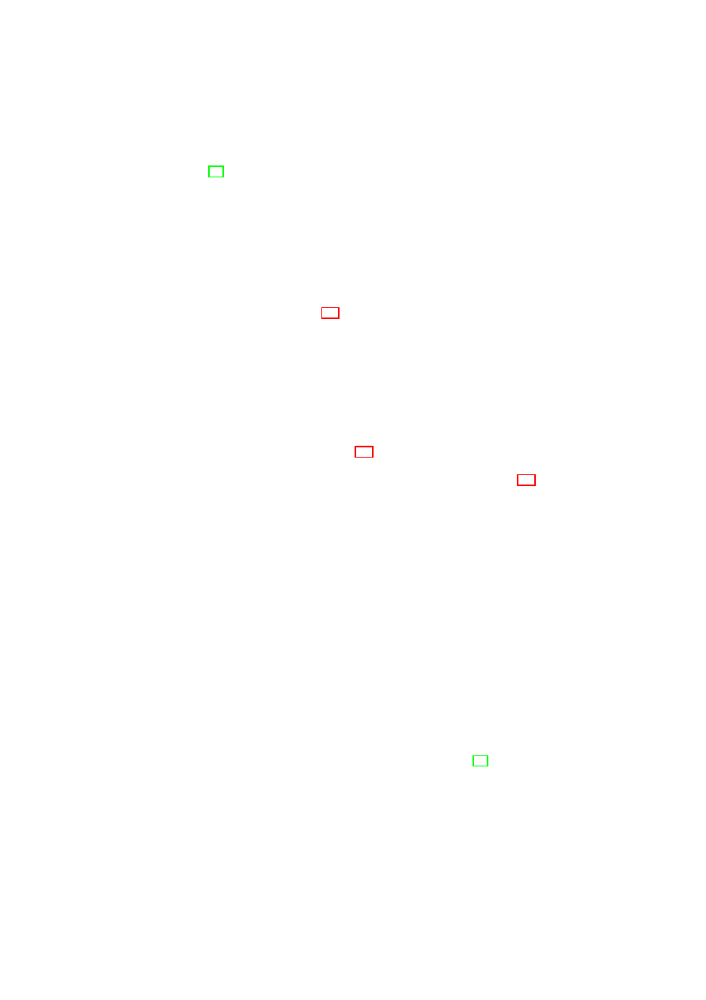
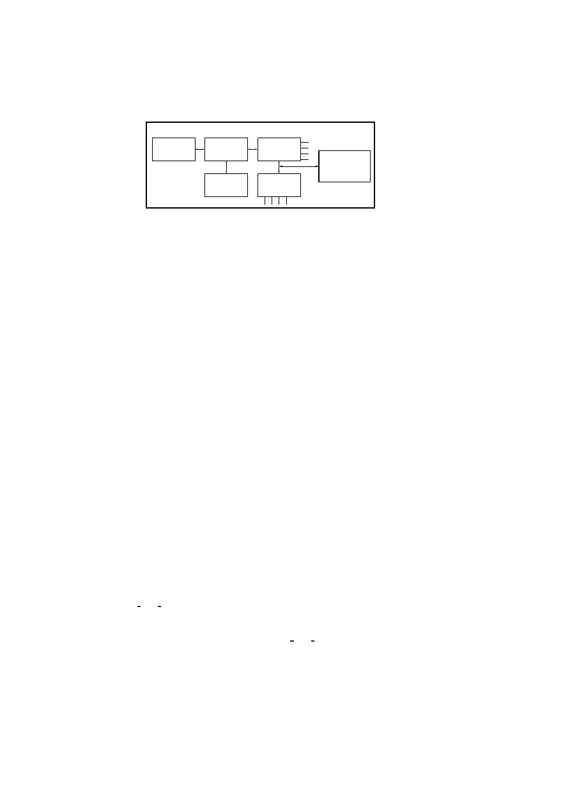
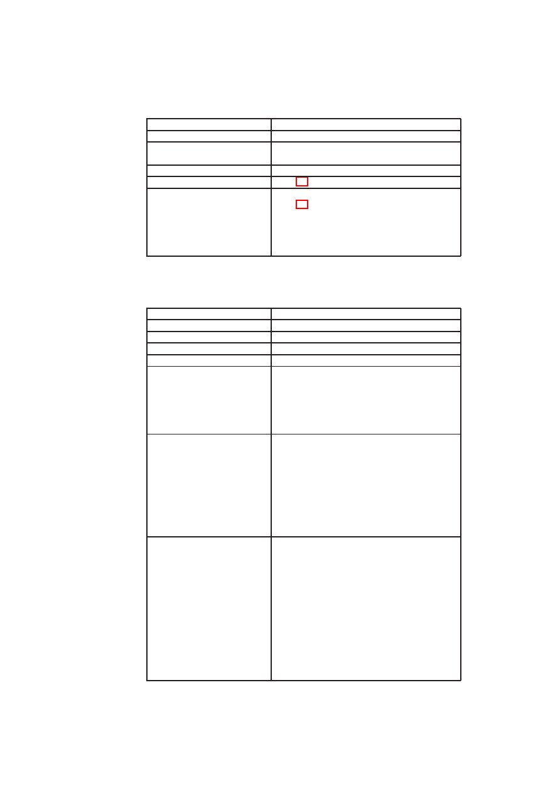
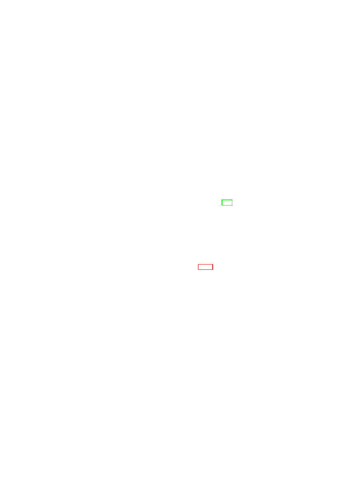

D05.1 Basic Security Services
Project number
IST-027635
Project acronym
Open_TC
Project title
Open Trusted Computing
Deliverable type
Report
Deliverable reference number
IST-027635/D05.1/V1.0 Final
Deliverable title
Basic Security Services
WP contributing to the deliverable
WP5
Due date
M20
Actual submission date
August 2
nd
, 2007
Responsible Organisation
IBM
Authors
Matthias Schunter (IBM)
Abstract
This report summarises the work of the
OpenTC Workpackage 05 “Security
Management” during the first half of the
OpenTC Project (see www.opentc.net). The
goal of WP5 is to define the security policies
and services as well as their management for
the OpenTC platform.
Workpackage 05 is based on a security-
enhanced core hypervisor (Xen or L4) to
function. With security-enhanced we mean
that the hypervisor is able to control access
to core hypervisor resources such as shared
memory. This core hypervisor and the
underlying hardware are built by
Workpackage 04 and 03, respectively.
Workpackage 05 then defines security
domains that are automatically isolated and
enforce domain-specific policies. This
enables, e.g., reliable customer isolation in a
data centre as well as secure islands of
corporate networks on personal
homemachines. Technically, this is achieved
by providing virtual devices that enforce
these policies and are isolated from each
other.
In addition, we define infrastructure for
cross-cutting security objectives that span
all aspects of the system. One example is
integrity management that enables
Open_TC Deliverable 05.1
1
OpenTC D05.1 - Basic Security Services
V1.0 Final
verification of the integrity of a trusted
computing base as well as the policies
enforced by the devices. The overall output
of Workpackage 05 to the applications
running on the OpenTC platform are secure
virtual machines, networks, storage, and
device management. This infrastructure is
then used by the applications that are built
by Workpackage 06. Security focuses on flow
control, integrity protection, and security
protection against outsiders (e.g.,
encryption).
In addition to this applied work on the
OpenTC platform,Workpackage 05 has
conducted studies on advanced virtualisation
topics. Examples include privacy protection
as well as architectures for dependability
using virtual machines.
The report is structured into a detailed
design of the Xen and L4 platforms as well
as the platform-agnostic service
management and public-key infrastructures.
It is concluded with the advanced research
studies and an appendix.
Keywords
Security Services, XEN, L4, Hypervisor
Dissemination level
Public
Revision
V1.0 Final
Instrument
IP
Start date of the
project
1
st
November 2005
Thematic Priority
IST
Duration
42 months
Open_TC Deliverable 05.1
2
OpenTC D05.1 - Basic Security Services
V1.0 Final
If you need further information, please visit our website
www.opentc.net
or contact
the coordinator:
Technikon Forschungs-und Planungsgesellschaft mbH
Richard-Wagner-Strasse 7, 9500 Villach, AUSTRIA
Tel.+43 4242 23355 –0
Fax. +43 4242 23355 –77
Email
coordination@opentc.net
The information in this document is provided “as is”, and no guarantee
or warranty is given that the information is fit for any particular purpose.
The user thereof uses the information at its sole risk and liability.
Open_TC Deliverable 05.1
3
Contents
1
Introduction and State-of-the-Art
7
1.1
Introduction . . . . . . . . . . . . . . . . . . . . . . . . . . . . . . .
7
1.2
Outline
. . . . . . . . . . . . . . . . . . . . . . . . . . . . . . . . .
7
1.3
High-level Secure Virtualisation Architecture . . . . . . . . . . . . .
8
1.3.1
Virtualisation Layer
. . . . . . . . . . . . . . . . . . . . . .
8
1.3.2
Security Services Layer
. . . . . . . . . . . . . . . . . . . .
9
1.3.3
Virtual Machines Layer . . . . . . . . . . . . . . . . . . . . .
10
1.3.4
Application Layer
. . . . . . . . . . . . . . . . . . . . . . .
10
1.3.5
Implementation of the Architecture . . . . . . . . . . . . . .
10
1.4
High-level Management Architecture
. . . . . . . . . . . . . . . . .
11
2
Background and Related Work
13
2.1
Trusted Computing . . . . . . . . . . . . . . . . . . . . . . . . . . .
13
2.1.1
Limitations . . . . . . . . . . . . . . . . . . . . . . . . . . .
14
2.2
Secure Operating Systems . . . . . . . . . . . . . . . . . . . . . . .
15
2.2.1
Approaches using Virtualisation . . . . . . . . . . . . . . . .
15
2.2.2
Approaches using Microkernels . . . . . . . . . . . . . . . .
15
2.3
Secure Virtual Networking . . . . . . . . . . . . . . . . . . . . . . .
16
2.4
Attestation and Integrity Verification . . . . . . . . . . . . . . . . . .
17
2.5
Virtualisation and Dependability . . . . . . . . . . . . . . . . . . . .
18
3
Xen Security Services
20
3.1
Xen Security Architecture
. . . . . . . . . . . . . . . . . . . . . . .
20
3.1.1
Virtual Machine Monitors . . . . . . . . . . . . . . . . . . .
20
3.1.2
Xen Basics . . . . . . . . . . . . . . . . . . . . . . . . . . .
20
3.1.3
Xen Architecture . . . . . . . . . . . . . . . . . . . . . . . .
22
3.1.4
Xen Disaggregation
. . . . . . . . . . . . . . . . . . . . . .
23
3.2
Xen Security Services . . . . . . . . . . . . . . . . . . . . . . . . . .
23
3.2.1
Security System Architecture
. . . . . . . . . . . . . . . . .
25
3.2.2
Component-Level Design of the VMM Security Services Layer
25
3.3
Secure Virtual Networking . . . . . . . . . . . . . . . . . . . . . . .
30
3.3.1
Security Objectives and Policies . . . . . . . . . . . . . . . .
31
3.3.2
Secure Virtual Networks . . . . . . . . . . . . . . . . . . . .
33
3.3.3
Auto-deployment of TVDs . . . . . . . . . . . . . . . . . . .
39
3.3.4
Implementation in Xen . . . . . . . . . . . . . . . . . . . . .
42
3.3.5
Performance Results . . . . . . . . . . . . . . . . . . . . . .
44
3.4
Integrity Management . . . . . . . . . . . . . . . . . . . . . . . . . .
46
3.4.1
Introduction . . . . . . . . . . . . . . . . . . . . . . . . . . .
4
6
4
5
OpenTC D05.1 – Basic Security Services
3.4.2
Integrity Management for Virtual Machines . . . . . . . . . .
46
3.4.3
Detailed Component Interactions
. . . . . . . . . . . . . . .
50
3.4.4
Summary . . . . . . . . . . . . . . . . . . . . . . . . . . . .
53
4
L4 Security Services
54
4.1
High-Level Software Architecture . . . . . . . . . . . . . . . . . . .
54
4.1.1
Basic Concepts . . . . . . . . . . . . . . . . . . . . . . . . .
54
4.1.2
Implementation . . . . . . . . . . . . . . . . . . . . . . . . .
57
4.2
High-Level Requirements Specification . . . . . . . . . . . . . . . .
59
4.2.1
Informal Requirements . . . . . . . . . . . . . . . . . . . . .
59
4.2.2
Security Environment
. . . . . . . . . . . . . . . . . . . . .
60
4.2.3
Functional Requirements (Use Case Model) . . . . . . . . . .
62
4.2.4
Security Objectives . . . . . . . . . . . . . . . . . . . . . . .
65
4.2.5
Security Requirements . . . . . . . . . . . . . . . . . . . . .
67
4.2.6
Supplementary Requirements . . . . . . . . . . . . . . . . .
68
4.3
High-Level Software Architecture Specification . . . . . . . . . . . .
70
4.3.1
Security Model . . . . . . . . . . . . . . . . . . . . . . . . .
70
4.3.2
Logical View . . . . . . . . . . . . . . . . . . . . . . . . . .
72
4.4
High-Level Design of a Secure Virtual Private Network . . . . . . . .
80
4.4.1
Introduction . . . . . . . . . . . . . . . . . . . . . . . . . . .
80
4.4.2
Requirement Specification . . . . . . . . . . . . . . . . . . .
80
4.4.3
Design of Virtual Networking for L4 . . . . . . . . . . . . . .
86
5
Security Services Management
88
5.1
Integrity Management Model . . . . . . . . . . . . . . . . . . . . . .
88
5.1.1
Objectives and Definitions . . . . . . . . . . . . . . . . . . .
88
5.1.2
Hierarchical Integrity Model . . . . . . . . . . . . . . . . . .
90
5.1.3
Dynamic Measurement Model . . . . . . . . . . . . . . . . .
92
5.1.4
Evaluation of the Model . . . . . . . . . . . . . . . . . . . .
94
5.2
Security Services Management Framework
. . . . . . . . . . . . . .
95
5.2.1
Framework Architecture . . . . . . . . . . . . . . . . . . . .
96
5.2.2
Core Security Service Management . . . . . . . . . . . . . .
97
5.2.3
Credential Management . . . . . . . . . . . . . . . . . . . .
98
5.2.4
Remote Attestation . . . . . . . . . . . . . . . . . . . . . . .
101
5.3
Conclusions and Chapter Summary . . . . . . . . . . . . . . . . . . .
102
6
Public Key Infrastructure
103
6.1
Introduction . . . . . . . . . . . . . . . . . . . . . . . . . . . . . . .
103
6.2
Basic Trusted Computing PKI . . . . . . . . . . . . . . . . . . . . .
104
6.2.1
EK Certificate . . . . . . . . . . . . . . . . . . . . . . . . . .
104
6.2.2
Platform Certificate . . . . . . . . . . . . . . . . . . . . . . .
105
6.2.3
Attestation Identity . . . . . . . . . . . . . . . . . . . . . . .
106
6.3
Trusted Platform Agent . . . . . . . . . . . . . . . . . . . . . . . . .
107
6.4
XKMS mapping . . . . . . . . . . . . . . . . . . . . . . . . . . . . .
109
6.4.1
Message Structure . . . . . . . . . . . . . . . . . . . . . . .
109
6.4.2
RegisterRequest
. . . . . . . . . . . . . . . . . . . . . . . .
112
6.4.3
LocateRequest . . . . . . . . . . . . . . . . . . . . . . . . .
113
6.4.4
ValidateRequest . . . . . . . . . . . . . . . . . . . . . . . . .
114
6.4.5
RevokeRequest . . . . . . . . . . . . . . . . . . . . . . . . .
115
6.4.6
ReissueRequest . . . . . . . . . . . . . . . . . . . . . . . . .
116
CONTENTS
6
6.4.7
RecoverRequest
. . . . . . . . . . . . . . . . . . . . . . . .
117
6.5
Open Issues . . . . . . . . . . . . . . . . . . . . . . . . . . . . . . .
117
7
Advanced Security Services
119
7.1
Privacy-enhancing Protocols . . . . . . . . . . . . . . . . . . . . . .
119
7.1.1
Outline of this Section . . . . . . . . . . . . . . . . . . . . .
120
7.1.2
Terms and Definitions . . . . . . . . . . . . . . . . . . . . .
120
7.1.3
Main Aspects . . . . . . . . . . . . . . . . . . . . . . . . . .
124
7.1.4
TCG Model . . . . . . . . . . . . . . . . . . . . . . . . . . .
128
7.1.5
TCG Binary Attestation . . . . . . . . . . . . . . . . . . . .
130
7.1.6
Attesting Properties . . . . . . . . . . . . . . . . . . . . . . .
133
7.1.7
Delegation . . . . . . . . . . . . . . . . . . . . . . . . . . .
135
7.1.8
Property Attestation
. . . . . . . . . . . . . . . . . . . . . .
138
7.1.9
Property Attestation Protocols . . . . . . . . . . . . . . . . .
141
7.1.10 Deployment Scenarios . . . . . . . . . . . . . . . . . . . . .
143
7.1.11 Implementation . . . . . . . . . . . . . . . . . . . . . . . . .
147
7.1.12 Open Issues . . . . . . . . . . . . . . . . . . . . . . . . . . .
149
7.1.13 Summary . . . . . . . . . . . . . . . . . . . . . . . . . . . .
149
7.2
Dependability Enhancements Using Virtualisation . . . . . . . . . . .
150
7.2.1
Introduction . . . . . . . . . . . . . . . . . . . . . . . . . . .
150
7.2.2
Virtualisation: New Opportunities for Dependability . . . . .
150
7.2.3
Quantifying the Impact of Virtualisation on Node Reliability .
153
7.2.4
Conclusion . . . . . . . . . . . . . . . . . . . . . . . . . . .
158
8
Conclusion and Future Work
159
A Appendices
160
A.1 Design of TPM Controller for TPM Management . . . . . . . . . . .
160
A.1.1
Overview . . . . . . . . . . . . . . . . . . . . . . . . . . . .
160
A.1.2
Getting started . . . . . . . . . . . . . . . . . . . . . . . . .
161
A.1.3
Ownership . . . . . . . . . . . . . . . . . . . . . . . . . . .
161
A.1.4
Version . . . . . . . . . . . . . . . . . . . . . . . . . . . . .
165
A.1.5
Status . . . . . . . . . . . . . . . . . . . . . . . . . . . . . .
167
A.1.6
Pin Failure Reset . . . . . . . . . . . . . . . . . . . . . . . .
168
A.1.7
Certificate Chain . . . . . . . . . . . . . . . . . . . . . . . .
169
A.1.8
About . . . . . . . . . . . . . . . . . . . . . . . . . . . . . .
171
A.2 TPM Backup . . . . . . . . . . . . . . . . . . . . . . . . . . . . . .
171
A.2.1
Overview . . . . . . . . . . . . . . . . . . . . . . . . . . . .
172
A.2.2
Getting started . . . . . . . . . . . . . . . . . . . . . . . . .
172
A.2.3
User persistent storage . . . . . . . . . . . . . . . . . . . . .
173
A.2.4
System persistent storage . . . . . . . . . . . . . . . . . . . .
176
A.2.5
About . . . . . . . . . . . . . . . . . . . . . . . . . . . . . .
179
A.3 Use Cases for Security Services
. . . . . . . . . . . . . . . . . . . .
179
A.4 Additional Use Cases for SVPN . . . . . . . . . . . . . . . . . . . .
196
A.5 Basic PKI Prototype
. . . . . . . . . . . . . . . . . . . . . . . . . .
200
A.5.1
Components
. . . . . . . . . . . . . . . . . . . . . . . . . .
200
A.5.2
Applications . . . . . . . . . . . . . . . . . . . . . . . . . .
204
A.5.3
Implementation of the Trusted Platform Agent (TPA) . . . . .
205
Bibliography
206
Chapter 1
Introduction and
State-of-the-Art
M. Schunter (IBM), S. Cabuk (HPL)
1.1
Introduction
This document is the first deliverable of the OpenTC Workpackage 05 – “Security
Management”. It summarises highlights of our research in the first half of the OpenTC
project.
The OpenTC architecture comprises four main layers. The hardware layer (Work-
package 03) provides hardware with virtual machine and security enablement. This is
then used by the hypervisor layer (Workpackage 04) to provide virtual machines with
appropriate security enforcement capabilities. Examples include isolation or access
control to virtual machines. The security services layer (Workpackage 05) provides
secure device virtualisation such as secure storage, network, and display. It provides
functionality to manage the security policies and integrity of the trusted computing
base of the OpenTC platform.
1.2
Outline
This document is structured as follows. Chapter 1 introduces the OpenTC concept and
describes the high-level architecture of the OpenTC platform that is common to both
hypervisors, Xen and L4. Chapter 2 summarises related work and background. Chap-
ter 3 describes the Xen security services architecture in detail. Chapter 4 describes the
L4 security services architecture in detail. Chapter 5 describes the integrity manage-
ment concept that is hypervisor agnostic and can be implemented on both hypervisors.
Chapter 6 describes our Public Key Infrastructure. It describes the certificate extensions
to X509v3 certificates that are necessary to support the OpenTC platform. Chapter 7
outlines some of our more advanced research such as property-based attestation or in-
creased dependability by means of using hypervisors. Chapter 8 concludes this report
while Appendix A contains supplemental material.
7
Open_TC Deliverable 05.1
8
OpenTC D05.1 – Basic Security Services
Figure 1.1: Layers of the OpenTC Architecture
1.3
High-level Secure Virtualisation Architecture
Figure 1.1 outlines our architecture. The unique features of the OpenTC architecture
are:
•
Verifiable security by means of trusted computing technology.
•
Support of multiple different hypervisors (L4 and Xen).
•
Flexibility by means of configurable policies.
It is structured in different layers of abstraction that we will describe in the sequel. Each
layer interact with the next layer of abstraction by a set of well-defined interfaces.
The foundation of our architecture is an actual virtualisation-enabled x86 processor
and its peripherals. This includes processors, memory, and devices (network, storage,
PCI cards, etc.) that need to be virtualised. The hypervisors use AMD SVM tech-
nology
1
as well as Intel VT technology
2
. By using processors with full virtualisation
support, we can achieve better isolation without the need to modify guest operating
systems.
1.3.1
Virtualisation Layer
The virtualisation layer provides virtual machines and their basic policy enforcement
capabilities. We have built on existing versions of the L4 and Xen hypervisors. Our
main focus is to extend these hypervisors to increase security. That includes several
aspects:
1
See
http://enterprise.amd.com/us-en/solutions/consolidation/virtualization.aspx
2
See
http://www.intel.com/technology/computing/vptech/
.
Open_TC Deliverable 05.1
CHAPTER 1. INTRODUCTION AND STATE-OF-THE-ART
9
•
Fine-grained Trust Domains: Unlike today’s version of Xen, we separate ser-
vices into small isolated virtual machines to increase robustness and security.
•
Policy-enforcement: The virtualisation layer is built to enforce a wide range of
security policies. Examples include access and flow control policies as well as
resource sharing policies.
•
Verifiable security: By means of trusted computing, external stakeholders can
verify the virtualisation layer and its policies.
The virtualisation layer offers a basic management interface (BMI) to the security ser-
vices layer. The interface supports functions like creating a virtual machine while
specifying its virtual network cards, memory, storage, and CPUs. An example of a
policy that can be enforced at the virtualisation layer are sHype policies that can be
loaded at boot-time [81].
1.3.2
Security Services Layer
The security services layer provides scalable security and virtualisation functions that
are needed to enforce security policies. This includes compartment security manage-
ment, user security management, and secure device virtualisation.
The compartment security manager manages the life-cycle of virtual machines and
tracks the security policies and other context associated with each compartment. This
includes integrity constraints, permissions, and global identifiers for each compart-
ment. The compartment security manager can be used to prove selected security prop-
erties to peers. The user security manager manages the users of the system and enables
authentication of individual users and their associated roles.
An important contribution to scalability for trusted computing is the focus on se-
curity properties for trust management [71, 78, 35]. Instead of verifying integrity by
means of cryptographic checksums, we use higher-level properties such as user roles,
machine types, or trust domains to determine trust. This is done by first using check-
sums to verify the core security services and then use these security services to evalu-
ate the desired security properties. Only if these properties are satisfied, certain actions
such as unsealing a key or performing a transaction with a peer are performed. The con-
sequence is that a verifier only needs to define security properties to be satisfied and no
longer needs to track individual software configurations that are deemed trustworthy
(see Section 7.1).
Virtualised devices can include any device that can be made to support virtual-
isation. Secure storage provide virtual partitions with integrity, confidentiality, and
freshness guarantees. Virtual networks can provide mutually isolated virtual network
topologies and secure transport (cf. [34]). The implementation of trusted user inter-
faces depends on the environment. A simple solution that is sufficient for reliable
selecting a compartment can be implemented by a secure hot-key that is caught by a
virtualised keyboard driver. Another alternative is a multi-compartment graphical user
interface that assigns a distinguishable window to each compartment. An third option
are remote user interfaces such as a secure shell management console or a remotely
accessible management service. In our secure transaction scenario the user can use a
hot-key to switch compartments. In a server setting, the shell will indicate the com-
partment that it is operating on. The cryptographic services include a virtual TPM [10]
as well as other cryptographic and key management primitives.
Open_TC Deliverable 05.1

10
OpenTC D05.1 – Basic Security Services
For efficiency, the security services can push policies into policy enforcement func-
tions of the virtualisation layer. This is done, if fast policy enforcement is critical for
performance. E.g., a policy decision whether a certain network card can be assigned
to a newly created virtual machine can easily be done outside the hypervisor since it
is usually not performance critical. Access decision for shared resources, on the other
hand, should be executed in the core since their performance is critical.
1.3.3
Virtual Machines Layer
The virtual machines layer contains the actual virtual machines that constitute the pay-
load of the architecture. The architecture can host Windows and Linux virtual ma-
chines. This is done by providing drivers for accessing the virtual hardware provided
by the lower layers. Depending on the hypervisor, certain security services can be
implemented by a set of security management machines (Xen) or lighter-weight tasks
(L4).
1.3.4
Application Layer
In a management virtual machine, we host the management applications that allow
users to interact and maintain their platform. This includes accepting/rejecting policies
and defining or loading baseline policies that can delegate certain management func-
tions (such as trust in public keys) to other parties. Another example is the life-cycle
management of a trusted platform module.
An important class of applications are management applications. In particular, in
virtualised data centres, a scalable management infrastructure is essential. Technically,
this scalability is achieved by multiple mechanisms such as secure migration of vir-
tual machines that enables load balancing or self-service machines that obtain mainte-
nance orders and execute these orders while only reporting results to the management
servers. An example of such a pull model is patch management in which a machine
pulls the latest patch policy, then installs the patches from a cluster of software distri-
bution servers, and finally reports its success to the configuration management system.
As a consequence, central management infrastructure only manages policies while the
costly operations are distributed onto the individual machines.
1.3.5
Implementation of the Architecture
On the L4 hypervisor, the security and management services are isolated tasks that run
directly on top of the L4 micro kernel. Each service defines a well-defined interface for
inter-process communication (IPC). Interaction between services or between instances
of hosted payload virtual machines and services is performed using these interfaces.
An IPC call that is issued by a process first goes to the L4 micro kernel, which then
transfers it to the callee. The IPC mechanism is implemented similarly to the IPC
architecture of CORBA.
The implementation of the security and management services on the Xen Hyper-
visor is split into two parts. The low-level part is implemented directly in the Xen
Kernel running with full privileges. This part contains the security enforcement of the
security services. The lower-level part controls the basic access, communication and
Open_TC Deliverable 05.1
CHAPTER 1. INTRODUCTION AND STATE-OF-THE-ART
11
Platform
Management
Domain
Management
Resource
Management
Network
Management
Hardware & Virtualisation Layer
Figure 1.2: A high-level abstraction of the management components.
enforcement and provides a well-defined interface to the higher layers. The higher
level includes non-enforcement parts of the security services as well as the manage-
ment components. Both run in one or more
3
service virtual machines or in a special
security service virtual machine as normal user processes.
1.4
High-level Management Architecture
Figure 1.2 illustrates a high-level abstraction of the management components that are
required to manage virtualised platforms. Each component concentrates on a specific
aspect of virtualised platform management. Platform management involves the life-
cycle management of the underlying physical platform and its security device (e.g.,
trusted platform module (TPM)). Domain management deals with the management
of virtual domain users and life-cycle. Virtual devices such as virtual network inter-
faces [34], virtualised TPMs [10], and virtualised user interfaces [68] are managed
through resource management. Network management makes use of these virtualised
devices to further enable virtual topologies using various network virtualisation tech-
niques.
The management components are not mutually exclusive. That is, corresponding
management duties may be handled in collaboration with more that one management
component. For example, resource management and network management collaborate
to enable and manage network virtualisation. In this setting, the former manages the
virtual network interfaces and the latter manages the virtual network topology.
Security services provide the necessary functionality for each management com-
ponent listed above and further enhance each to meet security requirements such as
integrity, isolation, access control, confidentiality, and flow control. Further, they main-
tain a unified view on security guarantees that cover multiple devices (e.g., data on a
disk being stored in a TPM) and the virtualisation layer core. Table 1.1 lists the se-
curity requirements for the underlying physical platform and the virtual domains and
resources it hosts. Figure 1.3 illustrates an example security-enhanced management
framework with the relevant functionality grouped together. The framework is built
upon the foundation of the hardware root of trust offered by the TPM. The architecture
leverages the recent advances in hardware virtualisation such as virtualisation support
in the CPU offered in the latest chips from Intel and AMD. The hardware layer includes
one of these chips and the TPM. Just above the hardware layer is a trusted virtualisa-
tion layer with strong isolation properties (among virtual domains) and well-defined
interfaces to the TPM. On top of the virtualisation layer core are the security services.
3
For increased security, we split the single management virtual machine of Xen into multiple smaller
ones.
Open_TC Deliverable 05.1
12
OpenTC D05.1 – Basic Security Services
Integrity
Isolation
Confidentiality
Access control
Flow control
Platform security
X
X
Domain security
X
X
X
Network security
X
X
X
Storage security
X
X
X
Interface security
X
X
Table 1.1: Security requirements for the physical platform, virtual domains, and virtual
devices (storage and interfaces).
Life-cycle
Management
User
Management
Integrity
Management
Credential
Management
Hardware & Virtualisation Layer
Security-enhanced Domain Management
TPM
Management
Key
Management
Security-enhanced Platform Management
vTPM
Management
vInterface
Management
vStorage
Management
vNetwork
Management
Security-enhanced Resource / Network Management
Life-cycle
Management
Figure 1.3: An example security-enhanced management framework with the relevant
functionality grouped together.
Security services models presented in this report follow the model depicted in Fig-
ure 1.3 to realise such a framework making use of the virtualisation and Trusted Com-
puting technology. However, they differ in the design and implementation. One option
is to employ a single large management domain to orchestrate the management oper-
ations. An alternative approach follows a distributed model to employ small manage-
ment domains to distribute the management functionality across the platform.
Open_TC Deliverable 05.1
Chapter 2
Background and Related Work
S. Cabuk, C. I. Dalton (HPL), B. Jansen, H. Ramasamy, M. Schunter, E. Van
Herreweghen (IBM), Ch. St¨uble, A. Sadeghi, M. Unger (RUB)
2.1
Trusted Computing
A TPM is a hardware implementation of multiple roots-of-trust, each for a different
intended purpose; e.g., root of trust for reporting, and root of trust for storage. The
specification of the TPM is given by the Trusted Computing Group (TCG [102]).
Each root of trust enables parties, both local and remote, to place trust on a TPM-
equipped platform that the platform will behave as expected for the intended purpose.
By definition, the parties trust each root-of-trust, and therefore it is essential that the
root-of-trust always behave as expected. Given that requirement, a hardware root-of-
trust – especially one that is completely protected from software attacks and tamper-
evident against physical attacks, as required by the TPM specification – is better than a
software-only root-of-trust because of the inherent difficulty of validating the software
that provides the root-of-trust in the first place.
The TPM has Platform Configuration Registers (PCRs), which are 160-bit registers
useful for storing platform integrity measurements. The values stored in PCRs are
essential for TPM functions such as attestation and sealing. The TPM specification
requires the first 16 PCRs to be non-resettable. The values stored in those registers
can only be extended. The contents of other PCRs can be changed only by the reset
or extension operations. The extension operation takes an input value and a PCR as
input arguments, and replaces the contents of the PCR with a SHA-1 hash of the string
representing the concatenation of the old PCR contents and the input value.
The TPM features we leverage in this section are integrity measurement storage,
recording, attestation, and sealing. “Measurement” of a component involves computing
the SHA-1 hash of the binary code of that component. The sequence of measured val-
ues are stored in a measurement log, external to the TPM. “Recording” a measurement
involves extending a PCR with the hash. “Attestation” refers to the challenge-response
style cryptographic protocol for a remote party to query the recorded platform measure-
ment values and for the platform to reliably report the requested values. “Sealing” is a
TPM operation that is used to ensure that a certain data item is accessible only under
platform configurations reflected by PCR values. The “unsealing” operation will reveal
the data item only if the PCR values at the time of the operation match the specified
PCR value at the time of sealing.
13
Open_TC Deliverable 05.1

14
OpenTC D05.1 – Basic Security Services
TCB Measurement.
In particular, each software component in the Trusted Comput-
ing Base (TCB) is first measured and then recorded before the control is passed to it.
These measurements are stored in the corresponding TPM PCRs, and are incremental.
That is, a sequence of measurements can be recorded in the same register by incre-
mentally extending the previous measurement without changing its size, thus enabling
virtually infinite number of measurements. This way, the complete execution sequence
can be recorded enabling a third-party to verify it at a later phase.
Remote Attestation.
A user can verify the correct operation of a trusted comput-
ing platform, for example, before exchanging data with the platform, by requesting
the trusted platform to provide one or more integrity metrics. The user receives the
integrity metric or metrics, and compares them against values which it believes to be
true (these values being provided by a trusted party that is prepared to vouch for the
trustworthiness of the platform or by another party the user is willing to trust). If there
is a match, the implication is that at least part of the platform is operating correctly,
depending on the scope of the integrity metric. If there is no match, the assumption
is that the entire platform has been subverted and cannot be trusted (unless isolation
technologies are employed to restrict the scope of what cannot be trusted).
2.1.1
Limitations
The static TCG architecture imposes several limitations on complex dynamic platforms
in which platform configuration and security policies are allowed to change frequently:
Linear Chain-of-Trust
The TCG measurement model follows a linear model to
form a chain-of-trust rather than branching out hierarchically. This results in a lin-
ear dependency relation between the platform components. However, in complex plat-
forms this conservative approach may prove impractical because a linear dependency is
often not the case. That is, components may form independent trust chains all branch-
ing out from a common root.
An expensive solution to this problem suggested by the TCG is to identify and
group dependent components together and employ more than one PCR to store the
measurement for each group. However, because the number of registers is limited, this
solution is not scalable. Further, the TCG does not provide any mechanism to manage
these measurement groups at a later stage.
Static Measurement Model
Current TCG schemes fail to address the cases in which
measured platform components are allowed to change into another form (e.g., through
a software update) or adapt to current conditions. Further, certain platform compo-
nents may function in various operating modes (e.g., with different configurations) to
perform operations with varying security needs. In either case, the TCG takes the con-
servative approach to deem any such change as potentially malicious and irreversible.
The TCG requires on-going measurements to take place using measurement agents
to monitor ongoing activity. However, these measurements are static and irreversible.
For example, if a platform component changes into another form and changes back into
its original form, the static solution requires a complete reboot and the re-measuring
of the entire chain-of-trust to be able to re-establish trustworthiness. This approach
Open_TC Deliverable 05.1
CHAPTER 2. BACKGROUND AND RELATED WORK
15
can be beneficial for platforms in which one cannot evaluate what impact such changes
may have on the platform. However, it is impractical for dynamic platforms in which
platform components are allowed to change frequently and run in various operating
modes.
1
2.2
Secure Operating Systems
Much effort has already been put into improving security of computing platforms since
computers are used within infrastructures that require management of sensitive data.
Examples of systems that were developed from scratch to respect security require-
ments are BirliX [37], Multics [23] and Hydra [21] or more recent ones are EROS [87]
and SPIN [11]. The problems inherent to these approaches is that systems particularly
designed for preserving security tend to be very inflexible or software cannot be ported
easily to these systems or has to be developed from scratch. These factors inhibit these
approaches to be applied in a large scale. SELinux [88] suffers from similar prob-
lems. While allowing legacy applications to run, SELinux claims to achieve security
by defining and enforcing specific security policies, but writing these security policies
turned out to be far too complicated. Furthermore these approaches although especially
designed to preserve security have been proves to be vulnerable to attacks [48]. Other
approaches rely on special hardware, e.g., secure coprocessors, to realise their security
goals like Dyad [104] for example. In this system similar measures to keep data secure
are applied like in our approach, but in contrast to the OpenTC approach they rely on a
physically fully separated execution environment. Thus, additional costs for this sep-
arated environment are induced. By providing logical separation we omit these costs.
Another approach represents the “Bear” project [60] of the Dartmouth College. In this
system TCG hardware is used by an adapted boot loader to provide a chain of trust and
a Linux security kernel module monitors changes to sensitive data. The weakness of
this system is that it still relies on a large monolithic kernel. Marchesini et. al. [61]
propose OS-hardening techniques to provide isolation of environments but they also
use a monolithic kernel as base for their system. As result performance loss occurs
and the overall improvement of security is rather small, because these legacy mono-
lithic kernels are too large to evaluate their security. Therefore, we aim at keeping the
amount of code that has to be evaluated as small as possible by using virtualisation
and microkernel techniques. Other advantages of the OpenTC approach is that legacy
software does not have to be adapted to run without perceptible performance loss.
2.2.1
Approaches using Virtualisation
The Terra [31] system represents promising approach to secure virtualisation by di-
viding the system in closed-box and open-box virtual machines. Closed-box virtual
machines run separated from others and are capable to provide a security enhanced
environment for applications processing sensitive data.
2.2.2
Approaches using Microkernels
Examples for systems using microkernels are SawMill-Linux [33] based on the L4
microkernel [58] and Flask [91], a Mach-based system. As far as we know these ap-
1
Although dynamic root of trust feature was introduced in TPM v1.2 that can potentially address this
problem, the problem of dynamically managing software states remains unaddressed.
Open_TC Deliverable 05.1
16
OpenTC D05.1 – Basic Security Services
proaches neither aim at keeping security relevant parts as small as possible, nor do they
provide mechanisms such as trusted path or protected environments.
2.3
Secure Virtual Networking
Previous work on virtualising physical networks can be roughly grouped into two
categories:
those based on Ethernet virtualisation and those based on TCP/IP-
level virtualisation. Although both categories include a substantial amount of work
(e.g., [42, 4, 9, 24, 25, 67, 92, 98, 99]), few studies have an explicit security focus.
Ethernet Virtualisation:
Ethernet virtualisation aims at transporting multiple Ether-
net connections over a single physical medium. There are a large number of Ethernet
tunnelling protocols [25]. Local transport over a “trusted” wire is usually multiplexed
using the well-established VLAN standard IEEE 802.1Q-2003 [40]. It adds virtual
LAN tags to each Ethernet segment and enables separation of multiple networks. An
example for high-performance Infiniband VLANs is given in [38]. In wide-area net-
works, VLAN tags are often not preserved. To overcome these restrictions, Ethernet
encapsulation has been proposed as an alternative [42, 92, 24, 25]. Ethernet packets
(including tags) are wrapped into TCP/IP packets. This enables the embedding of a vir-
tual Ethernet network into a wide-area network. Unfortunately, the performance and
scalability of the resulting system are limited.
Overlay Networks and TCP/IP Virtualisation:
Overlay networking provides
application-level network virtualisation among participating hosts. An overlay net-
work typically consists of hosts (physical or virtual), routers, and tunnels that serve as
virtual links between the hosts. Several overlay designs have been introduced in the
literature: PlanetNet VNET [67, 9], X-Bone [98], Resilient Overlay Networks [4], and
the JXTA project [99]. The designs share the common goal of creating a virtualised
network layer with a customised topology mapped onto the actual physical infrastruc-
ture. They differ in the underlying technology that enables the mapping, management
of the technology, and the terminology used.
Overlay networks are most useful for implementing a virtual network topology on
top of the physical topology. However, they are not suitable for systems with strong
separation, isolation, and flow control requirements. As an example, although the Plan-
etLab VNET provides separation of network packets originating from different slices,
the separation is merely enforced using the OS network services [9]. Similarly in
JXTA, peer groups are used to group network peers and enforce certain isolation prop-
erties [99]. However, it is the network administrator’s responsibility to enforce flow
control policies across group boundaries as JXTA does not impose any specific flow
control schemes for the sake of flexibility. Other shortcomings of overlay networks are
complex management models, binary intra-group flow policies, and lack of inter-group
flow control policies.
The VIOLIN project addresses a number of these deficiencies and enhances the
traditional TCP/IP overlay networks to create mutually isolated distributed environ-
ments [45, 74]. The main idea is to provide each subsystem with a virtual IP world
having its own address space. In particular, a VIOLIN is created on top of an overlay
network (such as PlanetLab [9]) and consists of virtual hosts, switches, and routers.
Communication between these entities is enabled through a User-Mode Linux (UML)
O
pen_TC Deliverable 05.1
CHAPTER 2. BACKGROUND AND RELATED WORK
17
implementation enhanced with UDP-tunnelling for inter-host communication
2
. The
VIOLIN model provides isolation between different VIOLINs, which in turn enhances
mobility through location-independent addressing. Further, the model enables the cus-
tomisation of each VIOLIN with the desired technology (e.g., IPv6) without requiring a
global deployment. A major disadvantage of VIOLIN is that the model completely dis-
allows inter-VIOLIN communication rather than adopting a policy-based flow control
scheme. In practice, it may be desirable for VIOLINs belonging to different organi-
sations to interact with each other under certain flow control policies enforced at each
VIOLIN boundary.
Previous solutions also offered network virtualisation schemes that do not rely on
overlay networking. Spawning networks employ nested programmable networks to
form a hierarchy of virtual networks that are isolated from each other [16, 17, 52]. The
main idea is to enable parent networks to spawn child networks that utilise the parents’
resources. The child networks then may or may not choose to inherit certain charac-
teristics from their parent. The advantages are that the child networks can employ a
specialised networking technology (e.g., a mobile-IP network) while inheriting basic
network functionality from their parent. Further, they can spawn child networks of
their own, forming a forest of networks.
Spawning networks utilise the Genesis network kernel [52] that enables the life-
cycle management of each spawned network including the spawning capability. The
Genesis kernel is a complex virtual networking kernel that needs to be installed on ev-
ery physical domain that will potentially host spawning networks. The major downside
is that this requires major changes to the existing network infrastructure.
2.4
Attestation and Integrity Verification
There have been several proposals in the literature for protecting and proving the in-
tegrity of computing platforms based on cryptographic techniques and trusted compo-
nents. Known aspects in this context are secure and authenticated (or trusted) booting.
The former means that a system can measure its own integrity and terminates the boot
process in case the integrity check fails, whereas the latter aims at proving the platform
integrity to a (remote) verifier (for both topics see, e.g., [5], [29], [84], [89], [110]).
The property attestation approach outlined in Section 7.1.7 was first proposed in
[71] to prevent the deficiencies of the existing binary attestation (see Figure 2.1 a)).
Similar to the certificate-based detection method discussed in Section 7.1.6, this solu-
tion is based on property certificates that are used by a verification proxy to translate
binary attestations into property attestations.
In [44], an abstract integrity model for virtual machine monitors is provided. The
authors introduce a more formal notation for attestation and sealing. Their notation
for attestation introduces a function that can be used to define attestation of properties
by mapping configurations to a corresponding property. Binary attestation is obtained
when the identity function is given.
The authors of [35] propose semantic remote attestation – using language-based
trusted virtual machines (VM) to remotely attest high-level program properties (see
Figure 2.1 b)). The general idea behind this approach is the use of a trusted virtual
machine that checks the security policy of the code that runs within the VM. Since
the trusted VM still has to be binary attested, semantic remote attestation is a hybrid
solution with code analysis (see Section 7.1.6).
2
A Xen-based solution has recently been introduced [75].
O
pen_TC Deliverable 05.1
18
OpenTC D05.1 – Basic Security Services
Verification
Proxy
a)
c)
U
U
U
insecure channel
secure channel
TPM
data(D)
exec(H)
Attestor
data(D)
TPM
data(D)
Attestor
Linux & Enforcer
Applications
Servers
Directory
CI
V
V
b)
data(D)
data(D)
Trusted VM
TPM
data(D)
Secure OS
Attestor
attest(H|TVM|OS)
seal(H|TVM|OS,D)
send(m)
receive(m)
receive(m)
send(m)
V
send(m)
receive(m)
attest(p)
seal(p,D)
attest(p)
seal(p,D)
M
M
boot(C )
attest(C )
M
seal(C ,D)
M
M
TVM
exec(C )
exec(C )
M
exec(C )
OS
TSL
B
exec(C )
exec(C )
TSL
B
boot(C |C )
boot(C |C |C )
OS
TVM
M
Figure 2.1: Comparison of related approaches: a) Property Attestation, b) Semantic
Remote Attestation, c) The Enforcer Project
In [60], [62], and [61] the authors propose a software architecture based on Linux
providing attestation and sealing (see Figure 2.1 c)). The architecture allows to bind
short-lifetime data (e.g., application data) to long-lifetime data (e.g., the Linux kernel)
and to allow access to the data only if the system is compatible to a security policy
certified by a security administrator. Moreover, the papers suggest to use a certification
authority that certifies the trustworthiness of certain configurations of long-lifetime
data. Thus, the proposed architecture is very similar to a hybrid approach based on
property certificates.
2.5
Virtualisation and Dependability
We now give a sampling of related work in the area of using virtual machines for
improving dependability. Bressoud and Schneider [12] implemented a primary-backup
replication protocol tolerant to benign faults at the VMM level. The protocol resolves
non-determinism by logging the results of all non-deterministic actions taken by the
primary and then applying the same results at the backups to maintain state consistency.
By treating the entire VM as a state machine, their approach does not require any
modifications to the hardware, the guest OS, or the application program. However, the
downside of the approach is the significant performance overhead incurred.
Commercial products such as VMware Double-Take [105] also do VM-based fault
tolerance.
Double-Take uses hardware-based real-time synchronous replication to
replicate application data from multiple VMs to a single physical machine so that the
application can automatically fail over to a spare machine by importing the replicated
data in case of an outage. As the replication is done at the file system level below
the VM, the technique is guest-OS-agnostic. Such a design could provide the basis
for a business model in which multiple client companies outsource their disaster re-
covery capability to a disaster recovery hot-site that houses multiple backup physical
machines, one for each client.
Douceur and Howell [26] describe how VMMs can be used to ensure that VMs
satisfy determinism and thereby enable state machine replication at the VM level rather
than the application level. Specifically, they describe how a VM’s virtual disk and clock
O
pen_TC Deliverable 05.1
CHAPTER 2. BACKGROUND AND RELATED WORK
19
can be made deterministic with respect to the VM’s execution. The design relieves the
application programmer of the burden of structuring the application as a deterministic
state machine. Their work is similar to Bressoud and Schneider’s approach [12] of
using a VMM to resolve non-determinism. However, the difference lies in the fact that
while Bressoud and Schneider’s approach resolves non-determinism using the results
of the primary machine’s computation, Douceur and Howell’s design resolves non-
determinism a priori by constraining the behaviour of the computation.
Dunlap et. al. describe ReVirt [28] for VM logging and replay. ReVirt encapsulates
the OS as a VM, logs non-deterministic events that affect the VM’s execution, and
uses the logged data to replay the VM’s execution later. Such a capability is useful
to recreate the effects of non-deterministic attacks, as they show later in [47]. Their
replay technique is to start from a checkpoint state and then roll forward using the log
to reach the desired state. Joshi et. al. [47] combine VM introspection with VM replay
to analyse whether a vulnerability was activated in a VM before a patch was applied.
The analysis is based on vulnerability-specific predicates provided by the patch writer.
After the patch has been applied, the same predicates can be used during the VM’s
normal execution to detect and respond to attacks.
Backtracker [49] can be used to identify which application running inside a VM was
exploited on a given host. Backtracker consists of an online component that records
OS objects (such as processes and files) and events (such as read, write, and fork), and
an offline component that generates graphs depicting the possible chain of events that
occurred between the point at which the exploit occurred and the point at which the
exploit was detected.
An extension of Backtracker [51] has been used to track attacks from a single host
at which an infection has been detected to the originator of the attack and to other hosts
that were compromised from that host. The extension is based on identifying causal
relationships, and also has been used for correlating alerts from multiple intrusion de-
tection systems.
King et. al. [50] describe the concept of time-travelling virtual machines, in which
VM replay is used for low-overhead reverse debugging of operating systems and for
providing debugging operations such as reverse breakpoint, reverse watch point, and
reverse single step.
O
pen_TC Deliverable 05.1
Chapter 3
Xen Security Services
S. Cabuk, C. I. Dalton (HPL), B. Jansen, H. Ramasamy, M. Schunter (IBM)
3.1
Xen Security Architecture
This section provides background on virtual machine monitors and an overview of the
Xen security model and architecture.
3.1.1
Virtual Machine Monitors
Virtualisation is a technology that allows the real hardware configuration of a system
to be abstracted away and allows multiple virtual domains (i.e., VMs), each running
its own operating system and applications, to be hosted on a single physical machine.
Virtual computing involves using a layer of software, called the virtual machine mon-
itor (VMM) or hypervisor, between the physical hardware and the operating system to
provide the illusion of a real physical machine to the operating system. The VMM does
this by emulating the physical machine in software. The operating systems running in
the VMs are called guest operating systems. Depending on how the emulation is done,
changes may be required to the guest operating systems. Some VMMs such as VMware
ESX and Xen V3 can leverage recently introduced processor virtualisation support and
do not require any change to be made to the guest operating systems. Without pro-
cessor support, changes to the guest operating system were suggested to achieve better
performance (e.g., Xen para-virtualisation [8]). The OS and applications of a VM run
on the VM’s own virtual resources (virtual CPU, virtual NIC, virtual RAM, virtual
disks, etc.). The VMM maps the virtual resources to the physical resources and also
manages access to the input/output devices.
3.1.2
Xen Basics
In Xen-speak, running instances of VMs are called domains. A special domain, called
Dom0 or domain zero, is the first domain that is created. This domain controls all
other domains, called user domains or DomUs. Dom0 also realises the management
duties for DomUs. These management duties include platform management, domain
management, resource management, and network management as listed in Section 1.4.
20
Open_TC Deliverable 05.1
CHAPTER 3. XEN SECURITY SERVICES
21
Physical Hardware
Management
of security,
devices,
VMs, and I/O
Dom0
GuestOS
User
Software
DomU 1
GuestOS
User
Software
DomU 2
GuestOS
User
Software
DomU 3
VMM Core
Figure 3.1: Xen Virtual Machine Architecture
In this setting, Dom0 and the underlying hypervisor are responsible for: (1) building
and managing user domains, (2) managing virtualised devices and making them avail-
able to user domains, (3) managing virtual network interfaces and topologies, and (4)
allowing interfaces for inter-domain communication.
User domains are managed by the management domain throughout their life-cycle.
The privileged management domain itself is bootstrapped by the underlying Xen hy-
pervisor which passes control to it upon successful initiation. Dom0 then assumes full
control over its life-cycle and the life-cycle of user domains. The latter involves domain
creation, suspension, hibernation, migration, and termination.
The Xen functional model requires a privileged Dom0 to be active on the platform
at all times (i.e., user domains cannot exist without a management domain (existential
policy)). Further, Dom0 is trusted at all times and the platform is trusted if and only
if the hypervisor and Dom0 (i.e., Trusted Computing Base (TCB)) is trusted. Con-
trastively, if Dom0 or the hypervisor is compromised, all user domains are rendered
compromised as well. The hypervisor and Dom0 further provides the necessary isola-
tion between user domains (vertical isolation) as well as the isolation between Dom0
and the user domains (horizontal isolation). As an example to the former, a compro-
mised or a defunct user domain should not have any side-effects on any other user
domain. Similarly, a compromised or a defunct user domain should not have any ef-
fects on Dom0. However, a compromised or a defunct Dom0 renders all user domains
compromised or defunct.
The management domain additionally acts as a driver domain that directs I/O re-
quests from user domains to the underlying hardware devices. For a given physical
device, the native device driver is part of at most one VM. If the device is to be shared
with other VMs, then the VM with the native device driver makes the device avail-
able through device channels implemented using shared memory. The virtual device
organisation of Xen splits drivers into two parts: a front-end driver and a back-end
driver. A front-end driver is a special driver that resides within the kernel of the guest
domain. The back-end portion of the driver resides within the kernel of the driver do-
main (Dom0 or the domain with the native device driver) and creates a virtual device
within the driver domain for every front-end device in a guest domain that gets created.
Conceptually, the pair of front-end and back-end devices behaves as follows: Requests
sent out by the front-end device in the guest domain appear as requests received by
the back-end device in the driver domain. Similarly, requests sent out by the back-end
device by the driver domain appear as requests received by the front-end device. In
its standard configuration, Xen is configured to forward the driver domain back-end
request to the real physical device. By this mechanism, requests generated by a guest
domain find their way to the physical device and vice versa.
O
pen_TC Deliverable 05.1
22
OpenTC D05.1 – Basic Security Services
Xen Core
Dom0 Kernel
Dom0 Userspace
DomU
DomU Kernel
xenstored
xenconsoled
blktapctrl
libxenstore
libxenguest
libxenctrl
Libotcxen/BMI
Compartment
Manager
SVDM
Integrity Mgmt
XenAPI/OTC API
Xenbus IF
netback
console
blkback
blktap
Xenbus IF
netfront
Security Services
Figure 3.2: Security services in Xen context.
Lastly, the Xen architecture allows communication between user domains and be-
tween a user domain and Dom0 using various inter-domain communication (IDC) tech-
niques. Briefly, memory pages can be shared between domains using grant tables.
Similarly, event channels are used for event notification. Further, recent implemen-
tations of IDC [59] use a socket-like interface to read/write from/to domains that is
shown to perform better than employing the network stack for communication. IDC is
coordinated and managed by Dom0 and the underlying hypervisor.
3.1.3
Xen Architecture
Figure 3.2 depicts a snapshot of a Xen platform with potential security services in con-
text. Xen security services realise security-enhanced management of the virtualised
platform. To do so, they mainly make use of the domain management functional-
ity provided by the Xen API, and the underlying inter-domain communication and
front/back-end device architecture (e.g., netback / netfront in the figure). Further, they
employ libraries to access the underlying hardware security device (i.e., TPM) to store
secrets securely and make use of the sealing capability (not shown in the figure).
Because security services run in a privileged domain they are considered privileged
services. That is, a platform user needs to trust (and verify) the correct operation of
these services in order to be able to trust the platform. Therefore, in this setting, the
security services are considered to be a part of the platform TCB and they are measured
during the platform bootstrap along with the other Dom0 components. This centralised
approach yields a practical solution to domain and service management as no inter-
domain communication is needed to interact with other services. The disadvantage
is that a compromised service effectively renders the complete platform compromised
(i.e., untrusted).
O
pen_TC Deliverable 05.1

CHAPTER 3. XEN SECURITY SERVICES
23
3.1.4
Xen Disaggregation
Recently, the Xen community has been working on a distributed solution to domain
management. The work involves the disaggregation of Xen Dom0 into smaller man-
agement domains that work in coordination. The main goal is to reduce the size of
Dom0, hence the size of the TCB that a platform user needs to trust in order to trust the
platform. Further, this approach results in management components virtually indepen-
dent from each other in terms of integrity. In this setting, a compromised component no
longer results in a platform that is considered compromised as a whole. This security
advantage is countered by the negative performance impact. This is because by sepa-
rating the services some of which may work together, the overall inter-domain traffic
is potentially increased.
An example implementation uses a separate domain to handle domain management
(i.e,. building) duties. The resulting domain is called DomB (i.e., domain builder) that
is designed to be considerably smaller than the Dom0. The idea is that in cases Dom0
is compromised, DomB may still function practically allowing it to spawn a fresh /
un-compromised version of Dom0. The work is in progress.
3.2
Xen Security Services
Lack of security of VMs and lack of trust in the correct execution of virtualisation
engines are a major concern limiting the broad adoption of VM technology. Perhaps,
nowhere is this concern more evident than in data centres where VMs belonging to
multiple (perhaps, competing) companies are to be hosted on the same physical infras-
tructure.
We are interested in the following ways to provide better security of VMs:
1. At the virtualisation software level, the policy enforcement capabilities of the
VMM itself can be significantly improved to allow enforcement of more strin-
gent and fine-grained security policies [81].
2. Implement sound policy management and enforcement of information flow con-
straints. One example are virtual firewalls.
3. Increasing security of virtualised devices. One example is secure virtualised
storage.
4. Integrate integrity validation and protection mechanisms into the VMM. This
means that customers can validate the integrity of the VMM and its essential
services.
We are interested in enhancing the security of the virtualisation layer by estab-
lishing finer-grained trust domains and offering methods for external stake-holders to
verify, using Trusted Computing (TC), the integrity of the virtualisation software layer
and its associated policies. Complementing those methods would be a new layer of
enforcement mechanisms appropriate for guiding the behaviour of the virtualisation
software layer and hosted operating system instances. These enforcement mechanisms
are what we call “security services.”
The enforcement capabilities of the Xen security services span multiple aspects
of a Xen-based virtual infrastructure, e.g., platform, networking, storage, VM life-
cycle, graphical user interface (GUI), TPM, and other devices. The goal is to map
O
pen_TC Deliverable 05.1

2
4
O
p
e
n
T
C
D
0
5
.1
–
B
a
s
ic
S
e
c
u
rit
y
S
e
rv
ic
e
s
Flow control
Confidentiality,
Integrity
Protection
What aspects to Seal / Attest /
Measure, and the associated
pre/post conditions
User Access
Control
Operations on, and
associated pre/post
conditions
Processor sharing on single core
Bus encryption
Start
Processor sharing on multi-core (differentiate based
on shared cache among cores)
Stop
Host sharing
Hibernate
Resume
Suspend
Share memory
Migrate
Attach Device
Replicate
Compartments/VMs
Memory sharing
Hypervisor state + Arbitrary
conditions
Seal against color,
migration/inspection policy
Read
Write
Execute
VM
image
Load control matrix (which VM can load which
image)
Whether encrypted
Hypervisor state
Which user can
read/write/execute
Load (start VM)
Storage
Disks
Mount control matrix (which VM can mount which
VM, and how it affects the states of the mounting
VM and the mounted disk)
Whether encrypted
Hypervisor state + VM state (for
data disk)
Hypervisor state (for boot disk)
Which user can
read/copy/write
Mount to VM
Attach network card
to vSwitch
Networking
Flow control matrix
Whether encryption
or MAC-
authentication
needed
Seal against access permissions
(e.g., VMs restricted to colors.
VMs that can only access a red
network)
What networking
protocols are
permitted
GUI
Copy-and-paste restriction, screenshot restriction
Keyboard, Graphics Card device
drivers
Devices
devices are colored; once attached to a color, they
can never be attached to any other color
Platform (incl. VMM,
host aspects)
What VMs can the platform host?
PCRs for TCB hash
Which set of
hypervisor calls
permitted
TPM (incl. vtpm)
Which colors can share a TPM?
General (TVD) policy
Isolation = flow control matrix, and resource
sharing in the time (e.g., vTPM attached to different
VMs at different points in time) or space domain
(e.g., two VMs sharing a NIC simultaneously). Zero
entry in matrix means no sharing in time or space.
TVD policies (e.g., proving that a
VM belongs to a particular TVD)
T
ab
le
3
.1
:
M
ap
p
in
g
T
V
D
p
o
lic
ie
s
o
n
to
v
ar
io
u
s
as
p
ec
ts
o
f
a
v
ir
tu
al
in
fr
as
tr
u
ct
u
re
O
pen_TC Deliverable 05.1
CHAPTER 3. XEN SECURITY SERVICES
25
Secure Device Virtualization Services
U s e r
S e c u rity M a n a g e r
N e tw o rk S e c u rity
M a n a g e r
C o m p a rtm e n t
S e c u rity M a n a g e r
S to ra g e S e c u rity
M a n a g e r
T ru s te d
U s e r In terfa c e
C ryp to & T P M
S e rvic e s
Security Management Services
In te g rity
M a n a g e r
Hardware & VMM Core
S e c u rity P o lic y
M a n a g e r
Figure 3.3: System Architecture
overall system-wide security policies onto each of those individual aspects. We use
the Trusted Virtual Domain (TVD) model [14] to specify overall system-wide policies.
Table 3.1 summarises how TVD policies can be mapped onto various aspects of a
virtual infrastructure. Here, we assume that each TVD has a distinct colour, and use
the terms colour and TVD interchangeably.
3.2.1
Security System Architecture
We list the essential security services that we consider in the OpenTC project (Fig-
ure 3.3). The system is built upon the foundation of the hardware root of trust offered
by the TPM. The architecture leverages the recent advances in hardware virtualisation
such as virtualisation support in the CPU offered in the latest chips from Intel and
AMD. The hardware layer includes one of these chips and the TPM. Just above the
hardware layer is a trusted virtualisation layer (denoted by VMM core in Figure 3.3)
with strong isolation properties (among VMs) and well-defined interfaces to the TPM.
Above the VMM core are the security services.
The security services can be divided into two types: secure device virtualisa-
tion services and security management services. Secure device virtualisation pro-
vides security-enhanced virtualisation of devices. Examples include secure storage,
secure virtual network topologies [34], virtualised TPMs [10], or trusted user inter-
faces [68]. Security management services maintain a unified view on security guaran-
tees that cover multiple devices (e.g., data on a disk encrypted with a TPM key) and
the VMM core. The security management services are subdivided into compartment
security services, user security services, and integrity services. Compartment services
track individual VMs and their (local) security properties. User services maintain users
and their preferences. They also comprise a trusted user interface. Integrity services
maintain overall integrity guarantees so that, for example, a verifier can validate several
devices, its own user VM, and the integrity of the VMM core.
To enforce certain security guarantees on the VMM core, the security services con-
figure the VMM core using policies. An example of such policies is the sHype device
access control policies that can be loaded at boot time [81]. Above the security services
layer are VMs, each running its own guest operating system and applications.
3.2.2
Component-Level Design of the VMM Security Services
Layer
O
pen_TC Deliverable 05.1
26
OpenTC D05.1 – Basic Security Services
DiskImage
Partion
physDisk
svHDPlugin
ID
chooseHD()
configureHD()
derigisterHD()
vHardDisk
ID
Size
encryption
key
getSize()
getEncryptionMode()
setKey()
decrypt()
attach()
detach()
deleteKey()
read()
write()
1
0..n
1
0..n
Disk
1
0..n
1
0..n
Measurement
measuredObject
result
MeasurementDescriptor
Owner
type
1..n
1 1..n
1
SealingDescriptor
sealingType
sealingValue
sealingOP
AttestationDescriptor
verifierKey
targetAIK
challange : Challange
attestType
AttestationResult
TPMAttestResult : TPMQuote
HypAttestResult : AttestationDescriptor
Signature : Signature
SecureVirtualDevicePlugin
ID
getCapabilities()
SecureVirtualDeviceManager
ID
registerPlugin()
getID()
configAndUnlockDisk()
getCapabilities()
deregisterDisk()
1
1..n
1
1..n
CompartmentManager
ID
createVM()
getID()
hibernateVM()
migrateVM()
listVMs()
stopVM()
resumeVM()
attest()
initialize()
deriveAllowedAttestationPieces()
1
1 1
1
EnforcementResult
Key : Key
TPMAttestion
attestTPM()
TPMSealing
seal()
unseal()
sealCurr()
IntegrityServicesManager
ID
registerPlugin()
getID()
enforcePolicy()
checkPolicy()
requestAttestation()
1
1
1
1
0..n
1
0..n
1
ConfigurationMeasurement
measureConfig()
measureStatus()
UserMeasurement
measureUser()
AttestationService
ID
attest()
1
1
1
1
1
1
1
1
SealingService
ID
seal()
unseal()
sealCurr()
1
1
1
1
1
1
1
1
StorageMeasurement
measureStorage()
measureFile()
opname()
MeasurementService
ID
measure()
1
1
1
1
1
1
1
1
1
1
1
1
1
1
1
1
Figure 3.4: Component-Level Design of the VMM Security Services Layer
Overview
The VMM security services layer (Figure 3.3) provides functions such as compartment
security management, integrity services management, user security management, and
secure device virtualisation, that are needed to enforce the security policies. Here, we
provide an overview of these functions.
The Compartment Security Manager deals with the life-cycle management of com-
partments (i.e., VMs) and tracks the security policies and other context (such as in-
tegrity constraints, permissions, and global identifiers) associated with each compart-
ment. It can be used to prove selected security properties to peers. The User Security
Manager manages the users of the system and enables authentication of individual
users and their associated roles. The Integrity Services Manager (or Integrity Manager,
for short) maintains the integrity of the system. An important contribution to scala-
bility for trusted computing is the focus on security properties for trust management
[71, 78, 35]. Instead of verifying integrity by means of cryptographic checksums, we
use higher-level properties such as user roles, machine types, or trust domains to de-
termine trust. This is done by first using checksums to verify the core security services
and then use these security services to evaluate the desired security properties [71, 78].
Only if these properties are satisfied will certain actions such as unsealing a key or
performing a transaction with a peer be performed. The consequence is that a verifier
only needs to define security properties to be satisfied and no longer needs to track
individual software configurations that are deemed trustworthy. The Security Policy
O
pen_TC Deliverable 05.1
CHAPTER 3. XEN SECURITY SERVICES
27
Manager deals with the creation, access management, and storage of local and global
policies for the VMs, virtual devices, and other security services.
Virtualised devices can include any device that can be made to support virtualisa-
tion. Secure storage provide virtual partitions with integrity and confidentiality. Virtual
networks can provide mutually isolated virtual network topologies and secure trans-
port [34]. The implementation of trusted user interfaces depends on the environment.
A simple solution that is sufficient for reliably selecting a compartment can be imple-
mented by a secure hot-key that is caught by a virtualised keyboard driver. Another
alternative is a multi-compartment graphical user interface that assigns a distinguish-
able window to each compartment. An third option are remote user interfaces such as
a secure shell management console or a remotely accessible management service (e.g.,
http://demo.tudos.org/nitpicker tutorial.html
).
If fast policy enforcement is critical for performance, then the enforcement of cer-
tain policies may be done at the virtualisation layers instead of at the security services
layer [81]. For example, a policy decision whether a certain network card can be as-
signed to a newly created VM can easily be done outside the Xen hypervisor as it is
usually not performance-critical. On the other hand, access decisions for shared re-
sources are performance-critical and may be executed in the VMM core.
Figure 3.4 shows the component-level design for the integrity management subsys-
tem of the security services layer. The subsystem implements the concepts introduced
in Section 3.4.2. Compared with Figure 3.3, it shows the design at the next level of
detail, depicting the individual components that make up the subsystem and the inter-
faces the components expose. We now describe these components. For secure virtual
device management, we focus on one type of device, namely secure virtual hard disks.
Compartment Manager
At the top level, there is the compartment security manager (or compartment man-
ager (CM), for short), which is the central instrumentation and orchestration point and
with which the user and the verifier directly interact. The CM, as the name indicates,
deals with anything related to compartments or VMs, including operations such as
creating, hibernating, migrating, stopping, and attesting VMs. It also has an interface
getCurrentState
()
for obtaining the current state of the entire environment (including
the list of active VMs, the list of users to whom the VMs belong, how much free mem-
ory is available, etc.). An example usage of this interface would be a state measurement
service invoking the interface for attestation purposes, i.e., for attesting the state of the
physical machine. Note that the
getCurrentState
()
function would not tell the state
measurement service whether the VMs are in good state, but would provide informa-
tion about how many and what types of VMs are currently present on the physical
machine, which VMs are running, which ones are hibernating, etc. Using such infor-
mation, the state measurement service itself would have to deduce whether the physical
machine is in an “acceptable” state. The CM also has a
getID
()
interface, which can be
invoked to obtain the unique identifier of the CM. Such a function would be useful, for
example, in a data centre environment in which multiple physical machines and, hence,
multiple CMs would have to be coordinated. The
readConfig
()
interface of the CM is
used internally when the CM is requested to create a new VM. The
attest
()
interface of
the CM offers a generic attestation call with an attestation descriptor (describing what
should be attested) as the parameter. The function is a proxy function as it merely calls
the
requestAttestation
()
function of the Integrity Services Manager (ISM), which is
O
pen_TC Deliverable 05.1
28
OpenTC D05.1 – Basic Security Services
described below.
The
createVM
()
function of the CM is invoked when a user wants a new VM
to be created. The VM configuration data, in the form of a config object or file, is
passed as parameter to the function. The combination of the User Security Manager
and the policies stored in the Security Policy Manager (shown in Figure 3.3, but not
in Figure 3.4) is used to check which VM-related functions the user is authorised to
request. For this purpose, the
checkUser
()
function of the user manager is invoked by
the configuration manager. The function takes a user name and some specified input
policy as parameters, and checks whether the user’s requested operation is compatible
with that policy. An example input policy may say that any user can create a VM, but
only users A and C can create a particular kind of VM (say, a VM of an automobile
company). To retrieve a certain policy from the Security Policy Manager, the CM calls
getPolicy
()
with a policy identifier as an argument.
Integrity Services Manager
The ISM is responsible for sealing, measurement, and attestation. These services
are implemented using multiple specialised low-level plugins. These plugins imple-
ment the extensibility concept outlined in Section 3.4.2. Distinct plugins are used
for various devices for separation of concerns and for easy extensibility. At system
startup time, any available plugin will register its capabilities with the ISM using the
registerPlugin
()
function.
There are two kinds of attestation: TPM-based attestation (implemented by the
TPMAttestation
component shown in Figure 3.4) and hypervisor-based attestation
(implemented by the
HypervisorAttestation
component; omitted in Figure 3.4). In
both cases, the signatures on the
AttestationResult
are made by the TPM. TPM-
attestation (sometimes called binary attestation) is the traditional form of attestation
specified by the TCG. It involves obtaining an incremental, cryptographic hash chain
based on the hashes of the binaries of the boot loaders, OS, and applications running
on the physical machine. The hash chain is stored in one of the PCRs of the TPM
chip. The verifier component at an external stake-holder can then remotely verify the
execution state of the platform either using a reference value or based on a policy (as
described above). Hypervisor-based attestation assumes that the hypervisor is part of
the TCB. The trustworthiness of the hypervisor can be checked by a remote party by
obtaining a signed TPM attestation also for the hypervisor. For hypervisor-based at-
testation, the attestation description is given to the hypervisor in text form through the
AttestationDescriptor
data object. The description specifies (in a considerably more
flexible manner than TPM-based attestation) what needs to be attested. The hyper-
visor then obtains those attestations. With respect to our model in Section 3.4.2, the
AttestationDescriptor
identifies the projection of the overall system data that shall be
attested. If the
HypervisorAttestation
is used, then property-based attestation can be
realised by implementing (in the
HypervisorAttestation
class) an attestation evalua-
tion function (such as the one described in Chapter 7) that translates the system state
into a statement of properties about the system.
The sealing services of the ISM is provided through the
SealingServices
plugin.
Just like attestation, there are two types of sealing: hardware-based sealing (or TPM-
based sealing) and hypervisor-based sealing. Note that to keep the figure readable,
only the former is depicted in in Figure 3.4. Both types of sealing can be used to make
a key available only if certain conditions are satisfied. However, of the two types of
O
pen_TC Deliverable 05.1

CHAPTER 3. XEN SECURITY SERVICES
29
Realization Using Xen and Linux
Xen Hypervisor
Kernel
space
Dom0
DomU
TSS
/proc/xen/privcmd
/dev/sda
BMI
Compartment
Manager
Secure virtual
Device Manager
Library
space
Application
space
VBDF
VNDF
vTPMF
HDD
TPM
TPM Driver
/dev/tpm
Network
Sealing
Manager
vTPM
Manager
vTPMB
VBDB
dm-crypt
HDD Driver
/dev/sda
VNDB
bridge
HDD Driver
eth0
brctl
vTPM vHD
vNW
...
eth0
/dev/tpm
Security
Policy
Manager
Figure 3.5: Realisation using Xen and Linux
sealing, hypervisor-based sealing is considerably more flexible. The main limitation of
TPM-based sealing is that not much can be stored in the PCRs of the TPM. Only one
state may be specified for unsealing in TPM-based sealing, as opposed to saying “any
of these
x
states is acceptable” for unsealing. This is a serious limitation when attesting
different software that may be loaded in different sequences. In hypervisor-based seal-
ing, many acceptable states (i.e., reference values) for unsealing may be specified. The
reference values are stored in a
SealingValuesStorage
and the corresponding sealed
keys are stored in a
KeyStorage
. Reference values may also be provided as parameters
to functions such as
createVM
()
. Hypervisor-based sealing can also be used to ensure
that only the specified user can unseal the VM. As in hypervisor-based attestation,
hypervisor-based sealing assumes that the hypervisor is part of the TCB.
Secure Virtual Device Management
The Secure Virtual Device Manager (SVDM) is responsible for managing virtual de-
vices such as virtual HDDs, virtual block devices, virtual network devices, and virtual
TPMs. The service offered by the SVDM is realised through multiple specialised low-
level plugins, one for each virtual device. Figure 3.4 shows one such plugin, the secure
virtual hard disk plugin (
svHDPlugin
). We provide more information about this plugin
below in the context of a Xen- and Linux-based implementation.
Realisation using Xen and Linux
Figure 3.5 shows an example implementation of our security services design in Xen
using Linux for Dom0. The Xen hypervisor provides the physical devices to Dom0
(Xen’s management domain). In Xen terminology, a front-end virtual device is one
O
pen_TC Deliverable 05.1

30
OpenTC D05.1 – Basic Security Services
that is associated with a user domain and a back-end virtual device is present only in
Dom0. Every front-end virtual device has to be connected to a corresponding back-
end virtual device; only then does the front-end device become active. The mapping is
many-to-one, i.e., many front-end virtual devices, one from each user domain, may be
mapped to a single back-end virtual device.
In Dom0, secure device virtualisation is implemented in the kernel space. Tasks
such as configuring of the virtual devices would be done through the SVDM in the user
(or application) space. For example, a secure hard disk is implemented by means of the
dm-crypt
loopback device. Similarly, the network is virtualised by providing virtual
network cards for the guest partitions that can then be bridged to the actual network
card. Security for networks has two aspects. Topology constraints define which guest
is allowed to connect to which subnets. In addition, encryption requirements define
which connections need to be encrypted. Another virtualised device is a virtual TPM
that provides one virtual TPM instance to each of the guest partitions [10]. The virtual
device manager maintains the devices and their security properties. The integrity and
compartment are implemented in Dom0 and interface to the hypervisor as well as to
the other services implemented in Dom0.
Secure management of virtual devices is a complex task. For example, consider
the steps involved in starting a virtual hard-disk drive. First, a policy-based check
of the platform state is done. That may include verifying the measurements of the
hypervisor, binary disk, and the Dom0 image. Then, the virtual hard-disk is attached
with credentials and connected with a loop device (/dev/loop). The virtual hard-disk
may be encrypted, for example, with a sealed key that is made available only if the
platform is in a certain state. The decryption of the virtual hard-disk image is done
using the Linux hard-disk encryptor. After decryption, the device file that gives access
to the decrypted image is connected to the front-end. Similar policy-based checks may
be done when starting other virtual devices. For example, before starting a virtual
network device, policies may stipulate that the VM must be in some acceptable state
and outside firewalls must be configured correctly.
3.3
Secure Virtual Networking
Our focus in this section is security-enhanced network virtualisation, which (1) allows
groups of related VMs running on separate physical machines to be connected together
as though they were on their own separate network fabric, and (2) enforces cross-group
security requirements such as isolation, confidentiality, integrity, and information flow
control.
We describe a secure network virtualisation framework that helps realise the ab-
straction of Trusted Virtual Domains (TVDs) [14] by guaranteeing reliable isolation
and flow control between domain boundaries. The framework is based on existing
and well-established network virtualisation technologies such as Ethernet encapsula-
tion, VLAN tagging, and virtual private networks (VPNs). Our main contributions
are (1) combining these technologies to realise TVDs, which are security-enhanced
variants of virtualised network zones, and (2) orchestrating them through a manage-
ment framework that is oriented towards automation. In particular, our solution aims
at automatically instantiating and deploying the appropriate security mechanisms and
network virtualisation technologies based on an input security model, which specifies
the required level of isolation and permitted network flows.
O
pen_TC Deliverable 05.1
CHAPTER 3. XEN SECURITY SERVICES
31
The related work for this section has been summarised in Section 2.3 on page 16.
3.3.1
Security Objectives and Policies
We describe the security objectives of network virtualisation using a security model
that enables the automatic enforcement of the objectives. The policies used in this
model are based on a security-enhanced variant of virtualised network zones called
Trusted Virtual Domains (TVDs) [14]. The policies define integrity, confidentiality,
isolation, and information flow control requirements.
Trusted Virtual Domains
A TVD is represented by a set of distributed virtual processing elements (VPE) (e.g.,
virtual machines) and a communication medium interconnecting the VPEs, and pro-
vides a policy and containment boundary around those VPEs. VPEs within each TVD
can usually communicate freely and securely with each other. At the same time, they
are sufficiently isolated from outside VPEs, including those belonging to other TVDs.
Here, isolation loosely refers to the requirement that a dishonest VPE in one TVD can-
not send messages to a dishonest VPE in another TVD, unless the inter-TVD policies
explicitly allow such an information flow.
Each TVD has an associated infrastructure whose purpose is to provide a unified
level of security to member VPEs, while restricting the interaction with VPEs outside
the TVD to pre-specified, well-defined means only. Unified security within a domain
is obtained by defining and enforcing membership requirements that the VPEs have
to satisfy before being admitted to the TVD and for retaining the membership. Each
TVD defines rules regarding in-bound and out-bound network traffic. Their purpose is
to restrict communication with the outside world.
Security within a TVD
Within a TVD, all VPEs can freely communicate with each other while observing
TVD-specific integrity and confidentiality requirements. For this purpose, intra-TVD
communication may take place only over an authenticated and encrypted channel (e.g.,
IPsec), or alternatively, a trusted network
1
. The trusted network alternative may be
reasonable in some situations, e.g., within a data centre.
TVD security requirements may have multiple facets: internal protection, member-
ship requirements, etc. Given a set
T
of trusted virtual domains, one way of formal-
ising internal protection is to define a domain-protection function
P
:
T
→
2
{
c,i,s
}
,
which describes the subset of security objectives (confidentiality, integrity protection,
and isolation) assigned to a particular TVD. Informally, integrity means that a VPE
cannot inject “bad” messages and pretend they are from another VPE. Confidentiality
refers to the requirement that two honest VPEs (in the same TVD or different TVDs)
can communicate with each other without an eavesdropper learning the content of the
1
A network is called trusted with respect to a TVD security objective if it is trusted to enforce the given
objective transparently. For example, a server-internal Ethernet can often be assumed to provide confiden-
tiality without any need for encryption.
O
pen_TC Deliverable 05.1
32
OpenTC D05.1 – Basic Security Services
from/to
T V D
α
T V D
β
T V D
γ
T V D
α
1
∗
0
∗
P
αγ
T V D
β
0
∗
1
∗
0
T V D
γ
P
γα
P
γβ
1
* Implemented in our Xen-based prototype.
Figure 3.6: Example Flow Control Policy Matrix for Three TVDs.
communication. Lastly, isolation refers to the requirement that resources used by two
VPEs are logically separated and there is no unintended direct information flow.
2
.
Admission control and membership management are important aspects of TVDs.
A TVD should be able to restrict its membership to machines that satisfy a given set
of conditions. For example, a TVD may require certificates stating that the platform
will satisfy certain properties [78] before allowing the platform to join the TVD. One
way of formalising the membership requirements is to define a function
M
:
T
→
2
P
,
where
(
P,
≤
)
is a lattice of security properties. A machine
m
with a set
p
m
of security
properties may be permitted to join the TVD
t
iff
∀
p
∈
M
(
t
) :
∃
p
′
∈
p
m
such that
p
′
≥
p
. In other words,
m
is permitted to join
t
iff there is at least one property of
m
that satisfies each security requirement of
t
.
Member VPEs may be required to prove their eligibility on a continual basis either
periodically or on-demand. For example, members may be required to possess cer-
tain credentials such as certificates or may be required to prove that they satisfy some
integrity properties (property-based attestation as introduced in Section 7.1). The con-
ditions may vary for different types of VPEs. For example, servers and workstations
may have different TVD membership requirements. Some VPEs may be part of more
than one TVDs, in which case they would have to satisfy the membership requirements
of all the TVDs they are part of. For a VPE to simultaneously be a member of multiple
TVDs, the individual TVD membership requirements must be conflict-free.
Security across TVDs
Inter-TVD security objectives are independently enforced by each of the individual
TVDs involved. To facilitate such independent enforcement, global security objectives
are decomposed into per-TVD security policies. The advantage of such a decentralised
enforcement approach is that each TVD is shielded from security failures in other
TVDs. Security objectives may take different forms; here, we focus on information
flow control among the TVDs.
An information flow control matrix is a simple way of formalising the system-wide
flow control objectives. Figure 3.6 shows a sample matrix for three TVDs:
T V D
α
,
T V D
β
, and
T V D
γ
. Each matrix element represents a policy specifying both permitted
inbound and outbound flows between a pair of TVDs, as enforced by one of the TVDs.
The
1
elements along the matrix diagonal convey the fact that there is free information
flow within each TVD. The
0
elements in the matrix are used to specify that there
should be no information flow between two TVDs, e.g., between
T V D
α
and
T V D
β
.
An information flow from one TVD to another will be overseen by both the sender
TVD and the recipient TVD. Information flow control from one TVD to another is
specified by two policies, with each TVD independently enforcing one. For exam-
ple,
P
αβ
, which represents the information flow policy from
T V D
α
to
T V D
β
, would
2
Addressing covert channels that utilise indirect information flow would exceed the scope of this report.
O
pen_TC Deliverable 05.1
CHAPTER 3. XEN SECURITY SERVICES
33
consist of two sub-policies: (1)
P
in
αβ
, which would be enforced by the recipient TVD,
T V D
β
, and is concerned with the integrity protection of
T V D
β
, and (2)
P
out
αβ
, which
would be enforced by the recipient TVD,
T V D
α
, and is concerned with the confi-
dentiality protection of
T V D
α
. The distribution of policy enforcement to both TVDs
means that the recipient TVD does not have to rely solely on elements of the sender
TVD to enforce rules regarding its inbound traffic.
3.3.2
Secure Virtual Networks
In this section, we describe the aims of our secure network virtualisation framework
and introduce the networking components forming the framework. We then present
the composition of the components to form TVDs and to enforce TVD policies, and
describe the management of the TVD infrastructure. Here, we focus on the static be-
haviour of a secure network virtualisation framework that is already up and running.
Later, in Section 3.3.3, we focus on the more dynamic aspects of the framework, in-
cluding establishment and deployment of the secure virtual infrastructure.
Network Virtualisation Aims
The main aim of our network virtualisation extensions is to allow groups of related
VMs running on separate physical machines to be connected together as though they
were on their own separate network fabric. In particular, we would like to be able to
create arbitrary virtual network topologies independently of the particular underlying
physical network topology. For example, we would like groups of related VMs to be
connected directly together on the same virtual LAN segment even though, in real-
ity, they may be at opposite ends of a WAN link, separated by many physical LAN
segments. As another example, multiple segmented virtual networks may have to be
established on a single physical network segment to achieve improved security proper-
ties and protection.
Our network virtualisation extensions must also be inter-operable with existing
non-virtualised entities (e.g., standard client machines on the Internet) and allow our
virtual networks to connect to real networks.
Networking Components
One option for virtual networking is to virtualise at the IP level. However, to avoid
problems regarding the support for non-IP protocols and IP support services (such as
ARP) that sit directly on top of the Ethernet protocol, we have chosen to virtualise at
the Ethernet level.
Our secure network virtualisation framework allows multiple VMs belonging to
different TVDs to be hosted on a single physical machine. The framework obtains
isolation among various TVDs using a combination of virtual LANs (VLANs) and vir-
tual private networks (VPNs). There is one internal VLAN for each TVD; an external
VLAN may be used for communication with other TVDs and TVD-external entities.
In the absence of a trusted underlying physical network, each VLAN segment (i.e.,
an Ethernet broadcast domain, as in our case) may employ an optional VPN layer to
provide authentication, integrity, and confidentiality properties.
O
pen_TC Deliverable 05.1
34
OpenTC D05.1 – Basic Security Services
The networking infrastructure consists of a mixture of virtual entities and physical
entities. Virtual entities include VMs, vSwitches, VLAN taggers, VPN, and gateways.
Physical entities include the physical hosts and the physical networking infrastruc-
ture, which includes VLAN-enabled physical switches, routers, and ordinary Ethernet
switches.
Virtual Ethernet cards or vNICs are the basic building blocks of our design. Each
VM can have one or more vNICs. Each vNIC can be associated with at most one
VLAN.
Each virtual LAN segment is represented by a virtual switch or vSwitch. A VM
appears on a particular VLAN if one of its vNICs is “plugged” into one of the switch
ports on the vSwitch forming that segment. The vSwitch behaves like a normal physical
switch. Ethernet broadcast traffic generated by a VM connected to the vSwitch is
passed to all VMs connected to that vSwitch. Like a real switch, the vSwitch also
builds up a forwarding table based on observed traffic so that non-broadcast Ethernet
traffic can be delivered in a point-to-point fashion to improve bandwidth efficiency.
The vSwitch is designed to operate in a distributed fashion. The VMM on each
physical machine hosting a VM connected to a particular VLAN segment hosts part
of the vSwitch forming that VLAN segment. A component of the VMM captures
the Ethernet frames coming out of a VM’s vNIC. The component is configured to
know which vSwitch the VM is supposed to be connected to. We describe the vSwitch
implementation in detail in Section 3.3.4.
The VM Ethernet frames are encapsulated in IP packets or tagged with VLAN
identifiers. The actual encapsulation is performed by an encapsulation module on re-
quest by the vSwitch. The vSwitch component then maps the Ethernet address of the
encapsulated Ethernet frame to an appropriate IP address. The mapping allows the en-
capsulated Ethernet frame to be transmitted over the underlying physical network to
physical machines hosting other VMs connected to the same physical LAN segment.
The result is the same as when all VMs on the VLAN segment are connected by a
real LAN. The IP address chosen to route the encapsulated Ethernet frames over the
underlying physical network depends on (1) whether the encapsulated Ethernet frame
is an Ethernet broadcast frame, and (2) whether the vSwitch has built up a table of the
locations of the physical machines hosting other VMs on that particular physical LAN
segment. The entries in such a table would be based on traffic observed on that physical
LAN segment.
IP packets encapsulating broadcast Ethernet frames are given a multicast IP address
and sent out over the physical network. Each VLAN segment has an IP multicast
address associated with it. All physical machines hosting VMs on a particular VLAN
segment are members of the multicast group for that VLAN segment. This ensures
that all VMs on a particular VLAN segment receive all broadcast Ethernet frames from
other VMs on that segment, whereas VMs on a different VLAN segment do not.
Encapsulated Ethernet frames that contain a directed Ethernet destination address
are either flooded to all the VMs on a particular LAN segment (using the IP multicast
address as in the broadcast case) or sent to a specific physical machine IP address. The
particular choice depends upon whether the vSwitch component on the encapsulating
VM has learned the location of the physical machine hosting the VM with the given
Ethernet destination address based on traffic observation through the vSwitch.
Encapsulating Ethernet frames from VMs within IP packets allows us to connect
different VMs to the same VLAN segment as long as the physical machines hosting
these VMs have some form of IP-based connectivity (e.g., a WAN link) between them.
There are no restrictions on the topology of the underlying physical network.
O
pen_TC Deliverable 05.1
CHAPTER 3. XEN SECURITY SERVICES
35
vSwitches
VPN
VMs
& vNICs
E
th
e
rI
P
EtherIP
encapsulation
E
th
e
rI
P
VLAN-enabled
Physical Switch
TCP/IP
Host-3
Host-4
E
th
e
rI
P
T
a
g
g
e
r
VLAN Tagging
Host-1
V
P
N
E
th
e
rI
P
E
th
e
rI
P
Host-2
T
a
g
g
e
r
T
a
g
g
e
r
T
a
g
g
e
r
T
a
g
g
e
r
T
a
g
g
e
r
V
P
N
Figure 3.7: Components of the Secure Virtual Networking Infrastructure
We employ VLAN tagging, an existing technology, as an alternative to Ethernet
encapsulation for efficiency purposes. Each VLAN segment may employ its own VLAN
tagger(s) to tag its Ethernet frames. The VLAN identifier, which is unique for each
VLAN within a virtual network, is used as tagging information. The tag is then used
by the VLAN switch to distinguish traffic flows from the various VLAN segments that
connect to the switch.
A VLAN-enabled physical switch (or a VLAN switch, for short) connects two or
more VLAN segments belonging to the same VLAN. VLAN switches should not to be
confused with vSwitches. VLAN switches are part of the physical networking infras-
tructure, whereas vSwitches are virtual entities. Each VLAN segment is connected to
a port on the VLAN switch. Multiple VLANs (i.e., VLAN segments belonging to dif-
ferent TVDs) may also connect to the same VLAN switch. The VLAN switch must be
appropriately configured to guarantee isolation among segments belonging to different
VLANs, while at the same time connecting physical machines, VMs, and vSwitches
on the same VLAN to each other.
Routing within Virtual Networks. Routing functionality within a virtual network
may be implemented by the use of a dedicated VM with multiple vNICs. The vNICs
are plugged into ports on the different vSwitches between which the VM has to provide
routing services. Standard routing software is then configured and run on the VM to
provide the desired routing services between the LAN segments connected.
Communication with Non-Virtualised Systems. Gateways enable communication
with systems that live in the non-virtualised world. The gateway is simply a VM with
two vNICs. One of the vNICs is plugged into a port on a vSwitch. The other vNIC is
bridged directly onto the physical network. The gateway has two main roles. Firstly, it
advertises routing information about the virtual network behind it so that hosts in the
non-virtualised world can locate the VMs residing on the virtual network. Secondly, the
gateway converts packets to and from the encapsulated format required by our virtual
networks.
O
pen_TC Deliverable 05.1
36
OpenTC D05.1 – Basic Security Services
vSwitch
Fabric
vMachines
& vPorts
FW
FW
FW
Blue Interconnect
Blue Internal
Figure 3.8: Internal- and Inter-connections for each TVD Type.
Composition of Secure Virtual Networks
Figure 3.7 shows how the networking components can be composed into a secure net-
working infrastructure that provides isolation among different TVDs, where each TVD
is represented by a different colour (blue, green, or red).
A non-virtualised physical host, such as Host-3, is directly connected to a VLAN-
enabled physical switch without employing a vSwitch. Further, a VM can be connected
to multiple VLAN segments using a different vNIC for each VLAN segment; hence,
the VM can be a member of multiple TVDs simultaneously. For example, the lone VM
in Host-2 of Figure 3.7 is part of two VLAN segments, each represented by a vSwitch
with a different colour; hence, the VM is a member of both the blue and green TVDs.
Abstractly speaking, it is as if our secure virtual networking framework provides
coloured networks (in which a different colour means a different TVD) with secu-
rity guarantees (such as confidentiality, integrity, and isolation) to higher layers of
the virtual infrastructure. Internally, the framework provides the security guaran-
tees through admission control and the appropriate composition and configuration of
VLANs, VPNs, gateways, routers, and other networking elements.
Ethernet frames originating from the source node are handled differently depending
on whether the source node is virtualised and whether the destination node resides in
the same LAN. We illustrate frame-processing alternatives for different scenarios in
Figure 3.7. For a virtualised domain (e.g., Host-1), each frame is tagged using the IEEE
802.1Q standard for VLAN tagging [40]. If the destination of the Ethernet frame is a
VM on another host that is connected to the same VLAN-capable switch (e.g., another
physical domain in a data centre), this tag indicates the VLAN segment to which the
VM belongs. If the destination is a host that resides outside the LAN domain (e.g.,
Host-4), the VLAN tag forces the switch to bridge the connection to an outgoing WAN
line (indicated by the black line in the VLAN-enabled physical switch of Figure 3.7)
that is connected to a router for further packet routing. In this case, the VM Ethernet
frames are encapsulated in IP packets to indicate the VLAN segment membership (e.g.,
using EtherIP [42] as in the Xen implementation in Section 3.3.4). Lastly, if a non-
virtualised physical host is directly connected to the VLAN switch (e.g., Host-3), no
tagging is required for the outgoing connection from the host’s domain. We provide
more details on each processing step in Section 3.3.4, where we describe our Xen-
based [8] prototype implementation.
Inter-TVD Management
Central to the management and auto-deployment of TVDs are entities called TVD mas-
ters. There is one TVD master per TVD. We refer to the TVD master as a single logical
entity, although its implementation may be a distributed one.
O
pen_TC Deliverable 05.1
CHAPTER 3. XEN SECURITY SERVICES
37
Inter-TVD management deals with the interchange fabric for communication be-
tween TVDs, enforcement of inter-TVD flow control policies, external zones (IP versus
Ethernet), approval of admission requests by TVD-external entities (such as a new VM)
to join the TVD, and linking such entities with the appropriate TVD master.
Information flow control between TVDs has two aspects: physical topology and
policies. Physically, each TVD is implemented by at least two VLANs (Figure 3.8):
an external VLAN and an internal VLAN. The external VLAN (shown in Figure 3.8
by thin lines) serves as a backbone to send/receive information to/from other TVDs. It
is through the external VLAN that a TVD proxy communicates with the TVD master
before becoming a member of the TVD. The internal VLAN (shown in Figure 3.8
by thick lines) connects machines that are part of a TVD. Inter-TVD policies specify
conditions under which VLANs belonging to different TVDs are allowed to exchange
information. The policies may be conveniently represented by information flow control
matrices, such as the one shown in Figure 3.6. For a given TVD, the policies are stored
at the TVD master, which then enforces them in a distributed fashion through admission
control and appropriate configuration of firewalls and TVD proxies.
Having separate VLANs for TVD-internal and TVD-external communication fa-
cilitates unrestricted communication within a TVD and the complete isolation of a
TVD from another TVD if the inter-TVD policy specified allows no information flow
between the TVDs. Such is the case for
T V D
α
and
T V D
β
, according to the flow
control matrix shown in Figure 3.6.
A cheaper alternative to the dual VLAN solution would be to rely solely on trusted
boundary elements such as firewalls to enforce isolation. The resulting assurance may
be somewhat lower than that of the dual VLAN solution, because of the possibility of
mis-configuring the boundary elements.
As shown in Figure 3.6, inter-TVD communication can be broadly classified into
three types: (1) controlled connections, represented by policy entries in the matrix,
(2) open or unrestricted connections, represented by
1
elements in the matrix, and (3)
closed connections, represented by
0
elements in the matrix.
Controlled connections restrict the flow between TVDs based on specified policies.
The policies are enforced at TVD boundaries (at both TVDs) by appropriately con-
figured firewalls (represented in Figure 3.8 by entities marked FW). The TVD master
may push pre-checked configurations (derived from TVD policies) into the firewalls
during the establishment of the TVD topology. If available, a management console at
the TVD master may be used to manually set up and/or alter the configurations of the
firewalls. A TVD firewall has multiple virtual network interface cards, one card for the
internal VLAN that the firewall protects and one additional card for each TVD that the
members of the protected TVD want to communicate with.
Open connection between two TVDs means that any two machines in either TVD
can communicate freely. In such a case, the firewalls at both TVDs would have virtual
network cards for the peer domain and simply serve as bridges between the domains.
For example, different zones in a given enterprise may form different TVDs, but may
communicate freely. As another example, two TVDs may have different member-
ship requirements, but may have an open connection between their elements. Open
connection between two domains may be implemented using an unlimited number of
virtual routers. In a physical machine that is hosting two VMs belonging to different
TVDs with an open connection, the corresponding vSwitches may be directly con-
nected. Communication between two TVDs, while open, may be subject to some con-
straints and monitoring. For example, a TVD master may permit the creation of only
a few virtual routers on certain high-assurance physical machines for information flow
O
pen_TC Deliverable 05.1
38
OpenTC D05.1 – Basic Security Services
Security
Policy
Per-host
Extensions
Global
Configuration
TVD
Requirements
Mechanisms
Required
Deployment Planning
& Management
TVD Policy
Model
Capability
Model
Figure 3.9: Steps in Auto-Deployment of TVDs
between the TVD and another TVD with which the former has an open connection.
A closed connection between two TVDs can be seen as a special case of a controlled
connection in which the firewall does not have a virtual network card for the peer
TVD. In addition to the firewall filtering rules, the absence of the card will prevent any
communication with the peer TVD.
Intra-TVD Management
Intra-TVD management is concerned with TVD membership, communication within a
TVD, and the network fabric (i.e., internal topology) of a TVD.
Intra-TVD policies specify the membership requirements for each TVD, i.e., the
conditions under which a VM is allowed to join the TVD. At a physical machine host-
ing the VM, the requirements are enforced by the machine’s TVD proxy in collabo-
ration with networking elements (such as vSwitches) based on the policies given to
the TVD proxy by the TVD master. We describe TVD admission control in detail in
Section 3.3.3.
A VLAN can be part of at most one TVD. For completeness, each VLAN that
is not explicitly part of some TVD is assumed to be a member of a dummy TVD,
T V D
∆
. Although a VLAN that is part of
T V D
∆
may employ its own protection
mechanisms, the TVD itself does not enforce any flow control policy and has open
or unrestricted connections with other TVDs. Thus, in the information flow control
matrix representation, the entries for policies,
P
∆
α
and
P
α
∆
, would all be
1
for any
T V D
α
.
A VM that is connected to a particular VLAN segment automatically inherits the
segment’s TVD membership. The VM gets connected to the VLAN segment only after
the TVD proxy on the VM’s physical machine has checked whether the VM satisfies
the TVD membership requirements. Once it has become a member, the VM can ex-
change information freely with all other VMs in the same VLAN segment and TVD
(intra-TVD communication is typically open or unrestricted). As mentioned before, a
VM can be connected to more than one VLAN (and hence, be a member of more than
one TVD) through a separate vNIC for each VLAN.
A VM can become a TVD member either in an active or in a passive fashion. A VM
O
pen_TC Deliverable 05.1
CHAPTER 3. XEN SECURITY SERVICES
39
TVD Master
DomU
Dom0
TVD proxy
TVD-specific
Modules
EtherIP VLAN
…..
Policy
Engine
TVD-specific
Modules
EtherIP VLAN
…..
Policy
Engine
vNICs
…
0
TVD object
←
create TVD (TVD requirements, policy model)
create TVD Proxy (Master URL)
1
0
2
connect VM to TVD (TVD object)
1
1
2
Figure 3.10: Steps in Populating a TVD
can be passively assigned a TVD membership at the time of its creation by specifying
in the VM’s start-up configuration files which VLAN(s) the VM should be connected
to. Alternatively, a VM can actively request TVD membership at a later stage through
the corresponding TVD proxy interface.
TVD membership requirements may be checked and enforced on a one-time or on
a continual basis. Membership can be a one-time operation in which the requirements
are checked once and for all, and thereafter, the VM holds the TVD membership for the
duration of its life-cycle. Alternatively, membership requirements can be re-evaluated
in an online fashion. The TVD proxy may regularly check whether a VM satisfies the
requirements. A session-based scheme may be employed in which a VM is allowed
open communication with other TVD members only until the next check (i.e., end of
the session).
3.3.3
Auto-deployment of TVDs
Figure 3.9 shows the steps involved in automatic deployment of secure virtual infras-
tructures as TVD configurations. Figure 3.10 shows the steps involved in the establish-
ment and management of a single TVD.
First, the virtual infrastructure topology must be decomposed into constituent
TVDs, along with associated security requirements and policy model. Second, a capa-
bility model of the physical infrastructure must be developed. Capability modelling is
essentially the step of taking stock of existing mechanisms that can be directly used to
satisfy the TVD security requirements. In this section, we consider the case where both
steps are done manually in an offline manner; future extensions will focus on automat-
ing them and on dynamically changing the capability models based on actual changes
to the capabilities.
O
pen_TC Deliverable 05.1
40
OpenTC D05.1 – Basic Security Services
Property
Description
TVD Isolation
Flow control policies in place for a TVD.
Network
The actual topology of a virtual network in a
physical machine.
Network Policy
Security policies for the network, such as
firewall rules and isolation rules stating
which subnets can be connected.
Storage Policy
Policies for storage security, such as whether
the disks are encrypted and what VMs have
permission to mount a particular disk.
Virtual Machines
The life-cycle protection mechanisms of the
individual VMs, e.g., pre-conditions for exe-
cution of a VM.
Hypervisor
Binary integrity of the hypervisor.
Users
The roles and associated users of a machine,
e.g., who can assume the role of administra-
tor of the TVD master.
Table 3.2: Examples of Security Properties used in Capability Modelling
Capability Modelling of the Physical Infra-structure
Capability modelling of the physical infrastructure considers both functional and secu-
rity capabilities. The functional capabilities of a host may be modelled using a function
C
:
H
← {
V LAN, Ethernet, IP
}
, to describe whether a host has VLAN, Ethernet,
or IP support. Modelling of security capabilities includes two orthogonal aspects: the
set of security properties and the assurance that these properties are actually provided.
Table 3.2 lists some examples of security properties and Table 3.3 gives examples of
the types of evidence that can be used to support security property claims.
TVD Establishment and Population
When the set of TVDs have been identified, the next step is to actually establish them.
The initial step for establishing a TVD is to create the TVD master (step 0 in Fig-
ure 3.10) and initialise the master with the TVD requirements (as formalised above)
and the policy model. The step involves the derivation of a comprehensive set of TVD
policies, which are maintained at the TVD master. The output of the step is a TVD
object that contains the TVD’s unique identifier, i.e., the TVD master’s URL.
Once the TVD master has been initialised, the TVD is ready for being populated
with member entities, such as VMs. A VM becomes admitted to a TVD after the
successful completion of a multi-step protocol (steps 1 and 2 in Figure 3.10).
1. A local representative of the TVD, called TVD proxy, is created and initialised
with the URL of the TVD master.
2. The TVD proxy sets up a secure, authenticated channel with the TVD master
using standard techniques.
3. The TVD proxy indicates the security and functional capabilities of the physical
machine. Using the capability model, the TVD master determines which addi-
O
pen_TC Deliverable 05.1
CHAPTER 3. XEN SECURITY SERVICES
41
Past State
Description
Trust
A user believes that an entity has certain security prop-
erties.
Mutable Log
The entity provides log-file evidence (e.g., audits) that
indicates that the platform provides certain properties.
Immutable Logs
The entity has immutable logging systemsfor providing
evidence. Since the log cannot modified by the entity
itself, the resulting assurance is stronger than when mu-
table logs are used.
Present State
Description
Evaluations
Evaluation of a given state, e.g., Common Criteria eval-
uations [66].
Introspection
Introspection of a system by executing security tests,
e.g., virus scanner.
Future State
Description
Policies
By providing policies and evidence of their enforce-
ment, a system can justify claims about its future be-
haviour. E.g., DRM policies and VM life-cycle protec-
tion policy.
Audit
By guaranteeing regular audits, organisations can claim
that certain policies will be enforced in the future.
Table 3.3: Assurance for Past, Present, and Future States used in Capability Modelling
tional mechanisms must be provided at the level of the virtual infrastructure. For
example, if a TVD requirements specification includes isolation and the physi-
cal infrastructure does not have that capability, then special (VLAN tagging or
EtherIP) modules must be instantiated within the Dom0 of physical machines
hosting VMs that are part of the TVD.
4. The TVD master then replies to the TVD proxy with the TVD security policy
(such as flow control policies between VMs belonging to different TVDs hosted
on the same physical machine) and additional mechanisms that must be provided
at the virtualisation level.
5. The TVD proxy then instantiates and configures the required TVD-specific mod-
ules (e.g., vSwitch, VLAN tagging module, encapsulation module, VPN module,
policy engine, etc.) according to the TVD policy. After this step, the physical
machine is ready to host a VM belonging to the TVD.
6. As shown by step 2 in Figure 3.10, a command is issued at the VM to join the
TVD (active membership model
3
). This results in the VM contacting the TVD
proxy. Based on the TVD security policies, the TVD proxy may carry out an
assurance assessment of the VM (e.g., whether the VM has all required software
properly configured). Once the required verification of the VM is successful, the
TVD proxy may connect the vNICs of the VM to the appropriate TVD vSwitch.
At this point, the VM is part of the TVD.
3
Alternatively, if the passive membership model is used, the command to join the TVD can be issued by
the VM manager component that instantiates the VM.
O
pen_TC Deliverable 05.1
42
OpenTC D05.1 – Basic Security Services
Host A
Dom 1
Dom 0
encap.
module
VLAN
tagging
module
Policy
Engine
vSwitches
eth0
eth0
vif2.0
vif1.0
eth0
eth0.
front-end devices
back-end
devices
physical
NIC
VLAN-capable
physical switch
Host A
Dom 1
Dom 0
encap.
module
VLAN
tagging
module
Policy
Engine
vSwitches
eth0
eth0
vif2.0
vif1.0
eth0
front-end devices
back-end
devices
physical
NIC
Host C
eth0
physical NIC
(VLAN un-aware)
C
A1
C
B1
C
A1
C
B1
A1
C
B1
C
A1
C
B1
C
Dom 2
Dom 2
eth0.
Figure 3.11: Prototype Implementation of TVDs
3.3.4
Implementation in Xen
In this section, we describe a Xen-based prototype implementation of our secure virtual
networking framework
4
. Figure 3.11 shows the implementation of two TVDs, TVD
α
and TVD
β
. The policy engine, also shown in the figure, implements the policies cor-
responding to the TVDs specified in the information flow control matrix of Figure 3.6,
i.e., open connection within each TVD and closed connection between
T V D
α
and
T V D
β
.
Our implementation is based on Xen-unstable 3.0.4, a VMM for the IA32 platform,
with the VMs running the Linux 2.6.18 operating system. Our networking extensions
are implemented as kernel modules in Dom0, which also acts as driver domain for the
physical NIC(s) of each physical host. A driver domain is special in the sense that it
has access to portions of the host’s physical hardware, such as a physical NIC.
The virtual network interface organisation of Xen splits a NIC driver into two parts:
a front-end driver and a back-end driver. A front-end driver is a special NIC driver that
resides within the kernel of the guest OS. It is responsible for allocating a network
device within the guest kernel (eth0 in Dom1 and Dom2 of Hosts A and B, shown in
Figure 3.11). The guest kernel layers its IP stack on top of that device as if it had
a real Ethernet device driver to talk to. The back-end portion of the network driver
resides within the kernel of a separate driver domain (Dom0 in our implementation)
and creates a network device within the driver domain for every front-end device in
a guest domain that gets created. Figure 3.11 shows two of these back-end devices,
vif1.0 and vif2.0, in each of the two hosts A and B. These back-end devices correspond
to the eth0 devices in Dom1 and Dom2, respectively, in each host.
4
Our preference of Xen is purely for practical purposes as both TVD and networking design are agnostic
to the underlying hypervisor.
O
pen_TC Deliverable 05.1
CHAPTER 3. XEN SECURITY SERVICES
43
Conceptually, the pair of front-end and back-end devices behaves as follows. Pack-
ets sent out by the network stack running on top of the front-end network device in the
guest domain appear as packets received by the back-end network device in the driver
domain. Similarly, packets sent out by the back-end network-device by the driver do-
main appear to the network stack running within a guest domain as packets received by
the front-end network device. In its standard configuration, Xen is configured to simply
bridge the driver domain back-end devices onto the real physical NIC. By this mech-
anism, packets generated by a guest domain find their way onto the physical network
and packets on the physical network can be received by the guest domain.
The Xen configuration file is used to specify the particular vSwitch and the partic-
ular port in the vSwitch to which a Xen back-end device is attached. We use additional
scripts to specify whether a particular vSwitch should use one or both of VLAN tagging
and encapsulation mechanisms for isolating separate virtual networks.
The vSwitches for
T V D
α
and
T V D
β
are each implemented in a distributed fash-
ion (i.e., spread across hosts A and B) by a kernel module in Dom0, which maintains a
table mapping virtual network devices to ports on a particular vSwitch. Essentially, the
kernel module implements EtherIP processing for packets coming out of and destined
for the VMs. Each virtual switch (and hence VLAN segment) has a number identi-
fier associated with it. The Ethernet packets sent by a VM are captured by the kernel
module implementing part of the vSwitch as they are received on the corresponding
back-end device in Dom0. The packets are encapsulated using EtherIP with the net-
work identifier field set to match the identifier of the vSwitch that the VM is supposed
to be plugged into. The EtherIP packet is given either a multicast or unicast IP address
and is simply fed into the Dom0 IP stack for routing onto the physical network. The
kernel module also receives EtherIP packets destined for the physical host. The mod-
ule un-encapsulates the Ethernet frames contained in the encapsulated EtherIP packets
and transmits the raw frame over the appropriate virtual network interface so that it is
received by the intended guest vNIC.
In addition to the kernel module for EtherIP processing, we have also implemented
a kernel module for VLAN tagging in Dom0 of each virtualised host. Ethernet pack-
ets sent by a VM are grabbed at the same point in the Dom0 network stack as in the
case of EtherIP processing. However, instead of wrapping the Ethernet packets in
an IP packet, the VLAN tagging module re-transmits the packets unmodified into a
pre-configured Linux VLAN device (eth0.
α
and eth0.
β
of hosts A and B, shown in
Figure 3.11) matching the VLAN that the VM’s vNIC is supposed to be connected to.
The VLAN device
5
(provided by the standard Linux kernel VLAN support) applies
the right VLAN tag to the packet before sending it out onto the physical wire through
the physical NIC. The VLAN tagging module also intercepts VLAN packets arriving
on the physical wire destined for a VM. The module uses the standard Linux VLAN
Ethernet packet handler provided by the 8021q.ko kernel module with a slight modifi-
cation: the handler removes the VLAN tags and, based on the tag, maps packets to the
appropriate vSwitch (
α
or
β
) which, in turn, maps them to the corresponding back-end
device (vif1.0 or vif2.0) in Dom0. The packets eventually arrive at the corresponding
front-end device (eth0 in Dom1 or Dom2) as plain Ethernet packets.
Below are some implementation issues we had to tackle in realising the VLAN and
encapsulation approaches.
5
An alternative approach, which we will implement in the future, is to directly tag the packet and send
the tagged packet straight out of the physical NIC without relying on the standard Linux VLAN devices.
O
pen_TC Deliverable 05.1
44
OpenTC D05.1 – Basic Security Services
0
20
40
60
80
100
120
140
1
2
4
8
Packet Size (kB)
T
h
ro
u
g
h
p
u
t
(M
B
/s
e
c
)
Bridged
VLAN
EtherIP
(a) Tx Throughput
0
20
40
60
80
100
120
140
1
2
4
8
Packet Size (kB)
T
h
ro
u
g
h
p
u
t
(M
B
/s
e
c
)
Bridged
VLAN
EtherIP
(b) Rx Throughput
Figure 3.12: NetIO Benchmark: Guest VM to Guest VM Throughput
1. Some Ethernet cards offer VLAN tag filtering and tag removal/offload capabili-
ties. Such capabilities are useful when running just a single kernel on a physical
platform, in which case there is no need to maintain the tags for making propa-
gation decisions. However, for our virtual networking extensions, the hardware
device should not strip the tags from packets on reception over the physical wire;
instead, the kernel modules we have implemented should decide to which VM
the packets should be forwarded. For this purpose, we modified the Linux kernel
tg3.ko and forcedeth.ko network drivers so as to disable VLAN offloading.
2. For efficiency reasons, the Xen front-end and back-end driver implementations
avoid computing checksums between them for TCP/IP and UDP/IP packets. We
modified the Xen code to also handle our EtherIP-encapsulated IP packets in a
similar manner.
3. The EtherIP encapsulation approach relies on mapping a virtual Ethernet broad-
cast domain to a IP multicast domain. While this works in a LAN environ-
ment, we encountered problems when creating VLAN segments that span WAN-
separated physical machines. We resolved this issue by building uni-directional
multicast tunnels between successive LAN segments.
3.3.5
Performance Results
We now describe performance results for the prototype implementation of our secure
virtual networking framework. We obtained the throughput results using the NetIO
network benchmark (version 1.23-2.1) and latency results using the ping tool.
We used the NetIO network benchmark to measure the network throughput for
different packet sizes of the TCP protocol. We measured the Tx (outgoing) and Rx
(incoming) throughput for traffic from one guest VM to another guest VM on the same
physical host. For this purpose, we ran one instance of the benchmark on one guest
VM as a server process and another instance on the second guest VM to do the actual
benchmark.
Figure 3.12 compares the throughput results for the standard Xen-bridged config-
uration (explained in Section 3.3.4) with configurations that include our VLAN tag-
ging and EtherIP encapsulation extensions. The graphs show that the performance of
O
pen_TC Deliverable 05.1
CHAPTER 3. XEN SECURITY SERVICES
45
our virtual networking extensions is comparable to that of the standard Xen (bridge)
configuration. The VLAN tagging extension performs slightly better than the encap-
sulation extension for the Tx path, whereas the opposite happens in the case of the Rx
path.
The major cost in the Tx path for the EtherIP method is having to allocate a fresh
socket buffer (
skb
) and copy the original buffer data into the fresh
skb
. When first
allocating a
skb
, the Linux network stack allocates a fixed amount of headroom for
the expected headers that will be added to the packet as it goes down the stack. Unfor-
tunately, not enough space is allocated upfront to allow us to fit in the EtherIP header;
so, we have to copy the data around, which is very costly. However, there is some spare
headroom space, which is enough for the extra VLAN tag. As a result, the VLAN
tagging method does not suffer from the packet copying overhead. The cost of copying
data in the EtherIP case is greater than the cost of traversing two network devices (the
physical Ethernet device and the Linux-provided VLAN device) for the VLAN pack-
ets. That is why the VLAN method is more efficient than the EtherIP approach for the
Tx path. In a future version of our prototype, we will add a simple fix to the kernel to
ensure that the initial
skb
s have enough headroom upfront for the EtherIP header.
In the Rx path, there is no packet-copying overhead for the EtherIP approach; the
extra EtherIP header merely has to be removed before the packet is sent to a VM. In
the VLAN case, the packets have to traverse two network devices (as in the Tx path)
and the vSwitch kernel module. In the EtherIP case, the packets go straight from the
physical device to the vSwitch kernel module. As a result of the extra step of traversing
the VLAN device, the VLAN method performs slightly poorer than the EtherIP method
for the Rx path. Our next prototype will avoid using the Linux VLAN code and have
our vSwitch module do the tagging/untagging directly as in the EtherIP case. We expect
this enhancement to bring the Rx throughput of the VLAN approach on par with that
of the EtherIP approach.
Minimum
Average
Maximum
Mean
Deviation
Bridged
0.158
0.208
0.295
0.030
VLAN
0.171
0.233
0.577
0.049
EtherIP
0.174
0.239
0.583
0.052
Table 3.4: Round-trip Times using Ping
Table 3.4 shows the round-trip times between two guest VMs on a physical host
for the bridged, VLAN, and EtherIP encapsulation cases obtained using the
ping -c
100 host
command, i.e., 100 packets sent. The average round-trip times for VLAN
and EtherIP encapsulation are 12% and 14.9% higher than that of the standard Xen
bridged configuration.
O
pen_TC Deliverable 05.1
46
OpenTC D05.1 – Basic Security Services
3.4
Integrity Management
3.4.1
Introduction
Integrity measurement, recording, and reporting are among the most important features
of a Trusted Platform Module (TPM). Through these features, the TPM enables a veri-
fier to check whether the platform hosting the TPM is in a trustworthy state. The TPM
also enables integrity protection by restricting the state under which the platform can
perform certain sensitive operations.
Recent works such as [31, 34, 81, 84, 10] combine Trusted Computing (TC) [96]
and hardware virtualisation concepts for improving security in a virtualised environ-
ment. Many of these works designate the virtualisation software and its configuration
files as part of the Trusted Computing Base (TCB), whose trustworthiness is verified
using TC concepts.
In this section, we expand TPM-based integrity protection and verification mecha-
nisms to cover virtual machines (VMs) and devices that can be governed by arbitrary
security policies. Examples include isolation policies for secure device virtualisation
or migration constraints for VMs. Our goal is to obtain a generic attestation and seal-
ing framework for VMs that is extensible and flexible. By extensibility, we mean that it
should be possible to provide integrity functions even if the VMs include arbitrary vir-
tual devices. Flexibility means that the verifier should be able to specify which aspects
of VM’s integrity and the underlying platform’s integrity it cares about, and obtain only
the corresponding information for platform validation.
We make the following contributions. First, we describe a formal model for pro-
tecting and verifying integrity of VMs in a generic fashion. Our model also addresses
how these integrity management operations can be made privacy-preserving. Second,
we describe the architecture and protocols for realising generalised integrity protection
and verification in practice.
3.4.2
Integrity Management for Virtual Machines
In today’s virtualised environments integrity management of VMs is an important chal-
lenge. Integrity management includes protection, measurement, reporting, and verifi-
cation of the integrity of VMs. In a traditional (non-virtualised) server environment,
users today are convinced that their servers are trustworthy by
•
running the servers themselves,
•
asking a provider to guarantee full control over the server (i.e., a root login, a
dedicated cage in a larger data centre, or a dedicated data centre),
•
asking a provider to provide log files and other evidence that allows the user to
heuristically validate critical installations, or
•
performing regular audits of the hosted servers.
While many of the above concepts used for managing the integrity of machines in non-
virtualised server environments will also be applicable for virtual servers, integrity
management in a virtualised environment is even more difficult because of the unique
O
pen_TC Deliverable 05.1
CHAPTER 3. XEN SECURITY SERVICES
47
security and privacy challenges that arise in such an environment. Users would like
to be convinced that virtual servers are as secure as physical servers. However, that
is non-trivial because the security of virtual servers depends not only on the server
configuration, but also on the security of the VMM and its services and on the ability
to guarantee an acceptable degree of non-interference and isolation among VMs. In
addition to being able to prove security to one user, an important privacy requirement
is a guarantee that this proof does not yield information about other users on the VMM.
In particular, when competing customers are co-hosted on the same physical hardware,
no “virtual cages” exist today that can guarantee their verifiable isolation. To provide
such guarantees, several aspects of the VMM need to be verifiable and protected:
•
The VMM software needs to be designed to satisfy the security requirements of
a customer.
•
The software running on the machine needs to correspond to a correct installation
of a given VMM.
•
The policies and configuration files used by the VMM should guarantee the se-
curity requirements of the customer. In addition, the policies should prevent
unauthorised modification of the software.
We now introduce concepts that show how to verify and protect the VMM installation
and policies. The first item listed above, dealing with the writing of correct software,
has been well-studied in the context of formal methods and would exceed the scope of
this section.
Virtual Machine Monitor Model
We now introduce an abstract notion of VMMs (shown in Figure 3.13) that we later
use for describing our security concepts for VMs. The VMM is configured by a policy
p
. At a given time
t
, a VMM has a state
s
t
and produces log data
l
t
that is computed by
a function
log
(
s
t
)
.
s
t
reflects the integrity of the VMM at time
t
. The state can often
be decomposed into a software state
w
t
and a data state
d
t
. As truthful reporting of
the state of a compromised VMM cannot be expected, log files and policies (that are
external to the VMM and cannot be modified by the VMM) are used for approximating
the actual security. Whereas the log file history yields an indication of past security,
security policies enable extrapolation of future security guarantees. The series of log
entries is collected by an independent audit system in an audit log
log
∗
. The software
provides installation integrity if
w
0
=
w
for some installation software
w
, where
t
= 0
indicates the installation time. Each user
u
has a set of security requirements that are
modelled by predicates. A software provides integrity if a user-defined predicate
Π(
s
)
is satisfied.
Generalised Sealing to Protect Integrity
Model: The concept of sealing can be used to make a data item
d
inaccessible if the
VMM state does not provide sufficient integrity. It can be modelled by two functions,
seal
and
unseal
. The
seal
function done at time
t
i
takes as input the data item
d
, a log
projection function
p
()
, a predicate
Π
, and
K
p
, which is the public part of an encryption
key
K
. It produces an encrypted output
e
∈ {
0
,
1
}
∗
, which is encrypted with respect
O
pen_TC Deliverable 05.1
48
OpenTC D05.1 – Basic Security Services
VMM
Audit
System
log
policy
request
response
state
VM
VM
VM
VM
VM
VM
input
output
User
Hardware
History
log*
requirements
predicate
}
log(s
t
)
log(s
t
)
¦¦
s
t
s
t
Figure 3.13: Integrity Model for Virtual Machine Monitors
to
K
p
. The log projection function
p
()
takes the log
l
t
i
as input and outputs a subset of
l
t
i
. The
unseal
function done at time
t
j
takes as input
e
and the log
l
t
j
and outputs
d
iff
Π(
p
(
l
t
j
)) = 1
. A simple implementation of the predicate
Π
would compare an input
x
to
p
(
l
t
i
)
, i.e.,
Π(
x
) :
x
=
p
(
l
t
i
)
.
Assuming the audit system is correct, one possible implementation of sealing and
unsealing is as follows. During
seal
()
,
K
p
(
p
()
,
Π
, s
)
is obtained using the state
s
. On
unseal
()
, the audit system decrypts this message using its secret key
K
s
and outputs
the state
s
iff
Π(
p
(
l
t
j
))
.
The predicate
Π
models the various criteria for assessing the trustworthiness of the
platform. This can be a simple predicate that compares configurations such as the input
startup config with a fixed configuration at hibernation time. More complex predicates
could evaluate certain properties such as whether only certified or well-known software
is being used [53, 71, 78].
Usage: An important application of the sealing function in integrity management
would be to make certain secrets inaccessible if the integrity of the platform is not
guaranteed. An example usage is to seal data to a software application. The usage
can be implemented by a projection
p
()
that derives the software state from the log
l
t
i
(assuming that the log file reliably reflects the software). If the software state at
the time of sealing is
w
=
f
(
l
t
i
)
and the software state at the time of unsealing is
w
′
=
f
(
l
t
j
)
, then the predicate
Π
would be defined as
Π(
w
′
)
iff
w
′
=
w
. Another
example usage would be to seal a hard disk to a VMM. In this case, the software is the
VMM. The secret is a key that is used to decrypt the hard disk.
Special Case – Trusted Platform Module: The TPM implements the special case
in which log entries are restricted to storing hash values in a limited number of PCRs.
The log file projection
p
()
is defined as a subset of the PCR indices
{
1
, ..., n
}
. The
integrity predicate is defined as a desired PCR value for each register in this subset.
Generalised Attestation to Prove Integrity
Model: Attestation aims at convincing a user that the state of the machine is as ex-
pected. That is done by signing a projection of the log file
log
∗
. In our model, the log
file contains a list of all log entries. An attestation function
attest
obtains a challenge
c
, a function
f
()
(described below), a log file projection
p
()
, and a secret key
K
s
, and
outputs a signed message
Sign
K
s
(
f
(
p
(
log
∗
))
, c
)
.
Usage: Attestation can be used in two ways: Binary attestation signs a subset of
O
pen_TC Deliverable 05.1
CHAPTER 3. XEN SECURITY SERVICES
49
(i d; type; l og)
(i d; type; l og)
(i d
1
; type
1
; l og
1
)
(i d
1
; type
1
; l og
1
)
(i d
2
; type
2
; l og
2
)
(i d
2
; type
2
; l og
2
)
(i d
11
; type
11
; l og
11
)
(i d
11
; type
11
; l og
11
)
(i d
21
; t ype
21
; l og
21
)
(i d
21
; t ype
21
; l og
21
)
(i d
2n
; type
2n
; l og
2n
)
(i d
2n
; type
2n
; l og
2n
)
..
.
..
.
Figure 3.14: Trees of log entries
the log file. This means that the function
f
()
is the identity function, i.e.,
f
(
x
) =
x
. It
enables the user to obtain a signed subset of the log file and requires the user to locally
assess its trustworthiness. Property-based attestation [71, 78, 35] allows the user to
obtain only the results of function evaluations on the log file. For example, a user can
specify what software
w
1
, w
2
, ...
he or she deems acceptable and define the function
f
()
to assess from the log file whether any other software was executed. Similarly,
f
()
can
be used to extract certain policies or evaluate other conditions. Attestation can be used
to convince a user of the integrity of the machine
6
. It can also be used to validate the
integrity of machines when connecting to a network (cf. Cisco’s Network Admission
Control).
Special Case – Trusted Platform Module: For the TPM,
f
()
is the identity function
and
p
()
is specified by a subset of the PCRs. The attestation token is a signed message
containing the challenge and a subset of the PCRs.
Extensibility and Flexibility
The model we have described so far is too simplistic for the real-world. In practice, a
VMM consists of a large number of subsystems and components that depend on each
other. Examples include hardware components such as CPU and devices, software
components such as kernel, libraries, drivers, and user applications. To provide ex-
tensibility, new types of subsystems need to be added at run-time. Furthermore, it is
desirable that each subsystem be able to log and attest to arbitrary aspects of its be-
haviour. A disk, for example, should be able to selectively log its contents, its access
control list, or other aspects that need to be configurable by the policy.
It is clear that in reality, it is difficult to justify a single notion of a state or a single
logging function. A more flexible alternative is to represent the state by a tree of triples
(see Figure 3.14), one triple for each component. Each triple contains an identifier, a
component type
type
, and a vector of log values
log
. Subcomponents are modelled as
children of a node. The overall effect is that the log data is contained in a hierarchy
of vectors of log values. It can be extended by adding or removing children nodes.
Adding a device is, for example, reflected by adding a new type of child to the sub-tree
of the
type
device.
Note that while log files are represented by trees, we now have to define how to
apply attestation and sealing to these log trees. Sealing and attestation require a pro-
jection and a predicate. For a log trees, the projection function
p
()
is simply a subset
of the nodes of the tree, and for each of those nodes in the subset, a subset of the log
entries. The predicate
Π
is then defined on
p
.
6
Note that this usually requires that the user have a independent computing device to perform this verifi-
cation. One example is a customer verifying a data centre.
O
pen_TC Deliverable 05.1
50
OpenTC D05.1 – Basic Security Services
Privacy Protection
The integrity of certain sub-states can be essential to multiple users. Conversely, sub-
states can be private to one or more users. For example, while the integrity of the
VMM core would be of interest to all users, the state of a particular VM should be
visible only to the user of that VM. To satisfy these privacy requirements, we have
to introduce blinding into our integrity architecture. In other words, it is important
that attestation and sealing can be done on projections of the state, i.e., subsets of
the state. Furthermore, if a state is relevant for integrity while containing information
about multiple users, it should be possible to prove integrity without revealing the ac-
tual state. For that purpose, it is necessary to have (1) a privacy requirement model
that defines visibility constraints or the requirements on the projection functions, (2)
privacy-preserving projections that satisfy those requirements, (3) a means of identify-
ing whether a projection is potentially privacy-invasive, and (4) a way of ensuring that
the predicate applied after a privacy-invasive projection can hide the private data
7
.
Given a set of users
U
and a log tree, a privacy requirement specification is a func-
tion
r
()
that assigns a subset of
U
to each vector element in each node of the tree. The
subset assigned to a given vector element in a given node is called the access control
list (ACL) for that element. Although the number of ACLs may potentially be very
large, they can be implemented efficiently by attaching ACLs only to some nodes and
vector elements and then using inheritance along the nodes and scoping rules along the
vector elements for a given node to derive the actual fine-grained access permissions.
A projection
p
()
applied by a user
u
∈
U
is privacy-protecting with respect to a
privacy requirements specification
r
()
iff the output only contains vector elements in
which
u
was contained in the access control list.
If the projection is privacy-preserving with respect to a privacy requirement speci-
fication
r
()
and a user
u
, then the sealing or attestation using this projection automat-
ically preserves privacy. This means that any evaluation function (for attestation) and
any predicate (for sealing) can be applied without infringing on the privacy of the users
of the system.
If the projection is not privacy preserving, we require that the function and predicate
be mutually agreed upon. Examples of such agreed upon functions can be “software
certified by a given list of certifiers.”
3.4.3
Detailed Component Interactions
In this section, we describe two examples of how the components introduced in Sec-
tion 3.2.2 interact to achieve high-level security functionality. The interactions are
structured as use cases. We assume that the core trusted computing base (including
Xen and Dom0 Linux) has been measured at start-up time. Additional services may
need to be measured based on policy. The step numbers in the description below relate
to the steps shown in the interaction diagrams, Figures 3.15 and 3.16.
O
pen_TC Deliverable 05.1
CHAPTER 3. XEN SECURITY SERVICES
51
Ve rifie r
Ve rifie r
Compartme nt
M anage r
Compartme nt
M anage r
VM M Core
VM M Core
Inte grity Service s
M anage r
Inte grity Service s
M anage r
Attestation
Se rv ice
Attestation
Se rv ice
TPM
Atte station
TPM
Atte station
M easure ment
Se rv ice
M easure ment
Se rv ice
Configuration
M e asure me nt
Configuration
M e asure me nt
TPM
TPM
1: atte st (AttestationDe scriptor, Use rCrede ntial)
23: Atte stationRe sult
3: re que stAtte station (Atte stationDe scriptor)
22: Atte stationResult
4: attest (Atte stationDescriptor)
5: me asure (M easure mentDe scriptor)
6: me asure Status (M easurement)
13: M easure me nt
14: M e asure me ntDescriptor
15: atte stTPM (Atte stationDescriptor)
16: TPM_e xtend(TPM _Me asure me nt)
17: Boolean
7: ge tCurrentXe nState ()
12: State Info
18: TPM_Quote (Challange , Ke y)
19: TPM Quote
20: Atte stationResult
21: AttestationRe sult
8: getInfo ( )
9: Hype rv isorEnvInfo
10: getListOfVM s ( )
11: String
2: derive AllowedAtte stationPie ce s ( )
Figure 3.15: TPM-based Attestation
TPM-based Attestation to the Current State of the Hypervisor
Figure 3.15 shows the component interactions for attesting the current state of the TCB
and the hypervisor status information (such as which VMs are running on the physical
machine, how much memory is available, etc.).
The verifier directly interacts only with the CM through the
attest
()
call pass-
ing an
AttestationDescriptor
and a
UserCredential
as parameter. The credential gets
verified and the CM checks whether the verifier is allowed to do the requested at-
testation (not shown in Figure 3.15).
AttestationDescriptor
is a data object that
describes what the verifier wants to have attested. Essentially, the object provides
the log file projection function
p
()
described in Section 3.4.2. It consists of one or
more
MeasurementDescriptors
, each of which describes what has to be measured.
The CM checks whether the verifier is allowed to access all the parts the verifier
wants to attested by calling the
deriveAllowedAttestationPieces
()
. If the check re-
veals that the verifier wants to have more attested than what he/she is allowed to,
then the entire attestation request is denied. Otherwise, the CM forwards the request
to the ISM (step 3), which forwards it to the
AttestationService
(step 4), which, in
turn, invokes the
MeasurementService
(step 5). The
MeasurementService
calls the
ConfigurationMeasurement
module (step 6), which retrieves the current state infor-
mation for the list of VMs by calling
getCurrentXenState
()
(step 7) of the CM.
The CM obtains this information from the VMM (steps 8–11) and passes it to the
ConfigurationMeasurement
component through the
Stateinfo
object (step 12). The
ConfigurationMeasurement
component measures the
Stateinfo
object and passes the
result in the
Measurement
object to the
MeasurementService
(step 13). Thereafter,
the
AttestationService
calls the
attestTPM
()
of the
TPMAttestation
component
(step 15) to complete the attestation process. The next steps are to write the mea-
7
Note that the result of any predicate applied after a privacy-preserving projection will always be privacy-
preserving.
O
pen_TC Deliverable 05.1
52
OpenTC D05.1 – Basic Security Services
Compartme nt
M anage r
Compartme nt
M anage r
Integrity
Se rv icesM anager
Integrity
Se rv icesM anager
Se aling
Se rv ice
Se aling
Se rv ice
TPM
Se aling
TPM
Se aling
M easure me nt
Se rv ice
M easure me nt
Se rv ice
Storage
M easure me nt
Storage
M easure me nt
v HardDisk
v HardDisk
TPM
TPM
Se cure Virtual
De v ice M anager
Se cure Virtual
De v ice M anager
1: e nforce Policy (Policy)
2: unse al (SealingDe scriptor)
3: me asure (M easureme ntDescriptor)
4: measure Storage (M e asure me nt)
5: re ad ( )
6: Byte
7: M easure me nt
8: M e asureme ntDe scriptor
15: Key
9: unse al ( )
14: Ke y
12: TPM_unse al( )
13: Ke y
10: TPM _e xte nd(TPM _Me asure ment)
11: Boole an
16: Enforce me ntResult
17: configAndUnlockDisk (De v ice Config)
18: Boole an
Figure 3.16: Creation of a VM with TPM-based Sealing
surement hashes generated into a PCR by calling
TPM Extend
()
and to generate a
quote by calling
TPM Quote
()
. The
AttestationResult
consists of the quote and the
AttestationDescriptor
with the results of the different attestation targets. A verifier
can verify the integrity of the attestation result by recomputing a hash over the at-
testation targets specified in the
AttestationResult
and comparing the resulting hash
with the hash in the PCR from the quote. The PCR in which the
AttestationResult
is
stored gets reset after the attestation process has finished. Therefore, we need a TPM
that implements the TCG version 1.2 specification, and the PCR index for storing the
AttestationResult
hash has to be more than
15
.
Creation of a VM with TPM-based Sealing
Figure 3.16 shows how a VM with a sealed disk is (re)started. Suppose the policy
specifies that the virtual hard disk has to be measured to obtain the key for unsealing
the VM. Suppose further that the policy specifies that the TPM should reveal the key
only if the measurement value written into a specified PCR matches the value against
which the key was sealed.
To enforce the above policy, the CM calls the ISM interface
enforcePolicy
()
(step 1).
The
SealingService
, which gets called by the ISM, extracts the
MeasurementDescriptor
from the
SealingDescriptor
(step 2). Then, the
SealingService
calls the
MeasurementService
(step 3), which measures the virtual disk by call-
ing
measureStorage
()
(step 4).
After retrieving the measurements (steps 5–8),
the
SealingService
component invokes the
unseal
()
function of the
TPMSealing
component to unseal the key (step 9).
The
TPMSealing
component invokes the
(
TPM Extend
()
) function of the TPM (step 10) and if successful, tries to unseal the
key through the
TPM Unseal
()
function (step 12). For simplicity, Figure 3.16 does not
show details of key handling such as loading a sealing wrapper key into the TPM. If
the measurement matches, the
TPMSealing
component returns the key (steps 14–16).
The CM calls
configAndUnlockDisk
()
to attach and unlock the disk (step 17).
O
pen_TC Deliverable 05.1

CHAPTER 3. XEN SECURITY SERVICES
53
3.4.4
Summary
In this section we have described a flexible and extensible integrity management ar-
chitecture for VMMs. The architecture allows arbitrary portions of the system to be
measured and these measurements to be used for sealing and attestation. We have
furthermore described a unified model and approach to property-based and binary at-
testation and sealing. The core idea is that the verifier can specify whether he or she
wants to obtain raw log data or output of certain security evaluations of the log. We
also described how the design can be realised in the context of the Xen hypervisor.
Note that trusted computing is no silver bullet for improving security in virtualised
environments. A party interacting with a TPM-equipped platform can verify the in-
tegrity of the platform, and thereby assess the amount of confidence and trust that can
be placed on the interaction with the platform. Building software that warrants suffi-
cient trust is an ongoing independent research challenge.
We have implemented parts of the design in the context of the Xen hypervisor. The
design and the implementation still are work in progress. As a consequence, we expect
future improvements based on lessons learned during a complete implementation.
O
pen_TC Deliverable 05.1

Chapter 4
L4 Security Services
A.-R. Sadeghi, M. Wolf, C. St¨uble, M. Scheibel, R. Landfermann, H. L¨ohr,
S. Schulz, M. Unger, P. Stewin (RUB)
4.1
High-Level Software Architecture
In this section we describe the basic concepts and components of our security services,
followed by our implementation of these concepts and components.
The general idea behind our architecture is to establish various compartments on
one computing platform where each compartment can have its own security policy.
The policy defines
•
the protection level for the data accessed and processed in a compartment as well
as for the applications that run in this compartment, and
•
the information flow between individual compartments as well as between the
compartments and external parties.
The goal is that each compartment behaves as if it is a single platform separated
from other compartments. Furthermore, the underlying architecture should provide
channels to the corresponding compartments where the channel properties are specified
by the overall security policy.
4.1.1
Basic Concepts
The concepts of security services briefly sketched in the following section provide
mechanisms to realise abstract concepts like, e.g., trusted channels and trusted storage
that have been defined to provide secure platforms for future applications.
Terms and Definitions
We define a compartment as a software component that is logically isolated from other
software components. The configuration of a compartment unambiguously describes
54
Open_TC Deliverable 05.1
CHAPTER 4. L4 SECURITY SERVICES
55
the compartment’s I/O behaviour based on its initial state
S
0
and its set of state trans-
actions that convey a compartment from state
S
i
to state
S
i
+1
. Moreover, we distin-
guish secure, trusted, and plain communication channels between compartments. Plain
channels transfer data without providing any security property. Secure channels ensure
confidentiality and integrity of the communicated data as well as the authenticity of
the endpoint compartment. Trusted channels
are secure channels that additionally
validate the configuration of the endpoint compartment. Finally, integrity of informa-
tion obtained from a channel or compartment is provided, if any modification is at
least detectable. The Trusted Computing Base (TCB) consists of all security relevant
components of the platform, e.g., kernel and security services.
Security Services
These services allow applications to use enhanced security functionalities strengthened
by Trusted Computing. They also mediate and monitor access to resources. Thus,
they enforce isolation of compartments and control communication between processes
running in different compartments. The following services are defined in our approach:
•
User Manager: The User Manager (UM) maps between real user names and
system-internal user identifiers. Moreover, it performs user authentication and
manages secrets attached to each user, e.g., to allow the Storage Manager to bind
data to a user. The programming interface offered by the User Manager hides
the concrete user model. Thus, it is possible to use a UNIX-like user model, or a
role-based model without modifications of other system components.
•
Storage Manager: The Storage Manager (SM) provides persistent storage for
the other compartments while preserving integrity, confidentiality, availability
and freshness of the stored data. Moreover it enforces strong isolation by bind-
ing the stored data to the compartment configuration and/or user secrets
1
. The
Storage Manager has access to the configuration of its clients, since it communi-
cates with them over trusted channels.
•
Compartment Manager: The Compartment Manager (CM) manages creation,
update, and deletion of compartments. It controls
which compartments are
allowed to be installed and enforces the mandatory security policy. During in-
stallation of compartments, it derives its configuration to be able to offer a map-
ping between temporary compartment identifiers
2
and persistent compartment
configurations.
•
Trust Manager: The Trust Manager (TM) offers functions that can be used by
application-level compartments to establish trusted channels between remote and
local compartments.
•
Secure I/O: The Secure I/O (SIO) renders (e.g., displays, plays, prints, etc.)
content while preventing unauthorised information flow. Thus SIO incorporates
all compartments that are responsible for secure output of content (e.g., drivers,
trusted GUI, etc.).
1
Since SM does not provide sharing of data between compartments, it does not realise a regular file
system.
2
A compartment identifier unambiguously identifies a compartment during runtime.
O
pen_TC Deliverable 05.1
56
OpenTC D05.1 – Basic Security Services
In the following sections we explain how these services are used to provide the nec-
essary security properties and concepts, i.e., privacy, trusted channels, secure storage,
and fresh storage.
Trusted Channels
According to the definition above, trusted channels allow the involved communication
end-points to determine their configuration and thus to derive their trustworthiness.
Other integrity measurement architectures, [82, 84] however, report the integrity of
the whole
platform configuration including all currently running compartments to
remote parties, and thus violating user privacy. In contrast, our architecture supports
to establish trusted channels between single compartments without the involvement of
the whole platform. This has the following advantages:
•
Privacy: A remote party only needs to know the configuration of the appropriate
compartment including its trusted computing base, and not the configuration of
the whole platform.
•
Scalability: Remote parties do not have to derive the trustworthiness of all com-
partments executed on top of the platform, to determine the trustworthiness of
the appropriate compartment.
•
Usability: Since a compartment’s trustworthiness can be determined indepen-
dently of other compartments running in parallel, the derived trustworthiness
stays valid even if the user installs or modifies other compartments.
Trusted channels can be established using the functions offered by the Trust Man-
ager and the Compartment Manager, while the Compartment Manager, which is re-
sponsible for installation and manipulation of compartments, provides the mapping
from compartment identifiers into configurations. Thus, trusted channels can be es-
tablished assuming that the TCB including the Compartment Manager and the Trust
Manager is trustworthy. In Section 4.1.2, we will explain how remote parties can de-
termine the trustworthiness of the TCB.
We distinguish between trusted channels between compartments running on the
same platform (local trusted channels) and trusted channels between a remote and a
local compartment (remote trusted channels).
Local Trusted Channels: Since both the sender and the receiver are executed on
top of the same TCB, an explicit verification of the TCB’s trustworthiness does not
make sense in this case. Therefore, trusted channels can easily be established using
secure channels offered by the underlying TCB, and the functions provided by the
Compartment Manager: The sending compartment first requests the configuration of
the destination compartment from the Compartment Manager. On successful validation
that the destination configuration conforms to its security policy, the source compart-
ment establishes a secure channel to the destination compartment.
Remote Trusted Channels: The required steps to establish a remote trusted chan-
nel from a remote compartment to the local compartment are as follows: If a local
compartment receives a request from a remote compartment, the local compartment
requests the Trust Manager to provide a credential including its own configuration.
O
pen_TC Deliverable 05.1
CHAPTER 4. L4 SECURITY SERVICES
57
Figure 4.1: System Architecture
Then the Trust Manager generates the credential based on both the compartment con-
figuration provided by the Compartment Manager and the configuration of the plat-
form’s TCB.
The resulting credential is returned to the invoking local compartment
that forwards it to the remote compartment. That can now verify the trustworthiness of
the local compartment and, on success, using the credential to open a trusted channel.
Trusted Storage
Compartments running in parallel on one physical platform need a possibility to store
data securely, i.e., data of one compartment has to be kept isolated from data of an-
other compartment. In our approach SM guarantees this isolation by providing trusted
storage to the compartments. This strong isolation is needed to ensure certain security
properties like confidentiality and integrity. Additionally the SM is capable to guaran-
tee authenticity and freshness.
4.1.2
Implementation
Our system architecture based on security frameworks as proposed, e.g., in [79], [83]
and shown in Figure 4.1 aligns with the high-level architecture as described in section
1.3. We briefly explain each layer of our implementation, the initialisation process as
well as the implementation of the core components, namely the Trust Manager and the
Storage Manager.
Our implementation primarily relies on a small security kernel, virtualisation tech-
nology, and Trusted Computing technology. The security kernel, located as a control
instance between the hardware and the application layer, implements elementary se-
O
pen_TC Deliverable 05.1
58
OpenTC D05.1 – Basic Security Services
curity properties like trusted channels and isolation between processes. Virtualisation
technology enables re-utilisation of legacy operating systems and present applications
whereas Trusted Computing technology serves as root of trust.
On top of the security kernel, a para-virtualised legacy operating system (currently
Linux) including legacy applications, and the Secure I/O are executed in strongly iso-
lated compartments running in parallel as user processes. In the following, we briefly
describe each implemented layer in more detail.
TC-enabled Hardware Platform (cf. 2.1):
The hardware platform has to provide
additional components as defined by the TCG in various specifications (e.g., [102]).
The central component forms a low-cost tamper-resistant cryptographic chip, called
Trusted Platform Module (TPM). Currently, the TPM is implemented as a dedicated
hardware chip. It offers amongst others a cryptographic hash function (SHA-1), a
cryptographic engine (RSA) for encryption/decryption as well as signing, a hardware-
based Random Number Generator (RNG), hardware protected monotonic counters as
well as some amount of protected storage. It provides a set of registers in protected
storage called Platform Configuration Registers (PCR) that can be used to store hash
values. Protection mechanisms ensure that the value of a PCR can only be modified
in a predefined way
3
(see also Section 2.1). The TPM is primarily used
as a root
of trust for platform’s integrity measurement and reporting. During system startup,
a chain of trust is established by cryptographically hashing each boot stage before
execution. The measurement results are stored protected in the PCRs. Based on this
PCR configuration, two basic functions can be provided: Remote Attestation allows
a TC-enabled platform to attest the current measurement and Sealing/Binding of data
to a certain platform configuration. Our implementation uses a TPM in the present
version 1.2 [102] since previous TPM versions cannot be used to provide fresh storage
by monotonic counters.
Virtualisation Layer:
The main task of the virtualisation layer is to provide an ab-
straction of the underlying hardware, e.g., CPU, interrupts, devices, and to offer an
appropriate management interface. Moreover, this layer enforces an access control
policy based on this resources. Device drivers and other essential operating system
services, such as process management and memory management, run in isolated user-
mode processes. In our implementation, we kept the interfaces between the layers
generic to support also other virtualisation technologies. Thus, the interface offered by
the virtualisation layer is similar to those offered by virtual machine monitors or hy-
pervisors like sHype and Xen [70, 83, 27]. However, we actually decided to employ a
L4-microkernel that easily allows isolation between single processes without creating
a new full OS instance in each case such as when using Xen.
Trusted Service Layer:
The trusted service layer, based on the PERSEUS security
architecture [69, 76, 79]. It provides elementary security properties like trusted chan-
nels and strong compartment isolation as well as several elementary management com-
partments (e.g., I/O access control policy) that realise security critical services inde-
pendent and protected from compartments of the application layer. The main services
are the Trust Manager, the User Manager, the Compartment Manager, and particularly
3
PCR
i
+1
←
Hash
(
PCR
i
|
x
)
, with the old register value
PCR
i
, the new register value
PCR
i
+1
, and
the input
x
(e.g., a SHA-1 hash value). This process is called extending a PCR.
O
pen_TC Deliverable 05.1
CHAPTER 4. L4 SECURITY SERVICES
59
the Storage Manager. Our implementation of the Trust Manager is based on the open-
source TCG Software Stack TrouSerS [100].
Application Layer:
On top of the security kernel, several instances of the legacy
operating system (L4Linux) as well as security-critical applications (e.g., Secure I/O)
are executed in strongly isolated compartments such that unauthorised communication
between applications or unauthorised I/O access is prevented.
4
The legacy operating
system provides all operating system services that are not security-critical and offers
users a common environment and a large set of existing applications. If a mandatory
security policy requires isolation between applications of the legacy OS, they can be
executed by parallel instances of the legacy operating system.
Secure Initialisation:
The security of the whole architecture relies on a secure boot-
strapping of the trusted computing base. A TPM-enabled BIOS, the Core Root of Trust
for Measurement, measures the integrity of the Master Boot Record (MBR), before
passing control to it. A secure chain of measurements is then established: Before
program code is executed it is measured by a previously measured and executed com-
ponent. For this purpose, we have modified the GRUB boot loader
5
to measure the
integrity of the core compartments, i.e., the virtualisation layer, all compartments in-
teracting directly with the TPM – Compartment Manager, Trust Manager and Storage
Manager – as well as the TPM device driver. The measurement results are securely
stored in the PCRs of the TPM. All other compartments (including the legacy OS) are
subsequently loaded, verified, and executed by the Compartment Manager according
to the effectual platform security policy.
Upon completion of the secure Initialisation, an authorised compartment (such as
the Trust Manager) can instruct the TPM to generate a credential for the Trusted Com-
puting Base. This credential consists of all PCR values reflecting the configuration of
the TCB and a key pair which is bound to these PCR values. Together with an I/O
access policy management service that is of course also part of the TCB, the private
key can only be used by compartments that are both part of the TCB and are authorised
to access the TPM.
4.2
High-Level Requirements Specification
In this section we present a formal analysis of requirements for the design of security
services. Subsequently components that allow to meet these requirements are shown.
4.2.1
Informal Requirements
This is a collection of informal requirements:
•
Mandatory Security Policies
– It should be able to enforce Bell-LaPadula.
– It should be able to enforce Chinese Wall.
•
Persistent Storage
4
However, covert channels are still feasible.
5
www.prosec.rub.de/trusted grub.html
O
pen_TC Deliverable 05.1

60
OpenTC D05.1 – Basic Security Services
– Function: Integrity of data.
– Function: Confidentiality of data.
– Function: Binding of data to property, e.g., platform, TCB, compartment.
– Policy: Preventing compartments from binding data.
– Policy: Forcing compartments to bind data.
– Policy: Applications should be able to bind data to itself.
– Policy: If the policy allows compartments to bind data to. itself, it should
be impossible to bypass this binding. Denial of Service (DoS) should be
impossible.
•
Attestation
– Function: A remote compartment should be able to attest a local compart-
ment including its TCB.
– Policy: Entities (the attested compartment, the Mandatory Access Control
MAC) should allow to restrict the attested properties of a compartment.
•
Trusted Channel
– Local and remote compartments should be able to open a secure channel to
a local compartment that is bound to properties of that compartment.
4.2.2
Security Environment
Assumptions
/A 10/
Trusted Administrator
The security administrator of the system is non-malicious.
/A 20/
Correct hardware
The underlying hardware (e.g., CPU, devices, TPM, ...) does not contain back doors,
is non-malicious, and behaves as specified.
/A 30/
No Physical attacks
Physical attacks against the underlying hardware platform do not happen.
/A 40/
Attestation
The platform provides a mechanism that allows the Security Kernel to convince remote
parties about its trustworthiness.
Example mechanisms are to perform an attestation protocol based on an environ-
ment providing authenticated boot. Another example would be a tamper-resistant hard-
ware environment that can uniquely by identified as such be a remote party, e.g., based
on a signature key stored inside.
O
pen_TC Deliverable 05.1
CHAPTER 4. L4 SECURITY SERVICES
61
/A 50/
Security Kernel Binding
The IT-environment offers a mechanism that allows the Security Kernel to store in-
formation such that it cannot be accessed by another Security Kernel configuration.
Example mechanisms are the sealing function offered by a TPM as specified by the
TCG in combination with an authenticated bootstrap architecture, or a tamper-resistant
storage in combination with a secure bootstrap architecture.
/A 60/
No man-in-the-middle attack
An attack that relays the whole communication between a local user and the I/O devices
to another device does not happen.
Threats
In the following section we present threats that exist related to our approach and todays
computer systems in general.
/T 10/
Security Kernel Replacement
An adversary may try to violate security policies by replacing the TOE by another
system under full control of the adversary.
/T 20/
Security Kernel Integrity Violation
An adversary may try to violate security policies by violating the TOE’s integrity such
that security policies can be bypassed.
/T 30/
Malicious Device Drivers
An adversary may try to violate security policies by (directly or indirectly) installing
a device driver that uses hardware functions (e.g., direct memory access) to violate
security policies.
/T 40/
Virtualisation
An adversary may try to access sensitive information by running the Security Kernel
on top of a Virtual Machine Monitor that is under control of the adversary.
/T 50/
Trojan Horse
An adversary may try to get access to sensitive information by deceiving
Administrators
or
Users
(see Section 4.2.3) such that a compartment under control
of the adversary claims to be a(nother) trusted compartment.
/T 60/
Unauthorised User
An unauthorised user may use a compartment to read or modify information owned by
another user.
O
pen_TC Deliverable 05.1

62
OpenTC D05.1 – Basic Security Services
/T 70/
Unauthorised Administrator
An unauthorised user may use a management functionality of the Security Kernel to
grant itself access to sensitive information.
/T 80/
Unauthorised Data Access
An unauthorised compartment may read or manipulate user information persistently
stored by another compartment.
/T 90/
Unauthorised Memory Access
An unauthorised compartment may read or manipulate user information stored within
the address space of another compartment.
/T 100/
IPC Confidentiality
An unauthorised compartment may read the communication between two other com-
partments to access sensitive user information.
/T 110/
IPC Integrity
An unauthorised compartment may manipulate the communication between two other
compartments.
/T 120/
IPC Authenticity
A compartment may claim to another compartment a wrong identity. An example is a
malicious compartment that claims to be a security-critical service or another trusted
compartment.
/T 130/
Security Vulnerability
An malicious entity may use a security vulnerability of an uncritical compartment to
gain access to security-sensitive information.
/T 140/
Unauthorised Data Binding
An unauthorised compartment may bind user data to the platform or a specific soft-
ware configuration such that is not available after a software update or a change of the
platform.
/T 150/
Replay Attack
A malicious user may reset the state of a compartment, e.g., the licence, by replaying
an older state, e.g., a backup.
4.2.3
Functional Requirements (Use Case Model)
We provide a list of functional requirements for the system that is developed.
O
pen_TC Deliverable 05.1
CHAPTER 4. L4 SECURITY SERVICES
63
Figure 4.2: Use case view of the Security Kernel
Target Groups
•
Home user (Single-user platform at home)
•
Employee (Multi-user platform in enterprise environment)
Roles and Actors
•
Anonymous
: A subject (human user) accessing/using the Security Kernel.
•
User
: An authenticated subject of the Security Kernel.
•
Administrator
: The administrator of the Security Kernel.
•
RemoteClient
: A remote party that can communicate with compartments.
•
Compartment
: An isolated compartment that is running locally on top of the
Security Kernel.
•
TrustedCompartment
: A trusted service offering security-critical services to
compartments or clients (also on local platforms).
•
LegacyOS
: An isolated compartment running an instance of a virtualised legacy
operating system.
•
AuthorizedEntity
: An authorised combination of user, compartment, and plat-
form specified by a security policy.
Overview
Figure 4.2 illustrates the use cases detailed in Section 4.2.3 and their dependencies.
O
pen_TC Deliverable 05.1
64
OpenTC D05.1 – Basic Security Services
Use Cases
Other use cases can be found in Appendix A.3
U
SE
C
ASE
U
NIQUE
ID
/ UC 10 /
T
ITLE
Initialisation
D
ESCRIPTION
An unauthenticated subjects starts the Security
Kernel.
A
CTORS
Anonymous
P
RECONDITIONS
The Security Kernel is correctly installed.
P
OSTCONDITIONS
Anonymous
.
N
ORMAL
F
LOW
1.
Anonymous
activates the Security Ker-
nel.
2. The Security Kernel (resp. its compo-
nents) are started and initialised.
3. A
Compartment
, e.g., a
LegacyOS
, is
started and initialised.
4.
Anonymous
has access to a compart-
ment.
A
LTERNATIVE
F
LOW
(A
UTHENTICATED
A
CCESS
)
1.
Anonymous
activates the Security Ker-
nel.
2. The Security Kernel (resp. its compo-
nents) are started and initialised.
3.
Anonymous
performs an authentication
process (and thus becomes
User
).
4.
User
has access to a compartment.
The bootstrap process starts an initial process (the ”root task“) that starts and ini-
tialises the Security Kernel as well as the first compartment. The input of the root task
is measured by the boot process.
In the first case, the first compartment can be a Legacy OS. We have to ensure that
the compartment is started only if the TOE is initialised properly.
In the second case, the first compartment can be the authentication component. The
Legacy OS can be bootstrapped before or after the authentication process takes place.
Security Kernel components that have to be measured by the boot process are:
•
compartment management (to be able to start other compartments)
•
property management (to perform measurements of other compartments)
•
the TPM driver (to securely store the measurements. Else, a malicious TPM
driver could write wrong values about its own configuration). But only for au-
thenticated boot, not for secure boot.
O
pen_TC Deliverable 05.1
CHAPTER 4. L4 SECURITY SERVICES
65
•
a data source (file system, network) to load the other compartments to be loaded.
•
all components required to execute and initialise the components
All other Security Kernel components and compartments can be started and measured
by the compartment manager itself.
4.2.4
Security Objectives
Security Objectives for the IT-Environment
/OE 10/
Security Kernel Identity Prove
The IT-environment provides a mechanism that allows the Security Kernel to convince
remote parties and local users about its identity. Common examples of such a mech-
anism are a unique signature key protected by a tamper-resistant device, or a TPM
securely mounted to the platform.
/OE 20/
Security Kernel Integrity Prove
The IT-environment provides a mechanism that allows the Security Kernel to convince
remote parties and local users about its integrity. An example of such a mechanisms is
the authenticated bootstrap architecture as specified by the TCG [102].
/OE 30/
Backup
The IT-environment ensures that the information stored by the Security Kernel is
backed up in regular intervals.
Security Objectives for the Security Kernel
/O 10/
Security Kernel Identity
Using functionalities offered by the IT-Environment, the Security Kernel should be
able to prove its identity to both remote parties and local users.
/O 20/
Security Kernel Integrity
Using the functionalities offered by the IT-Environment, the Security Kernel should be
able to convince remote parties and local users that the integrity of the Security Kernel
is not violated.
Changes in the Security Kernel must be detectable by both the user and remote
parties. Such changes can drastically affect the security properties of the system, and
therefore mechanisms must be put in place to prevent entrusting sensitive data to such
a compromised system.
/O 30/
Strong Isolation
The Security Kernel should strongly isolate compartments from each other. The isola-
tion has to be enforced on the address-space level and on the data level.
O
pen_TC Deliverable 05.1

66
OpenTC D05.1 – Basic Security Services
/O 40/
Admin Authentication
The Security Kernel should always identify and authenticate administrators before
granting access to management functions of the Security Kernel.
/O 50/
User Authentication
Depending on the underlying security policy, the Security Kernel should be able to
identify and authenticate users before granting access to compartments.
/O 60/
Trusted Channel Between Compartments
The Security Kernel should provide a trusted communication channel between com-
partments, i.e., a channel providing integrity, confidentiality, and authenticity of the
compartment’s configuration.
/O 70/
Trusted Path to Users
The Security Kernel should provide a trusted communication channel, i.e., a channel
providing integrity, confidentiality, and authenticity of the compartment’s configura-
tion, between compartments and local users.
Moreover, the Security Kernel should
provide a trusted communication channel between itself and local users.
/O 80/
Secure Persistent Storage
The Security Kernel should provide data containers to persistently store information
providing (at least) the following list of security properties:
•
Integrity: Allow the compartment to detect an integrity violation.
•
Confidentiality:
– Security Kernel: Allow a compartment to bind information to the Security
Kernel.
–
Compartment
: Allow a compartment to bind information to a compart-
ment configuration.
– Role: Allow a compartment to bind information to a specific user role.
Freshness: Allow compartments to store information such that a replay attack
can be detected.
/O 90/
Data Availability after Security Kernel Update
The Security Kernel should ensure the availability of user data not bound to a specific
Security Kernel version after a Security Kernel update providing the same security
properties.
/O 100/
Data Availability after Compartment Update
The Security Kernel should ensure the availability of user data not bound to a specific
compartment version after a compartment update providing the same security proper-
ties.
O
pen_TC Deliverable 05.1
CHAPTER 4. L4 SECURITY SERVICES
67
/O 110/
Data Availability after Security Kernel migration
The Security Kernel should ensure the availability of user data not bound to a specific
Security Kernel version after a migration to another Security Kernel providing the same
security properties.
/O 120/
Data Availability after IT-environment migration
The Security Kernel should ensure the availability of user data not bound to a spe-
cific IT- Environment after a migration to another IT-Environment providing the same
security properties.
•
an update of the Security Kernel,
•
an update of a
Compartment
,
•
a migration to another Security Kernel,
•
a migration to another IT-environment
4.2.5
Security Requirements
/SR 10/
Integrity of the TCB
The TCB should be protected from
manipulations to guarantee the enforcement of
security policies. No modification of the TCB must be allowed, except for changes
that have been authorised by the
Administrator
.
/SR 20/
Confidentiality and Integrity of Application Data
Application data should remain confidential and integer during execution and storage.
/SR 30/
Trusted Path to User
The inputs/outputs of the application a user interacts with should be protected from
unauthorised access by other applications.
/SR 40/
Trusted Channel between Trusted Compartment and External Parties
Trusted channels must be provided to allow remote parties to interact with the Security
Kernel system while being assured of its well-behaviour and its willingness to conform
to their security policy.
/SR 50/
Information Flow
Information flow should only be possible where allowed by the security policy
6
. Pri-
marily, eavesdropping on another, non-cooperating compartment must be foiled.
6
Covered channels may still exist, but due diligence must be taken to minimise their impact.
O
pen_TC Deliverable 05.1

68
OpenTC D05.1 – Basic Security Services
4.2.6
Supplementary Requirements
Preconditions
/PR 10/
L4-based resource management layer
L4 must offer a method of achieving access control for L4 IPC calls between different
L4 tasks (which constitute compartments).
/PR 20/
Trusted boot loader
A boot loader with TPM-support is required.
/PR 30/
TPM Interface Specification Driver
A TIS-Driver is required to use TPMs of version 1.2.
Required Criteria
In this section we present required criteria to realise supplementary requirements.
/MR 10/
L4 Support
The realisation of the use cases should be deployable on an L4-based architecture.
/MR 20/
Common Management Layer
Both the L4-based architecture and the Xen-based architecture should offer the same
interface to the legacy OS (Linux).
/MR 30/
Single-user Support
The security architecture should support at least one user.
/MR 40/
Trusted Compartment
The product should support one untrusted and one trusted compartment at least.
/MR 50/
TPM Support
The Security Kernel should support a TPM of version 1.2 (or higher) to protect the
Security Kernel integrity.
/MR 60/
Virtualisation
The product should not prevent a virtualisation of the security kernel or executed com-
partments technically. However, attacks using virtualisation attempting to compromise
system integrity have to be considered.
Desired Criteria
/DR 10/
Multi-User Support
The Security Kernel should be able to handle multiple users.
O
pen_TC Deliverable 05.1

CHAPTER 4. L4 SECURITY SERVICES
69
/DR 20/
Multiple compartments
The product should support multiple compartments.
Execution Environment
Software:
•
Microkernel-based Architecture
– Fiasco L4V2
µ
-kernel
– L4Env V0.2
– L4-Linux
Hardware:
•
Intel LaGrande Platform
•
AMD Pacifica Platform
•
TPM 1.2 Platform
Development Environment
This section specifies hard- and software that developers need at least to implement the
Security Kernel successfully.
Software:
•
Linux 2.6.x
•
gcc 3.4.x
•
eclipse-3.1
•
Borland Together 6.2
•
AMD Pacifica Simulator
Hardware:
•
Intel LaGrande Development Platform
•
AMD Pacifica Development Platform
•
TPM 1.2 Development Board
•
VESA 2.0 Graphics adaptor
O
pen_TC Deliverable 05.1

70
OpenTC D05.1 – Basic Security Services
4.3
High-Level Software Architecture Specification
4.3.1
Security Model
Currently, we assume sHype as the underlying security model. sHype is a security
model that is able to enforce different Mandatory Access Control policies like Bell
La-Padula or Chinese Wall. It uses an sHype security service to enforce these policies
based on a virtualisation layer. So compartments running on the virtualisation layer
are able to communicate with or access other compartments as it is specified in a se-
curity policy. Therefore, a list of security labels (colours) is assigned to every object
and every subject and e.g. components marked with the same colour are allowed to
communicate.
Users
A list of security labels is assigned to every user. So far, we identified the following
user roles:
•
Owner: The entity that owns the platform running the Security Kernel. The
owner can be a private person, or a company.
•
User: A local entity that is authorised to use the Security Kernel in certain ways.
•
Client: A remote entity that uses the Security Kernel in certain ways.
Subjects
So far, we identified the following types of subjects: A compartment running on top
of the Security Kernel. More concretely, a set of threads that share a set of address
spaces. Security attributes of subjects are:
•
Explicitly: A session object defining the user/roles attached to that subject.
•
Explicitly: A list of subject roles defining the subject’s capabilities.
•
Explicitly: A list of resources.
•
Implicitly: A list of security labels.
Subject Roles
Subject Roles define the required capabilities of a subject to perform
a certain task. Examples of such roles are:
•
Application: Needs read access to naming service.
•
Service: Needs write access to naming service.
•
Video Driver: Needs access to a PCI/AGP device and physical memory of a
specific range.
•
Browser: Application that needs access to a network and storage.
•
Mailer: Application that need access to network, address book, and storage.
•
GUI: Service that needs access to video driver and input driver.
O
pen_TC Deliverable 05.1

CHAPTER 4. L4 SECURITY SERVICES
71
Resources
So far, we identified the following types of resources:
•
CPU cycles: Explicit
•
Memory page: Explicit or shared
•
Physical Memory (PCI-mapped)
•
Thread: Explicit
•
Interrupt: Explicit
•
PCI Bus: Explicit
•
PCI device: Explicit
•
I/O Port: Explicit
•
Frame buffer: Explicit
Objects
So far, we identified the following objects:
•
Session: An object defining the attributes of the user/roles assigned to a subject.
– User: type user
– Security label
•
Container: (e.g., Partition, Hard disk, File, USB-partition etc.). A Data Con-
tainer that guarantees security properties like integrity, confidentiality, binding,
freshness, etc. Security Attributes are:
– A security label
– A security policy defining who is allowed to do what.
•
Network: An output channel or input channel (or both) to an external network.
Security Attributes are:
– A security label
– A security policy defining who is allowed to do what.
– (Optionally) a VPN authentication secret.
•
Frame buffer: An output channel and input channel to a local user. Security
Attributes are:
– A security label
O
pen_TC Deliverable 05.1
72
OpenTC D05.1 – Basic Security Services
Mandatory Access Control (MAC):
On the level of the Mandatory Access Con-
trol, the Security Kernel only knows about domains and
operations between them.
Domains are logical groups of objects and subjects, while the possible operations are
read() and write(). The . Mandatory Access Control security policy mainly defines
information flows (none, read-only, write-only, and read-write) between domains. The
main security objective of the Security Kernel is to enforce this information flow secu-
rity policy.
In addition to the information flow policy between domains, certain properties of
domains can be defined by the administrator. Until now, the following properties have
been identified:
•
Storage: enforce/prevent/allow one of the following security properties - In-
tegrity, freshness, domain-binding, user-binding
•
Network: VPN Key
•
Capabilities: List of actions allowed to other domains
•
Compartments: Required properties of compartments (i.e., applications)
Currently, we assume that only one domain is assigned to an object.
Discretionary Access Control (DAC):
In contrast to the mandatory access control
policy described above that is defined by the administrator, the discretionary access
control policy is defined by the owner of each object.
Subjects, Objects, and their Attributes:
We identified the following objects and
their attributes:
•
Owner: Property, Role
•
Object: Domain, Owner
•
Process: Domain, Role, Property
•
Secure Container: Domain, Owner
•
Virtual Network: Domain, Owner
We identified the following subjects and their attributes:
•
User/Roles: Domain
•
Processes: see above
4.3.2
Logical View
Overview
Legacy operating systems and security-critical applications are executed on top of
the Security Kernel security architecture including the underlying hardware (see Fig-
ure 4.3).
Within the Security Kernel security kernel package, we identify the following sig-
nificant sub-packages:
O
pen_TC Deliverable 05.1

CHAPTER 4. L4 SECURITY SERVICES
73
Figure 4.3: Basic System Architecture. Trusted parts of the system are shown in red,
untrusted parts in blue
•
Compartment Management
•
User Management
•
Trusted Storage
•
Trusted Network
•
Trusted Channel
•
TPM Virtualisation
Architecturally Significant Design Packages
Figure 4.4 gives an overview of the architecturally significant design packages includ-
ing dependencies between them.
Compartment Management
:
The package Compartment Management is responsi-
ble for the creation, deletion, and update of new compartments and for the translation
of high-level security policies into low-level access control rules enforced by the Se-
curity Kernel. Moreover, this package provides information about compartments to be
used by other compartment to determine trust relationships (see Figure 4.5).
The package includes the following logical classes and components:
•
Compartment Manager (CM)
•
Property Provider (PP)
The CM is the main component of the compartment management package pro-
viding a public interface to start respectively stop new compartments and to manage
O
pen_TC Deliverable 05.1
74
OpenTC D05.1 – Basic Security Services
Figure 4.4: Significant design packages and their dependencies.
-value
-myID
«datatype»
CompID
«datatype»
ByteString
CompartmentManager
+ start(comp : ByteString) : CompID
+ load(lib : ByteString)
+ kill(comp : CompID)
Compartment
- myID : CompartmentManagement::CompID
+ Compartment()
-name
«datatype»
String
Property
- name : String
- value : ByteString
«service»
PropertyManager
+ getProperties(comp : CompartmentManagement::::Compartment) : List<Property>
+ getCompartments(props : List<Property>) : List<CompID>
Figure 4.5: Package
Compartment Management
shared libraries. Internally, the CM ‘measures’ compartment properties before execut-
ing them according to a defined policy. A common example of measuring would be to
hash the image of the new compartment. Another responsibility of the CM is to restrict
the compartments to be started and to derive their capabilities.
The responsibility of the PP component is to offer the measurement results to other
compartments. According to a given security policy, compartments can query prop-
erties of other compartments to determine the trustworthiness of these compartments.
The PP also includes the functionality of a naming service, i.e., it provides a mapping
between service interfaces and compartment identifiers.
Secure User Interface
:
The package
Secure User Interface
provides access to
the I/O interfaces used by the local user, i.e., output devices like the video card and
input devices like keyboard and mouse. Figure 4.6 illustrates the design model of the
Secure User Interface
package.
O
pen_TC Deliverable 05.1
CHAPTER 4. L4 SECURITY SERVICES
75
UserInterface
- inputs : InputDevice
- outputs : OutputDevice
+ refresh(region : Region)
+ notify(msg : String)
+ close()
OutputDevice
-inputs
-outputs
UserInterfaceManager
+ open() : UserInterface
InputDevice
Figure 4.6: Package
Secure User Interface
User Manager
+ manageSubjects()
+ selectSubjects()
+ selectSubject() : Subject
+ authenticateSubject(subject : Subject) : SubjectSecret
SubjectSecret
Subject
- myID : SubjectID
Figure 4.7: Package
User Management
User Management
:
The package
User Management
provides functions to create,
delete, select, and authenticate subjects, which are platform-global entities. Despite its
name, such a subject needs not be a user in the classical sense, but could also be a
role, group, or other principal.
Figure 4.7 illustrates the design model of the
User
Management
package.
The general idea behind this design is that the class
UserManager
completely
hides the concrete implementation of the user model, e.g., role-based, users/groups as
in many Unix’s, or smart-card-based. Since the internals are hidden, the class
User-
Manager
has to provide its own management interface invoked by
manageRoles()
.
Even the authentication of subjects is performed by the class
UserManager
itself. To
allow other compartments to bind data to subjects, UM returns an authentication secret
SubjectSecret
on successfull authentication.
Trusted Network
:
The package
Trusted Network
offers compartments the func-
tionality to access virtual and physical networks connected to the Security Kernel.
From the compartment’s perspective, access a physical network cannot be distin-
guished from a virtual private network. Both are ”seen“ as separated network inter-
faces. Figure 4.8 illustrates the design model of the
Trusted Network
package.
Package
Integrity Management
:
The package
Integrity Management
offers com-
partments the functionality (i) to attest properties and (ii) to create trusted channels,
i.e., secure channels to remote entities that are bound to certain compartment proper-
ties. Figure 4.9 illustrates the design model of the
Integrity Management
package.
Trusted Storage
:
This package features secure and trusted persistent storage that is
used to enforce a variety of security properties. Figure 4.10 illustrates the design model
of the
Trusted Storage
package.
Currently, the following security properties are defined:
•
Integrity: Integrity protection enforces checking content for alteration.
O
pen_TC Deliverable 05.1
76
OpenTC D05.1 – Basic Security Services
«service»
NetworkManager
# create() : NetworkManagement::::::Network
# delete(net : NetworkManagement::::::Network)
+ getNetworkList() : List<Network>
«service»
Network
- myNetworkPolicy : NetworkPolicy
+ send(p : NetworkManagement::Packet)
+ receive() : NetworkManagement::Packet
+ getNetworkPolicy() : NetworkPolicy
NetworkPolicy
+myNetworkPolicy
Figure 4.8: Package
Trusted Network
-pubCert
PrivatePropertyCredential
BindingData
- pubCert : PublicPropertyCredential
- privCert : PrivatePropertyCredential
PropertyCertificate
-privCert
IntegrityManager
+ attest(props : List<Property>) : PropertyCertificate
+ bind(props : List<Property>) : BindingData
+ unbind(cert : PrivatePropertyCredential, cipher : ByteString) : ByteString
PublicPropertyCredential
Figure 4.9: Package
Integrity Management
Block
-myPolicy
Container
- myPolicy : ContainerSecurityPolicy
+ open()
+ close()
+ load(id : BlockID) : Block
+ store(id : BlockID, block : Block)
+ getPolicy() : ContainerSecurityPolicy
ContainerSecurityPolicy
StorageManager
# create(policy : ContainerSecurityPolicy) : Container
# delete(c : Container)
+ getContainerList() : List<Container>
Figure 4.10: Package
Trusted Storage
O
pen_TC Deliverable 05.1
CHAPTER 4. L4 SECURITY SERVICES
77
Figure 4.11: Package
Virtual TPM
– Basic Integrity Checking: Basic integrity checking verifies that content was
not maliciously altered by another party, but allows replays of earlier states,
e.g., to allow backups.
– Freshness: Protects integrity, but additionally prevents restoring of earlier
states.
•
Confidentiality: To protect the confidentiality of information, data can be bound
to the following architectural abstractions:
– Compartment Binding: Ensure that only compartments with an identical
configuration can access the information.
– Subject Binding: Ensure that information can only be accessed if the ap-
propriate subject has been authenticated.
– TCB Binding: Ensure that information can only be accessed by a TCB with
an identical configuration.
Each stored item can be protected by any combination of the binding options, while
compartment binding implies TCB binding, and freshness implies integrity.
Virtual TPM
:
This package offers compartments a virtual TPM instance. Such a
virtual TPM is unaffected by any change made to another virtual TPM, and offers the
functionality defined by the TPM specification of the TCG. Figure 4.11 illustrates the
design model of the
Virtual TPM
package.
Use-Case Realisations
The corresponding use-cases were described in section 4.2.3 and Appendix A.3.
/ UC 10 / Initialisation
A user activates the Security Kernel. It executes a secure boot sequence in order to
establish a chain of trust from some trusted instance (e.g., a hardware TPM).
/ UC 30 / Start Compartment
A client that intents to start a new compartment invokes the
Compartment Manage-
ment Service
and provides it with the image and configuration parameters to be used
for the compartment. The
Compartment Management Service
loads and measures
the image and the configuration parameters (the image being instantiated according
to the given parameters). The measurements taken are stored using the
Configuration
Provider
7
. As the end result of the start compartment invocation, the
Compartment
7
The measurements can be retrieved from the
Configuration Provider
at a later time by, e.g., a
Compartment
for attestation purposes.
O
pen_TC Deliverable 05.1
78
OpenTC D05.1 – Basic Security Services
Management Service
passes the
CompartmentID
of the created compartment to
the client. A
CompartmentID
is generated in a way that prevents collisions with pre-
viously generated IDs (even if the corresponding compartments no longer exist).
/ UC 40 / Start Legacy Operating System
In this special case of / UC 30 /, the compartment to be started is a legacy operating sys-
tem, the configuration parameters of which may include the file system images utilised
by the legacy OS.
As in / UC 30 /, the client that intends to start the new compartment invokes the
Com-
partment Management Service
, this time providing it with the image and config-
uration parameters of the legacy OS, e.g., Linux. The
Compartment Management
Service
loads and measures the Linux kernel including its configuration (i.e., com-
mand line) parameters. After that, the Linux kernel is responsible for the continuation
of the layered secure boot process – for example, by measuring a file system that it
intends to mount.
/ UC 50 / Stop Compartment
A client that intents to stop a compartment invokes the
Compartment Management
Service
and provides it with the
CompartmentID
of the compartment to be stopped.
The
Compartment Management Service
stops the compartment and releases the
resources associated to it. This includes the measurement values stored by the
Config-
uration Provider
. After that, the
Compartment Management Service
informs the
Client
about the result of the operation.
/ UC 70 / Store Data
Store (and load) require a component which handles providing trusted non-volatile
storage. The store use case is realised with the help of several other components. De-
pending on the protection options selected, different processing needs to be carried out.
If content is supposed to be bound to a compartment configuration, the
Configuration
Provider
is queried for that configuration of the storing compartment. This informa-
tion is stored in metadata, which is held confidential and freshness-protected. For this
option, as well as TCB binding, the data is transformed using an internal key of the
Transformer
.
User binding is done similarly, however, encryption and decryption keys are han-
dled by the
User Management Service
, which is queried for an encryption key for
the specified user. Role hierarchies and other “special semantics” need to be imple-
mented in the
User Management Service
.
Simple integrity checking is achieved by attaching an unforgeable signature to
the data object, while freshness can be realised by maintaining said signature in the
freshness-protected metadata.
/ UC 80 / Load Data
Loading data is realised very similarly to / UC 70 /. The storage component needs
to access its metadata to determine what protection options where specified for the
requested piece of data, and if it is even known. If a piece of data is unknown, this
results in an error.
O
pen_TC Deliverable 05.1
CHAPTER 4. L4 SECURITY SERVICES
79
If the data is indeed known, it is retrieved from
Non-Volatile Storage
, and its
integrity is verified if so demanded by the metadata. Any encryptions are removed
in reverse order (depending on the order of encryption which is utilised in / UC 70 /),
making interactions with the same components as in / UC 70 / necessary. The
Storage
Service
will decrypt data encrypted in such a way if and only if the configuration
recorded in metadata matches the current configuration of the loading compartment.
/ UC 240 / Local Trusted Channel
A
Client
requests a trusted channel to a
Compartment
from the
Trusted-
ChannelEstablisher
.
The
TrustedChannelEstablisher
invokes the
Configura-
tionProvider
to obtain a
Configuration
of the
Compartment
, and provides it to the
Client
. It also opens a secure channel from the
Client
to the
Compartment
; the
Client
can then use the
Configuration
to decide if the channel is trusted.
To enforce least privilege,
TrustedChannelEstablisher
maintains a policy about
which compartment may receive the configuration of another compartment in order
to avoid unauthorised compartments from obtaining configurations of other compart-
ments.
/ UC 240 / Remote Trusted Channel
A
RemoteClient
requests a trusted channel to a
Compartment
from the
Trust-
edChannelEstablisher
.
The
TrustedChannelEstablisher
queries the
Compart-
mentManagementService
for the
Configuration
of the requested destination
Compartment
and generates an asymmetric key pair (
PublicKey
,
PrivateKey
) and
a
Certificate
on the generated key. The certificate states that the keypair has been gen-
erated for a
Compartment
which – at the time of the request – possessed the stated
Configuration
. Both
Certificate
and
PublicKey
are sent to
RemoteClient
which ver-
ifies the signature and verifies that
Configuration
conforms to its policy. A successful
validation implies that
PrivateKey
is “bound” to
Configuration
, and that data en-
crypted with
PublicKey
is therefore “bound” to
Compartment
. Thus, an encrypted
communication channel can be established using
PublicKey
, which guarantees con-
fidentiality, integrity, and (if communication is successful) the correct configuration
(otherwise, decryption would fail).
/ UC 290 / Remote Trusted Channel via Proxy
A trusted channel between
RemoteClient
and
Compartment
using
Proxy
is realised
by establishing a trusted channel between
RemoteClient
and
Proxy
(see / UC 240 /)
and a local trusted channel between
Proxy
and
Compartment
(see / UC 240 /). The
Proxy
then transmits the
Configuration
of
Compartment
to the
RemoteClient
.
/ UC 250 / Remote Attestation
Attestation is realised as a trusted channel (cf. / UC 290 /) where no actual data except
a nonce is being sent. The
RemoteClient
sends a nonce via the trusted channel to the
destination
Compartment
. That
Compartment
proves its ability to decrypt the nonce
to
RemoteClient
which can then be sure that the
Compartment
is currently config-
ured as described in the
Certificate
which was transferred during the establishment of
the remote trusted channel.
O
pen_TC Deliverable 05.1

80
OpenTC D05.1 – Basic Security Services
/ UC 300 / TPM usage
A compartment uses the interface defined by the TPM specification of the TCG. It con-
nects to the
TPM Interface
, which provides it with the
CompartmentID
of a
vTPM
instance. With the
CompartmentID
, it performs a compartment configuration query
(see / UC 260 /) to verify the trustworthiness of
vTPM
.
4.4
High-Level Design of a Secure Virtual Private Net-
work
This section provides a high-level design of a secure Virtual Private Network for the
PERSEUS security framework. A use case model and an analysis of such a VPN mod-
ule are presented, and the design of an L4-based server (“bridge server”) implementing
virtual networking – which is required for the secure VPN – is described.
A prototype of such a secure VPN solution, called Turaya-VPN, was implemented
within the EMSCB project.
4.4.1
Introduction
Encryption systems are widely used to protect stored and communicated data from
unauthorised access. Application areas include device (e.g., hard disk) encryption as
well as Virtual Private Networks (VPN).
Unfortunately, most software-based encryption products suffer from various vul-
nerabilities such as insecure storage and usage capabilities for security-critical crypto-
graphic keys and operations. The underlying operating systems cannot prevent other
(potentially malicious) applications from gaining access to the critical key data. The
reasons lie in conceptual weaknesses of common computing platforms, in particular in
insecure OS architectures. This is evident by the huge number of exploits and constant
security updates. We present a security architecture that allows secure, reliable and
user-friendly encryption of TCP/IP communication. The security architecture strongly
isolates the secret (key) information and all related security-critical operations from
the operating system. A security software layer is installed between the hardware layer
and the operating system layer to isolate the legacy operating system (including legacy
applications) from security-critical applications. This is similar to a hardware based
solution but far more cost-effective. Moreover, the architecture is capable of using
Trusted Computing functionalities to protect the secret information and to assure soft-
ware integrity during the booting process of the system.
Structure of this Section.
Section 4.4.2 provides an overview of our requirements
and an analysis of a secure Virtual Private Network. Since this analysis assumes the
availability of virtual networking, the following section 4.4.3 introduces an L4-based
server that can provide such a virtual network.
4.4.2
Requirement Specification
Overview
This section presents our requirements for a secure Virtual Private Network (VPN) in
the form of a use case model.
O
pen_TC Deliverable 05.1
CHAPTER 4. L4 SECURITY SERVICES
81
The solution has to establish a VPN by using the security platform and there-
fore facilitate protected communication with servers (web servers, email servers, news
servers, etc.) in a protected intranet. The solution must ensure that a user within an
insecure network gets secure access to a protected area. The communication between
the user and the secure area is protected by the OpenTC security platform. The secret
required for establishing the connection is managed by OpenTC. The user operating
system has no access to the information.
The bridge server is an isolated network driver for OpenTC. The main goal of the
bridgeserver is to outsource the DMA-enabled network drivers
8
in an isolated compo-
nent that may additionally contain virtual private network (VPN) and firewall function-
ality. Clients open (and close) a network device, and read from (and write to) a previ-
ously opened network device. Additionally the bridgeserver allows to enforce access
control on which clients may open a network device and provides a simple manage-
ment interface. The client interface as well as the management interface should be as
simple as possible to be easily adaptable to a generic character device driver interface.
Security Environment
This subsection describes the security aspects of the environment in which the SVPN
is intended to be used and the manner in which it is expected to be employed.
The OpenTC security platform ensures that the secret required for establishing the
connection is kept in safe custody. The user operating system gets no access to the
secret. This ensures that compromising the user operating system does not endanger the
security of the whole VPN, because the secret is not within reach of the user operating
system.
Assumptions
A description of assumptions shall describe the security aspects of the environment in
which the SVPN will be used or is intended to be used. This shall include the following:
•
information about the intended usage of the SVPN, including such aspects as the
intended application, potential asset value, and possible limitations of use; and
•
information about the environment of use of the SVPN, including physical, per-
sonnel, and connectivity aspects.
/A 70/
Correct hardware
The underlying hardware (e.g., CPU, devices, TPM, ...) is non-malicious and behaves
as specified.
/A 80/
No man-in-the-middle attack
An attack using a dummy device that relays the whole communication between the
user and the platform to another device does not happen.
8
DMA (Direct Memory Access) allows a device to access main memory directly. A malicious device
driver can misuse DMA to read out confidential data from main memory.
O
pen_TC Deliverable 05.1
82
OpenTC D05.1 – Basic Security Services
/A 90/
Trusted Administrator
The compartment administrator of the system must be trusted since he will have access
to all encrypted data.
Threats
A description of threats shall include all threats to the assets against which specific
protection within the SVPN or its environment is required. Note that not all possible
threats that might be encountered in the environment need to be listed, only those which
are relevant for SVPN operation.
/T 160/
Key spoofing
An adversary may try to eavesdrop the cryptographic key used for encryption/decryp-
tion.
/T 170/
Spoofing of authentication information
An adversary may try to eavesdrop the user authentication information.
/T 180/
Key manipulation
An adversary may try to violate integrity requirements of the cryptographic key used
for encryption/decryption.
/T 190/
Faked user interface
An adversary may try to deceive users by a platform providing a faked user interface.
/T 200/
Faked identity
An adversary may try to bypass control mechanisms by pretending a faked identity.
/T 210/
Software manipulation
An adversary may try to violate security requirements by maliciously manipulating the
security kernel.
/T 220/
Device driver manipulation
An adversary may try to manipulate device drivers such that hardware functions (e.g.,
direct memory access) are used to violate security policies.
Use Case Model
Additional use cases can be found in Appendix A.4.
The use case “Client Authentication” describes how a client process (e.g. a
browser) from the user system accesses a server (e.g., a web server) located in a pro-
tected intranet. To obtain access to the server’s service it is necessary that the SVPN
system establishes a protected channel to the corresponding intranet gateway server
O
pen_TC Deliverable 05.1

CHAPTER 4. L4 SECURITY SERVICES
83
Figure 4.12: Use Case: Client Authentication
on request of the user system. Subsequently, the client process is able to exchange
confidential data with the server.
At this point, the user system has to authenticate itself at the server. The authen-
tication is carried out by a secret protected by the SVPN system. Every user system
request is proceeded through the OpenTC security platform to the SVPN system, gets
encrypted there and is transmitted to the gateway of the protected intranet. Additionally
to the encryption, the integrity of the data transmitted from the gateway of the protected
intranet is also ensured.
Consequently, two communication channels with different security properties ex-
ist. The communication channel between the user system and the SVPN system is
managed and protected by the OpenTC security platform. The communication channel
between the SVPN system and the gateway of the protected intranet obtains its secu-
rity by an encrypted connection. The secret required for establishing the connection is
protected by the SVPN system and not accessible by the user system. The encryption
is transparent for the user system.
Roles and Actors
Role Client
The client wants to access a network (e.g., Internet, Intranet, Virtual
Private Network, WLAN).
Role Server
The server provides network access and enforces access control.
Role Compartment
An isolated compartment that is running locally on top of the
Security Kernel.
Role AuthorizedEntity
An authorised combination of user, compartment, and plat-
form specified by a security policy.
O
pen_TC Deliverable 05.1
84
OpenTC D05.1 – Basic Security Services
U
SE
C
ASE
U
NIQUE
ID
/ UC 20 /
T
ITLE
Create Connection
D
ESCRIPTION
A client process running on the user system
wants to establish a connection to a server in
a protected intranet.
R
ATIONALE
The server demands an authentication (pre-
shared key, certificate, . . . ) to approve a con-
nection establishment. While establishing the
connection, a session key, which is used to en-
crypt the subsequent communication, is trans-
mitted securely.
A
CTORS
Server, client
I
NCLUDES
Authentication
P
RECONDITIONS
The client requests data from a server.
P
OSTCONDITIONS
Once a connection is established, the client is
able to access all data provided for it.
N
ORMAL
F
LOW
1. The client sends a request for connection
establishment to the server.
2. The server demands the client’s authenti-
cation.
3. The client authentication is successful.
4. The server approves the connection es-
tablishment of the client.
A
LTERNATIVE
F
LOW
1. The client sends a request for connection
establishment to the server.
2. The server demands the client’s authenti-
cation.
3. The client authentication fails.
4. The connection establishment is aborted.
Functional Requirements
/FR 10/
Network Device Selection
Clients may choose different network devices to open by connecting to different bridge-
server instances.
/FR 20/
Fast Communication
The bridgeserver realises String IPC. Shared memory communication via the Drops
Streaming Interface (DSI) is planned for a later release.
O
pen_TC Deliverable 05.1
CHAPTER 4. L4 SECURITY SERVICES
85
/FR 30/
Packet Scheduling
The bridgeserver realises best effort packet delivery.
/FR 40/
Network Transparency
The bridgeserver offers full transparency of packet/frame delivery on all network lay-
ers, i.e., no packet/frame headers are parsed or modified. Packet/frame processing
(e.g., masquerading) is done by common Linux system components such as netfilter
and racoon.
Security Requirements
This part defines the security requirements that have to be satisfied by the SVPN.
/SR 60/
Access Control
The management interface should implement a rudimentary access control. The task
IDs
9
of applications that have permission to open a network device should be explicitly
defined over a management interface.
/SR 70/
Denial of Service
Denial of service of the bridgeserver is prevented by the L4 (round robin) task sched-
uler, i.e., each application only has a limited amount of time to occupy the bridgeserver.
General Architecture Description
In the context of the OpenTC environment, a certificate-based VPN shall be imple-
mented. The following requirements to the communication channel are made:
•
Integrity of the transmitted data
•
Confidentiality of the transmitted data
The host system which is operated by the user. The VPN described above is based
on a security platform such as OpenTC. All platform security aspects are also reflected
by and part of the security mechanisms of the complete system.
In the following, we will distinguish between the user system (e.g., Linux) and the
Platform-VPN system. Both work on a host system and are managed by the OpenTC
security platform. The user system is the user operating system the user interacts with.
Every input (keyboard, mouse, etc.) is processed by the user system. The Platform-
VPN system is executed in parallel through the security platform on the same host
system. Every network request of the user system is forwarded to the Platform-VPN
system by the core security platform. There, the requests are classified and processed
according to their security property. This can mean that the Platform-VPN system
establishes a secure connection to a protected intranet gateway and the data transmitted
are encrypted.
9
A task ID unambiguously identifies an application during runtime.
O
pen_TC Deliverable 05.1
86
OpenTC D05.1 – Basic Security Services
Figure 4.13: Architecture Overview
4.4.3
Design of Virtual Networking for L4
In this section the design of the bridgeserver implementing virtual networking, which
is required for the secure VPN, is described.
Architecture Description of the Bridge Server
The architecture of the bridge server is illustrated in Figure 4.14. Clients and server use
a Linux TUN device driver which provides a virtual network interface. Communication
between client-side and server-side TUN interfaces is implemented with the L4 Inter-
Process-Communication (IPC) facility.
Implementation
Figure 4.15 illustrates the client-server protocol. Client and server first initialise a vir-
tual network device (tun device). The server task registers itself at the naming service
so that the client task can do an open()-call. Upon successful completion of the open()-
call, client and server maintain a mapping from each other’s thread id to their virtual
local network device. Ethernet frames written to a virtual network device are then
transferred via IPC to the peer task.
Command line synopsis
The command line options for the bridgeserver set the bridgeserver in client or server
mode, and specify the number and names of the virtual network interfaces (TUN
O
pen_TC Deliverable 05.1

CHAPTER 4. L4 SECURITY SERVICES
87
Bridgeserver-eth0
Client1
fd0
tun0
eth0
wlan0
fd0
tun0
tun1
TUN/TAP
String IPC
TUN/TAP
Routing
tun2
IPC0
IPC0
Client2
fd0
tun1
fd1
TUN/TAP
String IPC
TUN/TAP
IPC0
IPC1
Bridgeserver-wlan0
Client3
fd0
tun0
fd0
TUN/TAP
String IPC
TUN/TAP
IPC0
IPC0
L4Linux2
L4Linux1
L4Linux3
Figure 4.14: Bridgeserver Architecture
open()
Client
Bridgeserver
- create tun-device
- ask naming service
for "bridgeserver"
- map tun-device to server
thread id
- call open()
- server_loop()
- create tun-devices
- register main thread
as "bridgeserver"
- server_loop()
- on open() call:
map tun-device to client
thread id
write(frame)
write(frame)
Figure 4.15: Protocol
devices):
bridgeserver2 -c|-s <tun-device> [<tun-device> ...
<tun-device>]
O
pen_TC Deliverable 05.1
Chapter 5
Security Services Management
S. Cabuk, D. Plaquin, C. I. Dalton (HPL)
This chapter introduces a hypervisor-agnostic integrity management solution that em-
ploys Trusted Computing technology in ways to provide a more flexible and dynamic
trust management scheme for virtualised platforms. First, specifics of an abstract in-
tegrity management model are detailed that is agnostic to the underlying platform and
the component structure. Then, a security services management framework (SSMF) is
presented that (1) hierarchically represents security services on virtualised platforms,
(2) keeps track of their static and dynamic measurements, (3) manages their security
credentials while regulating the access to them, and (4) allows third-parties to attest
their integrity.
5.1
Integrity Management Model
In this section, the integrity management model that provides a fine-grained and a dy-
namic view on what to trust and under what conditions to do so is introduced. The
model is centred around two key concepts: First, a tree-based representation describes
the component hierarchy in a platform based on the integrity relations between the com-
ponents. Second, the dynamic measurement model enhances the current static TCG
model and enables more flexibility in terms of component integrity measurement. The
model is additionally evaluated in comparison to the TCG model. In brief, the model
provides (1) a finer-grained representation of platform components, (2) a more scal-
able and efficient measurement model, and (3) a more flexible integrity management
scheme that enables components to switch between different modes of operation with-
out requiring a restart.
5.1.1
Objectives and Definitions
Our model is based on the Trusted Computing technology, hence we borrow some of
the basic terminology, constructs, and mechanisms from the literature [7, 101]. In par-
ticular, integrity measurements and immutable logs (i.e., logs that cannot be modified
and provide trustworthy evidence) are the building blocks of the design.
88
Open_TC Deliverable 05.1
CHAPTER 5. SECURITY SERVICES MANAGEMENT
89
Design Objectives
The model is designed to provide generic integrity management functionalities to sup-
port a large range of platform components (e.g., security services) while minimising
the software complexity for its implementation. Hence, the objectives are two-fold:
Generic Trust Management. The primary objective for the management model is to
devise a generic management interface that is not bound to the underlying platform ar-
chitecture and the component structure. That is, the model is agnostic to usage models
and component types.
Minimal Trusted Computing Base. The secondary design objective is to minimise
the set of components that require hardware-protected immutable logs for a minimal
Trusted Computing Base (TCB)
1
. Hence, a side objective is to define the critical set of
platform components that are required to be in this set and extend the trust chain to the
rest through the functionality provided by this minimal set.
As a final note, this work is different from the on-going research that focuses on
reducing the TCB size that yields a smaller trusted OS [59] (e.g., Dom0 in Xen [8]).
Although, we are particularly investigating a similar problem for an integrity manage-
ment framework.
Component Structure
The scheme introduced in this section manages the integrity relation between platform
components. Below, a semi-formal definition of a platform component is provided that
is generic enough to comply with the first design objective stated above.
Component definition. A component (
C
) is a generic platform entity that can
change the state of the platform through execution. As an example, a component can
potentially be a service residing in a virtual domain (as in Section 5.2) or a group of
such services. Alternatively, a component can be the virtual domain itself if the man-
agement model is used to represent the integrity dependency between virtual domains.
Hence, the exact granularity in defining platform components depends on the granular-
ity of integrity management that is required on the platform.
Nevertheless, this abstract definition of a component is enhanced below while keep-
ing its generality. In particular, a component is comprised of:
1. An execution environment
Env
in which the functionality group executes.
2. A configuration group
Φ
Env
that defines the parameters for
Env
.
3. A functionality group
F
: (
S
Env
,
Φ
Env
)
→
S
′
Env
that provides the necessary
component functionality and changes the platform state from
S
to
S
′
that is local
to
Env
.
In addition to these, a component is required to employ a Measurement Agent (MA)
(e.g., either as part of its implementation or as a plug-in) that will monitor ongoing
changes made to the component structure.
A central point that will allow us to devise a component hierarchy is the concept of
the execution environment. We claim that if a component
C
’s state changing impact
1
In this work, the TCB is equivalent to the set of components whose measurements are stored on trusted
hardware (e.g., on a Trusted Platform Module).
O
pen_TC Deliverable 05.1
90
OpenTC D05.1 – Basic Security Services
PARENT DYNAMIC COMPONENT
CHILD DYNAMIC COMPONENT
DYNAMIC
TRUSTED ENTITY
Integrity Metrics Manager
ID & Assoc. Data
Static Register
Dynamic Register
Policy
MA
Env
Φ
F
Figure 5.1: A parent and a child dynamic component coupled with the child compo-
nent’s dynamic trusted entity.
(through execution or changes made to the component) is contained within its execu-
tion environment, then the integrity of the components residing outside this execution
environment will remain unaffected through this state change. The level of isolation
that can be guaranteed by the execution environment depends on the technology used to
implement such an environment. An example execution environment with such capa-
bility is the Java virtual machine (JVM). Another example are virtual domains running
on secure hypervisors that are hosted directly on hardware (e.g., Xen) or within a host
operating system (e.g., VMware).
Component types. A component can be of static or dynamic type. Static com-
ponents comprise the minimal set of components that reside in the TCB and provide
trust management functionality to the rest of platform components (i.e., dynamic com-
ponents). These components serve as the software root-of-trust for their descendant
components in the component hierarchy and offer protected storage, dynamic measure-
ments, and cryptographic operations through trusted interfaces (i.e., dynamic trusted
entities as explained in the following section). A platform component that is not a
static component is a dynamic component. Dynamic components use trusted inter-
faces provided by the closest static component in the hierarchy, for example, to request
access to secrets stored in persistent storage on behalf of them. The specifics of the
access are controlled by a policy that is enforced by the static components.
5.1.2
Hierarchical Integrity Model
Each dynamic component
C
i
is created by its parent component
C
i
−
1
within the par-
ent’s execution environment. When such a dynamic component is launched by a parent
component, a special type of trusted entity is associated with it on a one-to-one basis
(this special type of trusted entity is hereinafter called a “dynamic trusted entity” – or
‘DTE’ – to indicate that it is related to a dynamic component). The DTE is a trusted
entity that runs in a trusted environment (e.g., in a separate trusted compartment). As
depicted in Figure 5.1, the DTE has a persistent identity and interfaces that provide
access to a static and a dynamic register that hold integrity measurements made on the
dynamic component in protected storage.
Figure 5.2 shows a hierarchical arrangement of two dynamic components (
C
i
,
C
i
+1
) each with its own dynamic trusted entity (
DT E
i
,
DT E
i
+1
). Each dynamic com-
O
pen_TC Deliverable 05.1
CHAPTER 5. SECURITY SERVICES MANAGEMENT
91
C(i)
DTE(i) .
C(i+1)
DTE(i+1)
Figure 5.2: A hierarchy of dynamic components and their associated dynamic trusted
entities.
ponent
C
i
is created by its parent component
C
i
−
1
along with the associated
DT E
i
.
Hence, each child component’s execution environment is a subset of its parent’s exe-
cution environment. Thus, each component
C
i
can only have one immediate ancestor
(i.e., parent). The resulting dependency relation can be represented with a component
tree that is rooted in the root-of-trust of the trusted platform concerned.
In a real platform, these components form a dependency tree similar to the one il-
lustrated in Figure 5.3 in which each dynamic component (white circle) is associated
with a respective dynamic trusted entity DTE. The dynamic components are organised
hierarchically. In the figure, six dynamic components are shown, individually identi-
fied by the letters
B
to
G
, but only the DTE of the dynamic component
E
has been
shown for reasons of clarity. The DTE holds a persistent identity on behalf of the com-
ponent it represents. Further, it provides access to the static and dynamic registers of
the component that are actually stored in the protected storage by a static component
that forms the root component
A
of the hierarchy; by way of example, Figure 5.3 shows
in protected storage the static and dynamic registers associated with the dynamic com-
ponent. The static component also holds the expected measurement values for each
descendant dynamic component.
The static component
A
, like the dynamic components, preferably comprises a
functionality group, an execution environment, and a configuration group. Addition-
ally, it provides protected storage and cryptographic resources for use by the dynamic
components. The integrity manager of each DTE of Figure 5.3 primarily serves as an
interface to the static component. Dynamic components use these interfaces to update
their respective associated static and dynamic registers and to request access to other
secrets stored in protected storage on their behalf.
In this setting, the static component is part of the trusted computing base, TCB, of
the platform (the trusted computing base being the collection of entities, including the
static component, that can potentially affect the trustworthiness of the platform). The
trust chain of the platform extends from its root of trust (typically based on a hardware
trusted module) to the static component and then on through the hierarchy of dynamic
components, to the extent that their respective states justify this.
The static component
A
holds data detailing the structure of the tree of dependent
components and the software to manage this tree. For simplicity, only a single static
component has been described in Figure 5.3, but the above-described arrangement can
be generalised to multiple static components each with its own tree. Dynamic com-
ponents do not possess any information about the tree structure except the identity of
their parent components (this information is held by the corresponding DTE).
O
pen_TC Deliverable 05.1
92
OpenTC D05.1 – Basic Security Services
A
B
D
C
E
F
G
RoT
Trusted Computing Base
Protected
Storage
IM Manager
ID & Assoc Data
Dynamic
Trusted Entity
STATIC
Dynamic
Static
Figure 5.3: An example representation of platform component hierarchy with a single
static component (
A
) and an example DTE associated with the dynamic component
E
.
5.1.3
Dynamic Measurement Model
In the following description of the measurement model, changes to which a platform
component may be subject to are divided into first (irreversible) and second (reversible)
types. The categorisation of a change as first or second type is component dependent,
being set in a ‘change-type’ policy associated with the component, but as a rule of
thumb:
•
A change of the first (or irreversible) type is one that requires the component
to be restarted to re-establish its integrity. Such a change is one made to the
integrity critical part of the component; that is, to the code or other data of the
component that has a potential impact on the ability of the component to im-
plement its intended functionality correctly. For convenience such a change is
referred below to as a “critical” change. An example of a critical change might
be a kernel loading a new driver in its memory or an application loading a plug-in
in its memory in a way that will affect its behaviour.
•
A change of the second (or reversible) type is a change that is not of the first type.
Such a change is one made to a non integrity-critical part of the component; that
is to code or other data of the component that has no impact on the component’s
ability to implement its intended functionality. A change of the second type is
O
pen_TC Deliverable 05.1
CHAPTER 5. SECURITY SERVICES MANAGEMENT
93
referred to below as a “non-critical” change. A particular example of a non-
critical change might be a configuration or mode change.
As an alternative definition, a platform component for which such a classification
of changes is made and used in determining the integrity of the component is referred
to below as a dynamic component (“dynamic” because its trustworthiness may change
any number of times).
In addition to code providing the component’s intended normal functionality, a
dynamic component comprises a change-type policy element for use in determining
whether a change to the component is a trust-irrecoverable or trust-recoverable change,
and measurement agent(s) for measuring changes to the component itself. An appropri-
ate mechanism is provided for enabling the dynamic component to communicate with
its associated DTE. Both the change-type policy and the measuring agent, although
shown as part of the dynamic component, can be separately disposed while remaining
associated with the component.
An integrity measurement stored to the static register of the DTE in Figure 5.1
is combined with the existing value held in the register, that is, the register value is
extended (for example, in a manner similar to the way a PCR is extended). In contrast,
an integrity measurement stored to the dynamic register simply replaces the previous
value held in that register. The DTE further comprises an integrity metrics manager
providing the interface for storing integrity measurements and reliably reporting the
register values. The DTE may also allow access to the expected measurement values
for the component.
When the dynamic component is created, the parent component acquires an in-
tegrity metric of at least those parts (code and other data) of the dynamic component
that have a potential impact on the ability of the dynamic component to implement its
intended functionality correctly, and puts the value of this metric into the static register
using the DTE. The parent component may also acquire an integrity metric of at least
those parts (code and other data) of the dynamic component that have no impact on the
component’s ability to implement its intended functionality, and puts the value of this
metric into the dynamic register using the DTE. From then on, the static register can
only be updated by the component itself (with the aid of the integrity metrics manager)
whereas the dynamic register can be updated (via the integrity metrics manager) both
by the component and the parent (assuming the latter has access to the policy or has
equivalent knowledge to be able to recognise a non-critical change).
The dynamic component is entitled to measure and report changes to its structure.
Thus, when a change is determined, the dynamic component measures its effected part
(that is, either its integrity-critical parts in the case of a critical change or the non-
integrity-critical parts for non-critical changes). For a critical change, the resultant
measurement is used to extend the value in the static register, effectively creating a
permanent indication that a critical change has taken place. For a non-critical change,
the new integrity measurement simply replaces the previous value held in the dynamic
register.
Depending on the measurement values stored in both registers, the dynamic compo-
nent can be in one of three local integrity states: If the values in the static and dynamic
registers are consistent with the expected measurement values, the integrity is ‘intact’
(the component itself is trustable). If the value in the static register is consistent with
the expected measurement value but the value in the dynamic register is not, the in-
tegrity is recoverable. In all other cases, the integrity is irrecoverable. The relations
between these states is depicted in the state diagram in Figure 5.4.
O
pen_TC Deliverable 05.1
94
OpenTC D05.1 – Basic Security Services
INTACT
IRRECOVERABLE
RECOVERABLE
LOAD
UNLOAD
Non critical change
Critical change
Critical change
Figure 5.4: State diagram depicting platform component integrity states.
The foregoing arrangement enables a dynamic component that has only been sub-
ject to non-critical changes to be restored to its trustable condition and have this re-
flected in its integrity metric values stored in both registers. Also, a user may be willing
to trust a dynamic component which according to the expected register values known
to the DTE is in its recoverable state because the dynamic register matches an expected
value known to the user and not the DTE.
5.1.4
Evaluation of the Model
Lastly, the security model is evaluated in comparison to the current TCG model. The
new security model has many advantages over the current one due to the level of flex-
ibility it provides. However, one has to prove certain isolation properties as a prereq-
uisite to employing the model. Therefore, the model may not be suitable for platforms
for which no such guarantees can be given.
Advantages
Manageability. The hierarchical dependency model (i.e., tree-of-trust) is an improve-
ment over the current solutions that offer linear models (i.e., chain-of-trust). If the
necessary isolation properties are guaranteed, the model provides a finer-grained in-
tegrity management solution that allows:
Better representation The hierarchical model enables components with no depen-
dency relation (in terms of integrity) build separate integrity chains. Thus, the
integrity of a component only involves the integrity of itself plus its ancestors.
As an example, in Figure 5.3, the integrity of component
E
does not depend
on the integrity of the component
F
. Therefore, one can still potentially trust
component
E
even though component
F
may be in an untrusted state.
Isolation Changes to the platform components are isolated only to the appropriate
branch of the integrity chain, thus do not affect the complete platform. As a
O
pen_TC Deliverable 05.1
CHAPTER 5. SECURITY SERVICES MANAGEMENT
95
result, a critical change will no longer require restarting and re-measuring the
complete platform but only the appropriate branch. Using the same example
from above, an irrecoverable integrity state for component
F
only requires
F
to
be restarted while
E
can continue its operation.
Scalability The measurement model provides a more scalable scheme than the current
one because the latter requires hardware registers to store the complete set of
integrity measurements. Because we use software measurements and store the
values in software registers in protected storage, our model can support virtually
infinite number of such measurements.
Dynamic measurements and adaptability. On-going monitoring and reporting al-
low components to reflect their latest state in a distributed manner. This provides up-to-
date information about the platform components. Moreover, the dynamic measurement
model enables components to re-establish trust without requiring a complete restart un-
der certain conditions. This is particularly advantageous for platforms with components
that change frequently and operate in various security modes.
Limitations
Two challenges are listed in implementing the new model. The first challenge is to
prove both vertical and horizontal isolation properties for platform components. As
illustrated in Figure 5.3, horizontal isolation guarantees that components that do not
share the same execution environment (hence do not have an ancestry relationship –
such as
C
and
D
) do not have any impact on each other in terms of integrity. Similarly,
vertical isolation guarantees that a compromise on a child component’s integrity does
not compromise its parent’s integrity. As an example, should each VM residing on a
secure hypervisor be a platform component, then a compromised VM should not have
an impact on other VMs’ integrity (horizontal isolation) and on the secure hypervisor’s
integrity (vertical isolation). Our management model is orthogonal to both horizontal
and vertical isolation and relies on the underlying technology to provide such guaran-
tees.
The second challenge is to prove the non-critical nature of reversible changes (i.e.,
second type) on component structure and configuration that allow components to al-
ternate between a trusted and a less trusted state. The challenge here is to prove that
the change is reversible and does not have any future effects on the component in ques-
tion or any side effects on other platform components. Because proving both claims are
hard problems, a conservative approach is taken to deem most of the changes as critical
(first type). In fact, only well-defined configuration related changes will be regarded as
reversible (second type).
5.2
Security Services Management Framework
In this section, the security services management framework (SSMF) is presented that
realises the abstract trust management model described in the previous section for vir-
tualised platforms. The framework mainly manages the trust relations between security
services that provide higher-level functionality to suspecting users.
O
pen_TC Deliverable 05.1
96
OpenTC D05.1 – Basic Security Services
Core SSM
Credential
Manager
Attestation
Manager
Component
Manager
Reporting
Manager
SSMF
SSMI
Figure 5.5: Components that comprise the security services management framework
(SSMF) and the corresponding interface (SSMI).
A crucial service offered by the framework is the management of security creden-
tials that are used by these services to perform security-critical operations requested
by service users. A popular practice is to couple each credential with an access policy
and allow its usage if and only if certain security properties are met. For example, the
framework employs integrity policies to provide guarantees to users that these creden-
tials will be accessed iff the integrity is intact. This way, suspecting users can verify
the correct operation of the security services plus the platform before exchanging data
with them. The SSM framework orchestrates this and similar trust relations between
the security services and users, and provides the necessary trusted interfaces.
5.2.1
Framework Architecture
The SSM framework is comprised of basic management modules that provide the core
functionality and add-on enhancements that provide further capabilities such as creden-
tial management. Figure 5.5 illustrates this arrangement. Mainly, the core framework
is responsible for managing the hierarchical integrity model as well as orchestrating
the dynamic integrity measurements. Two crucial enhancements introduced on top of
the core SSM provide service interfaces for credential management through a creden-
tial manager, and third-party interfaces for remote service-level attestation through an
attestation manager. The resulting framework (with core and enhanced functionality
combined) offers the security services management interface (SSMI) that is both used
by the services (for life-cycle management, credential management, and integrity re-
porting) and users (for remote attestation). In particular, the combined SSM interface
allows services to
•
Create dynamic child service components within the parent’s execution environ-
ment and manage the life-cycle of these children services.
•
Store their security credentials in protected storage.
•
Access their security credentials according to the corresponding access control
policies (i.e., integrity policy).
•
Report ongoing static and dynamic (i.e., first and second type) changes to their
structure and configuration, respectively.
•
Report their integrity status on service-level.
O
pen_TC Deliverable 05.1

CHAPTER 5. SECURITY SERVICES MANAGEMENT
97
Effectively, the SSM framework is a stripped down implementation of a virtual
TPM [10] with two enhanced functionalities: service hierarchy and dynamic measure-
ments. Therefore, SSMF employs existing definitions and research around software
TPMs and reuses existing interfaces especially for credential management. These in-
terfaces are enhanced to support a hierarchy of multi-level static and dynamic measure-
ments.
5.2.2
Core Security Service Management
The core management framework serves as the static component introduced in the
management model in Section 5.1. It is the central component in SSMF that keeps track
of the service hierarchy and enables dynamic measurements. In particular, the core
SSM (1) manages the DTE dependency tree, (2) provides storage for measurements
and secure storage for credentials, and (3) provides service and reporting interfaces for
dynamic service creation and integrity reporting, respectively.
DTE Dependency Tree
Each dynamic service component is coupled with a Dynamic Trusted Entity (DTE)
whose structure is depicted in Figure 5.1. To keep track of the dynamic service hierar-
chy, the core SSM manages a data structure whose nodes are composed of DTEs. The
resulting data structure is a tree similar to the one illustrated in Figure 5.3. Each tree
node is a DTE representing the corresponding service component. Each DTE denotes
the location of the service component in the hierarchy. Further, each DTE provides
the necessary interface to its service that will allow the latter to interact with the SSMI
through a trusted channel.
DTE Identification
Every SSMI command requires identifying the requesting service to determine whether
the service is a managed service, and if so, to locate it in the service hierarchy. The
actual nature of identity management and authentication schemes employed by the core
SSM is implementation dependent. Two identity management models are investigated
that use DTEs in different ways to guarantee service identity. In the simple model,
each DTE and the attached dynamic component is identified by a weak / strong and a
temporary / persistent identity, depending on the platform requirements. In this setting,
each SSMI command requires the requesting service to specifically identify itself using
the identity provided to it during registration. Alternatively, DTE interfaces can be used
as a means of identifying the services. In this case, a service is no longer required to
explicitly specify its identity if it is capable of using its DTE interface to interact with
the SSMI. Both alternatives are investigated in more detail in [15].
Protected Storage
The core SSM keeps track of dynamic and static integrity measurements for each ser-
vice component. Further, security credentials used by each service are managed and
O
pen_TC Deliverable 05.1
98
OpenTC D05.1 – Basic Security Services
stored by the core SSM. Both pieces of information are sensitive data and the core SSM
employs a protected storage service to store each piece of data for each component.
Specifics of this storage is implementation dependent. As an example, a secure storage
service can employ a trusted hardware module (TPM) to protect sensitive information
stored on ordinary storage.
Registration and Reporting Interfaces
Access to the DTE tree and measurements is regulated through registration and re-
porting interfaces. The registration interface is used by dynamic services to register
child services with the system. A service may choose not to register with the SSMF.
However, services are not allowed to access their credentials unless they go through a
registration process during which the corresponding DTEs are created and the service
is added to the service hierarchy.
Registration can be requested via a single
register
()
request. Upon receiving the
request, the component manager
1. authenticates the requesting service (i.e., the parent) using the underlying au-
thentication model,
2. creates the DTE and optional identities for the child service,
3. updates the DTE tree with input from (1) and (2), and
4. initialises both the static and dynamic registers for the child service with the
initial measurements.
Upon successful completion of the above steps, the component manager returns a
full handle to the DTE to the child service and a restricted one to the parent (i.e., for
future dynamic measurements).
The reporting interface is composed of a single
report
()
request that can be used to
report both static and dynamic changes. Upon receiving such a request from a service,
the reporting manager
1. authenticates the requesting service using the underlying authentication model,
2. locates the requester service in the service hierarchy, and
3. updates the static or dynamic register for the service accordingly.
Further details on both interfaces can be found in [15].
5.2.3
Credential Management
Credential management is central to the operation of the SSM framework. Services
employ security credentials in a variety of ways. For example, a credential can be
an asymmetric cryptographic key that is used by a service to sign data. In this set-
ting, ability to sign data can give service users sufficient proof that the service can be
trusted. Access policies can be used to define the conditions under which the services
O
pen_TC Deliverable 05.1
CHAPTER 5. SECURITY SERVICES MANAGEMENT
99
A
B
D
C
E
F
G
H
I
TCB
Figure 5.6: An example service hierarchy. Grey nodes denote service components,
black nodes denote TCB components including the static component
A
(i.e., the
SSMF), and boxes denote the static and dynamic registers – one for each service com-
ponent. An empty rounded box indicates that the service’s cumulative integrity is intact
whereas a filled rounded box indicates that it is not.
are allowed to access these credentials. If the underlying platform that enforces these
policies can be trusted, users can potentially deduce that the service can access to the
credential iff the policy conditions are satisfied.
The SSM framework provides verifiable means to securely store, manage, and pro-
vide access to these security credentials. Further, it provides guarantees that the man-
agement and usage of these credentials will be performed by trusted entities that can
be verified by third-party users.
Integrity policies play a crucial role in credential management. In particular, the
SSM framework uses cumulative integrity policies to determine whether a service can
have access to its security credential. Cumulative integrity of a service component
is defined as the accumulation of the integrity of the service, its ancestors, and the
underlying platform (i.e., the TCB). A service can access to its security credential iff
its cumulative integrity is intact. As an example, in Figure 5.6, the dynamic service
component
F
can have access to its credential iff the integrity of
F
,
C
,
B
, and the TCB
are intact. Note that, for example, the integrity of
E
has no effect on the cumulative
integrity of
F
.
An important security property is that at no time the framework reveals the security
credentials to the requesting services. That is, security credentials are always kept on
the trusted framework side. Access to these credentials is only allowed through the cor-
responding credential usage interface. This is because if a service obtains possession
of its security credential, the framework can no longer revoke the credential should
the dynamic service component reports a static or a dynamic change. Hence, in this
setting, services do not possess their credentials but are given access to them through
trusted channels.
O
pen_TC Deliverable 05.1
100
OpenTC D05.1 – Basic Security Services
Management and Usage Interfaces
Credential management involves two phases: provisioning and usage. The former is a
one time phase during which the credential is registered with the platform and sealed
to the protected storage along with its access policy. To do so, the requester uses the
credential provisioning interface to invoke a
provision
()
or a
generate
()
request. Upon
receiving the request, the credential manager
1. authenticates the requesting service using the underlying authentication model,
2. locates the service for which the credential will be provisioned or generated in
the service hierarchy,
3. generates a credential for the service with the given properties if
generate
()
is
issued, and
4. employs the underlying secure storage interface to request secure storage.
Upon successful completion of the above steps, the credential manager returns a
ticket that can be used later by the requester service to request access to the sealed
credential.
In the usage phase, the service component uses the credential usage interface and
the ticket to access its security credential. Initially, this interface is internally used to
unseal the service credential iff the platform integrity is intact. Upon receiving such a
request, the credential manager uses the ticket to unseal the credential from protected
storage.
Once the credential is brought into the framework, services can use the same in-
terface to access their secrets. Such access should not reveal any information on the
nature of the credential to the requester service component. Further, credentials are not
allowed to leave the SSMF. Therefore, the external usage interface is a simple crypto-
graphic interface that is merely composed of an
encrypt
()
and a
decrypt
()
operation.
Upon receiving either request, the credential manager
1. authenticates the requesting service using the underlying authentication model,
2. locates the service in the service hierarchy,
3. retrieves the credential using the ticket if the credential is stored on the secure
storage (one-time operation),
4. evaluates the cumulative integrity of the service,
5. performs the
encrypt
()
or
decrypt
()
operation if (4) is successful, and
6. returns the resulting blob to the requester.
The details of the above interface can be found in [15] where a software TPM-
based interface that is enhanced to support service hierarchy and cumulative integrity
is described.
O
pen_TC Deliverable 05.1
CHAPTER 5. SECURITY SERVICES MANAGEMENT
101
5.2.4
Remote Attestation
Lastly, the framework provides an optional service-level attestation scheme to third-
party users that would like verify the integrity of the service before exchanging data
with it. The attestation protocol is the same as the one describe by the TCG in [7]
with one difference. In the current setting, instead of running a full-scale platform
attestation, the framework allows users to run a much finer-grained service integrity
quote. This way, a user can request the cumulative integrity of any service in Figure 5.6
from
B
to
I
.
Attestation Interface
We implement two types of attestation protocols that differ on the choice of the entity
that verifies the integrity results (i.e., the user or the platform). Both protocols are
initiated using the single
attest
()
request with the proper option.
Attestation Protocol I. Supposing that a third-party user that attests a service com-
ponent, say
C
, also acts as the verifier of the integrity (i.e., has access to the expected
values for all components on the platform including the TCB). In this setting,
1. The verifier uses the attestation interface to attest the integrity of service
C
and
request the signed copies of all related current integrity measurements.
2. The framework locates
C
in the hierarchy using the identity of its
C
DT E
.
3. The framework returns the integrity of
C
,
B
, and the TCB (i.e., the register val-
ues) plus a signature
Sign
A
(
Sign
A
(
I
C
, I
B
)
,
Sign
T M
(
I
T CB
))
that is composed
of signed copies of the integrity of
C
,
B
, and the TCB signed by the static com-
ponent
A
and a trusted module TM, respectively.
4. Upon receiving the measurements and verifying the signatures, the user com-
pares the current register values for all three with the expected ones and decides
whether to trust
C
or not. (In this particular example,
C
’s cumulative integrity is
intact).
Attestation Protocol II. In this setting, the verifier is the platform and the user ei-
ther receives a
trusted
answer with a proof or a single
not trusted
answer. The first
two steps of the protocol are the same as above. In the third step, instead of return-
ing the integrity measurements, the framework compares the current and the expected
configuration. For example, for service
C
, it returns a
trusted
answer after compar-
ing the static and dynamic measurements of both
C
and
B
to the expected values.
Along with the answer, the framework returns the integrity of the TCB and the signa-
ture
Sign
T M
(
I
T CB
)
as the proof. This is because, the user still needs to verify that the
answer is generated by a trusted platform. However, if, for example,
G
is attested and
a
not trusted
answer is returned, the user requires no further proof.
The details of the above interface can be found in [15].
O
pen_TC Deliverable 05.1
102
OpenTC D05.1 – Basic Security Services
5.3
Conclusions and Chapter Summary
This chapter introduced a hypervisor-agnostic integrity management solution that em-
ploys Trusted Computing technology in ways to provide a more flexible and dynamic
trust management solution for virtualised platforms.
The Model. First, specifics of an abstract integrity management model that is ag-
nostic to the underlying platform and the component structure were detailed. Using the
execution environment argument combined with vertical and horizontal isolation guar-
antees, platform components were modelled hierarchically resulting in a dependency
tree. Further, a dynamic integrity measurement model that observes that changes to
component configuration may be less critical than changes to component structure was
devised. This observation yielded a more flexible integrity scheme as compared to
static TCG measurement models that deem every change as irreversible.
The Framework. Second, the model was realised concretely with a security services
management framework (SSMF) that employs the abstract model to (1) hierarchically
represent security services on virtualised platforms, (2) keep track of their static and
dynamic measurements, (3) manage their security credentials while regulating the ac-
cess to them, and (4) allow third-parties to attest their integrity.
In theory, the framework is sufficiently generic to be utilised on platforms with
any hypervisor type, including Xen and L4. Although, the approach mainly targets
architectures that are comprised of various disaggregated components that run in small
compartments
2
. In Xen-speak, each compartment is a virtual domain. In L4-speak,
each compartment is a task. Currently, L4 provides better disaggregation of services
that run on the hypervisor, hence the framework can be better utilised on an L4 hyper-
visor. Recent Xen research aims at a similar approach to devise smaller compartments
with disaggregated services running on them, which will make the SSMF approach
more desirable for integrity management on Xen.
Future Work. In the short-term, a Xen-based prototype implementation of the latter
will be presented that implements a subset of the SSM framework. A challenge here
is to determine the minimal set of functionality these modules provide that will be
essential to our framework (to support the minimal TCB objective). This prototype will
be used to manage components of varying granularity. As an example, the prototype
will manage security services that reside in a single VM on a virtualised platform.
Alternatively, it will be used to manage the trust relations in a hierarchy of VMs.
In the mid-term, the security model will be fully formalised and the framework
interfaces will be documented in detail. In the long-term, the focus will be on the
integration of this framework with other layers of the trusted platform (e.g., the basic
management interface, or BMI).
2
If the model is employed at the application granularity, these compartments can be execution environ-
ments that enable sufficient separation of applications (e.g., Java virtual machines)
O
pen_TC Deliverable 05.1
Chapter 6
Public Key Infrastructure
P. Lipp, M. Pirker (IAIK), G. Ramunno, D. Vernizzi (POL)
6.1
Introduction
This chapter outlines a basic design for integration of Trusted Computing (TC) features
into a Public-Key Infrastructure (PKI). The adoption of Trusted Computing technolo-
gies demands an enhancement of existing infrastructures as well as an adaption of
procedures within PKIs. One can identify multiple areas where new development for
Trusted Computing is needed:
•
First, the design of a trusted platform agent (TPA). Its task is to support initial-
ising, activating and deactivating the TPM security chain under user control. It
supports the most important mechanisms and services for creation (or request
creation) of keys and credentials related to Trusted Computing. It is capable of
communicating with network PKI services.
•
Further, a so called “Privacy CA”, an entity offering PKI operations (certificate
issuance, validation, . . . ) just like traditional certification authority services, but
specialising in Trusted Computing specific tasks. This includes the handling of
the TPM Attestation Identity Key credential creation cycle and managing asso-
ciated request/response messages, keys and credentials. Also, offering services
for determination of current status and possible re-evaluation of credentials.
•
As a communication protocol between local services (TPA) and network service
(privacy CA) the XML Key Management Protocol [107] is employed. It offers
functionality to transport traditional PKI operations and enough flexibility for
new Trusted Computing specific operations.
•
Advanced services are out of scope of this document, only basic services are
covered here. The implementation experience of the basic services will lead
to a refinement of the services design. Additional services are, e.g., the inte-
gration of Subject Key Attestation Evidence (SKAE) extension support, Direct
Anonymous Attestation (DAA) as a replacement concept for the privacy CA, and
automated policy checking plus validation support. Further, once the XKMS im-
plementation reaches a stable state, an alternative communication protocol will
be researched.
103
Open_TC Deliverable 05.1
104
OpenTC D05.1 – Basic Security Services
6.2
Basic Trusted Computing PKI
A public key infrastructure is a framework enabling authentication, confidentiality and
integrity services using public key cryptography. It helps the users of a (public) network
to, e.g., authenticate the identity of communication partners and thus establish levels
of trust and/or secure communication channels.
The Trusted Computing concept introduces new types of security credentials and
procedures. Some fit established structures, some require small adoptions and some
represent new concepts.
Associated with the credentials is a life cycle of introducing them to the infrastruc-
ture, exchange of information between nodes in the network, (re)validation/evaluation
of their information value and finally withdrawal from use.
The new components of a basic Trusting Computing PKI are discussed in the fol-
lowing sections.
6.2.1
EK Certificate
Every Trusted Platform Module (TPM) is (should be) accompanied by a corresponding
TPM Endorsement certificate. This certificate contains the public part of the Endorse-
ment Key (EK) pair, which can be viewed as a TPM identity. The private part, called
the private Endorsement Key, is stored permanently inside the TPM and can not be re-
trieved once inserted. The certificate is (typically) signed by the TPM manufacturer and
represents an assertion that the specific TPM conforms with the required specifications
and the private Endorsement Key is kept safe by a TPM.
Extraction
As per [94] specification a distinct location of non-volatile RAM on the TPM chip is re-
served for the TPM EK certificate. Further, the TPM commands to extract non-volatile
memory content from the TPM are standardised. Thus, an obvious function of the TPA
is to extract the EK certificate. Unfortunately, to this date the only manufacturer to
include a TPM EK certificate on chip in every shipped TPM is Infineon.
Creation
If a TPM is shipped without a manufacturer issued certificate, a “late” construction of
an EK certificate may be applicable in selected scenarios, e.g., a limited deployment
in a department wide setup. Tools for creation of an EK certificate, utilising the real
public Endorsement Key of a TPM, are already available from OpenTC partner IAIK.
Integration of this functionality into a TPA is aimed for.
Who signs the TPM EK certificate and thus vouches for its integrity is of crucial
importance. In a limited deployment scenario a centralised entity can issue homegrown
EK certificates as well as offer services for their validation.
O
pen_TC Deliverable 05.1
CHAPTER 6. PUBLIC KEY INFRASTRUCTURE
105
In the case of TPM vendor Infineon the necessary certificate chain for validation is
freely available for download from the manufacturers homepage. In the case of a self
made certificate, the signing authority certificate must be made available and accessible
to a validation entity later.
Note that a proof of possession of an EK private key can only be done with a full
AIK cycle (see section 6.2.3). This is an intentional limit of the TPM design.
Note also that a TPM EK certificate is the only proof that the corresponding public
Endorsement Key actually belongs to a specific type of TPM. Only a certificate signed
by a manufacturer (or equivalent important entity) is proof that the referenced TPM is a
hardware TPM. Self created certificates may contain an EK public key which actually
belongs to a TPM software emulator (e.g.,
http://tpm-emulator.berlios.de/
)
Validation
Validation of an TPM EK certificate may be accomplished in multiple steps:
•
A local user can read the public EK key from the local TPM and compare it to the
one contained in the sample TPM EK certificate. Upon match, one can assume
the certificate belongs to the TPM in the local machine.
•
If the issuer certificate chain is locally available and the Trusted Platform Agent
contains the necessary cryptographic support, a cryptographic validation of the
signatures of the certificate chain is possible.
•
A thin TPA with minimal footprint may offload certificate verification to a remote
service with more resources. In this design the usage of XKMS is suggested (see
section 6.4.4).
Note that the “how” is not as important as the security implications of remote
verification. The EK uniquely identifies the TPM, thus, every operation showing
the EK to third parties must ensure that the third party can be trusted. Also,
security of the communication link with the remote service has to be considered.
•
Full validation also requires a check with a PKI of the manufacturer of the spe-
cific TPM model (or series), if there are any known conditions affecting the
security of the TPM. This infrastructure is out of scope for a basic infrastructure.
Revocation checking is not part of the Basic PKI.
6.2.2
Platform Certificate
The platform manufacturer vouches for the parts of a platform with a Platform Endorse-
ment (PE) Credential. It represents an assertion that the specific platform incorporates
a properly certified TPM and the necessary infrastructure according to TCG specifi-
cations. There is a requirement for a “root of trust” (CRTM) to be a starting point for
building a “chain of trust” and related security measurements are implemented to check
the integrity of the platform.
So far no PE certificate is known to have been regularly shipped with a platform.
However, a tool to create PE certificates is available from OpenTC partner IAIK. As the
O
pen_TC Deliverable 05.1
106
OpenTC D05.1 – Basic Security Services
PE certificate is primarily part of the AIK cycle (see section 6.2.3) to be implemented
for the basic PKI, the creation of a fake PE certificate with “random” values is aimed
for as proof of concept.
6.2.3
Attestation Identity
As the Endorsement Key uniquely identifies a TPM and hence a specific piece of sur-
rounding hardware, the privacy of the user(s) is at risk if the EK is used directly for
transactions. As a consequence, the TCG introduced Attestation Identity Keys (AIKs)
and associated AIK certificates (standard X509 Public Key Certificates that include ex-
tensions defined by TCG), which cannot be backtracked directly to a specific platform.
The only entity that possibly knows more details is a trusted third party that issues the
AIK certificates, the so called Privacy CA.
AIK certificate creation cycle
In order to create an AIK certificate the following steps are taken:
•
The Trusted Platform Agent (TPA, see section 6.3) running on a machine con-
taining a TPM, calls the
CollateIdentityRequest
function of the Trusted Software
Stack (TSS) layer.
•
This creates an Attestation Identity RSA key pair and a certification request in-
tended for the Privacy CA.
•
The request is transported to the Privacy CA, using proper PKI operational pro-
tocols.
•
The Privacy CA validates the request content (and included EK and PE certifi-
cates). On success it issues an AIK certificate, encrypted with the public EK key
of the TPM and thus only readable by the indented recipient.
•
The Privacy CA result is communicated back to the TPA.
•
The TPA calls the
ActivateIdentity
function of the Trusted Software Stack, thus
unwrapping the AIK certificate.
•
The TPA stores the AIK certificate locally.
Summarising, an activated AIK identity comprises a) an “identity” TPM keypair and
b) an associated certificate proving that the keypair belongs to a “valid” TPM, vouched
for by a Privacy CA entity.
Privacy CA
The role of the Privacy CA (PCA) is of being a trusted third party that works as an
anonymiser. For privacy reasons the unique TPM Endorsement Key should only be
shown on a “need to know basis”. In the concept of the AIK cycle (see previous
section) the Privacy CA issues AIK certificates for a “derived” AIK key. This ensures
O
pen_TC Deliverable 05.1
CHAPTER 6. PUBLIC KEY INFRASTRUCTURE
107
better anonymity of the EK key holder, but still contains proof of the underlying Trusted
Computing supported hardware.
Operation of a Privacy CA is guided by a published policy. It should clearly de-
scribe how the relationship EK certificate versus issued AIK certificates is managed.
The implementation options for a Privacy CA cover a spectrum from “remember every-
thing” to “know enough for the specific operation, forget everything after completion
of operation”. Thus, the usage of a specific PCA may be usage scenario dependent.
Implementation of a Privacy CA covers functionality for
•
A network front end for receiving/sending requests/responses. The design in this
document uses the XML Key Management Standard (XKMS).
•
A unit implementing the AIK cycle.
•
Local storage. The PCA handles multiple types of certificates. It receives Trusted
Computing specific certificates (EK, etc.), it issues AIK certificates and needs
foreign certificates for validation (e.g., EK manufacturer certificate chain). The
storage must accommodate multiple types.
•
A validation unit, capable of determining the status of certificates.
In the easiest scenario the validation concerns self issued certificates, thus trans-
forming a validation operation to a simple signature check or lookup in local
storage. Further, the validation unit should be preloaded with manufacturer cer-
tificate chains (e.g., those already available from Infineon), if possible, too.
The more complex case of actively contacting external entities for missing pieces
required for validation is out of scope for a basic PKI.
6.3
Trusted Platform Agent
A PKI requires both server side components, such as certificate authorities, as well as
client side applications that provide access to PKI services. In the context of Trusted
Computing such a client application is referred to as the Trusted Platform Agent (TPA).
For wide user acceptance it is crucial that the TPA makes all Trusted Computing re-
lated functionality available in a consistent and user-friendly way. Ideally, the TPA
is designed and implemented in a modular way that provides an easy integration of
additional advanced services later on. Furthermore, in terms of user friendliness the
TPA is expected to provide an abstraction of the underlying system concepts that is
understandable and manageable for an average user: for this purpose a simple API is
provided as well as console commands running on top of it. The TPA largely relies
on the services provided by the TSS stack. The overall architecture design of the TPA
and the individual system layers is presented in Figure 6.1. Dark grey boxes represent
components that will be possibly developed for the Advanced PKI.
The initial basic core functionalities provided by TPA fall in the following cate-
gories:
•
TPM and platform management. This category includes operations such as
TakeOwnership
, enabling and disabling the TPM and reading TPM status in-
formation.
O
pen_TC Deliverable 05.1

108
OpenTC D05.1 – Basic Security Services
(hardware or software) TPM
TPM Device Driver
TSS Stack
SKAE
parser
DAA
wrapper
TPM
management
and reporting
CA and PCA
interface
Other service
modules
DAA
functions
User space
Kernel space
DAA
platform role
Local
storage
TPA console utilities
TPA API
Trusted Platform
Agent (TPA)
Figure 6.1: Trusted Platform Agent (TPA) and underlying layers
•
TC credentials management. This category includes operations needed to man-
age the life cycle of TC credentials (EK, PE, and AIK certificates) by interacting
with TC-enabled authorities. The TPA and the latter communicate through net-
work protocols, XKMS will be used for the first prototype (required extensions
will be developed as needed)
– EK certificate: extraction, creation, validation
– Platform certificate: creation, validation
– AIK certificate: creation, validation, reissue, revocation
•
Light support for standard X.509 credentials. A simplified support to request a
standard X.509 certificate is provided: it is possible to manage certificate with
standard profiles using the TC-enabled PKI. This support does not include the
interaction with standard PKI authorities; however the interoperability of the
issued certificates with existing standard PKIs is guaranteed.
•
Local storage for TC-related and standard keys and certificates
•
Integrity measurement and reporting. This category includes the following TPM
operations: extending PCRs, reading PCRs, activating identities (i.e., AIK cer-
tificates) and TPM quote operation.
•
API to access all functionalities provided by TPA.
In addition, the TPA can also act as an integration point for a number of other services in
the context of Trusted Computing. The main benefit of this approach for the user is that
all Trusted Computing related tasks can be done from a single point, the TPA. Adding
additional services is facilitated by the modular nature of the TPA. These additional
services might include (but are not limited to):
•
Management of the DAA communications among the different roles (Trusted
Platform, Issuer and Verifier)
– Standard formats for the exchanged DAA data and messages for using
DAA as a standalone protocol or integrated within other protocols
– A network protocol for using the DAA as a standalone application protocol
O
pen_TC Deliverable 05.1
CHAPTER 6. PUBLIC KEY INFRASTRUCTURE
109
•
Support for another TC-PKI operational protocol like Certificate Management
Messages over CMS (CMC) [41] in addition to XKMS.
•
Support for the Subject Key Attestation Evidence (SKAE) extension for X.509
credentials.
•
A front end for key backup and key migration.
•
A user and policy management framework.
6.4
XKMS mapping
A public key infrastructure integrates multiple actors – clients, certification authorities
and specialised services. Over the years multiple protocols were developed in the area
of PKI and credential management. For Trusted Computing it is necessary to carry
traditional PKI services as well as TC specific attributes, queries and data blobs.
XML Key Management Services (XKMS) [107]) is chosen for a first basic Trusted
Computing enabled PKI setup, which is in line with the considerations of the TCG in
[95] (chap. 6.5.2/p.43) and their recommendation:
“XKMS provides a way to express certificate management function in XML, while
providing a wrapper over legacy CA services designed for X.509 certificates. As such,
XKMS provides the most attractive solution for credential management for existing
CAs in the PKI industry.”
XKMS supports four standard registration service functions: Register, Recover,
Reissue and Revoke. These offer a wide range of parameters and thus cover the whole
life cycle support of credentials.
Further, two key information service functions, Locate and Validate, provide search
and status query functionality about credentials deployed in the PKI.
Considering the PKI components outlined in section 6.2 and 6.3, in the following
sections a mapping of PKI operations to XKMS specific requests and responses is
established and interaction with Trusted Computing usage discussed.
6.4.1
Message Structure
XKMS is an XML based protocol for common PKI operations. The revised edition 2.0
of XKMS [107] reached recommendation status in June 2005. In order to reduce du-
plicate descriptions in the following sections, the common XML structures of a typical
XKMS request and response message are discussed.
Request
The following block outlines the structure of a typical XKMS request:
<
? xml v e r s i o n =
” 1 . 0 ”
e n c o d i n g =
”UTF
−
8”
?
>
<
. . . R e q u e s t x m l n s=
” h t t p : / / www . w3 . o r g / 2 0 0 2 / 0 3 / xkms #”
x m l n s : d s =
” h t t p : / / www . w3 . o r g / 2 0 0 0 / 0 9 / x m l d s i g #”
x m l n s : x e n c =
” h t t p : / / www . w3 . o r g / 2 0 0 1 / 0 4 / x m l e n c #”
O
pen_TC Deliverable 05.1
110
OpenTC D05.1 – Basic Security Services
I d =
” . . . ”
S e r v i c e =
” h t t p : / / o p e n t c . i a i k . t u g r a z . a t / xkms / . . . ”
>
. . . p a y l o a d . . .
<
A u t h e n t i c a t i o n
>
. . .
<
/ A u t h e n t i c a t i o n
>
<
/ . . . R e q u e s t
>
The XML tag name of an XKMS request message always ends in
Request
. Exam-
ple tag names are
LocateRequest
,
ValidateRequest
, etc. The XKMS XML
schema includes the schemata of the XML digital signature standard [108] as well
as the XML encryption standard [109]. A good solution is to assign the default XML
namespace to XKMS and assign easy recognisable prefixes for the inclusions, as shown
above.
Every XKMS message must carry a unique
Id
identifier generated by the originator
of the message. Typically this is a random string of at minimum 32 characters (to
provide sufficient entropy against attacks).
The
Service
attribute contains the URI of the network service endpoint. For a
basic PKI infrastructure the HTTP protocol is sufficient as transport medium. Thus, a
XKMS request is mapped to a HTTP POST operation:
POST / xkms / . . . HTTP / 1 . 0
C o n t e n t
−
T y p e : t e x t / xml
H o s t : o p e n t c . i a i k . t u g r a z . a t
C o n n e c t i o n : C l o s e
Cache
−
C o n t r o l : no
−
c a c h e
C o n t e n t
−
L e n g t h :
. . .
<
? xml v e r s i o n =
” 1 . 0 ”
e n c o d i n g =
”UTF
−
8”
?
>
<
. . . R e q u e s t
. . . . .
>
The path component “
/xkms/...
” is used to distinguish categories of
requests. An obvious mapping would be, e.g., “
.../aik
” for all AIK specific
requests and “
.../ek
” for EK related operations. Implementation experience is ex-
pected to define useful groupings.
An optional
Authentication
component is employed for operations which
are restricted to specific clients or need proof of knowledge of a shared secret. The
XKMS standard contains a description of an algorithm to derive a cryptographic
key from a secret string (e.g., password). One can then use this key to generate
a XML digital signature inside the
Authentication
message component which
references the
KeyBinding
type payload of the request. If the validation of the
Authentication
element fails at server side, the response message contains
“
ResultMajor=Sender
” with “
ResultMinor=NoAuthentication
”.
Response
The following block outlines the structure of a typical XKMS response:
<
? xml v e r s i o n =
” 1 . 0 ”
e n c o d i n g =
”UTF
−
8”
?
>
O
pen_TC Deliverable 05.1
CHAPTER 6. PUBLIC KEY INFRASTRUCTURE
111
<
. . . R e s u l t x m l n s=
” h t t p : / / www . w3 . o r g / 2 0 0 2 / 0 3 / xkms #”
x m l n s : d s =
” h t t p : / / www . w3 . o r g / 2 0 0 0 / 0 9 / x m l d s i g #”
x m l n s : x e n c =
” h t t p : / / www . w3 . o r g / 2 0 0 1 / 0 4 / x m l e n c #”
I d =
” . . . ”
R e q u e s t I d =
” . . . ”
R e s u l t M a j o r =
” h t t p : / / www . w3 . o r g / 2 0 0 2 / 0 3 / xkms # S u c c e s s ”
R e s u l t M i n o r =
” h t t p : / / www . w3 . o r g / 2 0 0 2 / 0 3 / xkms # . . . ”
S e r v i c e =
” h t t p : / / o p e n t c . i a i k . t u g r a z . a t / xkms / . . . ”
>
<
S i g n a t u r e x m l n s=
” h t t p : / / www . w3 . o r g / 2 0 0 0 / 0 9 / x m l d s i g #”
>
. . . g l o b a l m e s s a g e s i g n a t u r e o f XKMS r e s p o n d e r . . .
<
/ S i g n a t u r e
>
. . . p a y l o a d . . .
<
/ . . . R e s u l t
>
The XML tag name of an XKMS response message always ends in
Result
. Example
tag names are
LocateResult
,
ValidateResult
, etc. Note that there also exists
a basic
Result
response message. This one is emitted by the server when he cannot
properly parse an invalid request and thus cannot determine the more specific type of a
request.
In comparison to the XKMS request message the result message contains additional
components:
•
RequestId
is a copy of the
Id
of the corresponding request message. It en-
ables a client with multiple XKMS messages in transit to match request-response
pairs.
•
ResultMajor
specifies the overall outcome of the request. In case of process-
ing of the request without failure a
Success
result is expected. In the case of
an error
ResultMajor
contains an indication who is assumed to be the cause
of the error,
Sender
or
Receiver
.
•
An optional
ResultMinor
specifies additional details of the result status of a
request, if the value in
ResultMajor
can not alone represent all interesting
information.
A response by an XKMS service is expected to be always signed. This XML digital
signature encloses the whole XKMS message. In order for the client to verify the sig-
nature, the public key of the XKMS service must be known on the client side. Typically
the public key is shipped to the client in form of a X509 type certificate.
The result received from an XKMS request submitted using HTTP POST typically
looks like:
HTTP / 1 . 1 200 OK
D a t e :
. . . . .
C o n t e n t
−
T y p e : t e x t / xml ;
c h a r s e t =UTF
−
8
C o n t e n t
−
L e n g t h :
. . .
C o n n e c t i o n : c l o s e
<
? xml v e r s i o n =
” 1 . 0 ”
e n c o d i n g =
”UTF
−
8”
?
>
<
. . . R e s u l t
. . . . .
O
pen_TC Deliverable 05.1
112
OpenTC D05.1 – Basic Security Services
6.4.2
RegisterRequest
A XKMS RegisterRequest is used to build a binding of information, typically to a
public key(pair). The registration request message contains a prototype of the requested
binding.
In the context of Trusted Computing a RegisterRequest may perform the following
functions:
Creation of an EK certificate
The TCG infrastructure concept requires the public endorsement key of a TPM accom-
panied by a certificate. To integrate TPMs (or TPM emulators) without a certificate, a
function to create one from a public key is desired.
Structure of a request, including a RSA public key:
<
R e g i s t e r R e q u e s t
. . .
>
<
P r o t o t y p e K e y B i n d i n g I d =
” . . . . . ”
>
<
Key Info
. . .
>
<
KeyValue
>
<
RSAKeyValue
>
<
Modulus
>
. . .
<
/ Modulus
>
<
Exponent
>
. . .
<
/ Exponent
>
<
/ RSAKeyValue
>
<
/ KeyValue
>
<
/ Key Info
>
<
/ P r o t o t y p e K e y B i n d i n g
>
<
A u t h e n t i c a t i o n
>
. . . S i g n a t u r e
r e f e r e n c i n g P r o t o t y p e K e y B i n d i n g . . .
<
/ A u t h e n t i c a t i o n
>
<
/ R e g i s t e r R e q u e s t
>
Creation of an AIK identity
The exchange between a client system TPM/TSS and a Privacy CA to create an AIK
certificate is almost fully standardised in the TCG specifications. Basically, it com-
prises a transfer of an encrypted binary blob (namely an array of bytes) to the Privacy
CA, resulting in 2 binary blobs as an answer. Unfortunately the features of the XKMS
protocol do not allow for an obvious mapping. To prevent early modification of XKMS
we decide to transfer the blob information in this case in the
OpaqueClientData
tag. As the name suggests the content of this tag should be opaque to the server, how-
ever the gain of experience of getting a running prototype faster has priority. In a later
implementation of an advanced PKI the use of, e.g., the XKMS MessageExtension
feature for a cleaner solution may be considered.
Structure of the request:
<
R e g i s t e r R e q u e s t
. . .
>
<
P r o t o t y p e K e y B i n d i n g I d =
” . . . . . ”
>
<
Key Info
. . .
>
O
pen_TC Deliverable 05.1
CHAPTER 6. PUBLIC KEY INFRASTRUCTURE
113
<
KeyValue
>
<
RSAKeyValue
>
<
Modulus
>
. . .
<
/ Modulus
>
<
Exponent
>
. . .
<
/ Exponent
>
<
/ RSAKeyValue
>
<
/ KeyValue
>
<
/ KeyInfo
>
<
/ P r o t o t y p e K e y B i n d i n g
>
<
A u t h e n t i c a t i o n
>
. . . S i g n a t u r e
r e f e r e n c i n g P r o t o t y p e K e y B i n d i n g . . .
<
/ A u t h e n t i c a t i o n
>
<
/ R e g i s t e r R e q u e s t
>
The
blob
element
containing
the
binary
blob
as
returned
by
the
CollateIdentityRequest
function of the TSS.
Structure of the response:
<
R e g i s t e r R e s u l t
. . .
>
<
S i g n a t u r e
>
. . .
<
/ S i g n a t u r e
>
<
KeyBinding
>
<
KeyInfo
. . .
>
<
X509Data
>
<
X 5 0 9 C e r t i f i c a t e
>
. . .
<
/ X 5 0 9 C e r t i f i c a t e
>
<
/ X509Data
>
<
/ KeyInfo
>
<
S t a t u s S t a t u s V a l u e =
” h t t p : / / www . w3 . o r g / 2 0 0 2 / 0 3 / xkms # V a l i d ”
/
>
<
/ KeyBinding
>
<
/ R e g i s t e r R e s u l t
>
With
blob1
containing
the
symCaAttestation
and
blob2
the
asymCaContents
answer of the Privacy CA, to be passed to the
ActivateIdentity
function of the client TSS.
For a discussion of other
Authentication
possibilities, see also section 6.4.5.
6.4.3
LocateRequest
A XKMS LocateRequest provides a discovery function. It resolves the passed query
keybinding and matches request information with local and/or remote data. The answer
of a Locate service makes no assertions to any validation criteria. However, a result of
a Locate service may be forwarded to a validation service, or, if possible, additional
trust verification is done locally.
The following services are useful in a Trusted Computing context:
Query for an AIK certificate
AIK certificates do not contain a subject distinguished name of the certificate owner,
but only a
label
, chosen freely at AIK certificate creation time by the client/user. To
retrieve a specific AIK certificate a locate request for a specific label name is desired.
O
pen_TC Deliverable 05.1
114
OpenTC D05.1 – Basic Security Services
An obvious mapping to XKMS would be to use the
X509SubjectName
in the
KeyInfo
portion, however, as some XKMS libraries may check this field strictly for
X509 name rules compatibility (and the AIK label specification is less restrictive) this
is avoided and the
KeyName
field used instead.
Thus, a query for a specific AIK certificate looks like:
<
L o c a t e R e q u e s t
. . .
>
<
RespondWith
>
h t t p : / / www. w3 . o r g / 2 0 0 2 / 0 3 / xkms# X 5 0 9 C e r t
<
/ RespondWith
>
<
QueryKeyBinding
>
<
Key Info
. . .
>
<
KeyName
>
l a b e l O f A i k C e r t i f i c a t e
<
/ KeyName
>
<
/ Key Info
>
<
/ QueryKeyBinding
>
<
/ L o c a t e R e q u e s t
>
An answer is of the form:
<
L o c a t e R e s u l t
. . .
R e s u l t M a j o r =
” h t t p : / / www . w3 . o r g / 2 0 0 2 / 0 3 / xkms # S u c c e s s ”
. . .
>
<
S i g n a t u r e
>
. . .
<
/ S i g n a t u r e
>
<
U n v e r i f i e d K e y B i n d i n g
>
<
Key Info
. . .
>
<
X509Data
>
<
X 5 0 9 C e r t i f i c a t e
>
. . .
<
/ X 5 0 9 C e r t i f i c a t e
>
<
/ X509Data
>
<
/ Key Info
>
<
/ U n v e r i f i e d K e y B i n d i n g
>
<
/ L o c a t e R e s u l t
>
Note that depending on the policy of the Privacy CA the AIK label may not be unique
and in the
X509Data
component multiple certificates may be returned.
6.4.4
ValidateRequest
The operations of an XKMS ValidateRequest are similar to a LocateRequest (see pre-
vious section), however, the returned status of a binding is evaluated from well defined
validation criteria. A validation service returns only information which has been vali-
dated by the service. Its validation policy is expected to be publicly available.
In order to validate a specific certificate, it is sent to the service:
<
V a l i d a t e R e q u e s t
. . .
>
<
RespondWith
>
h t t p : / / www. w3 . o r g / 2 0 0 2 / 0 3 / xkms# X5 09 Chain
<
/ RespondWith
>
<
QueryKeyBinding
>
<
Key Info
. . .
>
<
X509Data
>
<
X 5 0 9 C e r t i f i c a t e
>
. . .
<
/ X 5 0 9 C e r t i f i c a t e
>
<
/ X509Data
>
O
pen_TC Deliverable 05.1
CHAPTER 6. PUBLIC KEY INFRASTRUCTURE
115
<
/ KeyInfo
>
<
/ QueryKeyBinding
>
<
/ V a l i d a t e R e q u e s t
>
The expected result upon positive validation is an
X509Chain
, a certificate chain
build from the supplied certificate to a trusted root.
<
V a l i d a t e R e s u l t
. . .
R e s u l t M a j o r =
” h t t p : / / www . w3 . o r g / 2 0 0 2 / 0 3 / xkms # S u c c e s s ”
. . .
>
<
S i g n a t u r e
>
. . .
<
/ S i g n a t u r e
>
<
KeyBinding
>
<
KeyInfo x m l n s=
” h t t p : / / www . w3 . o r g / 2 0 0 0 / 0 9 / x m l d s i g #”
>
<
X509Data
>
<
X 5 0 9 C e r t i f i c a t e
>
. . .
<
/ X 5 0 9 C e r t i f i c a t e
>
<
X 5 0 9 C e r t i f i c a t e
>
. . .
<
/ X 5 0 9 C e r t i f i c a t e
>
<
X 5 0 9 C e r t i f i c a t e
>
. . .
<
/ X 5 0 9 C e r t i f i c a t e
>
<
/ X509Data
>
<
/ KeyInfo
>
<
S t a t u s S t a t u s V a l u e =
” h t t p : / / www . w3 . o r g / 2 0 0 2 / 0 3 / xkms # V a l i d ”
>
<
V a l i d R e a s o n
>
h t t p : / / www . w3 . o r g / 2 0 0 2 / 0 3 / xkms# I s s u e r T r u s t
<
/ V a l i d R e a s o n
>
<
V a l i d R e a s o n
>
h t t p : / / www . w3 . o r g / 2 0 0 2 / 0 3 / xkms# S i g n a t u r e
<
/ V a l i d R e a s o n
>
<
V a l i d R e a s o n
>
h t t p : / / www . w3 . o r g / 2 0 0 2 / 0 3 / xkms# V a l i d i t y I n t e r v a l
<
/ V a l i d R e a s o n
>
<
/ S t a t u s
>
<
/ KeyBinding
>
<
/ V a l i d a t e R e s u l t
>
The corresponding result message contains the certificate chain as an array of certifi-
cates and a
Status
component describing more detailed evaluation results.
In Trusted Computing it is of interest to check the status of EK and AIK certificates.
For a basic PKI the XKMS validation message exchange is the same for both cases.
Note that a PE certificate is an attribute certificate whereas XKMS is designed for
X509 certificates. An attribute certificate may be included somehow in raw form as
array of bytes, but the feasibility of this concept still has to be determined.
Note that it is a policy decision of the service whether the service only validates
its own issued certificates or also uses external resources. E.g., validation of an EK
certificate may be done locally at the server if the certificate chain is known, however
proper validation should also include a revocation check with a manufacturer PKI, if
available.
6.4.5
RevokeRequest
An XKMS RevokeRequest manifests the desire to invalidate a previously issued bind-
ing. The payload consists of what to revoke, a certificate, etc.:
O
pen_TC Deliverable 05.1
116
OpenTC D05.1 – Basic Security Services
<
? xml v e r s i o n =
” 1 . 0 ”
e n c o d i n g =
”UTF
−
8”
?
>
<
Rev o keRequest
. . .
>
<
RevokeKeyBinding I d =
” . . . ”
>
<
Key Info
. . .
>
<
X509Data
>
<
X 5 0 9 C e r t i f i c a t e
>
. . .
<
/ X 5 0 9 C e r t i f i c a t e
>
<
/ X509Data
>
<
/ Key Info
>
<
S t a t u s
S t a t u s V a l u e =
” h t t p : / / www . w3 . o r g / 2 0 0 2 / 0 3 / xkms # I n d e t e r m i n a t e ”
/
>
<
/ RevokeKeyBinding
>
<
A u t h e n t i c a t i o n
>
. . . S i g n a t u r e
r e f e r e n c i n g R e v o k e K e y B i n d i n g . . .
<
/ A u t h e n t i c a t i o n
>
<
/ Rev o keRequest
>
It is expected that this function is always restricted to a specific client population, thus
always requires an
Authentication
element.
The response consists of a simple
Success
(or not):
<
? xml v e r s i o n =
” 1 . 0 ”
e n c o d i n g =
”UTF
−
8”
?
>
<
R e v o k e R e s u l t
. . .
R e s u l t M a j o r =
” h t t p : / / www . w3 . o r g / 2 0 0 2 / 0 3 / xkms # S u c c e s s ”
>
<
S i g n a t u r e
. . .
>
. . .
<
/ S i g n a t u r e
>
<
/ R e v o k e R e s u l t
>
The XKMS options of
Authentication
and/or
RevocationCode
require re-
examination under Trusted Computing. Both represent an assurance to the service that
one is a valid entity, allowed to withdraw/revoke information from the PKI.
In the case of use of a
RevocationCode
during the RegisterRequest (see sec-
tion 6.4.2) a code is specified and only if a RevokeRequest supplies the identical code
again the revocation is accepted.
The
Authentication
signature can be generated from a shared secret – a pass-
word. Usage of a (TPM) private key itself to generate an
Authentication
XKMS
signature (effectively a proof of possession signature) is not always feasible in a trusted
computing context. The private endorsement key is not available for generic crypto-
graphic operations and the private key corresponding to an AIK certificate is also not
designed to be used for arbitrary signing operations.
6.4.6
ReissueRequest
XKMS ReissueRequests are similar to RegisterRequests (see section 6.4.2), the goal
being to issue the same item again. The obvious application is to forward an expired
certificate and obtain a fresh one of same content, but with a new validity period (the
old one getting revoked).
Issues of
Authentication
are similar to those described in section 6.4.5.
O
pen_TC Deliverable 05.1
CHAPTER 6. PUBLIC KEY INFRASTRUCTURE
117
Reissuing Trusted Computing related credentials is out of scope for a basic PKI.
This point may be revisited when more experiences with certificate life expectancy,
usage scenarios and validity periods are available.
6.4.7
RecoverRequest
The XKMS RecoverRequest serves to recover a private key associated with a previ-
ously binding. This is only possible if the private key was previously escrowed at the
server or server generated. In the context of a basic Trusted Computing infrastructure
there is no application for this type of request, as this would invalidate the concept of
TPM bound keys, thus can be ignored.
6.5
Open Issues
Design and implementation of a basic trusted PKI for OpenTC highlights multiple
issues to be considered. Among them are
•
Certificates and issuing authorities require clear and distinct policies. This in-
cludes human readable text as well as associated Object Identifiers (OIDs) for
automated processing. Only standardisation of these ensures interoperability and
spreading of a Trusted Computing PKI.
•
The basic PKI outlined in this document assumes XKMS as transport protocol
and no specific schema extensions for Trusted Computing. However, even a ba-
sic scenario suggests that new URI string definitions for KeyUsage, UseKeyWith
etc. would be useful to clearly distinguish TC specific operations from common
PKI operations.
•
The public documents of the TCG currently only discuss security credentials
in X509 certificate format. Some documents however hint at the possibility of
future XML based credentials. The inclusion of XML credentials directly in
XKMS is a tempting outlook, however the resulting schema extensions and ef-
fects on alternative protocols and designs have to be carefully considered.
•
At time of this writing the only TPM manufacturer shipping EK certificates with
its TPM chips is Infineon. There are no known public platform certificates. There
is no known public AIK cycle test. A first basic PKI implementation is hopefully
a stimulus for accelerated development, but this highlights that this area is still
under major development. Future design adoptions are to be expected.
•
The software platform designated to implement this first design on is Linux with
its Trusted Software Stack (TSS) called TrouSerS (
http://trousers.sf.net
). At
the time of writing this document this is the only freely available fully imple-
mented TSS for the Linux platform. Therefore all experiments and prototyping
is using the TrouSerS specific implementation of the AIK cycle. Being heavily
tied to low level C structures, level of compatibility of the TrouSerS implemen-
tation with other TSS implementations is unknown.
O
pen_TC Deliverable 05.1

118
OpenTC D05.1 – Basic Security Services
•
We have developed prototype implementations of key TCG PKI components. We
solved the cryptographic challenges of interacting with a TPM. To our knowl-
edge we are the first to actually demonstrate a working public full PrivacyCA
cycle, using TCG style certificates and a dedicated client-server network setup.
O
pen_TC Deliverable 05.1
Chapter 7
Advanced Security Services
7.1
Privacy-enhancing Protocols
M. Schunter, E. Van Herreweghen (IBM), H. L¨ohr, C. St¨uble, A.-R. Sadeghi
(RUB)
The TCG solution for (remote) verification of platform integrity is a mechanism
called (remote) attestation, more concretely binary attestation. Loosely speaking, this
mechanism measures all code executed by using a certain metric and some system
components assumed to be trusted.
Unfortunately, this raises substantial privacy concerns. If individuals are forced to
reveal their complete configuration, their machines can easily be identified. In addition,
if traditional public key schemes are used, each machine can be traced by its key pair.
In order to overcome the privacy challenges of trusted computing technology, we
propose several technologies. The first step is privacy-friendly certificates that only
prove that a person owns a platform with a TPM without revealing any identifying
information. This “Direct Anonymous Attestation” scheme is covered in WP3 and will
be described in a WP3 deliverable.
Our focus is on preventing identification of users by means of their platform con-
figuration. In order to resolve this challenge, we propose property-based attestation as
a privacy-protecting alternative to binary attestation.
This report is based on two earlier research paper [78, 71] describing the general
idea of property-based attestation. The article proposes a security architecture required
to securely attest properties of a machine. Moreover, the paper suggests several ideas
on how to prove properties based on different trust assumptions, e.g., using a zero-
knowledge protocol. Such a zero-knowledge protocol realising a delegation-based ap-
proach to property-based attestation that relies on property-configuration certificates
has been published recently (see [19]).
The idea of property-based attestation is to use TPM technology to provide a ver-
ifier with evidence of well-defined security properties of a remote verified platform
without the ability (and need) to know what exact implementation has been used on
that platform. In the following chapters we will describe different approaches for the
implementation of property-based attestation.
Property-based attestation improves scalability as well as flexibility. It resolves
the privacy, security and discrimination issues since the verification proxy hides the
119
Open_TC Deliverable 05.1
120
OpenTC D05.1 – Basic Security Services
configuration information and it enables openness since the same security property can
be provided by many implementations by multiple vendors.
As a consequence, a verifier only learns that a given platform satisfies his security
requirements without learning the detailed configuration. As a consequence, configu-
rations can no longer be used to trace individual machines.
7.1.1
Outline of this Section
This section is structured as follows: The next subsection explains the terms and defini-
tions, including the basic system model. Section 7.1.3 briefly reviews the main aspects
of the TCG specification. Section 7.1.4 introduces a corresponding abstract model of
the TCG functionality and discusses why the offered mechanisms should, in our opin-
ion, not be used on more abstract system levels. In Section 7.1.6, we introduce the
basic idea of property-based attestation, while Section 7.1.7 discusses several practical
realisations of property-based attestation that differ in their assumptions and their trust
models. Section 7.1.11 explains our solution based on microkernels. Section 2.4 dis-
cusses work that is implicitly or explicitly related to this report. Finally, Section 7.1.12
briefly reviews the open problems and concludes with a short summary.
7.1.2
Terms and Definitions
Power set:
Given the set
E
:=
{
e
0
, . . . e
m
}
we denote the power set of the set
E
with
P
(
E
)
.
Protocols and Algorithms:
We denote the execution of a protocol
Protocol
(),
i.e., a protocol run, between two parties
A
and
B
as follows:
(
A
:
out
A
;
B
:
out
B
)
←
Protocol
(
A
:
in
A
;
B
:
in
B
;
∗
:)
where the identifier * denotes the common input both parties have access to,
in
A
re-
spectively
in
B
represent the individual inputs of
A
and
B
, and
out
A
and
out
B
denote
the outputs of the protocol to
A
and
B
after the protocol run. The protocol outputs
may include an indicator
ind
∈ {
true
,
false
}
indicating that the corresponding party
accepts/rejects. We sometimes omit the common input in abstract protocol notation.
Cryptographic Primitives:
An encryption scheme is denoted with the tuple
(
GenKey
()
,
Enc
()
,
Dec
())
for the key generation, encryption and decryption algo-
rithms. The tuple
(
PK
X
,
SK
X
)
denotes the public and private key of a party
X
. Fur-
ther, a digital signature scheme is denoted with the tuple
(
GenKey
()
,
Sign
()
,
Verify
())
for the key generation, signing and verification algorithms. With
σ
←
Sign
SK
X
(
m
)
we denote the signature on a message
m
using the signing key
SK
X
.
The re-
turn value of the verification algorithm
ind
←
Verify
PK
X
(
σ, m
)
is a Boolean value
ind
∈ {
true
,
false
}
. A cryptographic hash function is denoted by
Hash
()
. A certificate
O
pen_TC Deliverable 05.1
CHAPTER 7. ADVANCED SECURITY SERVICES
121
on a quantity
Q
with respect to a verification key
PK
X
is a signature generated by
applying the corresponding signing key
SK
X
.
1
If we are concerned with local algorithms performed by a single party, we use the
same notation but omit the corresponding names of the parties.
Basic Model
Machines:
A machine
M
is defined by a deterministic finite state machine
(
id
,
S
, I, O,
∆)
where
id
denotes the unique identifier,
S
the set of machine states
with
s
0
∈ S
the initial state,
I
a set of input actions,
O
a set of output actions, and the
transition
∆ :
S ×
I
→ S ×
O
. An empty input or output is denoted by
o
. Further,
we use the term empty machine to indicate a machine with empty sets
I
,
O
, and
∆
and
only one state.
Channels:
Machines exchange information using communication channels.
We
write
Out
←
name
(
In
)
to indicate that a machine uses a channel
name
sending the
information
In
and (optionally) receiving the information
Out
. Channels may pro-
vide different security properties. We call a channel secure, if it provides integrity,
confidentiality, and authenticity.
Configuration:
The configuration
C
M
of a machine
M
is defined by the tuple
(
s
0
,
∆)
. Having this tuple one can analyse the state set as well as certain aspects of the
I/O behaviour of this machine. We denote an encoding of a configuration
C
M
(e.g., an
integer) with
cs
, and also call it configuration.
An example of
C
M
is a software binary including the initial state of all variables
and the instruction set. For simplicity, we assume that all security relevant inputs (e.g.,
configuration files) are included in
s
0
and/or
∆
.
Machine creation and initialisation:
The secure channel
id
M
:=
create
()
indi-
cates that a parent machine creates an empty child machine with the identifier
id
M
.
The secure channel
init
(
C
M
)
is used by the parent to overwrite the configuration of
the child machine. Further, we write
id
M
:=
exec
(
C
M
)
to indicate that a machine
invokes the sequence
id
M
:=
create
()
and
init
(
C
M
)
.
Platform:
A platform
PF
represents the system architecture under consideration.
PF
is a state transition machine that itself is defined as a tree of machines
(
M
j
i
)
, i
∈
I, j
∈
J
i
with the index set
I
:=
{
0
, . . . , n
}
identifying the depth and the index set
J
i
:=
{
0
, . . . , m
i
}
identifying machines of the layer
i
.
We call the parent machine
M
j
i
(
j
∈
J
i
∪
0
) the host machine of its child machines
M
k
i
+1
k
∈
K
∈ P
(
J
i
)
. Further, we call the children
M
k
i
+1
the clients of
M
j
i
. More-
over, we assume
m
0
= 0
and call the machine
M
0
0
the root host and the machines
M
j
n
(
j
∈
J
n
)
the applications.
In the context of a TCG-enabled PC, the root host is the basic hardware includ-
ing memory, CPU, TPM, and CRTM (Core Root of Trust Measurement) (see Section
7.1.3),
M
0
1
could be a virtualisation layer like a microkernel-based architecture [57, 69]
or a Virtual Machine Monitor (VMM), e.g., the IBM hypervisor sHype [81],
(
M
k
2
)
,
k
∈
J
2
the set of operating systems, and
(
M
l
3
)
,
l
∈
J
3
the set of applications.
1
We do not consider more complex certificates such as X.509 certificates, but assume that an appropriate
mapping exists.
O
pen_TC Deliverable 05.1
122
OpenTC D05.1 – Basic Security Services
M
1
0
M
2
0
0
M
n
M
0
0
...
...
...
root host
M
1
M
1
M
1
M
2
M
n
M
n
M
2
M
n
M
2
1
2
m
1
2
m
1
2
mn
applications
1
2
Figure 7.1: The basic system architecture including layers of machines.
For simplicity, in the sequel we only consider the sequences
(
M
0
,
M
1
,
· · ·
,
M
n
)
of machines where only machine
M
i
is the client of the machine
M
i
−
1
. In this sim-
plified model, however, every platform has only one application
M
n
.
As we will see in more detail later, the trustworthiness of a certain machine in
this model depends on the “trustworthiness” of its underlying hosts up to the root host
which is assumed to be trusted.
Properties:
We define a property
p
i
of a machine
M
to be a certain aspect of that
machine. We denote a set of properties with
P
, and an encoding/value of a property
(e.g., an integer) with
ps
. We also call
ps
a property.
Examples of properties are abstract descriptions of the machine’s behaviour (e.g.,
subsets of views of the machine’s I/O behaviour), the fact that a machine has been
evaluated according to a specific Common Criteria protection profile, or a real-time
capability.
Match Function:
We define the function
ind
←
match
(
p
i
,
M
)
to return
true
only
if the machine
M
has the property
p
i
and otherwise
false
. See Section 7.1.6 for a
discussion about possible realisations of the
match
()
algorithm.
Roles
In this section, we consider the main parties involved in our trusted computing model.
Owner: The owner
O
of a platform
PF
is an entity that defines the allowed con-
figurations
C
of the underlying platform. Note that this also includes certain
changes to the platform’s configuration
C
. In practice, these changes are patch-
es/updates. Typical examples are an enterprise represented by an administrator
or an end-user owning a personal platform.
User: The user
U
of a computing platform
PF
is an entity interacting with
PF
under
the platform’s security policy
SP
O
. Examples are employees using enterprise-
owned hardware. User and owner might also be identical.
O
pen_TC Deliverable 05.1
CHAPTER 7. ADVANCED SECURITY SERVICES
123
Verifier: The verifier
V
is interested in verifying a certain property of a platform. This
party can be a local user or a remote challenger.
Provider: A provider denoted
PR
is any party that provides services or content.
Attestor: The attestor
A
is a machine that reports about a client machine in response
to the request of a verifying machine
V
. More concretely,
A
may confirm a
certain statement or quantity of this machine. In this context, a property attester
A
p
determines (attests) the property of a client machine, and a binary attester
A
b
determines/measures the configuration of a client machine according to a certain
metric. An attestor can be local, i.e., located on the platform
PF
, or it can be
distributed.
An example of an attestor is a Trusted Platform Module (TPM) (see Section
7.1.3), or a combination of a TPM and a software component hosting a machine
to be attested.
Attested machine: This is a machine that has been subject to the attestation proce-
dure, i.e., attested by the attestor
A
. We denote this machine with
M
.
Certificate issuer: The issuer, denoted by
CI
, is the party who certifies mappings be-
tween properties and configurations. We call such certificate, linking a property
ps
to a configuration
cs
, a property-certificate that is represented by the signature
of
CI
, i.e.,
σ
CI
←
Sign
SK
CI
(
ps
,
cs
)
.
Trust Relations
We call a machine
M
, representing a system component, trusted by the party
X
when
M
can violate the security requirements of
X
. If a machine is trusted by all involved
parties we call it fully trusted. The attestor is a security-critical component which has
to fulfil certain security requirements. Independently of the concrete realisation, the at-
tested machine (or its user/owner) has to trust the attestor not to leak information about
its configuration, e.g., in order to guarantee privacy and unlinkability requirements.
The verifier, however, needs to trust in the correctness and integrity of the attestor (e.g.,
in order to guarantee certain security aspects). Therefore, in our model the root host
M
0
0
is fully trusted.
A trusted computing base (TCB) for a client machine
M
j
i
consists of all machines
that are security-relevant for a correct execution of
M
j
i
. We denote the TCB of machine
M
j
i
with
TCB
M
j
i
. Note that the security-relevant machines for
M
j
i
include all hosts
down to the root host, together with their TCB.
Reconsider, for instance, the hypervisor example discussed in the platform defi-
nition (Section 7.1.2): the hypervisor
M
0
1
executes several operating systems in iso-
lated domains
(
M
j
2
)
. Thus, the TCB of an application
M
0
3
that is client of
M
1
2
is
T CB
M
0
3
:=
{M
0
2
,
M
1
2
,
M
0
1
,
M
0
0
}
: the hardware
M
0
0
, the hypervisor
M
0
1
, the client
operating system
M
1
2
, and the security management compartment (domain 0)
M
0
2
ex-
ecuted in parallel to the client operating system.
Since we assumed in the definition of a platform (see Section 7.1.2) a platform
model including only one machine per layer (and thus providing only one application
M
n
), the TCB of
M
n
is
T CB
M
n
:=
{M
j
|M
j
=
host
(
M
i
)
, n
≥
i
≥
1
}
.
In practice, a TCB consists of software and hardware components, and the common
assumption is that it cannot be manipulated. This assumption translates into different
assumptions on tamper-resistance regarding software and hardware: For instance in
O
pen_TC Deliverable 05.1
124
OpenTC D05.1 – Basic Security Services
the context of TCG the hardware component Trusted Platform Module (TPM) [102]
and the software component Trusted Software Stack (TSS) [93] are both trusted, how-
ever, one usually relies more on the tamper-resistance of the TPM. Hence, in many
applications, the TPM is fully trusted whereas the TSS is only trusted by the platform.
As mentioned before, the trustworthiness of a certain machine in our model de-
pends on the trustworthiness of its underlying hosts up to the root host which is as-
sumed to be trusted.
Further, certificate issuing parties like
CI
are usually assumed to be fully trusted,
i.e., by both attestor and verifiers.
Attestation
The main parties involved in the attestation procedure are a verifier
V
and an attestor
A
. The machine to be attested is denoted by
M
, where
V
receives the result
true
only
if
M
fulfils a certain requirement
R
which is the common input to the protocol. We
denote this protocol with
(
V
:
ind
;
A
:
−
)
←
Attest
(
V
:
−
;
A
:
M
;
∗
:
R
)
.
In this context, we use the term binary attestation if the verifier requires the machine to
have a certain configuration
C
, and the term property attestation if the verifier requires
the machine
M
to have a certain property
p
.
Since the behaviour of a machine
M
n
depends on its configuration and the con-
figuration of its TCB, i.e.,
{M
0
. . .
M
n
−
1
}
, all machines
{M
0
. . .
M
n
}
have to be
attested in a chain of attestations.
2
The chain of attestations starts with the root host
M
0
(that is fully trusted and thus does not have to be attested) attesting the machine
M
1
, which then becomes the new attestor to attest
M
2
and so forth. The attestation
chain ends with the application
M
n
attested by machine
M
n
−
1
.
The attestation of all machines of a platform
PF
:=
{M
0
. . .
M
n
}
is then consid-
ered as an attestation of the whole platform
PF
.
Sealing
Sealing is the protocol between a provider
PR
, an attestor
A
, and a machine
M
,
where
M
receives the information
D
only if
M
fulfils a certain requirement
R
of
PR
,
otherwise an empty string
ǫ
. This is denoted with
(
D
)
R
. We define the sealing protocol
as follows
(
PR
:
−
;
A
:
−
,
M
: (
D
)
R
)
←
Seal
(
PR
:
D
, R
;
A
:
M
, R
;
M
:
−
)
where the main inputs of
PR
and
A
are the data
D
and the machine
M
respectively.
Similar to the attestation algorithm described in Section 7.1.2, the provider
PR
has
to perform a chain of sealings based on the machines
{M
0
. . .
M
n
−
1
}
before it can
perform a sealing protocol with the application
M
n
of platform
PF
.
7.1.3
Main Aspects
In this section, we briefly review the main functionalities, including binary attestation
and binary sealing, of the specifications version 1.1b [96] and 1.2 [102] of the Trusted
Computing Group (TCG).
2
Note that the function
init
()
allows hosts to overwrite the configuration and thus the behaviour of a
client machine.
O
pen_TC Deliverable 05.1
CHAPTER 7. ADVANCED SECURITY SERVICES
125
TCG Components
The main components of the TCG proposal are the hardware component Trusted Plat-
form Module (TPM), a kind of (protected) pre-BIOS
3
called the Core Root of Trust
for Measurement (CRTM), and a support software called Trusted Software Stack (TSS)
which performs various functions like communicating with the rest of the platform or
with other platforms.
Trusted Platform Module (TPM)
A TPM is the main component of the specifica-
tion providing an RSA key generation algorithm, cryptographic functions like RSA en-
cryption/decryption, a secure random number generator, non-volatile tamper-resistant
storage, and the hash function SHA-1
4
.
TPMs can be compared to integrated smart-cards containing a CPU, some mem-
ory, and special applications. The assumption is that the chip is tamper-resistant and
mounted on (or integrated in) the motherboard. The main chip contains a special se-
curity controller with some internal, non-volatile ROM for the firmware, non-volatile
EEPROM for the data and RAM. Furthermore, it contains a cryptographic engine for
accelerating encryption and decryption processes, a hash accelerator and a random
number generator (needed to generate secure cryptographic keys). Figure 7.2 shows
the main architecture of the chip.
ROM
EEPROM
Platform
Configuration
Trusted Platform Module (TPM)
Cryptographic
Engine
RAM
Controller
Number
Generator
Low Pin Count
(LPC−I/O)
Registers (PCRs)
Input/Ooutput
Random
Figure 7.2: Simplified architecture of the TPM
The TPM uses the synchronous Low Pin Count-I/O-Interface (LPC-I/O) on the
motherboard to communicate with the host PC. The data transmission is done through
a FIFO inside the TPM LPC-I/O interface which can be accessed from both sides. The
connection of the TPM to the motherboard is illustrated in Figure 7.3. The protocols
defining the order of commands and transmissions between the host and the TPM are
a challenge-and-response dialogue, i.e., after every challenge the host waits for the
corresponding response from the TPM before it sends a new request.
Due to the physical properties of the LPC interface, checksums for block protection
are not required. To configure the chip, configuration registers can be used to enable or
3
Basic I/O System
4
SHA-1 [63] generates 160-bit hash values from an input of (almost) arbitrary size. One of the stated
security goals for SHA-1 was that finding any collision must take
2
80
units of time. Recently, Wang et. al.
[106] described an algorithm to find such collisions in time
2
69
, see also [55]. Though attacking SHA-1
would be challenging, SHA-1 clearly has failed its stated security goals. In contrast to some applications,
full collision resistance is essential in Trusted Computing. Hence, we anticipate revised specifications to
switch to another hash function.
O
pen_TC Deliverable 05.1

126
OpenTC D05.1 – Basic Security Services
Northbridge
Southbridge
Main
Memory
Super−I/O
Trusted Platform
Module (TPM)
SER
PAR
PS/2
FD
PCI
USB
AC’97
HOST−PC
CPU
IDE
Figure 7.3: Integration of the TPM into a PC platform.
disable functions of the TPM chip, and to configure the I/O addresses for communica-
tion with the chip. Data registers are used for data transfer between the host PC and the
TPM chip; status and command registers are used to audit and control the performed
operations. Depending on the used TPM chip, different layers may exist above the
hardware to transport control information, vendor-specific information, or application
data (e.g., data to be signed or commands to generate keys).
We can abstractly describe a TPM with the tuple
(
EK
,
SRK
,
T
)
: the endorsement
key
EK
, an encryption key that uniquely identifies each TPM; the Storage Root Key
(
SRK
) or Root of Trust for Storage (RTS), uniquely created inside the TPM. Its private
part never leaves the TPM and is used to encrypt all other keys created by the TPM;
the TPM state
T
contains further security-critical data shielded by the TPM.
Moreover, the TPM provides a set of registers called Platform Configuration Regis-
ters (PCR) that can store hash values. The hardware only accepts PCR register changes
in the following form:
PCR
i
+1
←
SHA1(
PCR
i
|
I
)
, with the old register value
PCR
i
,
the new register value
PCR
i
+1
, and the input
I
. This process is called extending of a
PCR.
A TPM can create different types of asymmetric keys:
•
Migrateable keys (MK): Migrateable keys are those cryptographic encryption
keys that are only trusted by the party who generates them (e.g. the user of
the platform). A third party has no guarantee that such a key has indeed been
generated on a TPM.
•
Non-migrateable keys (NMK): Contrary to a migrateable key, a non-migrateable
encryption key is guaranteed to reside in a TPM-shielded location. A TPM can
create a certificate stating that a key is an NMK.
•
Certified-migrateable keys (CMK): Introduced in version 1.2 of the TCG specifi-
cation, this type of encryption key allows a more flexible key handling. Decisions
to migrate and the migration itself is delegated to two trusted entities, chosen
by the owner of the TPM upon creation of the CMK with a separate command
TPM CMK CreateKey
: The Migration-Selection Authority (MSA) controls the
migration of the key, but does not handle the migrated key itself. In contrast, the
Migration Authority (MA) handles the migration of the key: To migrate a CMK
to another platform, the TPM command
TPM CMK CreateBlob
expects a cer-
tificate of an MA stating that the key to be migrated can be transferred to another
destination. Furthermore, the certificate of the CMK that the owner/user uses to
prove that it was really created by a TPM contains information about the identity
of the MA resp. MSA.
O
pen_TC Deliverable 05.1
CHAPTER 7. ADVANCED SECURITY SERVICES
127
•
Attestation identity keys (AIK): These non-migrateable signature keys provide
pseudonymity resp. anonymity of platforms including a TPM. AIKs are locally
created by the TPM. The public part is certified by a Privacy Certification Au-
thority (Privacy CA) stating that this signature key is really under control of a
secure TPM. In order to overcome the problem that this party can link transac-
tions to a certain platform, version 1.2 of the TCG specification defines a cryp-
tographic protocol called Direct Anonymous Attestation DAA [13], eliminating
the Privacy CA.
TPM signatures:
The TPM can create a TPM signature denoted by
σ
TPM
. There
are two possible ways of generating
σ
TPM
. The first one is a DAA signature. The
second way is a DAA signature on an arbitrary attestation signing key
AIK
together
with an ordinary signature under the key
AIK
. For simplicity, we do not distinguish
these two cases, and denote the private signing key used to create TPM signatures
σ
TPM
←
Sign
SK
TPM
(
m
)
on a message
m
with
SK
TPM
and the corresponding public
verification key used to verify
σ
TPM
with
PK
TPM
.
TCG Functionality
Based on this functionality, the TCG specification defines four mechanisms called in-
tegrity measurement, attestation, sealing, and maintenance which are explained briefly
in the following. Note that our descriptions focus on the PC-specific realisation of the
TCG specification [103].
Integrity measurement:
Integrity measurement is done during the boot process by
computing a cryptographic hash of the initial platform state. For this purpose, the
CRTM computes a hash of (“measures”) the code and parameters of the BIOS and ex-
tends the first PCR register
5
by this result before passing control to the BIOS. Similarly,
the enhanced BIOS has to measure the master boot record (MBR) of the boot device
before passing control to the boot loader. A chain of trust is established if the boot
loader also measures the loaded code (e.g., the operating system) before it transfers
control.
This chain strongly relies on explicit security assumptions about the CRTM. The
PCR values
PCR
0
, . . . ,
PCR
n
provide evidence of the system’s state after boot. We
call this state the platform’s configuration, i.e.,
cs
:= (
PCR
0
, . . . ,
PCR
n
)
.
Note that the TCG specification does not define the code that has to be measured
by the boot loader. Thus, different strategies can be realised: The boot loader can
measure the whole system state including operating system, applications, and data.
Alternatively, the boot loader can only measure the operating system kernel which may
itself provide mechanisms to attests single applications.
Attestation:
The TCG attestation protocol is used to give a verifier
V
assurance about
the platform configuration
cs
. To guarantee integrity and freshness, the TPM must sign
this value and a fresh nonce
R
provided by the verifier with an Attestation Identity Key
(AIK). The challenger can then decide whether the attested platform is in configuration
cs
or not. For increased flexibility, the attestation protocol allows the attested machine
to consider only certain PCR values (e.g.,
P CR
1
, P CR
3
, and
P CR
7
) that can be
5
During a reset, all PCR registers are initialised with zero.
O
pen_TC Deliverable 05.1
128
OpenTC D05.1 – Basic Security Services
defined by a binary vector. Section 7.1.5 describes the TCG approach to attestation in
more detail.
Sealing:
Data
D
can be cryptographically bound to a certain platform configura-
tion
cs
by using the
TPM Seal
command. We denote this command abstractly with
(
D
)
cs
←
Seal
(
PR
:
cs
,
D
)
meaning that
D
is sealed for the configuration
cs
. The
TPM Unseal
command releases the decrypted data only if for the current configura-
tion
cs
′
it holds that
cs
′
=
cs
, i.e.,
D
=
Unseal
((
D
)
cs
)
⇔
((
D
)
cs
←
Seal
(
PR
:
cs
,
D
)
∧
(
cs
′
=
cs
))
.
Thus sealing allows software, e.g., an operating system, to bind secrets like a master
encryption key to its current configuration and therefore prevents that security mecha-
nisms can be bypassed by rebooting a maliciously modified platform configuration.
Maintenance:
The maintenance functions can be used to migrate the SRK to another
TPM: The TPM owner can encrypt the SRK under a public key of the TPM vendor
using the
TPM CreateMaintenanceArchive
command. To finish the migration
in case of a hardware error, the TPM vendor can decrypt the SRK and integrate it into
another TPM.
Unfortunately the maintenance function is only optional and, to our knowledge,
not implemented by currently available TPMs. Furthermore, the maintenance function
works only for TPMs of the same vendor.
7.1.4
TCG Model
We introduce an abstract model for the basic functionalities provided by TCG-
compliant platforms as illustrated in Figure 7.4. It consists of several state transition
machines: the machine
M
represents a client machine to be attested, while the host
of
M
is the attestor
A
. Note that in the TCG model,
M
represent the software com-
ponents and hardware devices of a computing platform, while
A
represents, e.g., the
TPM, the CRTM, and the CPU. The third machine
V
represents a (remote) verifier, and
machine
U
the local user.
U
secure channel
insecure channel
platform
data(D)
A
V
send(m)
receive(m)
seal(hash(C ),D)
M
attest(hash(C ))
boot(C ’)
exec(C )
M
M
M
M
Figure 7.4: Abstract Model of the TCG functionality
The machines are connected by insecure and secure (authentic, integer and con-
fidential) directed communication channels:
V
can communicate with
M
using an
insecure input channel
send
()
and an insecure output channel
receive
()
, which are
O
pen_TC Deliverable 05.1
CHAPTER 7. ADVANCED SECURITY SERVICES
129
used for common communication. The attestor offers an insecure initialisation channel
boot
()
to the user
U
.
6
It accepts a configuration
C
:= (
s
0
,
∆)
of
M
which is locally
stored and then used to execute
M
on top of
A
using the channel
exec
()
. This en-
sures that the attestor always knows the configuration of
M
. Compared to the boot
example discussed in Section 7.1.3,
C
represents the hashed chain of the basic mod-
ules (i.e., BIOS, boot-loader, and operating system) at the time the operating system is
bootstrapped.
A secure output channel
attest
()
returns to
V
the hash value
cs
:=
Hash
(
C
)
of the
configuration
C
of
M
. A secure input channel of
A
called
seal
()
receives data
D
and
a hash of the desired configuration
cs
′
. If
cs
is equal to
cs
′
, the attestor
A
sends
D
to
M
using the secure output channel
data
()
.
Assumptions
The functionality mentioned above is provided under the following assumptions:
1. The platform configuration cannot be overwritten after measurement, i.e., after
the hash values are computed and securely stored in TPM. This is an important
assumption, because the attestor only makes statements about the initial state of
M
. If malicious modifications would be possible after measurement, verifiers
could not rely on the information provided by the attestor. In our model this
assumption is fulfilled since
M
’s configuration can only be modified by the ma-
chine itself and the attestor using the
init
()
channel (which models a reboot).
Unfortunately, currently available operating systems such as Windows or Linux
can easily be modified, e.g., by exploiting security bugs or by changing memory
which has been swapped to a hard disk.
2. Given the hash value representing
M
’s configuration, the verifier can determine
whether the platform configuration
C
is trustworthy. In our model, this assump-
tion is fulfilled since we assumed that the verifier can derive the machine’s be-
haviour from
(
s
0
,
∆)
. The trusted computing base of today’s operating systems
is very complex, which makes it very difficult, if not impossible, to determine
their trustworthiness.
3. The secure channels can be established. This assumption is fulfilled using three
different mechanisms:
(a) The channels between hardware components (e.g., between TPM and CPU)
are assumed to be secure since both components are integrated on the same
hardware.
7
(b) The communication between attestor and verifier is secured based on a
public key infrastructure (PKI) [102].
(c) The operating system has to provide a secure communication mechanism
between machines, e.g., between attestor and attested machine.
Hence, a secure operating systems is required that (i) effectively prevents unautho-
rised modifications, that (ii) is small enough to allow an evaluation of its trustworthi-
ness, and that (iii) provides a secure inter process communication (IPC) mechanism.
6
The reason why the channel
boot
()
is modelled as insecure is that in practice even local users cannot be
sure whether a secure operating system has been loaded.
7
Experience shows that this assumption does not hold for the currently available TPM platforms, since it
is possible to observe resp. modify the communication between CPU and TPM.
O
pen_TC Deliverable 05.1
130
OpenTC D05.1 – Basic Security Services
Config
Validator
Component
Directories
Measurements
(TPM_quote)
Config
descriptors
Verifier Machine
Directory
Servers
Challenge
Platform
Config
Config
Assessment
Yes/No
Verified
Machine
Verified
Platform
Measurement (TPM)
Figure 7.5: TCG Attestation Architecture
However, such a secure operating system can be efficiently provided by security kernels
based on micro-kernel architectures [69, 77, 30].
7.1.5
The TCG Approach: Binary Attestation
The TCG specifications [96, 97] define mechanisms for a TPM-enabled platform to
reliably “report its current hardware and software configuration to a local or remote
challenger” [7]. This ‘binary attestation’ (based on measurements of binary executa-
bles) is based on (1) the platform building a chain of trust from the hardware up to the
operating system (and, potentially, including applications) by measuring integrity met-
rics of modules and storing them in the TPM, and (2) the TPM being able to report on
these metrics in an authenticated way. A verifier obtaining such authenticated metrics
can then match them against the values of a known configuration and decide whether
the verified machine meets her security requirements or not.
Binary Attestation Architecture
Figure 7.5 represents a modularised architecture
corresponding to the TCG concept of binary attestation.
The following entities are involved in the attestation and verification process:
Verified Machine A machine that has a Trusted Platform Module (TPM) and a com-
puting base that may execute untrusted code.
Verifier Machine The machine of the verifier. All modules on this machine are known
and trusted by the verifier.
Directory Servers Servers that provide additional authenticated information about
components in signed component directories. Examples include Tripwire di-
rectories
www.tripwire.com
.
We make certain definitions to speak about this architecture:
Verified Platform The computing environment on the verified machine.
TPM The Trusted Platform Module (TPM) on the verified machine. It is used by the
verified platform to store measurements of code executed in the verified platform.
O
pen_TC Deliverable 05.1

CHAPTER 7. ADVANCED SECURITY SERVICES
131
Configuration Validator The module that obtains a (TPM-authenticated) measure-
ment and reconstructs the platform’s configuration. To do this, it uses a configu-
ration log file (see Section 7.1.5) additionally provided by the verified platform
as well as configuration descriptors certified in Component Directories.
Configuration Assessment Given a configuration, the assessment determines whether
this configuration satisfies the requirements of the verifier. This assessment typi-
cally involves matching the configuration against a set of configurations allowed
by the verifier.
Component Directory A signed repository of information related to components. An
example of a component directory is a software vendor’s database providing hash
values and associated descriptions of its latest products.
Binary Attestation and Verification Mechanisms
We now explain the interactions
that implement binary attestation. The ability of the TPM reliably to report on the
verified platform’s computing environment follows from the TPM-enabled measure-
ment and reporting. Our description in the following paragraphs focuses on the PC-
platform [7].
The measurement and storage of integrity metrics is started by the BIOS Boot
Block (a special part of the BIOS which is believed to be untampered) measuring itself
and storing the measurements in a TPM PCR (Platform Configuration Register) before
passing control to the BIOS. In the same way, the BIOS then measures option ROMs
and the Boot Loader and records these measurements in a TPM PCR before passing
control to the Boot Loader. The process continues as the Boot Loader measures and
stores integrity metrics of the OS before executing it, the OS in turn measuring and
storing integrity metrics of additionally loaded OS components before their execution.
If support by the OS is provided, applications can also be measured before being exe-
cuted.
The measurement and reporting processes are depicted in a simplified manner in
Figure 7.6, in which
H
represents the cryptographic hash function SHA-1. During ini-
tialisation, various PCRs as well as a configuration log file (stored on the platform) are
initialised; this log file keeps track of additional information such as descriptions or file
paths of loaded components [84] ; its integrity need not be explicitly protected by the
TPM. During subsequent measurement of components, this log file is extended, while
metrics (hash values) of the executables are stored in the TPM using the
tpm extend
method replacing the contents of the appropriate PCR register with the hash of the old
contents and the new metrics. We do not discuss which metrics are stored in which
PCR; it suffices to say that metrics of loaded components are reliably stored in the
TPM.
When a remote verifier wants to assess the security of the verified platform, she
sends a challenge
c
to the platform. The platform uses this challenge to query (with a
tpm quote
command) the TPM for the value of the PCRs. The TPM responds with a
signed message
Sign
AIK
(
−−−→
PCR
, c
)
containing the PCR values and the challenge
8
. The
platform returns this signed quote to the challenger (verifier) together with information
from the log file needed by the verifier to reconstruct the verified platform’s configura-
tion; the verifier can then decide whether this configuration is acceptable.
8
The TCG specifications specify a quote over specific PCR values rather than the full set; for simplicity,
we assume in this discussion that a quote is always given over all PCR values.
O
pen_TC Deliverable 05.1
132
OpenTC D05.1 – Basic Security Services
Platform
TPM
Initialisation:
log
:=
{}
PCR
x
:= 0
Measure Components:
measure
desc
i
as
exec
i
log
:=
log
||
(
desc
i
,
exec
i
)
m
i
:=
H
(
exec
i
)
−
tpm extend(
x
,
m
i
)
−−−−−−−−−−−−−−−
→
PCR
x
:=
H
(
PCR
x
, m
i
)
Report Measurements:
−
tpm quote(c
,
AIK
)
−−−−−−−−−−−−−−−
→
←
−
Sign
AIK
(
−
−−→
PCR
, c
)
−−−−−−−−−−−− −
Figure 7.6: TPM-Enabled Measurement and Reporting Process
The key used for signing the quote,
AIK
, is an “Attestation Identity Key” of the
TPM; as a TPM may have multiple
AIK
s, the key or its identifier has to be specified
in the
tpm quote
request. An Attestation Identity Key is bound to a specific TPM;
its public part is certified in an Attestation Identity Key Certificate by a Privacy-CA as
belonging to a valid TPM.
9
The verifier of a quote signed with a (correctly certified)
AIK
believes that the quote was produced by a valid TPM, more specifically, by the
unique TPM owning that
AIK
. This belief is, of course, based on the assumption
that the TPM is not easily subject to hardware attacks and that effective revocation
mechanisms are in place dealing with compromised keys.
Note that the above measurement process does not prohibit execution of untrusted
code, it only guarantees that the measurement of such code will be securely stored in
the TPM. Thus, if malicious code is executed, the integrity of the platform may be
destroyed; however, the presence of an untrusted (or simply unknown) component will
be reflected by the TPM quotes not matching the ‘correct’ or ‘expected’ values.
Deficiencies of TCG Attestation and Sealing
While the attestation and the sealing mechanisms provided by the TCG allow many
meaningful applications (see, e.g., [80, 31, 56, 84]), the naive use of the platform con-
figuration (e.g., to bind short-term data to platforms or to determine the trustworthiness
of applications) has some important drawbacks:
•
Discrimination. Sealing and attestation have the potential to isolate “alternative”
9
In the remainder of this paper, we will always assume that the verifier of a quote is in possession of, or
can obtain, the appropriate certificate certifying the
AIK
but we will not explicitly represent the transport of
such certificate in protocols.
O
pen_TC Deliverable 05.1
CHAPTER 7. ADVANCED SECURITY SERVICES
133
software products (e.g., OpenOffice
10
or WINE
11
and operating systems such as
Linux), and it would be more difficult (if not impossible) for them to enter the
market. It is easy to imagine a situation where global players such as content
providers and large operating system vendors collaborate and exclude specific
operating systems as well as applications. This barrier to entry effectively un-
dermines competition and prevents the self-regulating mechanisms of an open
market.
Moreover, sealing can have negative consequences since application vendors can
bind the application data to their application, making it impossible for alternative
software products to be compatible. With TCG a vendor could prevent OpenOf-
fice from reading Word documents.
•
Complexity.
The number of different platform configurations exponentially
grows with the number of patches, compiler options and software versions. This
makes it hard to keep track of the trustworthiness of a given configuration.
•
Observability. The recipient of the attestation protocol or an observer gets exact
information about the hard- and software configuration of a specific platform.
This makes attacks on such platforms much easier since an adversary does not
need to perform any platform analysis.
•
Scalability. Since the sealing mechanism provided by the TCG hardware binds
encrypted content to a specific system configuration, system updates make the
encrypted content inaccessible. For example, any patch leads to a new configu-
ration and thus to modified PCR values.
7.1.6
Attesting Properties
A more general and flexible solution to the attestation problem is an approach called
property-based attestation [78, 71]. It means that attestation should only determine
whether a platform configuration or an application has a desired property. This avoids
revealing the concrete configuration of software and hardware components. For ex-
ample, it would not matter whether the application was Web-browser
A
or
B
, as long
as both have the same properties. In contrast, the attestation and sealing function pro-
vided by TCG-compliant hardware attests the system configuration of a platform that
was determined at system startup. For (nearly) all practical applications, the verifier
is not really interested in the specific system or application configuration. As we have
argued in Section 7.1.5, this even has a disadvantage due to the multitude of possi-
ble configurations a verifier has to manage. In fact, the challenger is only interested in
whether the attested platform provides the desired properties. Informally, a property, in
this context, describes an aspect of the behaviour of the underlying object (platform/ap-
plication) with respect to certain requirements, e.g., a security-related requirement (see
Section 7.1.2). In general, properties for different abstraction levels are imaginable.
For instance, a platform property may, e.g., state that a platform is privacy-preserving,
i.e., it has built-in measures conform to the privacy laws, or that the platform provides
isolation, i.e., strictly separating processes from each other, or it provides Multi-Level
Security (MLS) and so forth.
10
www.openoffice.org
11
www.winehq.org
O
pen_TC Deliverable 05.1
134
OpenTC D05.1 – Basic Security Services
The question whether there is a correct or useful property set depends strongly on
the underlying use case and its requirements. Attesting properties has the advantage
that different platforms with different components may have different configurations
while they all offer the same properties and consequently fulfil the same requirements.
As mentioned in Section 7.1.2, we consider the desired properties of an application as
a certain input/output behaviour.
The idea of property-based attestation, as presented in this contribution, was pro-
posed in [78], and later in [71]. Other related work is considered in Section 2.4.
Whereas [71] proposes a high-level protocol for property-based attestation, [78] pro-
poses and discusses several protocols and mechanisms that differ in their trust models,
efficiency and the functionalities offered by the trusted components. In particular, [78]
discusses how the Trusted Software Stack (TSS), the TPM library proposed by the
TCG, can provide a property-based attestation protocol based on the existing TC hard-
ware without a need to change the underlying trust model. A cryptographic protocol
realising the approach outlined in Section 7.1.10 was proposed in [19].
Requirements
In this section, we informally consider the main security requirements that ideal attes-
tation and sealing mechanisms should fulfil.
1. Security: The attestor only attests properties provided by the platform resp. ap-
plication. More precisely, if the outcome of the attestation for a machine
M
on a
certain property
p
i
is true (i.e., accepted by the verifier) then the attested machine
M
matches this property, i.e., the outcome of the
match
(
p
i
,
M
)
is true.
2. Privacy/non-discrimination: The attestation should neither reveal any informa-
tion about the platform/application configuration (beyond that it falls under a
certain property) nor should it be able to favour selected configurations.
3. Unlinkability: It should be infeasible to link different attestation sessions of the
same attestor.
4. Availability: When modifying a platform configuration without changing the
provided properties, access to sealed data should still be possible.
5. Reduced Complexity: Security enhancements to the platform should not be
costly.
A further requirement, which we do not consider in this contribution, is account-
ability. Although a trusted third party like a certificate issuer has to be trusted by all
participants, it is desirable to detect its misbehaviour.
Ideal World Model
An ideal attestor that fulfils the requirements of an ideal attestation and sealing func-
tionality is capable of determining the set of properties
P
:=
{
p
0
, . . . , p
n
}
provided
by a system configuration
C
and to decide whether it has a specific property
p
. It per-
forms a property-based attestation and property-based sealing mechanism as shown in
Figure 7.7.
Unfortunately, it is in practice difficult, if not impossible, to determine or compare
properties enforced by a platform configuration. Today, not even content providers are
O
pen_TC Deliverable 05.1
CHAPTER 7. ADVANCED SECURITY SERVICES
135
U
secure channel
insecure channel
data(D)
A
V
seal(p,D)
attest(p)
send(m)
receive(m)
exec(C )
M
M
boot(C )
M
Figure 7.7: The ideal model of a property-based attestation function
able to formally specify the demanded properties; however, this would be necessary to
enable the use of proof-carrying code or formal analysis.
Property Detection
Before the attestor can make statements about a machine, the appropriate properties
have to be determined using the function
match
()
which itself can do this directly or
indirectly. We group mechanisms that determine the properties of a machine into three
categories:
•
Code control: The property attestor is trusted to enforce that a machine can
only behave as expected. In our machine model this means that the attestor
A
compares the I/O behaviour of
M
with that defined by the desired property
p
.
An example would be to use SELinux as a reference monitor and to attest both
SELinux and the enforced security policy, as described in [61].
•
Code analysis: The property attestor directly analyses the code of the machine
to derive properties. Alternatively, it verifies whether the machine provides the
claimed properties. In our machine model, the attestor
A
has to be the host
of
M
and to decide based on
(
S
0
,
∆)
, whether
match
(
p
i
,
M
) =
true
holds.
Practical examples in this context are proof-carrying code [64, 65] and semantic
code analysis [35].
•
Delegation: Instead of determining properties directly, the property attestor can
also prove that another party has certified the presence of the desired properties.
Obviously, this third party has to be trusted by both the attested platform and the
verifier. A practical example in this context are property certificates issued by
a certificate issuer: The matching algorithm returns
true
if a property certificate
exists and was issued by a third party who is trusted by
V
.
Code control methods and code analysis (cf. semantic remote attestation, [35]) are
out of the scope of this report. We elaborate on the delegation idea in Section 7.1.7
where we present several concrete solutions.
7.1.7
Delegation
The basic idea of property detection through delegation was shortly described in Sec-
tion 7.1.6. In this section we are going to focus on some concrete delegation-based
O
pen_TC Deliverable 05.1
136
OpenTC D05.1 – Basic Security Services
solutions. The main reason is that the delegation-based principle is well-suited to the
TCG trust model and the related infrastructure that already requires trust in third parties
(e.g., Privacy CA, certificate issuer in the context of DAA, or Migration Authority for
migrateable keys.
In the following, hybrid attestation means a two-level chain of attestations, where
the first attestation is based on binary configurations and the second one based on prop-
erties. Since we assume in our model that applications are attested by the operating
system, we now focus on the question how the translation from configurations into
properties based on certificates can be realised on a low architecture level (ideally by
the root host
M
0
).
For this, the ideal model is extended with a trusted third party (e.g., a certificate
issuer
CI
) who attests that a given platform configuration
C
fulfils a desired property
p
.
Thus, we replace the automatic property derivation based on configurations, required
for the ideal attestor (see Section 7.1.6), by a property certificate
σ
CI
issued by
CI
.
This relaxed model is shown in Figure 7.8.
U
secure channel
insecure channel
V
data(D)
send(m)
receive(m)
CI
cert
CI
A
attest(p)
seal(p,D)
A
p
b
exec(C )
M
M
boot(C )
M
Figure 7.8: General architecture of a property attestor
A
p
based on a binary attestor
A
b
and a certificate issuer
CI
that translates configurations into properties
The certificate is simply a signature of
CI
which we call property certificate. Note
that
CI
confirms the correctness of the correspondence between the platform configura-
tion and certain properties according to defined criteria. However, following common
practice such organisations are only liable for intentional misbehaviour and not for
undetected weaknesses (compare with safety and security tests or common criteria).
Parties like
CI
are fully trusted (i.e., by the attestor and the verifier), since both have to
assume that
CI
certifies only configurations that really have the attested property.
The following solutions are based on [78] and [53] that propose several possible re-
alisations of property attestation using delegation. All proposed solutions realise hybrid
attestation but they differ in their functional requirements as well as in the underlying
trust model: Some of them require extensions to the existing TC hardware (TPM), oth-
ers propose to implement the required extensions by means of a fully trusted software,
or to reuse the existing TPM implementations while keeping the same trust model as
the current TCG specification.
Hardware-based Certificate Verification
This solution adds a property certificate verification procedure to the TPM function-
ality. Any party that the verifier trusts may issue property certificates. The following
O
pen_TC Deliverable 05.1
CHAPTER 7. ADVANCED SECURITY SERVICES
137
protocol defines property attestation in this framework:
(
V
:
ind
;
TPM
:
−
)
←
Attest
(
V
:
−
;
TPM
:
cs
;
∗
:
PK
CI
, σ
CI
,
ps
, N
v
)
.
The attestor is in this case the TPM with a signing key pair
(
SK
TPM
,
PK
TPM
)
where the signature verification key
PK
TPM
can be seen as a pseudonym. The com-
mon input to the protocol is a public key
PK
CI
of the certification issuer
CI
, a
property-certificate
σ
CI
:=
Sign
SK
CI
(
ps
′
,
cs
′
)
, the desired property
ps
and a nonce
N
v
. The input of the attestor (here the TPM) is the configuration
cs
of
M
. The output
to the verifier is
ind
.
In the above protocol, the TPM evaluates the property certificate
σ
CI
in order to
verify whether
ps
′
=
ps
and
cs
′
=
cs
. If so, it returns
σ
TPM
:=
Sign
SK
TPM
(
ps
||
N
v
)
,
which
V
verifies. Note that in the concrete realisation of the above protocol,
V
gen-
erates the common input
N
v
. Fulfilling the unlinkability requirement should not be
problematic since CA-based pseudonyms, or the DAA protocol, can hide the signature
key
PK
TPM
. A new TPM command can efficiently be implemented (see [53]).
The use of certificates that guarantee platform properties has the known problem of
public key infrastructures such as certificate revocation, e.g., when new bugs become
public that violate certified properties. Allowing to revoke a property certificate (revo-
cability requirement) thus requires additional TPM support ensuring that verifiers can
recognise if a revoked property certificate was used. A simple, but still unsatisfactory
solution is the use of short validity periods of property certificates.
Group Signatures
A group signature scheme allows a group member to sign messages anonymously on
behalf of the group. In case of a dispute, the identity of a signature’s originator can
be revealed, but only by a designated entity [18]. In our framework, the public group
signature key
PK
P S
represents a property
ps
while the corresponding private keys
(
SK
ps
cs
1
, . . . ,
SK
ps
cs
n
)
generated by a Trusted Third Party (TTP) represent different con-
figurations
cs
i
(
i
= 1
,
· · ·
, n
) providing the same property
ps
. Since the verifier of a
group signature cannot decide which secret key has been used to generate the signature,
it does not get information about the configuration of the machine to be attested. This
satisfies the non-discrimination and unlinkability requirements.
The abstract description of the protocol is as follows. It consists of two phases, the
issue phase and the attestation phase. In the issue phase, a
CI
generates the signature
keys
SK
ps
cs
i
, seals them under
cs
i
and publishes the resulting blobs
[
SK
ps
cs
i
]
PK
(
cs
t
,
cs
i
)
that
can only be unsealed by TPMs of type
cs
t
under configuration
cs
i
.
The protocol for the attestation phase is defined as follows:
(
V
:
ind
,
A
:
−
)
←
Attest
(
V
:
−
;
A
:
cs
;
∗
:
ps
,
PK
ps
)
.
The common input is the property
ps
and the public group key
PK
ps
. The attestor
inputs the configuration
cs
. The output to
V
is
ind
.
More concretely, in the protocol
V
chooses a nonce
N
v
and sends it to
A
(more
concretely
host
(
M
)
).
A
sends the signature
σ
:=
Sign
SK
ps
cs
(
N
v
)
to the verifier who
verifies it using the public group signature key
PK
ps
. If
V
trusts
CI
and the TPM, it
concludes that the user platform indeed provides
ps
.
Some group signature schemes [6] allow a designated entity to exclude group mem-
bers, thus selected (e.g., insecure) configurations can be revoked (revocability require-
ment). They also allow the designated entity to add new group members and thus to
O
pen_TC Deliverable 05.1
138
OpenTC D05.1 – Basic Security Services
add new compatible configurations (availability requirement). Users of the machine
M
can decide which group signature key they load onto their machine (and thus which
property the platform can attest), therefore also the privacy requirement is fulfilled.
Trusted Software Service
A software-only solution avoids the need for modifications of the TPM hardware. For
example, a separate trusted software service might translate attestation requests into
configurations. However, online services are often performance critical. A way to
solve this problem is to enhance the existing TPM function with a Trusted Attestation
Service (TAS), a fully trusted software service that is part of the attestor.
The trust model of this solution requires the TAS and consequently other machines
that host the TAS (e.g., operating system) to be fully trusted (i.e., by both the veri-
fier and the platform owner/user). Note that this trust could be established by binary
attestation of the TAS.
In the following, it is shown how a TAS could be implemented using a verification
proxy.
7.1.8
Property Attestation
Property attestation addresses the privacy, openness and scalability problems associ-
ated with binary attestation. With property attestation, a verifier is convinced of high-
level security properties of a remote platform without receiving the remote platform’s
configuration information. Examples of security properties are the absence of certain
vulnerabilities or the ability to enforce certain policies; security properties also include
privacy and availability statements. The SuSe
www.suse.com
common criteria evalu-
ated Linux enterprise edition can prove that it satisfies Assurance Level EAL2+ for the
Controlled Access Protection Profile. A server farm should be able to assure a verifier
that it has a high-probability of 24x7 availability. A enterprise can certify that a given
set of files belong to it’s base installation (while others do not).
High-level View of Property Attestation
Figure 7.9 depicts property-based attesta-
tion at a high level. The verifier and verified platform engage in a protocol to prove
that the platform satisfies the verifier’s security requirements. If the verifier is satisfied
with the offered properties, they can engage in the exchange of services.
The actual properties offered are determined by a matchmaking process between a
verifier policy and a platform policy. The term policy stands for a collection of static
and/or dynamic security and privacy requirements, trust assumptions and properties:
•
The verifier policy includes the verifier’s property requirements as well as the
trust policy describing which entities she trusts for signing or certifying certain
property-related statements. A verifier may trust a software distributor to state
correct product information in a component directory (e.g., which binaries be-
long to which product), but may not trust the distributor for certifying security
properties about the software. In our architecture in Section 7.1.8, security prop-
erty certification will be performed by property certifiers. In addition to having
a trust policy, a verifier may have a privacy policy specifying, for example, to
whom she wants to disclose security requirements and trust policy contents.
O
pen_TC Deliverable 05.1
CHAPTER 7. ADVANCED SECURITY SERVICES
139
Property Attestation
Services
Platform
Verifier
Platform Policy
Properties
Privacy & Trust Policies
Verifier Policy
Property Requirements
Privacy & Trust Policies
Policy Matchmaking
Figure 7.9: High-Level View of Property Attestation
•
The platform policy includes the properties that can currently be assured by
the platform, as well as privacy and trust policies specifying which information
(properties or configuration) can be disclosed to whom.
The matchmaking and negotiation process between verifier and platform policies can
differ depending on the entities involved. The question is what portions of the lo-
cal policies are communicated? Individuals are often reluctant to reveal their privacy
policies while enterprises are often reluctant to reveal their trust policies and property
requirements. We envision the following scenarios:
B2C If a business platform wants to prove its properties to a consumer, it will reveal
what properties can be offered under what trust policy. The consumer then lo-
cally decides whether this satisfies his requirements. The consumer does not
reveal any information.
C2B If a business verifies a consumer platform, it will send its trust policy while the
consumer platform then proves the corresponding properties.
B2B If a business verifier verifies a business platform, it will reveal its trust policy
while the business platform responds with the properties that can be guaranteed
under this trust policy.
In practice, proving properties and revealing (parts of) policies can be an iterative pro-
cess where parties gradually build up trust as in [85, 86, 111, 112].
In the following sections, we will focus on the C2B scenario with simple privacy
policies: the verified platform’s privacy policy simply forbids that the verifier receives
actual PCR measurements; and the verifier is willing to reveal her trust policy but
not her specific security requirements. The verifier is thus willing to send her trust
policy and the verified platform attests to the properties it can assure under that trust
policy. These assumptions will allow us to illustrate the core concepts of property-
based attestation; a description of a generic matchmaking process for complex privacy
and trust policies is not within the scope of this paper. An example of a more complex
platform privacy policy may be not to attest to any property if the verifier’s trust policy
is too restrictive; e.g., if a verifier’s trust policy specifies trust in only a single software
vendor, then attesting to a high-level property under that restrictive trust policy reveals
that the verified platform is running only software from that vendor.
O
pen_TC Deliverable 05.1
140
OpenTC D05.1 – Basic Security Services
Verification
Proxy
Verified
Machine
Directory Servers
Verifier
Machine
Figure 7.10: Property Attestation Architecture: Actors and Basic Message Flows
Property Attestation Architecture
Figure 7.10 shows the component architecture
of a property-based attestation system.
New parts of the property-based attestation
architecture are:
Property Certifier An agent that describes (and certifies) which security properties
are associated with which component. Example include manufacturers that cer-
tify properties of their products (such as offering certain services), evaluation
authorities that certify their evaluation results (such as common criteria assur-
ance level for a given protection profile), or enterprises or other owners of the
machines that self-certify the code that they deem acceptable.
Verification Proxy Towards the verified platform, the verification proxy acts as a ver-
ifier of binary attestations; towards the verifier, it acts as the verified platform in
the high-level property-based attestation view of Figure 7.9. When receiving a
platform verification request by the verifier, it challenges the verified machine for
integrity measurements. These measurements are then transformed into a plat-
form configuration through configuration validation, and subsequently into plat-
form properties through property validation. The property validation is based
on property certificates (binding components and configurations to properties)
issued by property certifiers.
Property Verifier This module engages with the property prover in the property-based
attestation exchange. Its requirements are based on the verifier policy (property
requirements and trust policy) that it requires as an input.
Property Attestation Trust Model
We outline certain deployment-dependent secu-
rity assumptions that are made by our design. In section 7.1.10 we show how to guar-
antee that they are satisfied.
The verification proxy is a core component of the design. The verified platform
(or its user/owner) needs to trust in its integrity (correct operation and authenticated
channel) and confidentiality (confidential channel and no information leakage) in order
to guarantee privacy. The verifier needs to trust in the integrity of the verification proxy
in order to believe the properties that the verification proxy outputs. In addition, the
verifier needs to know a verification proxy signature key (public/private key pair) that
are used by the verification proxy to authenticate its verification results.
O
pen_TC Deliverable 05.1
CHAPTER 7. ADVANCED SECURITY SERVICES
141
Figure 7.11: Trust Model for Property Attestation: Entities and Keys (bold identifiers
denote key-pairs)
Figure 7.11 depicts the trust model for property attestation. Each entity is shown to-
gether with the public signature verification keys that it needs to know. Bold identifiers
represent key-pairs of the entity. The arrows in the figure represent trust relations be-
tween entities (or, in fact, trust policies associated with public keys): The Verified Plat-
form owns an attestation identity key
AIK
and knows the verification proxy’s (public)
key
VP
. It trusts the owner of
VP
to protect the confidentiality of its measurements. In
the simplified privacy policy model discussed in
§
7.1.8, the verification proxy is thus
the single entity to which the verified platform wants to send configuration information.
The Verification Proxy owns its signature key-pair
VP
. Each Component Directory
i
owns a key-pair
CD
i
with which it certifies configuration descriptors. Each Property
Certifier
i
owns a key-pair
PC
i
with which it certifies properties related to (sets of)
components. The Verifier knows knows the platform identity (public) key
AIK
of
the platform about which it wants to receive property-based attestation; it trusts that
measurements authenticated with that key correctly represent the configuration of the
platform based on the TPM certified with
AIK
(even though he does not see them).
The verifier also knows
VP
and trusts the integrity of property-based attestations with
that key. The verifier trusts configuration descriptions authenticated with
CD
1
...
i
and
property certificates authenticated with
PC
1
...
j
.
7.1.9
Property Attestation Protocols
We now describe the protocol for property-based attestation based on the above trust
model; it is represented in Figure 7.12. The exchange is triggered by the verifier who
requests to receive property attestation about the platform associated with
AIK
. We
name the protocol steps corresponding to the names of basic message flows and com-
ponents in Figure 7.10.
Platform Verification Request The verifier sends a message to the verification proxy
which contains a randomly generated 160-bit challenge (nonce)
c
, the attestation
identity key
AIK
about which she wants property-based attestation, and her trust
policy
TP
V
. As mentioned in
§
7.1.8, we assume that the verifier does not
protect the privacy of her trust policy; we also assume that the verifier receives
all the properties the verified platform can guarantee under this trust policy.
Measurement Request Using an authenticated channel, the verification proxy for-
wards challenge and
AIK
to the verified platform. The platform decides whether
or not to continue based on its policy and trust model. We assume the platform
knows
VP
as the key of a trusted verification proxy and continues by requesting
O
pen_TC Deliverable 05.1

142
OpenTC D05.1 – Basic Security Services
TPM
Platform
Verification Proxy
Verifier
challenge
c
←
−
c,
AIK
,
TP
V
−−−−−−−−−
−
←
−
auth
VP
(
c,
AIK
)
−−−−−−−−−−−
−
←
−−
c,
AIK
−−−−−−
−
qu
:=
Sign
AIK
(
−−−→
P CR,
c
)
−−−−−−−−
−
→
−
conf
VP
(
log, qu
)
−−−−−−−−−−−
−
→
verify
log
reconstruct binary config
c
derive properties
prop
∗
from config
c
−
auth
VP
(
prop
∗
, c,
AIK
,
TP
V
)
−−−−−−−−−
→
verify prop-
erties
prop
∗
Figure 7.12: Property Attestation Protocol
a TPM quote. Note that the challenge used between verification proxy and plat-
form (and TPM) need not be the same as the challenge used between verification
proxy and verifier. Indeed, it is up to the verification proxy alone to judge the
correctness and freshness of the actual TPM quote.
TPM Quote Request/Response The platform requests and receives the
AIK
-
authenticated quote using the challenge.
Measurements The platform sends the quote and the log-file to the verification proxy
using a confidential channel (described below).
Config Validation The verification proxy can now reconstruct the platform’s configu-
ration using the authenticated metrics (PCR quote), the log file and (potentially)
config descriptors certified by keys within
TP
V
.
Property Validation The verification proxy derives properties of the platform’s com-
ponents based on property certificates certified by keys within
TP
V
.
Platform Property Status The verification proxy returns an authenticated message
containing the Platform Verification Request and the properties that can be as-
sured. The verifier checks whether this response is authenticated with a key
which her policy considers to belong to a trusted verification proxy. If so, she
trusts that the properties returned can currently be guaranteed by the platform
associated with
AIK
under
TP
V
.
Note that the protocol assumes that the security of the verification proxy is guaran-
teed. In addition, we assume that messages from the verification proxy to the platform
and the verifier are authenticated while messages from the platform to the verification
O
pen_TC Deliverable 05.1
CHAPTER 7. ADVANCED SECURITY SERVICES
143
proxy are kept confidential (denoted by
auth
and
conf
, respectively). How this will be
guaranteed depends on the deployment and will be described in Section 7.1.10.
Note that more complex privacy policies (e.g., the verified platform also protect-
ing which properties can be proved to which verifiers under which trust policy) may
require also authentication by the verifier of the initial request message, as well as
confidentiality protection of the verification proxy’s response to the verifier.
We assume that high-level security properties about a platform can be guaranteed
only if all components on the platform are measured; this assumes that the measure-
ment process as depicted in Figure 7.6 continues up to the application level. Thus the
verification proxy should not attest to any properties unless it can convince itself that
the verified platform’s configuration indeed supports that extended measurement.
7.1.10
Deployment Scenarios
In previous sections, we assumed the existence of a key pair
VP
used by the verification
proxy for authenticating messages as well as the establishment of a confidentiality-
protected channel with the verified platform. Verified platform as well as verifier were
assumed to trust this key to belong to an untampered and correct verification proxy.
In this section, we now outline different deployment scenarios achieving the above
goals. Each scenario enables the verification proxy to establish an authentic channel
and to communicate confidentially with the verified platform and provides guarantees
to the verifier and the owner of the verified platform that the verification proxy is un-
tampered.
Verification Proxy on a Dedicated Machine
The verification proxy can be deployed
on a dedicated TPM-enabled machine and convince other parties (verifier and verified
platform) of its own integrity through binary attestation.
If we assume that there are only a few approved standard configurations of verifier
proxy platforms, we can expect the ‘verification proxy verifier’ (the platform or the
verifier in the property-based attestation) to know a set of acceptable verification proxy
configurations, say
{
−−−→
P CR
1
, . . . ,
−−−→
P CR
n
}
. The verification proxy can now prove its
trustworthiness with a TPM quote (using a validly certified
AIK
) attesting to such an
acceptable configuration:
Sign
AIK
VP
(
−−−→
PCR
, c
)
The key used for authentication and key distribution in property attestation protocols
can then either be
AIK
VP
or another key protected by the TPM and which can be
shown to be associated with
AIK
VP
.
For efficiency reasons, it is recommended that the dedicated machine also stores
recent copies of the directories with certified material (property certificates and com-
ponent certificates).
A special case of this deployment is a verification proxy owned by the owner of
the verified platform itself. E.g., the platform owner is a company, verified platforms
are employee machines, and the verification proxy is the company’s firewall hiding
details of employee machines’ configuration towards company-external property-based
attestation verifiers.
Self-Attestation: Verification Proxy on the Verified Platform
The idea here is to
deploy the verification proxy on the verified platform itself (see Figure 7.13). This
O
pen_TC Deliverable 05.1
144
OpenTC D05.1 – Basic Security Services
Verification
Proxy
(Compartment)
Verified
Platform
(Compartment)
Verifier
Machine
Property Attestation
Figure 7.13: Deployment of Property Attestation on a Micro-kernel-Enabled Platform
effectively implements a self-verification of the platform. Recent microkernels allow
to execute multiple operating system instances on a single machine [36, 69]. On such
platforms, the TPM can be virtualised such that each compartment has its own vir-
tual TPM [31]. This mechanism can be used to execute two TPM-enabled machines
on the same piece of hardware. The deployment is then essentially identical to the
two-machine deployment. Since the microkernel usually provides services for secure
messaging, authentication and encryption is not needed for messages between the ver-
ification proxy and the platform.
As described in the two-machine case, the verifier is required to verify the integrity
of the verification proxy using binary attestation. In this case, the scope of this verifi-
cation would be the compartment that executes the verification proxy, while the con-
figuration of the compartment executing the platform is not disclosed. This verification
would be based on the services provided by the virtual TPM in the compartment where
the verification proxy is executed.
Cryptographic Proofs
To solve the shortcoming of the TAS approach described in the previous section, it is
sufficient for the verifier to securely verify the presence of a certain property by means
of a cryptographic proof. Since the verifier can check the proof, it does not need to trust
the implementation of the software components anymore. In this model, only the user
of the platform has to trust the software performing the protocol not to leak information
about the platform configuration. The TCG calls the software under this trust model
the Trusted Software Stack (TSS) [93]. The implementation of the following protocol
can be seen as an extension to the TSS.
In the following section we present two possible ways of realising such a property-
based protocol.
Proving Possession of a Valid Property-Certificate
The basic idea of this approach
is as follows. An acceptable configuration is certified by a certificate issuer
CI
who
publishes certificates on mapping between properties
ps
and configurations
cs
. As
mentioned before these certificates are represented through signatures
σ
CI
of
CI
. For
property attestation of
M
,
host
(
M
)
proves to the verifier
V
that there is a valid link be-
tween the conventional attestation signature
σ
A
, generated by the attestor (here TPM),
and the certificate
σ
CI
attesting that the configuration specification
cs
provides the
property specification
ps
. Note that in this protocol the prover proves directly that its
configuration complies with that in the certificate without showing the certificate. In
opposite to the hardware-based solution suggested in Section 7.1.7, this approach does
not need extensions of the underlying trusted computing hardware.
O
pen_TC Deliverable 05.1
CHAPTER 7. ADVANCED SECURITY SERVICES
145
The protocol includes two main phases, the issue phase and the attestation phase. In
the issue phase,
CI
locally generates property certificates
σ
CI
←
Sign
SK
CI
(
ps
,
cs
)
. In
the attestation phase, the property-based attestation protocol is performed. It is defined
as follows:
(
V
:
ind
,
A
:
−
)
←
Attest
(
V
:
−
;
A
:
cs
;
∗
:
ps
,
PK
CI
, N
v
)
.
The common input is the property
ps
, the public key
PK
CI
of the certificate issuer
CI
and the nonce
N
v
(chosen by
V
).
More concretely, the TPM signs the message
B
cs
||
N
v
where
B
cs
denotes a com-
mitment to the configuration
cs
. The resulting signature is denoted by
σ
TPM
←
Sign
SK
TPM
(
B
cs
||
N
v
)
.
A
extends the TPM’s signature to a signature
σ
and sends it
to
V
. Then
A
proves in zero-knowledge that (i)
σ
contains a valid property-certificate
for the property
ps
, (ii) the content of the commitment
B
cs
(which is signed by the
TPM) is the same as the configuration certified in the certificate
σ
CI
.
V
also verifies
that the nonce
N
v
(obtained by the same verifier
V
) is signed by the TPM.
Note that the certificate
σ
CI
is the secret input to the protocol since the verifier
should not learn information about the platform configuration
cs
. For the concrete
protocol one can deploy the group signature and cryptographic techniques similar to
those used in the context of DAA [13].
12
The unlinkability requirement can be realised by using
SK
T P M
as an anonymous
session signature key that was verified by the verifier using a pseudonym certified either
through a Privacy CA or through DAA.
To fulfil the revocability and the availability requirements, the underlying protocol
should offer the possibility to verify whether or not this configuration is still valid.
However, revocation-related issues occur just like in every certificate-based solution
(see Section 7.1.7). Hence, the protocol should provide a mechanism to securely prove
that the current certificate is not on the certificate revocation list.
A concrete realisation of such a protocol is proposed in [19]: The property-based at-
testation (PBA) protocol presented there includes the creation and verification of PBA-
signatures, as well as a configuration revocation protocol. The certificate issuer
CI
has
to provide property certificates but is not involved in the attestation and revocation pro-
tocols. Certificate revocation lists are not necessarily published by
CI
(although this is
an option, of course): they can be published by anyone, or even be negotiated among
A
and
V
before they execute the revocation protocol.
Proving Membership
A way to securely prove that the machine
M
to be attested
has a certain property is to prove that the corresponding configuration is in a set of
configurations accepted by all parties involved in the attestation protocol. The agree-
ment on this set can be realised in different ways depending on the trust model. More
concretely, the agreement can be achieved between the proving and verifying parties
by means of negotiation or by means of a third party trusted by both of them.
In [54] a mechanism is proposed based on the second approach. The idea is that
A
signs a configuration encrypted under the public key of a trusted third party and to
sign a contract between
V
and
M
that guarantees that the platform has the properties
requested by
V
.
13
This approach makes it impossible for providers to discriminate
12
A slightly extended protocol can be used for property-based sealing: The machine
M
has to prove that it
knows a valid certificate
σ
TPM
on an encryption key
PK
TPM
generated by the TPM, and a valid property
certificate
σ
CI
.
13
Note that this requires changes to the TPM since currently the specification allows the TPM to sign PCR
values and not values encrypted by a third party.
O
pen_TC Deliverable 05.1

146
OpenTC D05.1 – Basic Security Services
an operating system or to force users to use a specific platform configuration. Since
the TPM also signs the encrypted values, verifiers are ensured that the attested config-
uration is valid. In case of a conflict, the trusted third party can decrypt the encrypted
configuration to verify whether the user is cheating.
For example, if a bank requires that users only use trusted banking software cer-
tified by another party, and if the user accuses the bank, the trusted third party can
decrypt these values to verify whether the user used the correct banking software.
The problem of this approach is that verifiers cannot verify the property enforced
by the user platform online. In the following we discuss an improved method that
allows online verification. Instead of letting a trusted third party decrypt the configu-
ration offline, the platform cryptographically proves that a committed configuration is
a member of the set of certified configurations. More concretely, in this proof of mem-
bership protocol for property-based attestation, the TTP (e.g., a certificate issuer
CI
)
publishes the set of all platform configurations
CS
ps
:=
{
cs
1
, . . .
cs
n
}
that provide a
specific property
ps
, and a signature
σ
CI
on this set. To attest properties, a local soft-
ware service performs a conventional attestation protocol with the TPM where it hides
the signed configuration. Then, a cryptographic protocol proves the following: First
the committed configuration value
cs
is contained in
CS
, and second the TPM attes-
tation signature is valid. The abstract protocol definition is similar to that presented in
previous sections (for example, see Section 7.1.10).
To fulfil the revocability and the availability requirements, the underlying proof of
membership protocol should offer the possibility to dynamically remove configurations
from the list and to add new configurations into the list.
Assessment of Delegation-based Solutions
In this section, we briefly consider the advantages and disadvantages of the delegation-
based solutions described in the previous sections.
The solution in Section 7.1.7 requires an extension of TPM functionalities in hard-
ware. A variant of the solution in Section 7.1.7 could also be implemented by an ex-
tension to TPM hardware. Enhancing the TPM with property-based functionality has
two major advantages: First, the trust model related to the trusted computing platform
does not change since the TPM has to be fully trusted by assumption anyway. Hence,
the requirements security, accountability and privacy can be fulfilled (see also Section
7.1.6). Second, since the realisation of property-based attestation within a TPM does
not depend on external components, changes to the platform configuration cannot lead
to unavailability of sealed data which fulfils requirement 4 (availability). The disad-
vantage of this approach is the additional complexity of the TPM which may make the
TPM more complex and expensive. Nevertheless, the required complexity should be
acceptable compared to the complexity of the DAA protocol [13].
The solution in Section 7.1.7 is based on a strong trust model and has limited func-
tionality which may not be satisfactory: This solution is either inefficient or verifiers
have to trust a software service running on the platform to be attested. Note that for the
desired security targets to be satisfied the software service TAS must be fully trusted
since otherwise this component (machine) can simply disclose all secret information, in
particular privacy-relevant information, to a verifier. Nevertheless, the software-based
approach discussed above can be realised based on existing mechanisms (e.g., a TPM),
as shown in, e.g., [61].
The solutions introduced in Section 7.1.10 can be realised without requiring all in-
volved parties to trust the software component used in the attestation process. This is
O
pen_TC Deliverable 05.1
CHAPTER 7. ADVANCED SECURITY SERVICES
147
very useful and effective for many business models and applications. Efficient cryp-
tographic techniques exist to construct the building blocks of these proofs. In [19],
the authors show how to use them in order to realise a protocol. However, the overall
protocols may become complex and costly for certain applications such as those for
embedded systems.
7.1.11
Implementation
This section describes a practical realisation of property-based attestation based on
existing technology, e.g., a TPM. The approaches discussed in Section 7.1.7 assume
a secure operating system, since the user
U
has to trust the operating system not to
leak information about the platform’s configuration and the verifier
V
has to trust all
attestors.
Therefore, the following subsection shortly introduces the basic system architecture
we used to realise property-based attestation. Subsection 7.1.11 discusses a hybrid
attestation model, i.e., a model using binary and property-based attestation. Although
such an approach still uses binary attestation, it keeps the amount of binary attested
software components small.
The Basic Architecture
The trustworthiness of a TCG-enabled computing platform is limited by the trustwor-
thiness of the corresponding TCB. Today’s operating systems are inappropriate for use
as a trusted software basis, because they can be maliciously manipulated after a re-
boot.
14
In practice, it is very difficult for a verifier (challenger) to decide whether a concrete
system configuration provides a desired property. Even if the enforcement mechanisms
of the trusted computing base would be highly trustworthy (e.g., due to its evaluation
at EAL7
15
), the property obviously depends on the locally enforced security policy,
too. To make the analysis of the platform’s trustworthiness more realistic, it would
be meaningful to provide a policy-neutral operating system base that delegates the en-
forcement of policies to the application level software (see [77]). Since the underlying
TCB is now much simpler, it has only to fulfil basic security requirements as described
below:
Secure Path: The TCB has to provide a secure path between provider and application,
e.g., it has to ensure that only the application that fulfils the provider’s policy can
access the content. This requirement implies that the provider and the TAS can
communicate securely.
Isolation: The TCB has to prevent an attacker (e.g., the local user or a concurrent ap-
plication) from accessing or manipulating the code or the data of the application
(which is similar to overwriting
C
). This requirement ensures that the code and
the data of the TAS are protected against attacks of concurrent processes.
In this context, the PERSEUS architecture [69] is an open-source development
project based on TC hardware that aims at fulfilling these requirements. This security
14
Note that the operating system has no access to the cryptographic keys stored in TPM, but to all de-
crypted content.
15
Evaluation Assurance Level, see [22].
O
pen_TC Deliverable 05.1
148
OpenTC D05.1 – Basic Security Services
framework is currently being developed within the EMSCB
16
and OpenTC
17
projects.
Hybrid attestation
Since currently available TC hardware, e.g., a TPM, only provides binary attestation,
the availability requirement cannot be fully satisfied, since changes of binary attest-
ed/sealed data still leads to inaccessibility of the sealed data. Nevertheless, it makes
sense to keep the complexity of binary sealed software as small as possible to reduce
the probability of an update.
For instance, in the Enforcer project [62] cryptographic keys are bound only to
so-called long-lived data: the boot loader, the Linux kernel, and the Enforcer module.
However, this solution is still unsatisfactory since Linux kernel updates happen quite
often.
In the PERSEUS project, we have combined authenticated booting, the personal
secure bootstrap architecture [43], and the idea of certificate-based attestation to further
reduce the complexity of the data that has to be binary-attested and binary-sealed (see
Figure 7.14).
U
CI
cert
CI
secure channel
data(D)
TPM
data(D)
B
TSL
V
send(m)
receive(m)
insecure channel
Attestor
seal(p,D)
attest(p)
data(D)
exec(C )
TSL
exec(C )
B
M
B|C TSL
boot(C )
|C M
exec(C )
M
Figure 7.14: Simplified model of the bootstrapping design realised by the PERSEUS
security architecture
The general idea behind [43] is that in the boot chain every machine
M
i
checks
whether a valid certificate
cert
CI
of the executed machine
M
i
+1
exists. For this pur-
pose, we are using an enhanced boot loader
18
B
that itself loads the public signature
key
P K
CI
representing a property
p
of a certificate issuer
CI
. We assume that the
BIOS stores the configuration of the boot loader in
P CR
i
and that the boot loader
stores a hash value of the
P K
CI
in
P CR
i
+1
. When booting the subsequent system
(e.g., a security kernel),
B
checks whether a valid certificate issued by
CI
exists. If
not, it extends
P CR
i
+1
by a random value.
19
Now, a verifier
V
can ensure that, e.g., the security kernel of a remote platform has a
certain property certified by
CI
by attesting resp. sealing against
P CR
i
and
P CR
i
+1
.
The expressiveness of only one certificate is limited. Nevertheless, it can be used to
attest elementary security requirements, e.g., isolation, secure communication, and the
16
http://www.emscb.de
17
http://www.opentc.net
18
http://www.prosec.rub.de/trusted grub.html
19
We decided to extend the appropriate PCR instead of simply interrupting the boot process, because we
do not want to prevent users from executing non-certified code.
O
pen_TC Deliverable 05.1
CHAPTER 7. ADVANCED SECURITY SERVICES
149
fact that the loaded system itself provides property-based attestation. More complex
properties of subsequent modules can then be attested by the security kernel itself.
In our architecture, the boot loader executes the PERSEUS security kernel
T SL
which itself attest properties of applications (e.g., L4-Linux, security-critical applica-
tions, or a Trusted VM) using any of the solutions discussed in Sections 7.1.6 and
7.1.7. Alternatively, the
T SL
could delegate the attestation of applications by execut-
ing a machine (e.g., a Trusted VM) that itself can attest application properties. This
approach, which can also be applied to architectures based on a virtual machine mon-
itor (VMM), allows us to seal data only to the binary configuration of the boot loader
that itself ensures that the data can only be unsealed if the configuration was authenti-
cated by the appropriate cryptographic key
PK
CI
. To further decrease the complexity
of binary-attested code, one could realise the suggested solution by the BIOS instead
of the boot loader.
7.1.12
Open Issues
The open problems can be separated into three different problem classes:
The first one deals with the question on how property-based attestation and sealing
can efficiently be implemented. The approaches discussed in Section 7.1.7 and Section
7.1.11 all have their advantages and disadvantages, but they are all far from being
perfect. To fulfil the availability requirement, an extension of the trusted computing
hardware seems to be necessary. However, it is improbable that formal methods (e.g.,
semantic code analysis) will be performed by trusted computing hardware in the future.
Thus, the currently best and cheapest solution seems to be a hardware extension based
on certificates [53].
The second class of problems is the question how properties can efficiently be de-
rived. Today, an evaluation, e.g., according to the Common Criteria, followed by a
certification of a trusted third party seems to be the maximum that can be done for a
huge class of software. In the future, however, improved software-engineering meth-
ods based on formal methods, proof-carrying code, and semantic code analysis may
give the chance to formally or semi-formally derive properties from code directly and
thus to prevent the need of a trusted third party.
The third problem class is related to properties themselves. Besides the important
question which classes of properties of software can be derived in general, it remains
unclear which aspects of properties are meaningful and important: We hope that the
properties required by a small security kernel that mainly attests software on an appli-
cation level is manageable. On an application level, however, properties to be attested
may become complex and difficult to manage.
Finally, the suggested approaches, like nearly any other security mechanism, rely
on the assumption that the underlying operating system is secure enough, e.g., to pre-
vent leakage of its own configuration. Especially the currently available operating
systems do not fulfil this elementary requirement and the security community has to
put a lot of effort into providing a secure operating system based on open standards.
7.1.13
Summary
One of the most recent and notable initiatives of the computer industry announced to
increase the security of computing platforms by means of new hardware architectures.
This initiative, the Trusted Computing Group (TCG), aims at offering new functional-
O
pen_TC Deliverable 05.1
150
OpenTC D05.1 – Basic Security Services
ities allowing to verify the integrity of a platform (attestation) or bind quantities to a
specific platform configuration (sealing).
In this contribution, we firstly point out the deficiencies of the so-called binary
attestation and sealing functionalities proposed by the specification of the TCG: If
naively used, these mechanisms may discriminate computing platforms, i.e., their op-
erating systems and consequently the corresponding vendors. A particular problem in
this context is that of managing the multitude of possible configurations. Moreover, we
highlight other shortcomings related to attestation, namely system updates and backup.
Secondly, we introduce the concept of property-based attestation: The idea is that at-
testation should not depend on the specific software and/or hardware, but only on the
properties that the platform provides. In contrast, property-based attestation only ver-
ifies whether the attested platform has the sufficient properties that fulfil certain secu-
rity requirements of the party who asks for attestation. We propose a framework for
property-based attestation/sealing and present a variety of solutions based on Trusted
Computing (TC) functionality and cryptographic techniques. Moreover, we give some
concrete constructions for one class of these approaches, namely, delegation-based at-
testation. Thirdly, we discuss the implementation issues for property-based attestation
protocols based on the existing TC hardware such as the Trusted Platform Module
(TPM). Lastly, we consider some open problems regarding properties.
7.2
Dependability Enhancements Using Virtualisation
H. Ramasamy, M. Schunter (IBM)
7.2.1
Introduction
We address the issue of using virtualisation as a building block for enhancing depend-
ability not just in data centres, but also in more general settings. With few exceptions,
current solutions in this space have largely been ad-hoc. There seems to be an increas-
ingly prevalent tendency to think of virtualisation as a cure-all. Suggestions to shift
almost anything that runs on a real machine to a virtual machine and to move services
(such as networking and security) currently provided by the operating system to the
VMM are becoming commonplace (e.g., [32]). The related work for this research has
been summarised in Section 2.5.
7.2.2
Virtualisation: New Opportunities for Dependability
Commodity operating systems provide a level of dependability that is much lower than
what is desired. This situation has not seen much change in the past decade or so.
Hence, the focus has shifted to designing dependable systems around the OS problems.
Virtualisation enables such a design in at least two ways. One way is to encapsu-
late the OS and applications in a VM and introduce dependability enhancements at the
VMM level, which are transparent to the guest OS and applications. Such a design al-
lows the VM to be treated as a black box. For example, checkpointing and recovery can
be done at the granularity of VMs instead of processes. Another way is to instrument
applications, middleware, and/or the guest OS with explicit knowledge of their running
O
pen_TC Deliverable 05.1
CHAPTER 7. ADVANCED SECURITY SERVICES
151
on a virtual as opposed to a physical machine. For example, in programming languages
supporting VMs (such as Java and OCAML), checkpointing the application state at the
VM level or byte-code level (as opposed to native code) can allow the saved state to
be restarted on a hardware platform different from the one in which checkpointing was
done [3].
Virtual machines offer a degree of flexibility that is not possible to obtain on phys-
ical machines. That is mainly because VM state, much like files, can be read, copied,
modified, saved, migrated, and restored [32]. In this section, we propose various new
methods to improve dependability that are based on virtualisation.
Coping with Load-Induced Failures:
Deploying services on VMs instead of physi-
cal machines enables higher and more flexible resilience to load-induced failures with-
out requiring additional hardware. Under load conditions, the VMs can be seamlessly
migrated (using live migration [20]) to a lightly loaded or a more powerful physical
machine. VM creation is simple and cheap, much like copying a file. In response to
high-load conditions, it is much easier to dynamically provision additional VMs on
under-utilised physical machines than to provision additional physical machines.
Patch Application for High-Availability Services:
Typically, patch application in-
volves a system restart, and thus negatively affects service availability. Consider a
service running inside a VM. Virtualisation provides a way to remove faults and vul-
nerabilities at run-time without affecting system availability. For this purpose, a copy
of the VM is instantiated, and the patch (be it OS-level or service-level) is applied on
the copy rather than on the original VM. Then, the copy is restarted for the patch to take
effect, after which the original VM is gracefully shut down and future service requests
are directed to the copy VM. The patch is applied at the copy VM and the copy VM is
restarted while the original VM still continues regular operation, thereby maintaining
service availability. To ensure that there are no undesirable side effects due to the patch
application, the copy VM may be placed in “quarantine” for a sufficiently long time
while its post-patch behaviour is being observed before the original VM is shut down.
If the service running inside the VM is stateful, then additional techniques based on a
combination of VM checkpointing and VM live migration [20] may be used to retain
network connections of the original VM and to bring the copy up-to-date with the last
correct checkpoint.
Enforcing Fail-Safe Behaviour:
The average time between the point in time when
a vulnerability is made public and a patch is available is still measured in months. In
2005, Microsoft took an average time of 134.5 days for issuing critical patches for
Windows security problems reported to the company [1].
Developing patches for a
software component is a time-consuming process because of the need to ensure that the
patch does not introduce new flaws or affect the dependencies between the component
involved and other components in the system. In many cases, a service administrator
simply does not have the luxury of suspending a service immediately after a critical
flaw (in the OS running the service or the service itself) becomes publicised until the
patch becomes available.
Virtualisation can be used to prolong the availability of the service as much as
possible while at the same time ensuring that the service is fail-safe. We leverage the
observation that publicising a flaw is usually accompanied by details of possible attacks
O
pen_TC Deliverable 05.1

152
OpenTC D05.1 – Basic Security Services
exploiting the flaw and/or symptoms of an exploited flaw. Developing an external
monitor or intrusion-detection system to identify attack signatures or symptoms of an
exploited flaw may be done independently of the patch development. The monitor may
also be developed much faster than the patch itself, because the monitor may not be
subject to the same stringent testing and validation requirements.
Consider a service running inside a VM rather than directly on a physical machine.
Then, a VM-external monitor, running parallel to the VM, can be used detect the symp-
toms of the exploited flaw and to signal the VMM to crash the VM. Alternatively, if
the attack signature is known, the monitor can be used to identify an ongoing attack
and terminate interaction with the attack source. The monitor could be implemented at
the VMM level or in a privileged VM (such as Dom0 in Xen [8]). If it is important to
revert the service to its last correct state when a patch does become available, then the
above technique can be augmented with a checkpointing mechanism that periodically
checkpoints the state of the service with respect to the VM (e.g., [3]).
Proactive Software Rejuvenation:
Rebooting a machine is an easy way of rejuve-
nating software. The downside of machine reboot is that the service is unavailable dur-
ing the reboot process. The VMM is a convenient layer for introducing hooks to proac-
tively rejuvenate the guest OS and services running inside a VM in a performance- and
availability-preserving way. Periodically, the VMM can be made to instantiate a rein-
carnation VM from a clean VM image. The booting of the reincarnation VM is done
while the original VM still continues regular operation, thereby maintaining service
availability. One can view this technique as a generalisation of the proactive recovery
technique for fault-tolerant replication proposed by Reiser and Kapitza [73].
As mentioned above in the context of patch application, techniques based on VM
checkpointing and live migration may be used to seamlessly transfer network connec-
tions and the service state of the original VM to the reincarnation VM. It is possible to
adjust the performance impact of the rejuvenation procedure on the original VM’s per-
formance. To lower the impact, the VMM can restrict the amount of resources devoted
to the booting of a reincarnation VM and compensate for the restriction in resources by
allowing more time for the reboot to complete.
One can view the above type of rejuvenation as a memory-scrubbing technique for
reclaiming leaked memory and recovering from memory errors of the original VM.
More importantly, such periodic rejuvenation offers a way to proactively recover from
errors without requiring failure detection mechanisms (which are often unreliable) to
trigger the recovery.
Replica Diversity:
In fault-tolerant replication, diversity of replicas is important to
ensure that not all replicas fail because of the same disruptive event. By deploying
replicas on a combination of virtual and physical machines rather than on physical
machines alone, replica diversity can be enhanced. Also, deploying replicas on VMs
instead of physical machines opens another layer in which diversity can be introduced:
the VMM software. VMM diversity and OS diversity can complement each other to
enhance replica diversity without additional hardware costs. On the flip side, using the
same VMM for all replica VMs will actually lower replica diversity even if the replicas
are deployed on different operating systems. That is because a fault in the VMM could
lead to failure of all replicas.
O
pen_TC Deliverable 05.1

CHAPTER 7. ADVANCED SECURITY SERVICES
153
Hardware H
OS + Application
M
(a) Architecture
H
M
(b) Combinatorial Model
Figure 7.15: Non-virtualised node
Containment:
Fault containment is an important aspect of dependability. Contain-
ment among VMs running on the same VMM is much stronger than containment
among processes running on the same OS. To better isolate the fault effects of two
services running on the same OS and physical server, one can carve the physical server
into two VMs, with each running one service. On the other hand, fault containment
between two VMs is not as strong as fault containment between two physical ma-
chines (e.g., because of covert channels). Hence, when cost is not a restriction (e.g., in
highly-critical space and military applications), running software components on dis-
tinct hardware would be better for fault containment than running the components in
different VMs on the same hardware.
7.2.3
Quantifying the Impact of Virtualisation on Node Reliability
In this section, we use combinatorial modelling to perform reliability analysis of re-
dundant fault-tolerant designs involving virtualisation on a single physical node and
compare them with the non-virtualised case. We consider a model in which multiple
VMs run concurrently on the same node and offer identical service. We derive lower
bounds on the VMM reliability and the number of VMs required for the virtualised
node to have better reliability than the non-virtualised case. We also analyse the reli-
ability impact of moving a functionality common to all VMs out of the VMs and into
the VMM. In addition, we analyse the reliability of a redundant execution scheme that
can tolerate the corruption of one out of three VMs running on the same physical host,
and compare it with the non-virtualised case. Our results point to the need for careful
modelling and analysis before a design based on virtualisation is used.
Combinatorial modelling and Markov modelling are the two main methods used for
reliability assessment of fault-tolerant designs [46]. We chose combinatorial modelling
because its simplicity enables easy elimination of “hopeless” choices in the early stage
of the design process. In combinatorial modelling, a system consists of series and par-
allel combinations of modules. The assumption is that module failures are independent.
In a real-world setting, where module failures may not be independent, the reliability
value obtained using combinatorial modelling should be taken as an upper bound on
system reliability.
Non-Virtualised (NV) Node: For our reliability assessment, we consider a non-
virtualised single physical node as the base case. We model the node using two mod-
ules: hardware (
H
) and the software machine (
M
) consisting of the operating system,
middleware, and applications (Figure 7.15(a)). Thus, the node is a simple serial system
consisting of
H
and
M
, whose reliability is given by
R
N V
sys
=
R
H
R
M
, where
R
X
denotes the reliability of module
X
(Figure 7.15(b)).
Virtualised Node with
n
Independent, Identical VMs: Figure 7.16(a) shows a
physical node consisting of
H
, a type-1 VMM (
V
) that runs directly on the hardware
O
pen_TC Deliverable 05.1
154
OpenTC D05.1 – Basic Security Services
. . .
Hardware H
Virtual
Machine
M
n
Virtual
Machine
M
1
Virtual Machine
Monitor V
(a) Architecture
n
M
M
.
.
.
H
V
1
(b) Combinatorial Model
Figure 7.16: Node with
n
VMs
(such a VMM is referred to as a hypervisor), and one or more VMs (
{
M
i
}
, i
≥
1
). The
VMs provide identical service concurrently and independently (i.e., without the need
for strong synchronisation). For example, each VM could be a virtual server answering
client requests for static web content. Thus, the node is a series-parallel system (Fig-
ure 7.16(b)) whose overall reliability is given by
R
n
sys
=
R
H
R
V
[1
−
Q
n
i
=1
(1
−
R
M
i
)]
.
Here, we consider the reliability of the hardware to be the same as that in the non-
virtualised case because the underlying hardware is the same in both cases. An obvi-
ous concern is whether the hardware in the virtualised node will register a significant
drop in reliability due to load/stress compared to the non-virtualised node. The concern
does not apply to our context of application servers in a data centre in which typical
hardware utilisation in a non-virtualised node is abysmally low (less than 5%) and
n
is
typically in the low tens of VMs.
R
n
sys
> R
N V
sys
gives the condition for the
n
-replicated service to be more reliable
than the non-virtualised service, i.e.,
R
H
R
V
[1
−
Q
n
i
=1
(1
−
R
M
i
)]
> R
H
R
M
. For
simplicity, let
R
M
i
=
R
M
for all
1
≤
i
≤
n
. This is a reasonable assumption, since
each VM has the same functionality as the software machine
M
in the non-virtualised
case. Then, the above condition becomes
R
V
[1
−
(1
−
R
M
)
n
]
> R
M
.
(7.1)
Inequality (7.1) immediately yields two conclusions. First, if
n
= 1
, then again
the above condition does not hold (
R
V
<
1
). What this means is that it is necessary
to have some additional coordination mechanism or protocol built into the system to
compensate for the reliability lost by the introduction of the hypervisor. In the absence
of such a mechanism/protocol, simply adding a hypervisor layer to a node will only
decrease node reliability. Second, if
R
V
=
R
M
, then it is obvious that above condition
does not hold.
It is clear that the hypervisor has to be more reliable than the individual VM. The
interesting question is how much more reliable. Figure 7.17 shows that for a fixed
R
M
value, the hypervisor has to be more reliable when deploying fewer VMs. The graph
also shows that, for fixed values of
R
M
and
R
V
, there exists a lower bound on the
n
value below which the virtualised node reliability will definitely be lower than that
of a non-virtualised node. For example, when
R
M
= 0.1 and
R
V
= 0.3, deploying
fewer than 4 VMs would only lower the node reliability. This is a useful result, as in
many practical settings,
R
M
and
R
V
values may be fixed, e.g., when the hypervisor,
guest OS, and application are commercial-off-the-shelf (COTS) components with no
source-code access.
The equation for
R
n
sys
also suggests that by increasing the number of VMs, the node
reliability can be made as close to the hypervisor reliability as desired. Suppose we
desire the node reliability to be
R
, where
R < R
V
. Then,
R
=
R
H
R
V
[1
−
(1
−
R
M
)
n
]
.
O
pen_TC Deliverable 05.1
CHAPTER 7. ADVANCED SECURITY SERVICES
155
0.1
0.2
0.3
0.4
0.5
0.6
0.7
0.8
0.9
1
0.1 0.2 0.3 0.4 0.5 0.6 0.7 0.8 0.9
1
Lower Bound on Reliability
of Hypervisor (R
V
)
Reliability of Virtual Machine (R
M
)
n=2
n=3
n=4
n=8
n=16
n=32
Figure 7.17: Lower bound on the hypervisor reliability for a physical node with
n
independent and concurrently operating VMs providing identical service.
0
10
20
30
40
50
60
70
0.1
0.2
0.3
0.4
0.5
0.6
0.7
0.8
0.9
1
Lower Bound on Number of VMs (n)
Reliability of Virtual Machine (R
M
)
R = 0.98
R = 0.998
Figure 7.18: Lower bound on the number of VMs to achieve desired reliability
R
for a
physical node with
n
independent and concurrently operating VMs providing identical
service when
R
V
= 0
.
999
.
Assume that the hardware is highly reliable, i.e.,
R
H
≃
1
. Then, the above equation
becomes the inequality,
R < R
V
[1
−
(1
−
R
M
)
n
]
=
⇒
(1
−
R
M
)
n
<
1
−
R
R
V
=
⇒
n
log(1
−
R
M
)
<
log(1
−
R
R
V
)
Dividing by
log(1
−
R
M
)
, a negative number, we get,
n >
log(1
−
R
R
V
)
log(1
−
R
M
)
.
(7.2)
Inequality (7.2) gives a lower bound on the number of VMs required for a virtu-
alised physical node to meet a given reliability requirement. In practice, the number
of VMs that can be hosted on a physical node is ultimately limited by the resources
available on that node. Comparing the lower bound with the number of VMs that can
possibly be co-hosted provides an easy way to eliminate certain choices early in the
design process.
Figure 7.18 shows the lower bound for
n
for two different
R
values (0.98 and
0.998) as the VM reliability (
R
M
) is increased from roughly 0.1 to 1.0, with the hy-
pervisor reliability fixed at
0
.
999
. The figure shows that for fixed
R
V
and
R
M
values,
higher system reliability (up to
R
V
) can be obtained by increasing the number of VMs
O
pen_TC Deliverable 05.1
156
OpenTC D05.1 – Basic Security Services
’
M
1
.
.
.
H
V
f
f
M
n
’
(a) Configuration
C
1
: Functionality
f
imple-
mented within each VM
’
M
1
.
.
.
H
V
M
n
F
’
(b) Configuration
C
2
: Functionality
F
imple-
mented as part of hypervisor
Figure 7.19: Moving functionality out of the VMs into the hypervisor
hosted. However, when
n
is large, one is faced with the practical difficulty of obtaining
sufficient diversity to ensure that VM failures are independent.
Moving Functionality out of the VMs into the Hypervisor: We now analyse the
reliability impact of moving a functionality out of the VMs and into the hypervisor.
As before, our system model is one in which a physical node has
n
≥
1
independent
and concurrently operating VMs providing identical service. Consider a functionality
f
implemented inside each VM. Then, each VM
M
i
can be divided into two components,
f
and
M
′
i
, the latter representing the rest of
M
i
. Figure 7.19(a) shows the reliability
model for a node containing
n
such VMs. Let us call this node configuration
C
1
.
Further, suppose that the functionality
f
is moved out of the VMs and substituted by
component
F
implemented as part of the hypervisor. Now, the new hypervisor consists
of two components
F
and the old hypervisor
V
. Figure 7.19(b) shows the reliability
model for a node with the modified hypervisor. Let us call this node configuration
C
2
.
We now derive the condition for
C
2
to be at least as reliable as
C
1
. For simplicity,
let us assume that
R
M
′
i
=
R
M
′
for all
1
≤
i
≤
n
. Then, the desired condition is
R
C
2
sys
≥
R
C
1
sys
=
⇒
R
H
R
V
R
F
[1
−
(1
−
R
M
′
)
n
]
≥
R
H
R
V
[1
−
(1
−
R
f
R
M
′
)
n
]
=
⇒
R
F
≥
[1
−
(1
−
R
f
R
M
′
)
n
]
[1
−
(1
−
R
M
′
)
n
]
.
(7.3)
It is easy to see from Figure 7.19 that when there is only one VM, it does not matter
whether the functionality is implemented in the hypervisor or in the VM. We can also
confirm this observation by substituting
n
= 1
in inequality (7.3).
Figures 7.20(a) and (b) illustrate how
R
F
varies as
R
f
is increased from 0.1 to 1.
The graphs show that for configuration
C
2
to be more reliable than
C
1
,
F
has to be
more reliable than
f
. Figure 7.20(a) shows that as
R
M
′
increases, the degree by which
F
should be more reliable than
f
also increases. Figure 7.20(b) shows that the degree
is also considerably higher when more VMs are co-hosted on the same physical host.
For example, even with modest
R
M
′
and
R
f
values of 0.75,
F
has to be ultra-reliable:
R
F
has to be more than 0.9932 and 0.9994 if
n
= 6
and
n
= 9
, respectively. Thus,
when more than a handful of VMs are co-hosted on the same physical node, better
system reliability is likely to be obtained by retaining a poorly reliable functionality in
the VM than by moving the functionality into the hypervisor.
Virtualised Node with VMM-level Voting: Consider a fault-tolerant 2-out-of-3
replication scheme in which three VMs providing identical service are co-hosted on a
single physical node. The VMM layer receives client requests and forwards them to all
three VMs in the same order. Assume that the service is a deterministic state machine;
thus, the VM replicas yield the same result for the same request. The VMM receives the
results from the VM replicas. Once the VMM has obtained replies from two replicas
O
pen_TC Deliverable 05.1
CHAPTER 7. ADVANCED SECURITY SERVICES
157
0.2
0.3
0.4
0.5
0.6
0.7
0.8
0.9
1
0.1 0.2 0.3 0.4 0.5 0.6 0.7 0.8 0.9
1
Lower Bound on Reliability
of Functionality when
Moved to Hypervisor (R
F
)
Reliability of Functionality Implemented in VM (R
f
)
R
M’
= 0.75, n = 3
R
M’
= 0.90, n = 3
R
M’
= 0.95, n = 3
R
M’
= 0.99, n = 3
(a) Fixed
n
, Varying
R
M
′
0.2
0.3
0.4
0.5
0.6
0.7
0.8
0.9
1
0.1 0.2 0.3 0.4 0.5 0.6 0.7 0.8 0.9
1
Lower Bound on Reliability
of Functionality when
Moved to Hypervisor (R
F
)
Reliability of Functionality Implemented in VM (R
f
)
R
M’
= 0.75, n = 3
R
M’
= 0.75, n = 6
R
M’
= 0.75, n = 9
(b) Fixed
R
M
′
, Varying
n
Figure 7.20: Plot of
R
F
≥
[1
−
(1
−
R
f
R
M
′
)
n
]
[1
−
(1
−
R
M
′
)
n
]
with identical result values for a given client request, it forwards the result value to
the corresponding client. Such a scheme can tolerate the arbitrary failure of one VM
replica, and is similar to the one suggested in the RESH architecture for fault-tolerant
replication using virtualisation [72]. Assuming that the VMs fail independently, the
system reliability is given by
R
2
−
of
−
3
sys
=
R
H
R
V
[
R
3
M
+
3
2
R
2
M
(1
−
R
M
)]
.
Then,
R
2
−
of
−
3
sys
> R
N V
sys
gives the condition for the 2-out-of-3 replication scheme to be
more reliable than the non-virtualised service. Thus, we obtain
R
H
R
V
[
R
3
M
+
3
2
R
2
M
(1
−
R
M
)]
> R
H
R
M
=
⇒
R
V
>
1
3
R
M
−
2
R
2
M
.
(7.4)
Inequality (7.4) gives a lower bound on the hypervisor reliability for the 2-out-of-3
replication scheme to have better reliability than the non-virtualised case. Figure 7.21
shows a plot of
1
3
R
M
−
2
R
2
M
< R
V
<
1
. It is clear from the graph that there exists no
R
V
value that satisfies inequality (7.4) and is less than 1 when
R
M
≤
0
.
5
. In other
words, if the VM reliability (i.e., the OS and service reliability) is poor to begin with,
then the 2-out-of-3 replication scheme will only make the node reliability worse even
if the hypervisor is ultra-reliable. This result concurs with the well-known fact that any
O
pen_TC Deliverable 05.1
158
OpenTC D05.1 – Basic Security Services
0.88
0.9
0.92
0.94
0.96
0.98
1
0.1 0.2 0.3 0.4 0.5 0.6 0.7 0.8 0.9
1
Lower Bound on Reliability
of Hypervisor (R
V
)
Reliability of Virtual Machine (R
M
)
Figure 7.21: Plot of
(3
R
M
−
2
R
2
M
)
−
1
< R
V
<
1
form of redundancy with majority voting is not helpful for improving overall system
reliability when the overall system is composed of modules with individual reliabilities
of less than
0
.
5
[46]. The graph also shows that the higher the hypervisor reliability, the
larger the range of VM reliability values for which the 2-out-of-3 replication scheme
has better reliability than the non-virtualised case. For example, when
R
V
= 0
.
98
,
the range of VM reliability values that can be accommodated is greater than the range
when
R
V
= 0
.
9
.
7.2.4
Conclusion
We described new ways of leveraging virtualisation to improve system dependability.
Using combinatorial modelling, we provided a more detailed analysis than was pre-
viously available on how virtualisation can affect one aspect of system dependability,
namely reliability. Combinatorial modelling assumes that the failures of a VM hosted
on a physical node are independent, an assumption that may not be met in practice.
Hence, the actual values we have derived in our analysis for various virtualisation sce-
narios should be considered as optimistic values. However, the more significant mes-
sage of our results is that unless certain conditions (e.g., regarding the reliability of the
hypervisor and the number of VMs) are met, introducing virtualisation could decrease
the reliability of a physical node. In light of the general trend to move services out
of the guest OS into the virtualisation layer, our results point out the need for a more
cautious approach. Future work includes more rigorous modelling and analysis of de-
pendability attributes in the context of virtualisation, particularly in dynamic situations
such as VM migration.
O
pen_TC Deliverable 05.1

Chapter 8
Conclusion and Future Work
M. Schunter (IBM)
In this report, we have summarised the different security services to be run on top of the
core security-enhanced hypervisor. Even though our aim has been to keep all security
services hypervisor agnostic, we have found out that due to the different underlying
architectures, a completely synchronised implementation is hard to achieve.
While some aspects (such as the service integrity management as well as the poli-
cies to be enforced) can be common, the actual low-level design and implementations
are hard to synchronise.
The main reason is that both hypervisors provide virtual resource abstractions on a
different level of granularity. While Xen provides virtual machines that are intended to
run complete operating systems, L4 virtualises on the much lighter process level. As
a consequence, the right level of abstraction provided to Xen are virtual devices (e.g.,
disk, Ethernet cards, ...), while on L4, higher-level objects such as files or communi-
cation channels are advised. The rationale is that this reduces the infrastructure that is
needed by each lightweight process.
While our work has provided deep insight into the proper design of security policy
enforcement on top of hypervisors, there is still a lot of work ahead. For the remainder
of 2007, we will focus on implementing the corporate computing at home use case
based on the designs presented in this report.
For 2008 we will focus on enhancing our security concepts to allow scalability and
manageability for large data centres. The focus will be on model-driven management
where data-centre-global policies are used to drive the configuration of all individual
hosts and virtual machines.
159
Open_TC Deliverable 05.1
Appendix A
Appendices
A.1
Design of TPM Controller for TPM Management
Hans Brandl (IFX)
Figure A.1: TPM Controller Start
A.1.1
Overview
The “TPM Controller” is a GUI application that helps the user with the initial startup
of the TPM usage. The intention of the tool is not to provide a complete set of func-
tions for handling all capabilities of the TPM nor displaying all possible TPM in-
ternal values, but to “control” the basic functionality for further usage of the TPM.
160
Open_TC Deliverable 05.1
APPENDIX A. APPENDICES
161
There are some other applications handling the former issues, like the “TPM Man-
ager” (
http://sourceforge.net/projects/tpmmanager/
) or the “TPM Monitor” (
http://
sourceforge.net/projects/tpmmonitor/
).
The “TPM Controller” tool has been created as a result of the OpenTC EU project
and is hosted on their homepage
http://www.opentc.net/
. It provides the possibility to
take, change and clear the ownership of the TPM, which are probably the main things
to do when initiating a TPM.
Further on the current version of the used TSS, the actual TPM firmware version
and the vendor name of the TPM are displayed. On the “Status” tab the status of
Activation, Enable/Disable and if an owner is already set are displayed.
With the reset button on the “Reset” tab the owner of the TPM is able to reset the
so called “Pin Failure” count.
The “Certificate Chain” tab tries to verify the TPM built-in endorsement certificate.
A.1.2
Getting started
Preconditions
“TPM Controller” is a Linux Tool developed and tested on OpenSuse 10.1 / 10.2, but
should work also with other Linux distributions and could be easily ported to Windows,
since the used GUI toolkit is available for both platforms. It explicitly uses the OpenTC
Trusted Software Stack for TPM 1.2 developed by Infineon. A working installation of
the stack is indispensable.
For the GUI toolkit the open source version of Trolltech Qt 4.2.x was chosen.
Therefore it is necessary that a working version is installed on the machine.
An additional dependency relies on the OpenSSL crypto library, that is used for
cryptographic functionality.
Build & Run
If all preconditions are met, simply run “build.sh” on the command line to build the
complete “TPM Controller” GUI application from source.
To run the “TPM Controller”, simply type “./tpmcontroller” in the source code
folder and the tool starts up with a modal dialogue including several tabs with all the
functionality explained in the following chapters. Obviously the tool can be simply
copied to a user desired location and run from there.
A.1.3
Ownership
The “Ownership” tab comes up something like the following screen shot.
O
pen_TC Deliverable 05.1
162
OpenTC D05.1 – Basic Security Services
Figure A.2: TPM Controller Start Display
Depending on the current TPM state, one or more buttons may be greyed out and
therefore not selectable.
Take Ownership
This should be the first action to be done to use the TPM after it is physically acces-
sible i.e. enabled and activated. With the “Take Ownership” button the user resp. the
administrator, here called the “operator”, is capable of giving the TPM an owner. With
this action most of the capabilities of the TPM get functional.
If the TPM has not already been set an owner, the “Take Ownership” button is
activated. On the other hand, if the TPM already has an owner all subsequent “Take
Ownership” actions would fail and in prevention of this, the “Take Ownership” button
is greyed out.
To take the ownership of the TPM the user has to provide an initial owner password.
This password is later used for all owner authorised functions and has to be safely
stored.
With the means of an input dialogue it is requested twice from the user, to avoid
typing errors:
O
pen_TC Deliverable 05.1
APPENDIX A. APPENDICES
163
Figure A.3: Entering Owner Password
If the user cancels to enter the initial owner password, the complete action of taking
the TPM ownership is aborted and nothing is done at all.
If the user has successfully been input and acknowledged the initial owner pass-
word, a check is done if the passwords are identical. If they differ the “Owner pass-
word” dialogue is displayed again. If they’re identical the TSS is called to issue the
“Tspi TPM TakeOwnership” command. After the execution the user gets informed
about the result.
In case of a failure:
Figure A.4: TPM Take ownership failure
In case of a successful execution:
Figure A.5: TPM Take ownership successful
If succeeded, additionally the “Change Owner Auth” and “Clear Ownership” but-
ton on the “Ownership” tab will be activated. Respectively the “Take Ownership”
button will be greyed out and deactivated.
Change Owner Authorisation
The “Change Owner Auth” button is only activated, if an owner has been previously
set. The intention of this action is to change the owners password of the TPM without
consequences to existing key hierarchies.
To change the authorisation of the owner, the user has to provide the current, re-
ferred to as “old”, owner password at first. This is done by means of an input dialogue:
O
pen_TC Deliverable 05.1
164
OpenTC D05.1 – Basic Security Services
Figure A.6: Change the owner password
In the same dialogue the new password is requested twice to avoid typing errors.
If the user cancels this dialogue, the complete action of changing the owner au-
thorisation is aborted and nothing is done at all. If the user presses the “OK” button,
it is checked whether the new password and its repetition are identical. If they differ,
the “Change the owner password” dialogue is displayed again requesting the user to
input the passwords again, correctly. Otherwise the tools proceeds changing the owner
password.
Consecutively the TSS is called to issue the “Tspi ChangeAuth” command. After
the execution the user gets informed about the result.
In case of a failure:
Figure A.7: Change the owner password failure
In case of a successful execution:
Figure A.8: Change the owner password successful
Clear Ownership
With the “Clear Ownership” button the user is able to remove an existing ownership.
This button is only activated if the TPM already has an owner, otherwise the button is
greyed out and the action is disabled.
O
pen_TC Deliverable 05.1
APPENDIX A. APPENDICES
165
To clear the ownership of the TPM the user has to provide the current owner pass-
word.
With the means of an input dialogue it is requested:
Figure 9: Clear ownership
Consecutively the TSS is called to issue the “Tspi TPM ClearOwner” command.
After the execution the user gets informed about the result.
In case of a failure:
Figure A.9: Clear ownership failure
In case of a successful execution:
Figure A.10: Ownership successfully cleared
If succeeded, additionally the “Take Ownership” button on the “Ownership” tab
will be activated. Respectively the “Change Owner Auth” and “Clear Ownership”
button will be greyed out and set inactive.
A.1.4
Version
The “Version” tab is shown like the following screen shot.
O
pen_TC Deliverable 05.1
166
OpenTC D05.1 – Basic Security Services
Figure A.11: TPM Version Display
At the start of the application, the different version informations are read from the
TPM. If no TSS is currently running or another error occurred at reading, each entry is
marked as “not available”.
TSP version
The TSP version information displays the version of the used Trusted Service Provider.
This is an only software functionality and requires no access to the TPM.
TCS version
The TCS version information displays the version of the used Trusted Core Service.
This is an only software functionality and requires no access to the TPM.
TPM firmware version
The TPM firmware version information displays the current version of the used TPM
firmware. It is read out directly from the TPM and is divided into major release, minor
release, major change and minor change.
TPM vendor info
The TPM vendor information displays the vendor of the platform’s TPM. As the TPM
firmware version, it is read out directly from the TPM. An example would be “IFX”.
O
pen_TC Deliverable 05.1
APPENDIX A. APPENDICES
167
TPM vendor name
The TPM vendor name displays the real name of the vendor according to the vendor
info that was read out from the TPM. The vendor name results from a mapping ta-
ble inside the software based in the TPM vendor info and itself does not require any
hardware access. The suitable string according to the vendor info in the last chapter is
“Infineon Technologies AG”.
TPM type
The TPM type displays the identifier of the hardware TPM chip. This is determined
based on the TPM vendor info and the TPM firmware version. The real TPM type
cannot be read from the TPM. As this determination relies on a software internal map-
ping table, no hardware access is necessary for the function itself. The suitable string
according to the vendor info and TPM firmware version in the last chapters is “SLB
9635 TT 1.2”.
A.1.5
Status
The “Status” tab is displayed like the following screen shot.
Figure A.12: TPM Status Display
At the start of the application, the different status informations are read from the
TPM. If no TSS is currently running or another error occurred at reading, each entry is
marked as “not available”.
O
pen_TC Deliverable 05.1

168
OpenTC D05.1 – Basic Security Services
TPM enabled
If the TPM is in “enabled” or “disabled” state this is displayed in textual and graphical
form. For an enabled TPM you get a “thumbs up” icon, for a disabled one a “thumbs
down” icon is displayed.
TPM activated
If the TPM is in “activated” or “deactivated” state this is displayed in textual and graph-
ical form. For an activated TPM you get a “thumbs up” icon, for a deactivated one a
“thumbs down” icon is displayed.
TPM owner set
If a TPM owner is set or not is displayed in textual and graphical form. If a TPM owner
is set, you get a “thumbs up” icon, for a TPM that has no owner a “thumbs down” icon
is displayed.
Self test
This command initiates a TPM self test issuing the Tspi TPM SelfTestFull and
Tspi TPM GetTestResult commands to the TPM. On successful completion the user
is informed about the result of the test by means of an information dialogue.
A.1.6
Pin Failure Reset
The “Pin Failure Reset” tab is displayed equivalent the following screen shot.
O
pen_TC Deliverable 05.1
APPENDIX A. APPENDICES
169
Figure 14: Reset PIN failure for anti dictionary attack
Reset
On each wrong provision of the owner password for an owner authorised command,
the TPM internally increments a counter. If a dedicated threshold has been exceeded,
measures are taken to avoid dictionary attacks.
The user is able to issue a command to reset this pin failure counter. This is the
purpose of the “Reset” button. As this is an owner authorised command, the password
of the owner has to be input in the following input dialogue:
Figure A.13: PIN Failure reset by entering Owner password
Consecutively
the
TSS
is
called
to
issue
the
“Tspi TPM SetStatus
(TSS TPMSTATUS RESETLOCK)” command.
After the execution the user
gets informed about the result.
In case of a failure:
Figure A.14: PIN failure reset with error
In case of a successful execution:
Figure A.15: PIN failure reset successful
A.1.7
Certificate Chain
The “Certificate Chain” tab is displayed similar the following screen shot.
O
pen_TC Deliverable 05.1
170
OpenTC D05.1 – Basic Security Services
Figure A.16: TPM Endorsement certificate chain verification
It displays the state of the certificate chain verification in form of a traffic light. The
certificate chain check can be initiated with the “Check now !” button if an endorsement
certificate is found in the platforms TPM and can be arbitrarily repeated.
Failed / No EK certificate found
In this state the red light of the traffic light gets active. This means that the certifi-
cate chain could not be verified or there was no endorsement certificate found in the
platforms TPM. The according text label is updated too. If there was no endorsement
certificate found in the TPM, the “Check now !” button is greyed out, otherwise it
is activated to be able to initiate the certificate chain check. All other text labels are
greyed out.
EK certificate found
This state signals that an endorsement certificate was found in the platforms TPM. In
this state the yellow light of the traffic light is highlighted and the according text label
is activated, all others are greyed out.
Check now !
This button initiates the check of the certificate chain. First the endorsement certificate
is read from the TPM, the intermediate certificate is downloaded from the Infineon
web page and finally the chain is verified. This button is only activated if there was an
endorsement certificate found in the platforms TPM, otherwise it is greyed out.
O
pen_TC Deliverable 05.1
APPENDIX A. APPENDICES
171
Verified
This state signals that the certificate chain certifying the local TPM could be properly
verified. The green light of the traffic light turns on and the according text label gets ac-
tive, all others are greyed out. This is the optimal verification state that can be reached,
because now it is proofed that your platform works with a certified TPM.
A.1.8
About
Figure A.17: TPM Controller About
Displays some information about the “TPM Controller” tool and the copyright notifi-
cation.
A.2
TPM Backup
Hans Brandl (IFX)
O
pen_TC Deliverable 05.1
172
OpenTC D05.1 – Basic Security Services
Figure A.18: TSS Archive Handler
A.2.1
Overview
The “TSS Archive Handler” is a GUI application that helps the user with the backup
and recovery of the persistent storage files of the TSS. As the TSS uses two differ-
ent types of persistent storage files, these are also differentiated by the “TSS Archive
Handler”.
One tab is designated to backup and recover the user persistent storage file, that
resides in a hidden “.tss” folder in the users home folder. This kind of persistent storage
is used from the TSP of a TCG application and exists once for every user. Regardless
if the tool is started as normal user or as root, the user persistent storage can always be
managed.
Another tab handles the system persistent storage residing in the hidden “/usr/lo-
cal/.tss” folder. It is solely used from the TCS and exists only one time per machine.
Only a root is able to backup and recover the system persistent storage.
A.2.2
Getting started
Preconditions
“TSS Archive Handler” is a Linux Tool developed and tested on OpenSuse 10.1 / 10.2,
but should work also with other Linux distributions and could be easily ported to Win-
dows, since the used GUI toolkit is available for both platforms. It explicitly uses the
OpenTC Trusted Software Stack for TPM 1.2 developed by Infineon.
For the GUI toolkit the open source version of Trolltech Qt 4.2.x was chosen.
Therefore it is necessary that a working version is installed on the machine.
An additional dependency relies on the OpenSSL crypto library, that is used for
cryptographic functionality.
O
pen_TC Deliverable 05.1
APPENDIX A. APPENDICES
173
Build & Run
If all preconditions are met, simply run “build.sh” on the command line to build the
complete “TSS Archive Handler” GUI application from source.
To run the “TSS Archive Handler”, simply type “./tssarchivehandler” in the source
code folder and the tool starts up with a modal dialogue including several tabs with all
the functionality explained in the following chapters. Obviously the tool can be simply
copied to a user desired location and run from there.
A.2.3
User persistent storage
The “User Persistent Storage” tab comes up something like the following screen shot.
Figure A.19: Persistent Store
For each operator, user or root, it is possible to backup resp. recover his personal
user persistent storage file.
Backup
To backup the user persistent storage file, referred to as “user key archive”, of the cur-
rent user, the “Backup” button is intended for. If it is pressed the operator is requested
to input filename and location of the saved user key archive by means of a file dialogue:
O
pen_TC Deliverable 05.1
174
OpenTC D05.1 – Basic Security Services
Figure A.20: Backup Destination File
If the operator subsequently presses the “Backup” button, the user persistent storage
file will be copied. If an already existing file is selected, the operator will be prompted
if he wants to overwrite it. If this is denied or the “Cancel” button is pressed in the
“Destination file” dialogue, the backup is aborted and no action is taken at all.
Finally the operator is informed about the result of the backup operation.
In case of a failure:
Figure A.21: Backup Destination File Error
In case of success:
Figure A.22: Backup User Persistent Storage Success
Recover
To recover a previously saved user persistent storage file the operator can use the “Re-
cover” button. After this a file dialogue pops up requesting the operator to select the
user persistent storage file she / he wants to recover:
O
pen_TC Deliverable 05.1
APPENDIX A. APPENDICES
175
Figure A.23: Recover: Select the user persistent storage file
After selection of the desired file to recover, a file check is done if a user persistent
storage already exists in the .tss folder of the operators home. If so, she / he will be
asked if he wants to overwrite it:
Figure A.24: Backup: Destination File exists
If she / he accepts the user persistent storage will be overwritten. Finally a short
message is displayed, informing the operator about the result of the recovery action.
In case of success:
Figure A.25: Backup: User persistent storage recovered
In case of a failure:
Figure A.26: Backup: User persistent storage not recovered
In each case the “Cancel” button is pressed, the complete recovery is aborted and
no action is taken at all.
O
pen_TC Deliverable 05.1
176
OpenTC D05.1 – Basic Security Services
A.2.4
System persistent storage
The “System Persistent Storage” tab is shown like the following screen shot.
Figure A.27: System Persistent Storage
Since this tab allows the backup and recovery of the system persistent storage file,
named as system key archive, it is only applicable if the application was started with ad-
ministrator rights. If the application is started as a normal user, the following message
will pop up.
Figure A.28: System Persistent Storage: Administrator Rights are required
Subsequently the buttons and labels on this tab are greyed out.
The system persistent storage file exists only once per system, so this is an use case
for a system administrator.
Backup
To backup the system persistent storage file, referred to as “system key archive”, the
“Backup” button is intended for. If it is pressed the operator is requested to input
filename and location of the saved system key archive by means of a file dialogue:
O
pen_TC Deliverable 05.1
APPENDIX A. APPENDICES
177
Figure A.29: System Persistent Storage: Selection of destination file
If the operator subsequently presses the “Backup” button, the system persistent
storage file will be copied. If an already existing file is selected, the operator will be
prompted if he wants to overwrite it.
Figure A.30: System Persistent Storage exists already
If this is denied (“No” button) or the “Cancel” button is pressed in the “Destination
file” dialogue, the backup is aborted and no action is taken at all.
Finally the operator is informed about the result of the backup operation.
In case of a failure:
Figure A.31: System Persistent Storage: error message
In case of success:
Figure A.32: System Persistent Storage: Successful
O
pen_TC Deliverable 05.1
178
OpenTC D05.1 – Basic Security Services
Recover
To recover a previously saved system persistent storage file the operator can use the
“Recover” button. After this a file dialogue pops up requesting the operator to select
the system persistent storage file she / he wants to recover:
Figure A.33: System Persistent Storage: Selection for Recover
After selection of the desired file to recover, a file check is done if a system persis-
tent storage already exists in the “/usr/local/.tss/” folder. If so, she / he will be asked if
he wants to overwrite it:
Figure A.34: System Persistent Storage exists already
If she / he accepts the system persistent storage will be overwritten. Finally a short
message is displayed, informing the operator about the result of the recovery action.
In case of success:
Figure A.35: System Persistent Storage: Successfully recovered
In case of a failure:
O
pen_TC Deliverable 05.1
APPENDIX A. APPENDICES
179
Figure A.36: System Persistent Storage: Recovery Error
In each case the “Cancel” button is pressed, the complete recovery is aborted and
no action is taken at all.
A.2.5
About
Figure A.37: TSS Archive Handler: About
Displays some information about the “TSS Archive Handler” tool and the copyright
notification.
A.3
Use Cases for Security Services
C. St¨uble, R. Landfermann, H. L¨ohr, M. Scheibel, S. Schulz (RUB)
Compartment Management:
O
pen_TC Deliverable 05.1

180
OpenTC D05.1 – Basic Security Services
U
SE
C
ASE
U
NIQUE
ID
/ UC 30 /
T
ITLE
Start Compartment
D
ESCRIPTION
A compartment starts another compartment.
A
CTORS
Compartment
P
RECONDITIONS
The Security Kernel is running.
P
OSTCONDITIONS
The new compartment is running.
N
ORMAL
F
LOW
1.
Compartment
invokes Security Kernel
to start a new compartment.
2.
Compartment
defines the program, se-
curity attributes, and configuration pa-
rameters to be used for the new compart-
ment.
3. Security Kernel starts the new compart-
ment.
4. Security Kernel returns the Compart-
mentID of the newly created compart-
ment to
Compartment
.
A
LTERNATIVE
F
LOW
1.
Compartment
invokes Security Kernel
to start a new compartment.
2.
Compartment
defines the program and
configuration parameters to be used for
the new compartment.
3. The Security Kernel detects that the client
is not authorised to perform this opera-
tion.
4. The Security Kernel returns an error
value.
Possible error values could be:
•
Not allowed to start a new program at all.
•
Not allowed to start this program.
1
•
Not allowed to use this configuration parameter
•
Not allowed to use this security attribute
A parent cannot have different security attributes (e.g., security domain) than its
child, else both could communicate. How to create compartments with different do-
mains? A trusted function to change the security attributes of an compartment? Or do
we need a trusted compartment for every security domain?
1
CSt: Not sure whether we should support these kind of security policy.
O
pen_TC Deliverable 05.1

APPENDIX A. APPENDICES
181
U
SE
C
ASE
U
NIQUE
ID
/ UC 40 /
T
ITLE
Start compartment by image
D
ESCRIPTION
A compartment starts another compartment in-
cluding a file system.
A
CTORS
Compartment
S
PECIALIZES
/ UC 30 /
R
ATIONALE
Although this use case is very similar to
/ UC 30 /, we decided to include it here to be
able to describe how a legacy OS is started.
Very often, legacy operating systems are started
as images including a file system to be attached
to the operating system.
First a new container has to be created (e.g., by starting a new storage manager
instance) offering the file system of that image. Then the compartment is started using
the newly created container as the root file system.
U
SE
C
ASE
U
NIQUE
ID
/ UC 50 /
T
ITLE
Stop Compartment
D
ESCRIPTION
A client stops a running compartment.
A
CTORS
Compartment
P
RECONDITIONS
The compartment to be stopped is running.
P
OSTCONDITIONS
The compartment is halted and all resources al-
located by the compartment are freed. More-
over, all child compartments of that compart-
ment are stopped, too. The CompartmentID
of the stopped compartment is not available for
further use until reboot.
N
ORMAL
F
LOW
1. The
Compartment
invokes Security
Kernel to stop a compartment, providing
its CompartmentID.
2. Security Kernel acknowledges the oper-
ation, and stops the indicated compart-
ment.
A
LTERNATIVE
F
LOW
1. The
Compartment
invokes Security
Kernel to stop a compartment, providing
its CompartmentID.
2. Either
•
access to the compartment fails or
•
Security Kernel detects that the re-
quest is not authorised.
3. Security Kernel denies the operation.
O
pen_TC Deliverable 05.1

182
OpenTC D05.1 – Basic Security Services
Who is allowed to stop a compartment? Do we need a parent-child relationship?
What about child tasks? are they identical to child compartments? Are compartments
only the first layer of tasks above the compartment manager?
L4-Linux tasks are L4-Subtasks but this should be hidden to other compartments.
Only another thread with access to a subset of the address space of another compart-
ment. This is at least the model on VMMs and hypervisors. Is this model flexible
enough for us?
If we prefer a parent-child relationship between compartments: Allowing only the
parent of a compartment to stop that compartment is very restrictive, but should be
flexible enough. We may need a function to change the parent of a compartment?
Another usage of the trusted function to change security attributes of compartments?
Persistent Storage:
Containers are objects to store data persistently. Every container
has an assigned security policy defining the security properties of that container (in-
tegrity, confidentiality, freshness, ...) and the access permissions.
Containers implement the “Block Device” interface and can operate either on phys-
ical partitions, on subsets of partitions, or on virtual block devices, e.g., network block
devices.
The creator of a container becomes the container’s owner and defines the security
policy including security properties and the access control policy.
It is currently an open question whether containers should only be created by the
admin, by every user, or whether authorised compartments should be able to create
containers themselves. Probably this is an implementation and can be ignored here.
We currently assume that security policies assigned to containers cannot be modi-
fied to ensure that users cannot bypass security policies enforced by applications. To
change the policy a new compartment with a new security policy has to be created and
the data has to be copied using an authorised compartment (ensuring that only com-
partments with read access can transfer the data). Maybe this is a little too simple...
To prevent that compartment use containers with a certain security property, the
user simply gives that compartment no access to such a container. If, on the other
hand, compartments should be able to create their own container, we need a much
more complex security policy defining what the compartments are allowed and what
not. Maybe it is better to define this explicitly by a policy, than doing it implicitly
whenever a new container is created. Thinking...
O
pen_TC Deliverable 05.1
APPENDIX A. APPENDICES
183
U
SE
C
ASE
U
NIQUE
ID
/ UC 60 /
T
ITLE
Open Container
D
ESCRIPTION
A compartment opens a container for reading or
writing.
R
ATIONALE
A compartment locks access to the container.
A
CTORS
Compartment, Container
P
RECONDITIONS
The compartment is allowed to use the con-
tainer.
P
OSTCONDITIONS
The compartment can read data from the con-
tainer (/ UC 80 /) and write data into the con-
tainer (/ UC 70 /).
N
ORMAL
F
LOW
1. The compartment invokes the Security
Kernel, specifying the container to be
opened.
2. The Security Kernel returns a message
that the container has been opened suc-
cessfully.
A
LTERNATIVE
F
LOW
(P
ERMISSION
D
ENIED
)
1. The compartment invokes the Security
Kernel, specifying the container to be
opened.
2. The Security Kernel returns an message
indicating that the compartment does not
have permission to use this container.
U
SE
C
ASE
U
NIQUE
ID
/ UC 70 /
T
ITLE
Store Data to Container
D
ESCRIPTION
A compartment stores data persistently to a data
container.
R
ATIONALE
The goal is to persistently store information.
A
CTORS
Compartment
P
RECONDITIONS
The container has already been opened by that
compartment using / UC 60 /.
N
ORMAL
F
LOW
1.
Compartment
writes a data block into
the container object of the Security Ker-
nel.
2. The Security Kernel reports successful
storage to
Compartment
.
O
pen_TC Deliverable 05.1

184
OpenTC D05.1 – Basic Security Services
U
SE
C
ASE
U
NIQUE
ID
/ UC 80 /
T
ITLE
Load Data from Container
D
ESCRIPTION
A compartment loads data from a data con-
tainer.
A
CTORS
Compartment
P
RECONDITIONS
The container has already been opened by the
compartment using / UC 60 /..
P
OSTCONDITIONS
The compartment has access to the loaded data.
N
ORMAL
F
LOW
1.
Compartment
sends a load request to a
data block of the container to the Security
Kernel.
2.
Compartment
receives the requested
data of the container object from the Se-
curity Kernel.
A
LTERNATIVE
F
LOW
1.
Compartment
sends a load request to a
data block to the container object of the
Security Kernel.
2. The Security Kernel returns an error stat-
ing that an integrity error was detected.
U
SE
C
ASE
U
NIQUE
ID
/ UC 90 /
T
ITLE
Close Container
D
ESCRIPTION
A compartment closes a container.
R
ATIONALE
A compartment unlocks access to that con-
tainer.
A
CTORS
Compartment
P
RECONDITIONS
The container has already been opened by the
compartment using / UC 60 /.
P
OSTCONDITIONS
The compartment cannot read from/write into
the container.
N
ORMAL
F
LOW
1. The compartment invokes the Security
Kernel, specifying the container to be
closed.
O
pen_TC Deliverable 05.1
APPENDIX A. APPENDICES
185
U
SE
C
ASE
U
NIQUE
ID
/ UC 100 /
T
ITLE
Query Container Security Policy
D
ESCRIPTION
A compartment queries the security policy of a
container.
R
ATIONALE
On the one hand, a compartment that uses a con-
tainer to persistently store data has to be able to
verify the security policy attached to that con-
tainer to ensure that its own security policy can
be enforced. On the other hand, some compart-
ment may not be allowed to read the security
policy attached to a container.
A
CTORS
Compartment
N
ORMAL
F
LOW
1. The compartment invokes the Security
Kernel to get the security policy assigned
to that container.
2. The Security Kernel returns the security
policy of that container to the compart-
ment.
A
LTERNATIVE
F
LOW
(N
O
P
ERMISSION
)
1. The compartment invokes the Security
Kernel to get the security policy assigned
to that container.
2. The Security Kernel returns an error stat-
ing that the compartment is not allowed to
read the policy attached to that container.
O
pen_TC Deliverable 05.1
186
OpenTC D05.1 – Basic Security Services
U
SE
C
ASE
U
NIQUE
ID
/ UC 110 /
T
ITLE
Create Container
D
ESCRIPTION
An authorised entity creates a new container
with a specific security policy.
R
ATIONALE
A user uses a dialogue to create a new container.
A
CTORS
User
P
OSTCONDITIONS
A new container with a unique id has been cre-
ated.
N
ORMAL
F
LOW
1.
User
invokes the container management
dialogue of the Security Kernel.
2.
User
invokes the “Add Container” func-
tion, e.g., by pressing a button.
3.
User
defines a new container by select-
ing a unique identifier.
4.
User
defines the security policy of that
container using / UC 120 /.
5.
User
acknowledges and closes the dia-
logue.
Please note that in general, containers can be created by a user using a dialogue,
or by a compartment itself using an appropriate interface. The latter requires a more
complicated access control policy defining who is allowed to create what.
U
SE
C
ASE
U
NIQUE
ID
/ UC 120 /
T
ITLE
Define Container Security Policy
D
ESCRIPTION
An authorised entity sets the access permissions
of a container.
A
CTORS
User
N
ORMAL
F
LOW
1.
User
invokes the secure container man-
agement dialogue of the Security Kernel
and defines the new security policy of the
virtual container.
Currently, we do not security policies of containers to be changed to ensure that
security policies enforced by compartments cannot be bypassed. If this is too inflexible,
we may replace this design by a more complicated access control policy that enforces
an identical system behaviour.
Network:
Note that two subtypes of networks exist. The first subtype are those
that are available in hardware, i.e., network devices.
To create a new one, the
AuthorisedEntity
has to create an appropriate driver offering the container interface.
The second subtype is a Virtual Private Network, i.e., a logical partitions of a phys-
ical network that additionally provide certain security properties. To create a new one,
O
pen_TC Deliverable 05.1
APPENDIX A. APPENDICES
187
the
AuthorisedEntity
has to define a physical network and a security policy including
a security domain.
From the perspective of a compartment, it does not make a difference whether a
physical network or a Virtual Private Network is used. Technically, physical networks
are provided by a driver, logical containers by an additional abstraction layer of the
Security Kernel.
U
SE
C
ASE
U
NIQUE
ID
/ UC 130 /
T
ITLE
Connect to Network
D
ESCRIPTION
A compartment opens a persistent connection to
a network connection.
R
ATIONALE
A compartment gets access to a network object.
A
CTORS
Compartment
P
RECONDITIONS
Compartment
has permission to use the speci-
fied network. A connection to that network does
not exist yet.
P
OSTCONDITIONS
The compartment can send data to/receive data
from open the network.
N
ORMAL
F
LOW
1.
Compartment
invokes the Security Ker-
nel, specifying the network to be con-
nected to.
2. The Security Kernel connects the spec-
ified network to the invoking compart-
ment.
U
SE
C
ASE
U
NIQUE
ID
/ UC 140 /
T
ITLE
Query Network Security Policy
D
ESCRIPTION
A compartment queries the security policy of a
network.
A
CTORS
Compartment
P
RECONDITIONS
The compartment has already established a con-
nection to the network using / UC 130 /.
N
ORMAL
F
LOW
1. The compartment invokes the Security
Kernel to get the security policy assigned
to that network.
2. The Security Kernel returns a subset of
the policy to the compartment.
O
pen_TC Deliverable 05.1
188
OpenTC D05.1 – Basic Security Services
U
SE
C
ASE
U
NIQUE
ID
/ UC 150 /
T
ITLE
Send Network Packet
D
ESCRIPTION
A compartment sends a data packet to a net-
work.
A
CTORS
Compartment
P
RECONDITIONS
The compartment has permission to access the
network.
N
ORMAL
F
LOW
1. The compartment invokes the Security
Kernel to send/receive a data packet
to/from the network.
2. The Security Kernel forwards resp. re-
turns the appropriate data packet.
U
SE
C
ASE
U
NIQUE
ID
/ UC 160 /
T
ITLE
Receive Network Packet
D
ESCRIPTION
A compartment receives a data packet from a
network.
A
CTORS
Compartment
P
RECONDITIONS
The compartment has permission to access the
network.
N
ORMAL
F
LOW
1. The compartment invokes the Security
Kernel to receive a data packet from the
network.
2. The Security Kernel forwards returns the
appropriate data packet.
O
pen_TC Deliverable 05.1
APPENDIX A. APPENDICES
189
U
SE
C
ASE
U
NIQUE
ID
/ UC 170 /
T
ITLE
Create Network
D
ESCRIPTION
An authorised entity creates a new network ob-
ject
I
NCLUDES
/ UC 180 / (Define Network Policy)
R
ATIONALE
Before a physical network device can be used
by clients, it has to be logically created at the
Security Kernel.
A
CTORS
User
P
RECONDITIONS
The Security Kernel system is running.
P
OSTCONDITIONS
A new network object is available.
N
ORMAL
F
LOW
1.
User
invokes the network management
interface of the Security Kernel.
2.
User
invokes the “Add Network Device”
function, e.g., by pressing a button.
3. The Security Kernel shows a list of avail-
able (physical) containers.
4.
User
defined a new network object by
defining a unique identifier, and selecting
a physical network.
5.
User
defines the security policy of that
network using / UC 180 /.
6.
User
acknowledges and closes the dia-
logue.
U
SE
C
ASE
U
NIQUE
ID
/ UC 180 /
T
ITLE
Define Network Policy
D
ESCRIPTION
An authorised entity defines the policy assigned
to a network object.
R
ATIONALE
Network Address Translation, bridge, and Vir-
tual Private Network rules have to be assigned
to networks
A
CTORS
User
P
RECONDITIONS
The Security Kernel system is running.
N
ORMAL
F
LOW
1.
Administrator
defines Network Address
Translation rules, the Virtual Private Net-
work protocol, the authentication secret
of that virtual network, and a security do-
main.
2.
Administrator
acknowledges and closes
the dialogue.
O
pen_TC Deliverable 05.1
190
OpenTC D05.1 – Basic Security Services
Secure User Interface
U
SE
C
ASE
U
NIQUE
ID
/ UC 190 /
T
ITLE
Opens new User Interface
D
ESCRIPTION
A compartments requests a connection to a user
interface.
A
CTORS
Compartment
P
RECONDITIONS
The Security Kernel system is running.
P
OSTCONDITIONS
The compartment can has a trusted path to the
local user of the Security Kernel.
N
ORMAL
F
LOW
1.
Compartment
invokes the Security Ker-
nel to open a new user interface.
2. Security Kernel returns a user interface
object.
U
SE
C
ASE
U
NIQUE
ID
/ UC 200 /
T
ITLE
Render User Information
D
ESCRIPTION
A compartments sends data to the user inter-
face.
R
ATIONALE
The compartment renders information for the
user.
A
CTORS
Compartment
P
RECONDITIONS
The compartment already opened the user inter-
face using / UC 190 /.
N
ORMAL
F
LOW
1.
Compartment
invokes the Security Ker-
nel to send the data.
U
SE
C
ASE
U
NIQUE
ID
/ UC 210 /
T
ITLE
Receive User Event
D
ESCRIPTION
A compartments receives data from the user in-
terface.
R
ATIONALE
A compartment receives user events.
A
CTORS
Compartment
P
RECONDITIONS
The compartment already opened the user inter-
face using / UC 190 /.
N
ORMAL
F
LOW
1. The compartment receives an event from
the user interface.
O
pen_TC Deliverable 05.1
APPENDIX A. APPENDICES
191
U
SE
C
ASE
U
NIQUE
ID
/ UC 220 /
T
ITLE
User Interface Notify
D
ESCRIPTION
The Security Kernel sends a notification mes-
sage of a compartment to the user interface.
R
ATIONALE
Depending on the realisation of the user inter-
face, a user may not directly see messages of
all compartments. Since a compartment must
also not access the frame-buffer of another com-
partment, the notification of the user has to be
realised by the Security Kernel using a trusted
path.
Therefore the user interface provides
a generic interface allowing compartments to
send messages to users even if its own frame
buffer is not visible.
A
CTORS
Compartment
P
RECONDITIONS
The compartment already opened the user inter-
face using / UC 190 /.
N
ORMAL
F
LOW
1.
Compartment
invokes the Security Ker-
nel to send a notification message.
U
SE
C
ASE
U
NIQUE
ID
/ UC 230 /
T
ITLE
Closed User Interface
D
ESCRIPTION
A compartments disconnects a connected user
interface object.
A
CTORS
Compartment
P
RECONDITIONS
The
Compartment
already opened the user in-
terface using / UC 190 /.
N
ORMAL
F
LOW
1.
Compartment
invokes the Security Ker-
nel to close the user interface.
2. Security Kernel returns an appropriate ac-
knowledge message.
Integrity Measurement:
O
pen_TC Deliverable 05.1
192
OpenTC D05.1 – Basic Security Services
U
SE
C
ASE
U
NIQUE
ID
/ UC 240 /
T
ITLE
Remote Trusted Channel
D
ESCRIPTION
Establish a Trusted Channel between a remote
client and a local compartment.
I
NCLUDES
/ UC 280 / (Property Credential Request)
A
CTORS
RemoteClient
,
Compartment
P
OSTCONDITIONS
A secure channel from
RemoteClient
to
Compartment
has been established that is
bound to certain properties of
Compartment
.
N
ORMAL
F
LOW
1.
RemoteClient
invokes
Compartment
to
open a trusted channel bound to certain
properties.
2.
Compartment
creates a property creden-
tial using / UC 280 /.
3.
Compartment
returns the credential in-
cluding properties attested by the Secu-
rity Kernel of
Compartment
.
4.
RemoteClient
uses the credential to ver-
ify the properties and the trustworthiness
of
Compartment
.
5.
RemoteClient
uses the successfully ver-
ified credential to open a secure channel
to
Compartment
.
O
pen_TC Deliverable 05.1
APPENDIX A. APPENDICES
193
U
SE
C
ASE
U
NIQUE
ID
/ UC 250 /
T
ITLE
Remote Property Attestation
D
ESCRIPTION
A remote client queries properties of a local
compartment.
I
NCLUDES
/ UC 280 / (Property Credential Request)
A
CTORS
RemoteClient
,
Compartment
P
RECONDITIONS
Compartment
is running on a Security Kernel
that has successfully initialised itself.
P
OSTCONDITIONS
RemoteClient
knows certain properties of
Compartment
.
N
ORMAL
F
LOW
1.
RemoteClient
invokes
Compartment
to
retrieve an attestation certificate.
2.
Compartment
creates a new property
certificate using / UC 270 /.
3.
RemoteClient
receives the attestation
certificate from
Compartment
.
4.
RemoteClient
verifies the trustworthi-
ness of the attested properties.
U
SE
C
ASE
U
NIQUE
ID
/ UC 260 /
T
ITLE
Property Request
D
ESCRIPTION
A local compartment A queries information
about the properties of another local compart-
ment B.
A
CTORS
Compartment A, Compartment B
P
RECONDITIONS
Both A and B are running on top of the Security
Kernel.
P
OSTCONDITIONS
Compartment B knows certain properties of
compartment B.
N
ORMAL
F
LOW
1. Compartment A requests certain proper-
ties regarding compartment B from the
Security Kernel.
2. The Security Kernel returns a subset of
the properties of Compartment B.
O
pen_TC Deliverable 05.1
194
OpenTC D05.1 – Basic Security Services
U
SE
C
ASE
U
NIQUE
ID
/ UC 270 /
T
ITLE
Property Certificate Request
D
ESCRIPTION
A local compartment creates a PropertyCertifi-
cate.
R
ATIONALE
The property certificate is required to prove its
configuration.
A
CTORS
Compartment
P
OSTCONDITIONS
Compartment can prove its properties to remote
compartments.
N
ORMAL
F
LOW
1. Compartment requests the property cer-
tificate from the Security Kernel by defin-
ing a list of properties to be attested.
2. Compartment receives the property cer-
tificate from the Security Kernel includ-
ing a subset of the requested properties.
U
SE
C
ASE
U
NIQUE
ID
/ UC 280 /
T
ITLE
Property Credential Request
D
ESCRIPTION
A local compartment creates a PropertyCreden-
tial.
R
ATIONALE
The property credential is required to open a
trusted channel.
P
OSTCONDITIONS
Another client can open a trusted channel to the
compartment.
N
ORMAL
F
LOW
1. Compartment requests the property cre-
dential from the Security Kernel by defin-
ing a list of properties to be attested.
2. Compartment receives the property cre-
dential from the Security Kernel includ-
ing a subset of the requested properties.
O
pen_TC Deliverable 05.1
APPENDIX A. APPENDICES
195
U
SE
C
ASE
U
NIQUE
ID
/ UC 290 /
T
ITLE
Remote Trusted Channel via Proxy
D
ESCRIPTION
A remote client establishes a trusted channel to
a compartment via an attestation proxy running
as a trusted service.
A
CTORS
RemoteClient
,
TrustedCompartment
, and
Compartment
I
NCLUDES
Remote Trusted Channel / UC 240 /, Local
Trusted Channel / UC 240 /
P
OSTCONDITIONS
A trusted channel between
RemoteClient
and
Compartment
is established.
N
ORMAL
F
LOW
1.
RemoteClient
establishes
a
trusted
channel to
TrustedCompartment
(see
/ UC 240 /).
2.
TrustedCompartment
establishes
a
trusted channel to
Compartment
(see
/ UC 240 /).
3.
RemoteClient
receives the configuration
of
Compartment
.
4.
RemoteClient
derives the trustworthi-
ness of
Compartment
.
A
LTERNATIVE
F
LOW
1. The trusted channel from
RemoteClient
to
TrustedCompartment
or
from
TrustedCompartment
to
Compartment
cannot be established.
2.
RemoteClient
receives a corresponding
message from Security Kernel.
A
LTERNATIVE
F
LOW
1.
RemoteClient
establishes
a
trusted
channel to
TrustedCompartment
(see
/ UC 240 /).
2.
TrustedCompartment
establishes
a
trusted channel to
Compartment
(see
/ UC 240 /).
3.
RemoteClient
receives the configuration
of
Compartment
.
4.
Compartment
is not deemed trustworthy
by
RemoteClient
.
O
pen_TC Deliverable 05.1
196
OpenTC D05.1 – Basic Security Services
U
SE
C
ASE
U
NIQUE
ID
/ UC 300 /
T
ITLE
Usage of TPM Interface
D
ESCRIPTION
A client uses the interface defined by the TPM
specification of the TCG.
A
CTORS
Compartment
P
OSTCONDITIONS
Compartment
can use a TPM interface.
C
OMMENT
Note that ‘usage of a TPM interface’ does not
necessarily mean that the underlying platform
includes a real TPM. The platform could, for
instance, provide a software TPM only, or an-
other hardware module (e.g., IBM 4758) that is
used to provide the same functionality.
N
ORMAL
F
LOW
1.
Compartment
invokes the Security Ker-
nel to gain access to a TPM interface.
2.
Compartment
receives the Compart-
mentID of a compartment vTPM provid-
ing a TPM-like interface.
3.
Compartment
receives the configuration
of vTPM.
4.
Compartment
derives the trustworthi-
ness of vTPM.
A.4
Additional Use Cases for SVPN
C. St¨uble, R. Landfermann, H. L¨ohr, M. Scheibel, S. Schulz (RUB)
O
pen_TC Deliverable 05.1
APPENDIX A. APPENDICES
197
U
SE
C
ASE
U
NIQUE
ID
/ UC 310 /
T
ITLE
Receive Data
D
ESCRIPTION
A client of the user system requests data from
the server.
R
ATIONALE
The client (e.g. browser) obtains data to be
displayed from the server. The server requires
an authentication from the client, because the
server possesses sensitive data which are to be
requested by specific clients only. The authenti-
cation is carried out by means of a secret bound-
/sealed to the TPM of the respective client sys-
tem.
A
CTORS
Server, client
I
NCLUDES
P
RECONDITIONS
A connection to the server has been established.
The client possesses a TPM, to which a valid se-
cret, which is accepted by the server, is bound-
/sealed to.
P
OSTCONDITIONS
The data is transmitted completely. The con-
nection remains established.
N
ORMAL
F
LOW
1. The client requests data from the server.
2. The server requires an authentication.
3. The client’s authentication at the server is
successful.
4. The data exchange between client and
server begins.
A
LTERNATIVE
F
LOW
1. The client requests data from the server.
2. The server requires an authentication.
3. The client’s authentication at the server
fails.
4. The procedure “receive data” is aborted.
O
pen_TC Deliverable 05.1
198
OpenTC D05.1 – Basic Security Services
U
SE
C
ASE
U
NIQUE
ID
/ UC 320 /
T
ITLE
Delete Connection
D
ESCRIPTION
The data exchange between client and server
is finished. The connection between client and
server can be terminated.
R
ATIONALE
After transmission, the connection has to be ter-
minated.
A
CTORS
Client, server
I
NCLUDES
P
RECONDITIONS
There exists an active connection between client
and server. All data have been transferred be-
tween client and server.
P
OSTCONDITIONS
The connection has been terminated and the se-
cret is reset where appropriate.
N
ORMAL
F
LOW
1. All data have been transmitted from the
client to the server.
2. The client sends an acknowledgement
that all data have been received and that
the connection can be terminated.
3. The server approves the connection ter-
mination and terminates the connection.
4. The connection is terminated.
A
LTERNATIVE
F
LOW
1. All data have been transmitted from the
client to the server.
2. The client sends an acknowledgement
that all data have been received and that
the connection can be terminated.
3. The server updates the secret stored in-
side the client by using the still existing
secure connection.
4. The server approves the connection ter-
mination and terminates the connection.
5. The connection is terminated.
Management Interface
O
pen_TC Deliverable 05.1
APPENDIX A. APPENDICES
199
U
SE
C
ASE
U
NIQUE
ID
/ UC 330 /
T
ITLE
Query Network Security Policy
D
ESCRIPTION
A compartment queries the security policy of a
network.
A
CTORS
Compartment
P
RECONDITIONS
The compartment has already established a con-
nection to the network
N
ORMAL
F
LOW
1. The compartment invokes the Security
Kernel to get the security policy assigned
to that network.
2. The Security Kernel returns a subset of
the policy to the compartment.
U
SE
C
ASE
U
NIQUE
ID
/ UC 340 /
T
ITLE
Create Network
D
ESCRIPTION
An authorised entity creates a new network ob-
ject
I
NCLUDES
/ UC 350 / (Define Network Policy)
R
ATIONALE
Before a physical network device can be used
by clients, it has to be logically created at the
Security Kernel.
A
CTORS
AuthorizedEntity
P
RECONDITIONS
The Security Kernel system is running.
P
OSTCONDITIONS
A new network object is available.
N
ORMAL
F
LOW
1.
AuthorizedEntity
invokes the network
management interface of the Security
Kernel.
2.
AuthorizedEntity
invokes the “Add Net-
work Device” function, e.g., by pressing
a button.
3. The Security Kernel shows a list of avail-
able (physical) containers.
4.
AuthorizedEntity
defined a new net-
work object by defining a unique identi-
fier, and selecting a physical network.
5.
AuthorizedEntity
defines the security
policy of that network using / UC 350 /.
6.
AuthorizedEntity
acknowledges
and
closes the dialogue.
O
pen_TC Deliverable 05.1
200
OpenTC D05.1 – Basic Security Services
U
SE
C
ASE
U
NIQUE
ID
/ UC 350 /
T
ITLE
Define Network Policy
D
ESCRIPTION
An authorised entity defines the policy assigned
to a network object.
R
ATIONALE
Network Address Translation, bridge, and Vir-
tual Private Network rules have to be assigned
to networks
A
CTORS
AuthorizedEntity
P
RECONDITIONS
The Security Kernel system is running.
N
ORMAL
F
LOW
1.
Administrator
defines Network Address
Translation rules, the Virtual Private Net-
work protocol, the authentication secret
of that virtual network, and a security do-
main.
2.
Administrator
acknowledges and closes
the dialogue.
A.5
Basic PKI Prototype
P. Lipp, M. Pirker (IAIK), G. Ramunno, D. Vernizzi (POL)
The work of WP05d within OpenTC focuses on implementation of components
and services for a TC enhanced PKI. This chapter offers an overview of the prototype
components developed within the first one and a half year of the OpenTC project,
leading up to a basic integrated implementation of a Trusted Computing enabled PKI
framework. As OpenTC progresses, this basic setup will be extended and/or adapted
as needed.
A.5.1
Components
While developing the software the “open” project idea of OpenTC was a guide for
establishing a “release early, release often” policy. The individual components were
released on TrustedJava [39] page, hosted at the well known Sourceforge service, as
soon as they were useful, to stimulate community participation. Received feedback
proved valuable for improving future releases.
The following sections deliberately give only a short overview per package, as this
report can only be a snapshot at a certain point in time of the development. For current
status and detailed descriptions of each component please consult [39] directly.
At the time of writing these sections, the Trusted Platform Agent, a relevant client-
side component is being developed. This component interacts with the Privacy CA and
enables client applications to control local and remote PKI functionalities of the trusted
platform. An outlook is given in section A.5.3.
O
pen_TC Deliverable 05.1
APPENDIX A. APPENDICES
201
XKMS autogen
XKMS lib
PrivacyCA
JTpmTools
JTssTSP
JTssTCS
TCcert
JTssWrapper
IAIK JCE
IAIK XSECT
IAIK CMS
JAXB
TPM chip
JNI calls
raw /dev/tpm
Figure A.38: Dependencies of the basic PKI prototype components
(Java) Framework Overview
For a first overview of the involved components,
please consult Figure A.38
The software packages can be divided into 3 major categories:
1. Support software packages: These are packages of third party libraries and tech-
nologies. Reuse of this readily available technologies provides a good foundation
to build a PKI upon.
2. OpenTC packages: These are software packages developed within the OpenTC
project, but has not been a primary goal of workpackage WP05d.
3. PKI packages: These packages comprise components newly developed specifi-
cally for the WP05d PKI work.
The following sections describe each category and the functionalities of the pack-
ages in more detail.
Support software packages
In A.38 all packages below the dotted line are
third party support software packages. These packages provide basic functionalities
upon which a PKI can be build.
O
pen_TC Deliverable 05.1
202
OpenTC D05.1 – Basic Security Services
Java runtime libraries
The Java Architecture for XML Binding (JAXB) technol-
ogy provides a convenient way to process XML content by supporting an easily usable
set of functions for converting XML plain text format to Java objects/classes and vice
versa. XML is utilised in the XKMS protocol (see section A.5.1), which was chosen as
a first target for implementation, as was suggested by the TCG in the [95] document.
Sun Java 5 does not provide JAXB by default. JAXB was part of an external add-on
package called “Java Web Service Development Pack” (JWSDP). With the availability
of Sun Java 6 JAXB is included in the default Java runtime.
IAIK crypto libraries
The IAIK library collection, provided by Stiftung SIC, of-
fers cryptography and certificate support functionalities beyond the functions available
in the Java default runtime libraries:
1. Library “IAIK JCE” provides the enhanced crypto functionality for RSA keys in
TC certificates (OAEP padding, etc.) and ASN.1 en/decoding routines to build
custom certificates, certificate extensions and binary PKI protocols.
2. The “IAIK XSECT” package provides XML digital signature [108] and XML
encryption support [109] as required by the XKMS protocol (see section A.5.1).
3. Finally, “IAIK CMS” provides the certificate extension structures required to
implement the Subject Key Attestation Evidence (SKAE) certificate extension
for an advanced PKI.
The usage of these libraries saves reimplementation of common PKI related func-
tionalities and helps to keep the focus of the workpackage on new components specific
to Trusted Computing.
OpenTC packages
In A.38 packages situated on the right hand side are developed
within OpenTC, but are not primary development goal of the public-key infrastructure
workpackage.
Java TSS interface
The jTss family of packages are components for bridging
high level Java code to the lower levels of the Trusted Computing infrastructure con-
cept. To be more specific, the jTss top level interfaces try to emulate in Java the trusted
service provider (TSP) interface layer as specified by the TCG for the C programming
language.
The interface layer is available in two variants: In the first variant the trusted core
services (TCS) are also implemented in pure Java (and directly talk to the TPM), while
in the second variant the bridge to the TPM is achieved by employing Java native
interface (JNI) calls, wrapping an external TSS (e.g., TrouSerS).
The work to integrate Trusted Computing into Java is mostly task of workpack-
age WP03d, which IAIK is responsible for. The basic building blocks required for
PKI work build on basic functionality – like cryptographic algorithms – that is already
available in Java. The PKI operations require certificate and non-volatile storage func-
tions from a Trusted Software Stack provided by WP03d. TrouSerS is still incomplete
in this area and the TSS from OpenTC partner Infineon only became available very late
in the development of the basic PKI prototype, so was not an option to choose.
PKI packages
This section describes the components which were developed for the
public-key infrastructure work in WP05d.
O
pen_TC Deliverable 05.1

APPENDIX A. APPENDICES
203
TCcert
The TCcert utility implements new certificate types and certificate exten-
sions as specified by the TCG for a Trusted Computing enhanced infrastructure.
The following credentials are currently supported:
1. TPM Endorsement Key (EK) credential
2. Platform Endorsement (PE) credential
3. Attestation Identity Key (AIK) credential
TCcert already contains preliminary support structures for the Subject Key Attesta-
tion Evidence (SKAE) certificate extension, which will be of interest for an advanced
PKI.
TCcert can be used as a command-line tool to create certificates from text files
(config files) describing the desired properties. In addition, all structures can be built
on-the-fly in memory too, thus TCcert can be used as the component for TC certificate
creation in a PrivacyCA type of setup.
XKMS
The XML Key Management Specification ([107]) protocol is a way to ex-
press certificate management functions in XML.
The XML messages of XKMS are relatively easy to work with, they are easy to
read and thus also easy to debug. The mapping of Trusted Computing specific func-
tions of a PrivacyCA to the protocol functions turned out to be not always completely
satisfying. A modification or extension of the XKMS protocol may be necessary in
future developments.
The current implementation is advanced enough to be almost fully compatible with
XKMS. It consists of two parts: One part is mostly automatically generated from the
XML schema with help of JAXB (see section A.5.1) to be XKMS structural compliant.
The second part is the API on top, which is responsible for semantic validation of data
and support functions.
Privacy CA server package
As a proof of concept of an actual AIK cycle done
over the network a standalone service offering PrivacyCA functions was implemented.
This component offers basic operations of a Trusted Computing enhanced PKI, able to
handle EK and AIK certificates. One can issue certificates, locate specific ones, get a
validation result or revoke previously issued certificates.
An improved advanced TC PKI is expected to benefit from the experience with
issues discovered in this first attempt.
jTpmTools
The jTpmTools package offers a command-line tool set for basic interac-
tion with the TPM, the TSS and a PrivacyCA service. Thus, available commands cover
WP03d (jTss) specific functions as well as WP05d specific (PKI) ones.
The commands offered for PKI are:
O
pen_TC Deliverable 05.1
204
OpenTC D05.1 – Basic Security Services
Endorsement key functions:
read pubek
Read the public part of the Endorsement Key.
read certek
Read the EK certificate from Infineon 1.1 and 1.2 TPMs.
PKI Functions:
aik create
Create AIK certificate by simulating a local PrivacyCA
cycle.
xkms aik create
Create AIK certificate, using XKMS protocol.
xkms aik locate
Locate AIK certificate, using XKMS protocol.
xkms aik revoke
Revoke AIK certificate, using XKMS protocol.
xkms aik validate
Validate AIK certificate, using XKMS protocol.
xkms ekcert create
Read public EK and create EK certificate, using XKMS
protocol.
xkms ekcert validate
Validate EK certificate, using XKMS protocol.
Calling a specific function without options produces a list of all possible parame-
ters. The parameters should be self-explanatory.
jTpmTools integrates almost all available components and demonstrates their us-
age. Further, full source code is included for interested parties to study and then take
advantage of provided Trusted Computing support packages.
A.5.2
Applications
Moving Trusting Computing technology components from theory to practical appli-
cation, this section summarises the efforts to use the developed packages in actual
applications or installations.
Test server
IAIK has set up a public PrivacyCA test server at
http://opentc.iaik.tugraz.at/
. This
site runs the server package described in section A.5.1. The offered services can be
used with the JTpmTools package described in section A.5.1. This service is free and
open to the public.
The web pages document the setup of the public PrivacyCA. A list of currently
supported commands and their mapping to the XKMS XML messages is described in
section 6. All certificates used for the setup are offered for download. Links to related
resources complete the documentation. This sites web pages are updated whenever
new features are implemented.
Judging from the server access logs, the site receives requests from all over the
world, thus the goal of dissemination and stimulating community interest can be con-
sidered a success.
PET demonstrator
Early builds of the PKI components were already used in the OpenTC PET demonstra-
tor 2006 effort. Limited functionality at that time forced some parts to contain place-
holder (“fantasy”) values (certificate OIDs etc.), however early use provided valuable
insight into practical deployment problems.
A tighter integration of PKI functionalities is an option for the next demonstrator
effort.
O
pen_TC Deliverable 05.1

APPENDIX A. APPENDICES
205
WP10 course practicals
In the summer term of 2007 IAIK held a university course “Selected topics of IT-
security: Trusted Computing”. The course included assignments to practice the ac-
quired knowledge. The assignments challenged students to create their own EK certifi-
cates, AIK certificates and use them in a basic mutual attestation context. The programs
were run against the demo site described at the beginning of this section and provided
valuable feedback on stability, scalability issues, etc.
A.5.3
Implementation of the Trusted Platform Agent (TPA)
A PKI requires both server side components, such as certificate authorities, as well as
client side applications that provide access to PKI services. In the context of Trusted
Computing such a client application is referred to as the Trusted Platform Agent (TPA).
The architecture of TPA is structured in different layers (high, core and low levels).
The high level layer exposes simplified functions for all operations implemented in
the other layers. Built on top of the high level layer, the console utilities provide
single console commands for each functionality provided by the API. The core and
lower layers includes support packages (TSS and OpenSSL) and OpenTC packages
(credential manager, PKI operations, context manager and local storage).
TSS: this is the TPM Software Stack (TSS) as defined by TCG (e.g., Trousers or
Infineon TSS) used by the system. It provides functions to manage and use the TPM.
OpenSSL is an open source toolkit implementing the Secure Sockets Layer (SSL)
and Transport Layer Security (TLS) protocols as well as a full-strength general purpose
cryptography library. All functions are implemented by two core libraries (libssl and
libcrypto) and are also available through console commands.
The credential manager is responsible to request, parse, locally generate and lo-
cally verify the certificates. It is designed and implemented as extension of OpenSSL
and support the following certificates: Endorsement key (EK), Platform endorsement
(PE), Attestation Identity Key (AIK), X.509 certificates with standard profiles.
PKI operations: this component manages the exchange of operational messages
over the network with the (P)CAs in order to request, revoke, remotely verify or re-
motely locate a certificate. The protocol implemented is XKMS.
The context manager manages the multiplexing of the TPA among multiple appli-
cations.
The local storage allows the user and the system to securely store and retrieve the
credentials.
O
pen_TC Deliverable 05.1
Bibliography
[1] A Time to Patch, 2006.
http://blog.washingtonpost.com/securityfix/2006/
01/a time to patch.html
.
[2] Proceedings of the 11th ACM Conference on Computer and Communications
Security, Washington, DC, USA, Oct. 2004. ACM Press.
[3] A. Agbaria and R. Friedman. Virtual Machine Based Heterogeneous Check-
pointing. Software: Practice and Experience, 32(1):1–19, 2002.
[4] D. Andersen, H. Balakrishnan, F. Kaashoek, and R. Morris. Resilient Overlay
Networks. In Proc. 18th ACM Symposium on Operating Systems Principles
(SOSP-2001), pages 131–145, New York, NY, USA, 2001. ACM Press.
[5] W. A. Arbaugh, D. J. Farber, and J. M. Smith. A secure and reliable bootstrap
architecture. In Proceedings of the IEEE Symposium on Research in Security
and Privacy, pages 65–71, Oakland, CA, May 1997. IEEE Computer Society,
Technical Committee on Security and Privacy, IEEE Computer Society Press.
[6] G. Ateniese, J. Camenisch, M. Joye, and G. Tsudik. A practical and provably se-
cure coalition-resistant group signature scheme. In M. Bellare, editor, Advances
in Cryptology – CRYPTO ’2000, volume 1880 of Lecture Notes in Computer
Science, pages 255–270. International Association for Cryptologic Research,
Springer-Verlag, Berlin Germany, 2000.
[7] B. Balacheff, L. Chen, S. Pearson, and G. Proudler. Trusted Computing Plat-
forms: TCPA Technology in Context. Prentice Hall International, 2003.
[8] P. T. Barham, B. Dragovic, K. Fraser, S. Hand, T. L. Harris, A. Ho, R. Neuge-
bauer, I. Pratt, and A. Warfield. Xen and the Art of Virtualization. In Proc. 19th
ACM Symposium on Operating Systems Principles (SOSP-2003), pages 164–
177, October 2003.
[9] A. Bavier, M. Bowman, B. Chun, D. Culler, S. Karlin, L. Peterson, T. Roscoe,
and M. Wawrzoniak. Operating Systems Support for Planetary-Scale Network
Services. In Proc. 1st Symposium on Networked Systems Design and Implemen-
tation (NSDI’04), San Francisco, CA, USA, 2004.
[10] S. Berger, R. C´aceres, K. Goldman, R. Perez, R. Sailer, and L. van Doorn.
vTPM: Virtualizing the Trusted Platform Module. In Proceedings of the 15th
conference on USENIX Security Symposium, pages 21–21, 2006.
206
Open_TC Deliverable 05.1
BIBLIOGRAPHY
207
[11] B. N. Bershad, S. Savage, P. Pardyak, E. G. Sirer, M. Fiuczynski, D. Becker,
S. Eggers, and C. Chambers. Extensibility, safety and performance in the SPIN
operating system. In SOSP95 [90], pages 267–284. Appeared as ACM Operat-
ing Systems Review 29.5.
[12] T. C. Bressoud and F. B. Schneider. Hypervisor-Based Fault Tolerance. ACM
Trans. Comput. Syst., 14(1):80–107, 1996.
[13] E. Brickell, J. Camenisch, and L. Chen. Direct anonymous attestation. In ACM-
CCS2004 [2].
[14] A. Bussani, J. L. Griffin, B. Jansen, K. Julisch, G. Karjoth, H. Maruyama,
M. Nakamura, R. Perez, M. Schunter, A. Tanner, L. van Doorn, E. V. Her-
reweghen, M. Waidner, and S. Yoshihama. Trusted Virtual Domains: Secure
Foundation for Business and IT Services. Research Report RC 23792, IBM
Research, Nov. 2005.
[15] S. Cabuk and D. Plaquin. Security Services Management Interface (SSMI).
Interface document, HP Labs, Bristol, UK, 2007.
[16] A. T. Campbell, M. E. Kounavis, D. A. Villela, J. B. Vincente, H. G. D. Meet,
K. Miki, and K. S. Kalaichelvan. Spawning Networks. IEEE Network, 13(4):16–
29, July-August 1999.
[17] A. T. Campbell, J. Vicente, and D. A. Villela.
Managing Spawned Virtual
Networks. In Proc. 1st International Working Conference on Active Networks
(IWAN ’99), volume 1653 of LNCS, pages 249–261. Springer-Verlag, 1999.
[18] D. Chaum and E. van Heijst. Group signatures. In D. Davies, editor, Advances
in Cryptology – EUROCRYPT ’91, volume 547 of Lecture Notes in Computer
Science, pages 257–265. International Association for Cryptologic Research,
Springer-Verlag, Berlin Germany, 1991.
[19] L. Chen, R. Landfermann, H. L¨ohr, M. Rohe, A.-R. Sadeghi, and C. St¨uble. A
protocol for property-based attestation. In Proceedings of the First ACM Work-
shop on Scalable Trusted Computing, Washington, D.C., USA, November 2006.
ACM Press.
[20] C. Clark, K. Fraser, S. Hand, J. G. Hansen, E. Jul, C. Limpach, I. Pratt, and
A. Warfield. Live Migration of Virtual Machines. In Proc. 2nd Symposium on
Networked Systems Design and Implementation (NSDI-2005), pages 273–286,
May 2005.
[21] E. Cohen and D. Jefferson. Protection in the hydra operating system. In Proc.
5
th
SOSP, pages 141–160, Nov. 1975.
[22] Common Criteria Project Sponsoring Organisations. Common Criteria for In-
formation Technology Security Evaluation, Aug. 1999. Version 2.1, adopted
by ISO/IEC as ISO/IEC International Standard (IS) 15408 1-3. Available from
http://csrc.ncsl.nist.gov/cc/ccv20/ccv2list.htm
.
[23] F. J. Corbato, J. H. Saltzer, and C. T. Clingen. Multics – the first seven years. In
Spring Joint Computer Conference, pages 571–583. AFIPS Press, May 1972.
O
pen_TC Deliverable 05.1

208
OpenTC D05.1 – Basic Security Services
[24] C. I. Dalton. Xen Virtualization and Security. Technical report, HP Security
Office Report, August 2005.
[25] R. Davoli. VDE: Virtual Distributed Ethernet. In Proc. 1st International Confer-
ence on Testbeds and Research Infrastructures for the Development of Networks
and Communities (Tridentcom 2005), pages 213–220. IEEE Press, Feb. 2005.
[26] J. R. Douceur and J. Howell. Replicated Virtual Machines. Technical Report
MSR TR-2005-119, Microsoft Research, Sep 2005.
[27] B. Dragovic, K. Fraser, S. Hand, T. Harris, A. Ho, I. Pratt, A. Warfield,
P. Barham, and R. Neugebauer. Xen and the art of virtualization. In Proceedings
of the ACM Symposium on Operating Systems Principles, October 2003.
[28] G. W. Dunlap, S. T. King, S. Cinar, M. A. Basrai, and P. M. Chen.
Re-
Virt: Enabling Intrusion Analysis through Virtual-Machine Logging and Replay.
SIGOPS Operating System Review, 36(SI):211–224, 2002.
[29] J. Dyer, M. Lindemann, R. Perez, R. Sailer, L. van Doorn, S. W. Smith, and
S. Weingart. Building the IBM 4758 Secure Coprocessor. IEEE Computer,
34(10):57–66, 2001.
[30] P. England, B. Lampson, J. Manferdelli, M. Peinado, and B. Willman. A trusted
open platform. IEEE Computer, 36(7):55–63, 2003.
[31] T. Garfinkel, B. Pfaff, J. Chow, M. Rosenblum, and D. Boneh. Terra: a virtual
machine-based platform for trusted computing. In ACM Symposium on Operat-
ing Systems Principles (ASOSP), pages 193–206. ACM Press, 2003.
[32] T. Garfinkel and M. Rosenblum. When Virtual is Harder than Real: Security
Challenges in Virtual Machine Based Computing Environments. In Proc. 10th
Workshop on Hot Topics in Operating Systems (HotOS-X), May 2005.
[33] A. Gefflaut, T. Jaeger, Y. Park, J. Liedtke, K. J. Elphistone, V. Uhlig, J. E.
Tidswell, L. Deller, and L. Reuter. The SawMill multiserver approach. ACM
SIGOPS European Workshop, Sept. 2000.
[34] J. Griffin, T. Jaeger, R. Perez, R. Sailer, L. V. Doorn, and R. Caceres. Trusted
Virtual Domains: Toward secure distributed services. In Proc. of the First Work-
shop on Hot Topics in System Dependability (Hotdep05), Yokohama, Japan,
June 2005. IEEE Press.
[35] V. Haldar, D. Chandra, and M. Franz. Semantic remote attestation: A virtual
machine directed approach to trusted computing. In USENIX Virtual Machine
Research and Technology Symposium, May 2004. also Technical Report No.
03-20, School of Information and Computer Science, University of California,
Irvine; October 2003.
[36] H. H¨artig, M. Hohmuth, J. Liedtke, S. Sch¨onberg, and J. Wolter. Performance
of
µ
-kernel-based systems. In 16th ACM Symposium on Operating System Prin-
ciples (SOSP), St. Malo, France, October 1997. ACM Press.
[37] H. H¨artig, O. Kowalski, and W. K¨uhnhauser. The BirliX security architecture.
Journal of Computer Security, 2(1):5–21, 1993.
O
pen_TC Deliverable 05.1
BIBLIOGRAPHY
209
[38] S. W. Hunter, N. C. Strole, D. W. Cosby, and D. M. Green. BladeCenter Net-
working. IBM Journal of Research and Development, 49(6), 2005.
[39] IAIK. Trusted Computing for the Java Platform website.
http://trustedjava.
sourceforge.net/
.
[40] IEEE. Virtual Bridged Local Area Networks. Technical Report ISBN 0-7381-
3662-X.
[41] IETF. Certificate management messages over CMS. RFC 2797.
[42] IETF. EtherIP: Tunneling Ethernet Frames in IP Datagrams. RFC 3378.
[43] N. Itoi, W. A. Arbaugh, S. J. Pollack, and D. M. Reeves. Personal secure boot-
ing. In V. Varadharajan and Y. Mu, editors, Information Security and Privacy
— 6th Australasian Conference, ACISP 2001, volume 2119 of Lecture Notes
in Computer Science, pages 130–144, Sydney, Australia, July 2001. Springer-
Verlag, Berlin Germany.
[44] B. Jansen, H. Ramasamy, and M. Schunter. Flexible integrity protection an
verification architecture for virtual machine monitors. In The Second Workshop
on Advances in Trusted Computing, Tokyo, Japan, November 2006.
[45] X. Jiang and D. Xu. VIOLIN: Virtual Internetworking on OverLay INfrastruc-
ture. In Parallel and Distributed Processing and Applications, volume 3358 of
LNCS, pages 937–946. Springer-Verlag, Berlin, 2004.
[46] B. W. Johnson. Design and Analysis of Fault-Tolerant Digital Systems. Addison-
Wesley, 1989.
[47] A. Joshi, S. T. King, G. W. Dunlap, and P. M. Chen. Detecting Past and Present
Intrusions through Vulnerability-Specific Predicates. In Proc. 20th ACM Sym-
posium on Operating Systems Principles (SOSP-2005), pages 91–104, 2005.
[48] P. A. Karger and R. R. Schell. Thirty years later: Lessons from the Multics
security evaluation. In 18th Annual Computer Security Applications Conference,
Las Vegas, Nevada, USA, Dec. 2002. ACM. Invited paper for the Classic Papers
section.
[49] S. T. King and P. M. Chen. Backtracking Intrusions. In Proc. 19th ACM Sym-
posium on Operating Systems Principles (SOSP-2003), pages 223–236, 2003.
[50] S. T. King, G. W. Dunlap, and P. M. Chen. Debugging Operating Systems with
Time-Traveling Virtual Machines. In Proc. 2005 Annual USENIX Technical
Conference, April 2005.
[51] S. T. King, Z. M. Mao, D. G. Lucchetti, and P. M. Chen. Enriching Intrusion
Alerts Through Multi-Host Causality. In Proc. Network and Distributed System
Security Symposium (NDSS-2005), 2005.
[52] M. E. Kounavis, A. T. Campbell, S. Chou, F. Modoux, J. Vicente, and
H. Zhuang. The Genesis Kernel: A Programming System for Spawning Network
Architectures. IEEE Journal on Selected Areas in Communications, 19(3):511–
526, March 2001.
O
pen_TC Deliverable 05.1
210
OpenTC D05.1 – Basic Security Services
[53] U. K¨uhn, K. Kursawe, S. Lucks, A.-R. Sadeghi, and C. St¨uble. Secure data
management in trusted computing. In Cryptographic Hardware and Embedded
Systems — CHES 2005, volume 3659 of Lecture Notes in Computer Science,
pages 324–338. Springer-Verlag, Berlin Germany, 2005.
[54] K. Kursawe and C. St¨uble. Improving end-user security and trustworthiness
of TCG platforms. Presented and basis for the panel discussion about TCG
at the 33. GI-Fachtagung, Frankfurt,
http://www.prosec.rub.de/Publications/
KurStu2003.pdf
.
[55] A. Lenstra and B. de Weger. On the possibility of constructing meaningful hash
collisions for public keys. In Proceedings of the 10th Australasian Conference
on Information Security and Privacy (ACISP’05), 2005.
[56] D. Lie, C. A. Thekkath, and M. Horowitz. Implementing an untrusted operating
system on trusted hardware. In Proceedings of the 19th ACM Symposium on
Operating Systems Principles (SOSP’03), pages 178–192, Bolton Landing, NY,
USA, Oct. 2003. ACM.
[57] J. Liedtke. On microkernel construction. In SOSP95 [90]. Appeared as ACM
Operating Systems Review 29.5.
[58] J. Liedtke. Towards real micro-kernels. Communications of the ACM, 39(9),
1996.
[59] C. I. D. M. J. Anderson, M. Moffie. Towards trustworthy virtualisation environ-
ments: Xen library os security service infrastructure. Research report, HP Labs,
Bristol, UK, 2007.
[60] R. MacDonald, S. Smith, J. Marchesini, and O. Wild. Bear: An open-source
virtual secure coprocessor based on TCPA. Technical Report TR2003-471, De-
partment of Computer Science, Dartmouth College, 2003.
[61] J. Marchesini, S. Smith, O. Wild, A. Barsamian, and J. Stabiner. Open-source
applications of TCPA hardware. In 20th Annual Computer Security Applications
Conference. ACM, Dec. 2004.
[62] J. Marchesini, S. W. Smith, O. Wild, and R. MacDonald. Experimenting with
TCPA/TCG hardware, or: How I learned to stop worrying and love the bear.
Technical Report TR2003-476, Department of Computer Science, Dartmouth
College, 2003.
[63] National Institute of Standards and Technology (NIST), Computer Systems Lab-
oratory. Secure hash standard. Federal Information Processing Standards Publi-
cation (FIPS PUB) 180-1, Apr. 1995.
[64] G. Necula. Proof-carrying code. In 24th Symposium on Principles of Program-
ming Languages (POPL), pages 106–119, Paris, France, Jan. 1997. ACM Press.
[65] G. C. Necula and P. Lee. The design and implementation of a certifying com-
piler. In Proceedings of the 1998 ACM SIGPLAN Conference on Prgramming
Language Design and Implementation (PLDI), pages 333–344, 1998.
O
pen_TC Deliverable 05.1

BIBLIOGRAPHY
211
[66] C. C. P. S. Organisations. Common Criteria for Information Technology Security
Evaluation (version 2.0). May 1998, adopted by ISO/IEC as Draft International
Standard DIS 15408 1-3.
[67] L. Peterson, T. Anderson, D. Culler, and T. Roscoe. A Blueprint for Introducing
Disruptive Technology into the Internet. SIGCOMM Comput. Commun. Rev.,
33(1):59–64, 2003.
[68] A. Pfitzmann, B. Pfitzmann, M. Schunter, and M. Waidner. Trusting Mobile
User Devices and Security Modules. Computer, 30(2):61–68, 1997.
[69] B. Pfitzmann, J. Riordan, C. St¨uble, M. Waidner, and A. Weber. The PERSEUS
system architecture. Technical Report RZ 3335 (#93381), IBM Research Divi-
sion, Zurich Laboratory, Apr. 2001.
[70] G. J. Popek and R. P. Goldberg. Formal requirements for virtualizable third
generation architectures. Communications of the ACM, 17(7):412–421, 1974.
[71] J. Poritz, M. Schunter, E. V. Herreweghen, and M. Waidner. Property attestation
— scalable and privacy-friendly security assessment of peer computers. Tech-
nical Report RZ 3548 (# 99559), IBM Research Division, 05/10/2004 2004.
[72] H. P. Reiser, F. J. Hauck, R. Kapitza, and W. Schr¨oder-Preikschat. Hypervisor-
Based Redundant Execution on a Single Physical Host. In Proc. 6th European
Dependable Computing Conference (EDCC-2006), page S.2, 2006.
[73] H. P. Reiser and R. Kapitza. VM-FIT: Supporting Intrusion Tolerance with Vir-
tualisation Technology. In Proc. 1st Workshop on Recent Advances on Intrusion-
Tolerant Systems (WRAITS-2007), pages 18–22, 2007.
[74] P. Ruth, X. Jiang, D. Xu, and S. Goasguen. Virtual Distributed Environments in
a Shared Infrastructure. IEEE Computer, 38(5):63–69, May 2005.
[75] P. Ruth, J. Rhee, D. Xu, R. Kennell, and S. Goasguen. Autonomic Live Adapta-
tion of Virtual Computational Environments in a Multi-Domain Infrastructure.
In Proc. IEEE International Conference on Autonomic Computing (ICAC-2006),
June 2006.
[76] A.-R. Sadeghi and C. St¨uble. Bridging the gap between TCPA/Palladium and
personal security. Technical report, Saarland University, Germany, 2003.
[77] A.-R. Sadeghi and C. St¨uble. Taming “trusted computing” by operating system
design. In Information Security Applications, volume 2908 of Lecture Notes in
Computer Science, pages 286–302. Springer-Verlag, Berlin Germany, 2003.
[78] A.-R. Sadeghi and C. St¨uble. Property-based Attestation for Computing Plat-
forms: Caring about Properties, not Mechanisms. In Proc. 2004 Workshop
on New Security Paradigms (NSPW-2004), pages 67–77, New York, NY, USA,
2005. ACM Press.
[79] A.-R. Sadeghi, C. St¨uble, and N. Pohlmann. European multilateral secure com-
puting base – open trusted computing for you and me. Datenschutz und Daten-
sicherheit DuD, 28(9):548–554, 2004. Verlag Friedrich Vierweg & Sohn, Wies-
baden.
O
pen_TC Deliverable 05.1
212
OpenTC D05.1 – Basic Security Services
[80] D. Safford. The need for TCPA. White paper, IBM Research, Oct. 2002.
[81] R. Sailer, T. Jaeger, E. Valdez, R. Perez, S. Berger, J. L. Griffin, and L. van
Doorn. Building a MAC-based security architecture for the Xen open-source
hypervisor. Research Report RC23629, IBM Research Division, June 2005.
[82] R. Sailer, T. Jaeger, X. Zhang, and L. van Doorn. Attestation-based policy en-
forcement for remote access. In ACMCCS2004 [2].
[83] R. Sailer, E. Valdez, T. Jaeger, R. Perez, L. van Doorn, J. L. Griffin, and
S. Berger. sHype: Secure hypervisor approach to trusted virtualized systems.
Techn. Rep. RC23511, Feb. 2005. IBM Research Division.
[84] R. Sailer, X. Zhang, T. Jaeger, and L. van Doorn. Design and implementation
of a TCG-based integrity measurement architecture. In SSYM’04: Proceedings
of the 13th conference on USENIX Security Symposium, pages 16–16, Berkeley,
CA, USA, 2004. USENIX Association.
[85] K. Seamons, M. Winslett, and T.Yu. Limiting the disclosure of access con-
trol policies during automated trust negotiation. In Proc. 2001 Symposium on
Network and Distributed System Security, San Diego, CA, Apr. 2001. Internet
Society.
[86] K. E. Seamons, M. Winslett, T. Yu, L. Yu, and R. Jarvis. Protecting privacy dur-
ing on-line trust negotiation. In Worhshop on Privacy-engancing Technologies
(PET2002), San Francisco, CA, April 2002. Springer LNCS.
[87] J. S. Shapiro, J. M. Smith, and D. J. Farber. EROS: a fast capability system.
In Proceedings of the 17th ACM Symposium on Operating Systems Principles
(SOSP’99), pages 170–185, Kiawah Island Resort, near Charleston, Sout Car-
olina, Dec. 1999. Appeared as ACM Operating Systems Review 33.5.
[88] S. Smalley, C. Vance, and W. Salamon. Implementing SELinux as a Linux
security module. Report #01-043, NAI Labs, Dec. 2001. Revised May 2002.
[89] S. W. Smith. Outbound authentication for programmable secure coprocessors.
In D. Gollmann, G. Karjoth, and M. Waidner, editors, Proceedings of the Seven-
thEuropean Symposium on Research in Computer Security (ESORICS), volume
2502 of Lecture Notes in Computer Science, pages 72–89, Zurich, Switzerland,
Oct. 2002. Springer-Verlag, Berlin Germany.
[90] Proceedings of the 15th ACM Symposium on Operating Systems Principles
(SOSP’95), Copper Mountain Resort, Colorado, Dec. 1995. Appeared as ACM
Operating Systems Review 29.5.
[91] R. Spencer, S. Smalley, P. Loscocco, M. Hibler, D. Andersen, and J. Lepreau.
The Flask security architecture: System support for diverse security policies. In
Proceedings of the 8th USENIX Security Symposium, pages 123–139, Washing-
ton, D.C., USA, Aug. 1999. USENIX.
[92] A. Sundararaj and P. Dinda. Towards Virtual Networks for Virtual Machine Grid
Computing. In Proc. 3rd USENIX Conference on Virtual Machine Technology
(VM 04), pp. 177-190, 2004.
O
pen_TC Deliverable 05.1

BIBLIOGRAPHY
213
[93] TCG. TCG software stack specification.
https://trustedcomputinggroup.org
,
Aug. 2003. Version 1.1.
[94] TCG. TCG software stack specification.
https://trustedcomputinggroup.org
,
Aug. 2006. Version 1.2.
[95] TCG Infrastructure Working Group (IWG).
TCG Infrastructure Working
Group Reference Architecture for Interoperability (Part I).
Trusted Com-
puting Group:
https://www.trustedcomputinggroup.org/specs/IWG/IWG
Architecture v1 0 r1.pdf
, June 2005. Specification Version 1.0 Revision 1.
[96] The Trusted Computing Group. Main specification version 1.1b, 2003. Available
from
https://www.trustedcomputinggroup.org
.
[97] The Trusted Computing Group. TPM version 1.2 specification changes, Oct.
2003. Available from
https://www.trustedcomputinggroup.org
.
[98] J. Touch. Dynamic Internet Overlay Deployment and Management using the
X-bone. Computer Networks, 36(2-3):117–135, 2001.
[99] B. Traversat, A. Arora, M. Abdelaziz, M. Doigou, C. Haywood, J.-C. Hugly,
E. Pouyoul, and B. Yaeger. Project JXTA 2.0 Super-Peer Virtual Network, 2003.
http://www.jxta.org/project/www/docs/JXTA2.0protocols1.pdf
.
[100] TrouSerS. The open-source TCG software stack.
http://trousers.sourceforge.
net
.
[101] Trusted Computing Group. TPM Main Specification v1.2, November 2003.
https://www.trustedcomputinggroup.org
.
[102] Trusted Computing Group. TPM main specification. Main Specification Version
1.2 rev. 85, Trusted Computing Group, Feb. 2005.
[103] Trusted Computing Platform Alliance (TCPA). TCPA PC-specific implementa-
tion specification, Sept. 2001. Version 1.00.
[104] J. Tygar and B. Yee. Dyad: a system using physically secure coprocessors.
Technical report, Carnegie Mellon University, Pittsburgh, PA 15213, 1993. a
preliminary version is available: CMU-CS-91-140R.
[105] VMWare.
VMWare Double-Take.
http://www.vmware.com/pdf/vmware
doubletake.pdf
.
[106] X. Wang, Y. Yin, and H. Yu. Finding collisions in the full SHA1. In Advances in
Cryptology – CRYPTO ’2005, Lecture Notes in Computer Science. International
Association for Cryptologic Research, Springer-Verlag, Berlin Germany, 2005.
[107] XKMS key management standard 2.0.
http://www.w3.org/TR/xkms2/
, June
2005.
[108] XML digital signature standard.
http://www.w3.org/TR/xmldsig-core/
.
[109] XML encryption standard.
http://www.w3.org/TR/xmlenc-core/
.
[110] B. S. Yee. Using Secure Coprocessors. PhD thesis, School of Computer Science,
Carnegie Mellon University, May 1994. CMU-CS-94-149.
O
pen_TC Deliverable 05.1

214
OpenTC D05.1 – Basic Security Services
[111] T. Yu, X. Ma, and M. Winslett. PRUNES: an efficient and complete strategy for
automated trust negotiation over the Internet. In S. Jajodia, editor, Proceedings
of the 7th ACM Conference on Computer and Communications Security, pages
210–219, Athens, Greece, Nov. 2000. ACM Press.
[112] T. Yu, M. Winslett, and K. E. Seamons. Interoperable strategies in automated
trust negotiation. In P. Samarati, editor, Proceedings of the 8th ACM Conference
on Computer and Communications Security, pages 146–155, Philadelphia, PA,
USA, Nov. 2001. ACM Press.
O
pen_TC Deliverable 05.1
Document Outline